Seamless Communication, Loïc Barrault∗, Yu-An Chung∗, Mariano Coria Meglioli∗, David Dale∗, Ning Dong∗, Paul-Ambroise Duquenne∗,‡, Hady Elsahar∗, Hongyu Gong∗, Kevin Heffernan∗, John Hoffman∗, Christopher Klaiber∗, Pengwei Li∗, Daniel Licht∗, Jean Maillard∗, Alice Rakotoarison∗, Kaushik Ram Sadagopan∗, Guillaume Wenzek∗, Ethan Ye∗, Bapi Akula, Peng-Jen Chen, Naji El Hachem, Brian Ellis, Gabriel Mejia Gonzalez, Justin Haaheim, Prangthip Hansanti, Russ Howes, Bernie Huang, Min-Jae Hwang, Hirofumi Inaguma, Somya Jain, Elahe Kalbassi, Amanda Kallet, Ilia Kulikov, Janice Lam, Daniel Li, Xutai Ma, Ruslan Mavlyutov, Benjamin Peloquin, Mohamed Ramadan, Abinesh Ramakrishnan, Anna Sun, Kevin Tran, Tuan Tran, Igor Tufanov, Vish Vogeti, Carleigh Wood, Yilin Yang, Bokai Yu, Pierre Andrews†, Can Balioglu†, Marta R. Costa-jussà†‡, Onur Celebi†, Maha Elbayad†, Cynthia Gao†, Francisco Guzmán†, Justine Kao†, Ann Lee†, Alexandre Mourachko†, Juan Pino†, Sravya Popuri†, Christophe Ropers†, Safiyyah Saleem†, Holger Schwenk†, Paden Tomasello†, Changhan Wang†, Jeff Wang†, Skyler Wang†,§ Meta AI, ‡INRIA, §UC Berkeley
摘要Abstract
What does it take to create the Babel Fish, a tool that can help individuals translate speech between any two languages? While recent breakthroughs in text-based models have pushed machine translation coverage beyond 200 languages, unified speech-to-speech translation models have yet to achieve similar strides. More specifically, conventional speech-to-speech translation systems rely on cascaded systems composed of multiple subsystems performing translation progressively, putting scalable and high-performing unified speech translation systems out of reach. To address these gaps, we introduce SeamlessM4T—Massively Multilingual & Multimodal Machine Translation—a single model that supports speechto-speech translation, speech-to-text translation, text-to-speech translation, text-to-text translation, and automatic speech recognition for up to 100 languages. To build this, we used 1 million hours of open speech audio data to learn self-supervised speech representations with w2v-BERT 2.0. Subsequently, we created a multimodal corpus of automatically aligned speech translations, dubbed SeamlessAlign. Filtered and combined with humanlabeled and pseudo-labeled data (totaling 406,000 hours), we developed the first multilingual system capable of translating from and into English for both speech and text. On Fleurs, SeamlessM4T sets a new standard for translations into multiple target languages, achieving an improvement of 20% BLEU over the previous state-of-the-art in direct speech-to-text translation. Compared to strong cascaded models, SeamlessM4T improves the quality of into-English translation by 1.3 BLEU points in speech-to-text and by 2.6 ASR-BLEU points in speech-to-speech. On CVSS and compared to a 2-stage cascaded model for speechto-speech translation, SeamlessM4T-Large’s performance is stronger by 58%. Preliminary ∗. Equal contribution, alphabetical order †. Research and engineering leadership—equal contribution, alphabetical order ‡. Corresponding Author. Email: costajussa@meta.com.
要造出「巴别鱼」——一个能帮助人们在任意两种语言之间翻译语音的工具——需要什么？尽管基于文本的模型近来取得突破，把机器翻译的覆盖推进到 200 多种语言，统一的语音到语音翻译模型尚未取得同等进展。更具体地说，传统的语音到语音翻译系统依赖由多个子系统逐级完成翻译的级联系统，使可扩展、高性能的统一语音翻译系统遥不可及。为弥补这些差距，我们提出 SeamlessM4T——大规模多语言多模态机器翻译（Massively Multilingual & Multimodal Machine Translation）——一个单一模型，支持多达 100 种语言的语音到语音翻译、语音到文本翻译、文本到语音翻译、文本到文本翻译和自动语音识别。为构建该模型，我们使用 100 万（1 million）小时的开放语音音频数据，通过 w2v-BERT 2.0 学习自监督语音表征。随后，我们创建了一个自动对齐的语音翻译多模态语料库，命名为 SeamlessAlign。经过滤并与人工标注及伪标注数据合并（总计 406,000 小时）后，我们开发出首个能够在语音和文本两种模态上进行英语双向翻译的多语言系统。在 Fleurs 上，SeamlessM4T 为多目标语言翻译树立了新标准，在直接语音到文本翻译上较此前的最先进结果提升 20% BLEU。与强大的级联模型相比，SeamlessM4T 在语音到文本任务上把译入英语的翻译质量提升 1.3 个 BLEU 点，在语音到语音任务上提升 2.6 个 ASR-BLEU 点。在 CVSS 上、并与一个 2 段式（2-stage）语音到语音翻译级联模型相比，SeamlessM4T-Large 的性能强出 58%。初步 ∗。同等贡献，按字母排序 †。研究与工程负责人——同等贡献，按字母排序 ‡。通讯作者。邮箱：costajussa@meta.com。
1human evaluations of speech-to-text translation outputs evinced similarly impressive results; for translations from English, XSTS scores for 24 evaluated languages are consistently above 4 (out of 5). For into English directions, we see significant improvement over WhisperLarge-v2’s baseline for 7 out of 24 languages. To further evaluate our system, we developed Blaser 2.0, which enables evaluation across speech and text with similar accuracy compared to its predecessor when it comes to quality estimation. Tested for robustness, our system performs better against background noises and speaker variations in speech-to-text tasks (average improvements of 38% and 49%, respectively) compared to the current state-of-the-art model. Critically, we evaluated SeamlessM4T on gender bias and added toxicity to assess translation safety. Compared to the state-of-the-art, we report up to 63% reduction in added toxicity in our translation outputs. Finally, all contributions in this work—including models, inference code, finetuning recipes backed by our improved modeling toolkit Fairseq2, and metadata to recreate the unfiltered 470,000 hours of SeamlessAlign —are open-sourced and accessible at https://github.com/facebookresearch/seamless_communication.
[1] 对语音到文本翻译结果的人工评测同样展现了令人印象深刻的结果：对于译出英语的方向，24 个被评测语言的 XSTS 分数稳定高于 4（满分 5 分）。在译入英语方向上，24 种语言中有 7 种相对 Whisper-Large-v2 基线有显著提升。为进一步评估系统，我们开发了 Blaser 2.0，它能够跨语音与文本进行评估，且在质量估计上与其前代具有相近的准确性。鲁棒性测试显示，与当前最先进模型相比，我们的系统在语音到文本任务上抗背景噪声和说话人变化的表现更好（平均提升分别为 38% 和 49%）。关键的是，我们还评估了 SeamlessM4T 在性别偏见和新增毒性（added toxicity）上的表现，以评估翻译安全性。与最先进模型相比，我们报告翻译输出中的新增毒性最多降低 63%。最后，本工作的全部贡献——包括模型、推理代码、由我们改进的建模工具包 Fairseq2 支持的微调配方，以及用于重建未过滤版 470,000 小时 SeamlessAlign 的元数据——均已开源，见 https://github.com/facebookresearch/seamless_communication。
2 Why Prioritize Speech in Machine Translation? . . . . . . . . . . . . . . . . .7 2.2 Speech Translation Today . . . . . . . . . . . . . . . . . . . . . . . . . . . . .9 2.3 Languages . . . . . . . . . . . . . . . . . . . . . . . . . . . . . . . . . . . . . .123 SeamlessAlign：自动创建语音对齐数据SeamlessAlign: Automatically Creating Aligned Data for Speech
16 3.1 Speech-language identification . . . . . . . . . . . . . . . . . . . . . . . . . . .16 3.2Gathering raw audio and text data at scale. . . . . . . . . . . . . . . . . . .18 3.3 Speech mining . . . . . . . . . . . . . . . . . . . . . . . . . . . . . . . . . . . .19 3.4Related work. . . . . . . . . . . . . . . . . . . . . . . . . . . . . . . . . . . .244 SeamlessM4T 模型SeamlessM4T Models
27 4.1 Unsupervised Speech Pre-training . . . . . . . . . . . . . . . . . . . . . . . . .28 4.2 X2T: Into-Text Translation and Transcription . . . . . . . . . . . . . . . . . .29 4.3 Speech-to-Speech Translation . . . . . . . . . . . . . . . . . . . . . . . . . . .33 4.4 The SeamlessM4T Models . . . . . . . . . . . . . . . . . . . . . . . . . . . .36 4.5 Analysis and Ablations . . . . . . . . . . . . . . . . . . . . . . . . . . . . . . .41 4.6Related work. . . . . . . . . . . . . . . . . . . . . . . . . . . . . . . . . . . .455 自动与人工评测Automatic and Human Evaluation
46 5.1 Modality-Agnostic Automatic Metric: Blaser 2.0 . . . . . . . . . . . . . . .46 5.2 Human Evaluation . . . . . . . . . . . . . . . . . . . . . . . . . . . . . . . . .48 5.3 Automatic Robustness Evaluation . . . . . . . . . . . . . . . . . . . . . . . . .636 负责任的 AIResponsible AI
65 6.1 Definitions . . . . . . . . . . . . . . . . . . . . . . . . . . . . . . . . . . . . . .66 6.2 Toxicity . . . . . . . . . . . . . . . . . . . . . . . . . . . . . . . . . . . . . . .67 6.3Bias. . . . . . . . . . . . . . . . . . . . . . . . . . . . . . . . . . . . . . . . .72 6.4 Limitations . . . . . . . . . . . . . . . . . . . . . . . . . . . . . . . . . . . . .817 社会影响与结论Social Impact & Conclusion
81 7.1 Augmenting world-readiness . . . . . . . . . . . . . . . . . . . . . . . . . . . .82 7.2 Future work . . . . . . . . . . . . . . . . . . . . . . . . . . . . . . . . . . . . .83附录 A FAIRSEQ2A FAIRSEQ2
106 附录 B 数据统计B Data Statistics
107 C 模型卡片（Model Card）—— SeamlessM4TC Model Card - SeamlessM4T
110 31 引言Introduction
The Hitchhiker’s Guide to the Galaxy’s Babel Fish, Star Trek’s Universal Translator, and Doctor Who’s Tardis Translation Circuit are all variants of the same thing—computational devices that grant the ability to translate between any two languages. Casting aside their chimeric origins, the social need for realizing such visions has never been greater. For one, an increasingly interconnected world calls for the development of technologies that can facilitate and streamline multilingual contact both online and offline. Moreover, the proliferation of mobile devices and the platform economy worldwide provides the vehicle for on-demand speech-to-speech translation (S2ST) to become a staple in most people’s lives.
《银河系漫游指南》中的巴别鱼、《星际迷航》的宇宙翻译器和《神秘博士》的 Tardis 翻译电路，本质上是同一种东西——赋予人们在任意两种语言之间翻译能力的计算设备。撇开它们虚构的出身不谈，实现这类愿景的社会需求从未像今天这样迫切。一方面，日益互联的世界呼唤能够促进和简化线上与线下多语言交流的技术。另一方面，移动设备和平台经济在全球的普及，为按需语音到语音翻译（S2ST）成为大多数人生活中的标配提供了载体。
Despite the centrality of speech in everyday communication, machine translation (MT) systems today remain text-centric. Speech support, if and when present, is often seen as cursory to its text-based counterpart. While single, unimodal models such as No Language Left Behind (NLLB; [NLLB Team et al., 2022]) push text-to-text translation (T2TT) coverage to more than 200 languages, unified S2ST models are far from achieving similar scope or performance. This modality-based disparity could be attributed to many causes, but audio data scarcity and modeling constraints remain key obstacles. The very challenge around why speech is harder to tackle from an MT standpoint—that it encodes more information and expressive components—is also why it is superior at conveying intent and forging stronger social bonds between interlocutors.
尽管语音在日常交流中处于核心地位，今天的机器翻译（MT）系统仍然以文本为中心。即便支持语音，语音能力也常被视为对文本能力的附属补充。像 No Language Left Behind（NLLB；[NLLB Team et al., 2022]）这样的单模态模型已把文本到文本翻译（T2TT）的覆盖推进到 200 多种语言，而统一的 S2ST 模型远未达到同等的规模或性能。这种基于模态的差距可以归因于许多原因，但音频数据稀缺和建模约束仍是关键障碍。从机器翻译角度看，语音之所以更难处理，恰恰在于它编码了更多信息和表达性成分——而这也正是它在传达意图、拉近对话者之间社会纽带方面更胜一筹的原因。
Bringing the Babel Fish into technical reality hinges on developing foundational speechto-speech translation (S2ST) systems. Today, existing systems of such kind suffer from three main shortcomings. One, they tend to focus on high-resource languages such as English, Spanish, and French, leaving many low-resource languages behind. Two, they mostly service translations from a source language into English (X–eng) and not vice versa (eng–X). Three, most S2ST systems today rely heavily on cascaded systems composed of multiple subsystems that perform translation progressively—e.g., from automatic speech recognition (ASR) to T2TT, and subsequently text-to-speech (TTS) synthesis in a 3-stage system. Attempts to unify these multiple capabilities under one singular entity have led to early iterations of end-to-end speech translation systems [Lavie et al., 1997; Jia et al., 2019b; Lee et al., 2022a]. However, these systems do not match the performance of their cascaded counterparts [Agarwal et al., 2023], which are more equipped to leverage large-scale multilingual components (e.g., NLLB for T2TT or Whisper for ASR [Radford et al., 2022]) and unsupervised or weakly-supervised data.
要把巴别鱼变成技术现实，关键在于开发基础性的语音到语音翻译（S2ST）系统。如今，现有的这类系统存在三个主要短板。其一，它们往往聚焦英语、西班牙语、法语等高资源语言，把许多低资源语言抛在身后。其二，它们大多只服务从源语言译入英语（X–eng）的方向，而非反向（eng–X）。其三，今天的大多数 S2ST 系统严重依赖级联系统——由多个子系统逐级完成翻译，例如在一个 3 段式（3-stage）系统中从自动语音识别（ASR）到 T2TT，再到文本到语音（TTS）合成。把这些能力统一到单一实体之下的尝试，催生了早期的端到端语音翻译系统 [Lavie et al., 1997; Jia et al., 2019b; Lee et al., 2022a]。然而，这些系统的性能不及级联系统 [Agarwal et al., 2023]，因为后者更能利用大规模多语言组件（如用于 T2TT 的 NLLB 或用于 ASR 的 Whisper [Radford et al., 2022]）以及无监督或弱监督数据。
To address these limitations, we introduce SeamlessM4T (Massively Multilingual & Multimodal Machine Translation), a unified system that supports ASR, T2TT, speechto-text translation (S2TT), text-to-speech translation (T2ST), and S2ST (see Table 1 for an overview). To build this, we used 1 million hours of open speech audio data to learn self-supervised speech representations with w2v-BERT 2.0. Subsequently, we created a multimodal corpus of automatically aligned speech translations of more than 470,000 hours, dubbed SeamlessAlign. We then combined a filtered subset of this corpus with humanlabeled and pseudo-labeled data, totaling 406,000 hours. Drawing on this assembled dataset, we developed the first multitasking system that performs S2ST from 100 languages to English (100-eng) and from English to 35 languages (eng-35), S2TT for 100-eng and eng-95 languages,
为弥补这些局限，我们提出 SeamlessM4T（大规模多语言多模态机器翻译，Massively Multilingual & Multimodal Machine Translation），一个同时支持 ASR、T2TT、语音到文本翻译（S2TT）、文本到语音翻译（T2ST）和 S2ST 的统一系统（概览见 Table 1）。为构建该系统，我们使用 100 万（1 million）小时的开放语音音频数据，通过 w2v-BERT 2.0 学习自监督语音表征。随后，我们创建了一个自动对齐的语音翻译多模态语料库，规模超过 470,000 小时，命名为 SeamlessAlign。我们再把该语料库的一个过滤子集与人工标注及伪标注数据合并，总计 406,000 小时。（页码行：2。） 基于这个组装的数据集，我们开发了首个多任务系统，支持从 100 种语言到英语（100-eng）以及从英语到 35 种语言（eng-35）的 S2ST，100-eng 和 eng-95 种语言的 S2TT，
4ASR for 96, zero-shot T2ST for 95-eng and eng-35 languages, as well as T2TT for 95-eng and eng-95 (see Table 2 for an overview).
（页码行：2。） 96 种语言的 ASR、95-eng 和 eng-35 种语言的零样本 T2ST，以及 95-eng 和 eng-95 的 T2TT（见表 2 概览）。
任务Task
Description ASR Automatic Speech Recognition S2ST Speech-to-Speech Translation S2TT Speech-to-Text Translation T2ST Text-to-Speech Translation T2TT Text-to-Text Translation X2T {Speech,Text}-to-Text Translation (multitasking models translating into text) Task eng–X A translation task from English Task X–eng A translation task into English Task X–X A translation task on non-English-centric direction
说明：ASR 自动语音识别；S2ST 语音到语音翻译；S2TT 语音到文本翻译；T2ST 文本到语音翻译；T2TT 文本到文本翻译；X2T {语音,文本}到文本翻译（译为文本的多任务模型）；任务 eng–X 指从英语出发的翻译任务；任务 X–eng 指译入英语的翻译任务；任务 X–X 指不以英语为中心的翻译方向。
Table 1: Notations of tasks in this work.
表 1：本工作中各任务的记号约定。
| its | par | cascaded | the | |
|---|---|---|---|---|
| SeamlessM4T-Large outperforms strong 3-stage cascaded models (ASR, T2TT and TTS) | ||||
| 2-stage cascaded model (Whisper-Large-v2 + YourTTS [Casanova et al., 2022]) by a | ||||
| large margin of 8.5 ASR-BLEU points (a 50% improvement). | Preliminary human evalua- | |||
| tions of S2TT outputs evinced similarly impressive results. | For translations from English, | |||
| XSTS scores for 24 evaluated languages are consistently above 4 (out of 5); for into English | ||||
| directions, we see significant improvement over Whisper-Large-v2’s baseline for 7 out of | ||||
| 24 languages. | ||||
| In addition, SeamlessM4T-Large further outperforms Whisper-Large-v2 [Radford | ||||
| al., | average | reduction | ||
| model matches the performance of NLLB-3.3B [NLLB Team et al., 2022] when translating | ||||
| into English and improves by 1 chrF++ point on average when translating from English. | ||||
| further evaluate SeamlessM4T’s performance in S2TT and S2ST, we developed Blaser | ||||
| a | modality-agnostic | evaluation | speech | |
| Blaser 2.0 enables evaluation across speech and text modalities with similar accuracy to its | ||||
| predecessor —BLASER [Chen et al., 2023a]—when it comes to quality estimation. | ||||
| evaluated model robustness against background noises and speaker variations by creating | ||||
| robust than Whisper-Large-v2 against background noises and speaker variations with an | ||||
| 5 |
We find that SeamlessM4T-Large, the larger model of the two we release, outperforms the previous state-of-the-art (SOTA) end-to-end S2TT model (AudioPaLM-2-8B- AST [Rubenstein et al., 2023]) by 4.2 BLEU points on Fleurs [Conneau et al., 2022] when translating into English (i.e., an improvement of 20%). Compared to cascaded models, SeamlessM4T-Large improves translation accuracy by over 2 BLEU points. When translating from English, SeamlessM4T-Large improves on the previous SOTA (XLS- R-2B-S2T [Babu et al., 2022]) by 2.8 BLEU points on CoVoST 2 [Wang et al., 2021c], and its performance is on par with cascaded systems on Fleurs.
我们发现，所发布的两个模型中较大的 SeamlessM4T-Large，在 Fleurs [Conneau et al., 2022] 上译入英语时，比此前最先进的端到端 S2TT 模型（AudioPaLM-2-8B-AST [Rubenstein et al., 2023]）高出 4.2 个 BLEU 点（即提升 20%）。与级联模型相比，SeamlessM4T-Large 的翻译准确率提升超过 2 个 BLEU 点。在译出英语时，SeamlessM4T-Large 在 CoVoST 2 [Wang et al., 2021c] 上比此前最先进的 XLS-R-2B-S2T [Babu et al., 2022] 提升 2.8 个 BLEU 点，在 Fleurs 上则与级联系统表现持平。
On the S2ST task, SeamlessM4T-Large outperforms strong 3-stage cascaded models (ASR, T2TT and TTS) by 2.6 ASR-BLEU points on Fleurs. On CVSS, SeamlessM4T-Large outperforms a 2-stage cascaded model (Whisper-Large-v2 + YourTTS [Casanova et al., 2022]) by a large margin of 8.5 ASR-BLEU points (a 50% improvement). Preliminary human evaluations of S2TT outputs evinced similarly impressive results. For translations from English, XSTS scores for 24 evaluated languages are consistently above 4 (out of 5); for into English directions, we see significant improvement over Whisper-Large-v2’s baseline for 7 out of 24 languages.
在 S2ST 任务上，SeamlessM4T-Large 在 Fleurs 上比强大的 3 段式（3-stage）级联模型（ASR、T2TT 与 TTS）高出 2.6 个 ASR-BLEU 点。在 CVSS 上，SeamlessM4T-Large 以 8.5 个 ASR-BLEU 点的明显优势超越 2 段式（2-stage）级联模型（Whisper-Large-v2 + YourTTS [Casanova et al., 2022]）（提升 50%）。对 S2TT 输出的初步人工评测同样展现了令人印象深刻的结果。对于译出英语的方向，24 个被评测语言的 XSTS 分数稳定高于 4（满分 5 分）；在译入英语方向上，24 种语言中有 7 种相对 Whisper-Large-v2 基线有显著提升。
In addition, SeamlessM4T-Large further outperforms Whisper-Large-v2 [Radford et al., 2022] on Fleurs ASR with an average word error rate (WER) reduction of 45% over 77 overlapping languages. When evaluating T2TT on Flores [Goyal et al., 2022], our model matches the performance of NLLB-3.3B [NLLB Team et al., 2022] when translating into English and improves by 1 chrF++ point on average when translating from English. To further evaluate SeamlessM4T’s performance in S2TT and S2ST, we developed Blaser 2.0, a language and modality-agnostic evaluation metric for text or speech translation. Blaser 2.0 enables evaluation across speech and text modalities with similar accuracy to its predecessor —BLASER [Chen et al., 2023a]—when it comes to quality estimation. We also evaluated model robustness against background noises and speaker variations by creating open robustness benchmarks based on Fleurs. Result-wise, SeamlessM4T-Large is more robust than Whisper-Large-v2 against background noises and speaker variations with an average improvement of 38% and 49%, respectively.
此外，在 Fleurs ASR 上，SeamlessM4T-Large 进一步超越 Whisper-Large-v2 [Radford et al., 2022]，在 77 个重叠语言上词错误率（WER）平均降低 45%。在 Flores [Goyal et al., 2022] 上评测 T2TT 时，我们的模型在译入英语时与 NLLB-3.3B [NLLB Team et al., 2022] 表现相当，在译出英语时平均提升 1 个 chrF++ 点。为进一步评估 SeamlessM4T 在 S2TT 和 S2ST 上的性能，我们开发了 Blaser 2.0，一个语言与模态无关、适用于文本或语音翻译的评测指标。在质量估计方面，Blaser 2.0 能够跨语音与文本模态进行评估，并与其前代 BLASER [Chen et al., 2023a] 具有相近的准确性。我们还基于 Fleurs 构建了开放的鲁棒性基准，以评估模型对抗背景噪声和说话人变化的鲁棒性。结果显示，SeamlessM4T-Large 在抗背景噪声和说话人变化方面比 Whisper-Large-v2 更鲁棒，平均提升分别为 38% 和 49%。
模型Model
Table 2: A list of state-of-the-art baseline models and SeamlessM4T models. †Language coverage is estimated based on use of supervised labeled data or evaluated zero-shot languages and directions.
表 2：最先进基线模型与 SeamlessM4T 系列模型一览。†语言覆盖是基于有监督标注数据的使用情况或已评测的零样本语言与方向估算的。
| size | |||||||
|---|---|---|---|---|---|---|---|
| S2TT | S2ST | ASR | T2TT | T2ST | |||
| Proprietary models | |||||||
| USM [Zhang et al., 2023a] | 2B+ | 21-eng | - | 102 | - | - | |
| Rubenstein et al. [2023] | |||||||
| AudioPaLM-2-8B-AST | 8.0B | 98-eng | - | 98 | - | - | |
| AudioPaLM-8B-S2ST | 8.0B | 113-Eng | 113-eng | 98 | - | - | |
| Open models | |||||||
| NLLB Team et al. [2022] | |||||||
| NLLB-600M-Distilled | 0.6B | - | - | - | 202-202 | - | |
| NLLB-1.3B | 1.3B | - | - | - | 202-202 | - | |
| NLLB-3.3B | 3.3B | - | - | - | 202-202 | - | |
| Babu et al. [2022] | |||||||
| XLS-R-2B-S2T | 21-eng | ||||||
| 2.6B | - | - | - | ||||
| eng-15 | |||||||
| Radford et al. [2022] | |||||||
| Whisper-Medium | 0.8B | 96-eng | - | 97 | - | - | |
| Whisper-Large-v2 | 1.6B | 96-eng | - | 97 | - | - | |
| MMS [Pratap et al., 2023] | |||||||
| MMS-L61-noLM-LSAH | 1.0B | - | - | 61 | - | - | |
| MMS-L1107-CCLM-LSAH | 1.0B | - | - | 1107 | - | - | |
| This work (SeamlessM4T) | |||||||
| SeamlessM4T-Large | 100-eng | 100-eng | 95-eng | 95-eng | |||
| 2.3B | 96 | ||||||
| eng-95 | eng-35 | eng-95 | eng-35 | ||||
| SeamlessM4T-Medium | 100-eng | 100-eng | 95-eng | 95-eng | |||
| 1.2B | 96 | ||||||
| eng-95 | eng-35 | eng-95 | eng-35 | ||||
| SeamlessM4T-NLLB-1.3B | 95-eng | ||||||
| 1.3B | - | - | - | - | |||
| eng-95 |
Regarding Responsible AI, we focused on added toxicity and gender bias evaluation. On average, we find a low prevalence of added toxicity, varying between 0.11% and 0.21% across modalities, datasets, and translation directions. We significantly reduce added toxicity in all conditions when compared to state-of-the-art models (ranging from 26% to 63%). The greatest added toxicity reduction is achieved for S2TT when compared to Whisper-Largev2. Beyond this, we also evaluated for gender bias on the Multilingual HolisticBias datasets and found that SeamlessM4T overgeneralizes to masculine forms when translating from neutral terms (with an average preference of ∼10%) while showing a lack of robustness when varying gender by an amount of ∼3%. For these conditions, SeamlessM4T achieved comparable results to state-of-the-art models. We document these effects to motivate further mitigation efforts.
在负责任的 AI 方面，我们聚焦于新增毒性和性别偏见的评估。平均而言，我们发现新增毒性的发生率较低，在不同模态、数据集和翻译方向上介于 0.11% 到 0.21% 之间。在所有条件下，与最先进模型相比，我们都显著降低了新增毒性（降幅介于 26% 到 63%）。最大的新增毒性降幅出现在 S2TT 任务上与 Whisper-Large-v2 的对比中。除此之外，我们还在 Multilingual HolisticBias 数据集上评估了性别偏见，发现 SeamlessM4T 在翻译中性词时过度泛化到男性形式（平均偏好约 10%），且在变换性别时表现出约 3% 的鲁棒性缺失。在这些条件下，SeamlessM4T 取得了与最先进模型相当的结果。我们记录这些现象，以推动进一步的缓解工作。
6To spur further research in speech translation and to make our work available to the community, we open-source the following at https://github.com/facebookresearch/ seamless_communication:
[6] 为推动语音翻译的进一步研究并惠及社区，我们在 https://github.com/facebookresearch/seamless_communication 开源以下内容：
• SeamlessM4T models, including model weights for SeamlessM4T-Large (2.3B parameters) and SeamlessM4T-Medium (1.2B parameters), as well as their inference code and fine-tuning recipes powered by our new modeling toolkit Fairseq2.1 • Tools for creating aligned speech data, including metadata to recreate the unfiltered 470,000 hours of SeamlessAlign, Stopes-based pipelines2 to create alignments similar to SeamlessAlign, and Sonar for speech encoders in 37 languages and text encoders in 200 languages.3 • A text-free S2ST automatic evaluation model, Blaser 2.0, inclusive of model weights and inference scripts.
（1）SeamlessM4T 模型，包括 SeamlessM4T-Large（23 亿，2.3B 参数）和 SeamlessM4T-Medium（12 亿，1.2B 参数）的模型权重，以及由我们的新建模工具包 Fairseq2.1 支持的推理代码与微调配方；（2）创建语音对齐数据的工具，包括用于重建未过滤版 470,000 小时 SeamlessAlign 的元数据、基于 Stopes 的可生成类似 SeamlessAlign 对齐结果的流水线，以及覆盖 37 种语言的语音编码器和 200 种语言的文本编码器的 Sonar；（3）一个无文本的 S2ST 自动评测模型 Blaser 2.0，含模型权重与推理脚本。
The rest of the article is structured as follows: Section 2 describes the sociotechnical dimensions of multimodal translation and motivates why speech is an important modality to tackle in the context of MT research. It also includes the list of languages and evaluation metrics that our work covers. Section 3 discusses how we created a corpus of automatically aligned speech translations of more than 470,000 hours by developing an extended speechlanguage identification system and a new multimodal text embedding space imperative to our data mining process. Section 4 details the various modeling techniques we devised to train a multimodal and multitasking translation model that supports multiple languages for source and target sides in both text and speech. Section 5 documents the automatic and human evaluation of our translation outputs, and the robustness of our models in various settings. Section 6 focuses on our Responsible AI effort, where we evaluated our model outputs for bias and toxicity. Finally, we conclude in Section 7, where we discuss the social impact of our work while reflecting on existing challenges and future possibilities.
本文其余部分结构如下：第 2 节描述多模态翻译的社会技术维度，并论述为何语音是机器翻译研究中值得攻关的重要模态。该节还包含本工作覆盖的语言列表与评测指标。第 3 节讨论我们如何创建超过 470,000 小时的自动对齐语音翻译语料库，包括开发一套扩展的语音语种识别系统，以及一个对数据挖掘过程至关重要的新多模态文本嵌入空间。第 4 节详细介绍我们为训练多模态、多任务翻译模型而设计的各项建模技术，该模型在文本与语音两侧均支持多语言源端与目标端。第 5 节记录对翻译结果的自动与人工评测，以及模型在各种设置下的鲁棒性。第 6 节聚焦于我们在负责任的 AI 方面的工作，对模型输出的偏见与毒性进行了评估。最后，我们在第 7 节总结全文，讨论本工作的社会影响，并反思现存的挑战与未来的可能性。
2 多模态翻译的社会技术维度The Sociotechnical Dimensions of Multimodal Translation
2.1 为什么在机器翻译中优先考虑语音？Why Prioritize Speech in Machine Translation?
As is the case with most technologies within natural language processing (NLP) and other language-based research enterprises, MT reached greater maturity in the modality that affords easier record-keeping, data storage, and dispersion: text. By extension, the abundance of digital text makes it a prime candidate for NLP research. In contrast, the relative paucity of speech data relegates research in this area to secondary importance. More specifically, speech is not just spoken text—the two modalities can differ in grammar, registers, and morphology [Plag et al., 1999]. In most situations, speech may also appear to be a richer modality, possessing prosodic and expressive parameters unmatchable by text [Kraut et al., 1992]. Distinctive in their level of interactivity and sociality, speech directs focus at the speaker or audience, while text spotlights the content of a message [Kraut et al., 1992].
与自然语言处理（NLP）及其他以语言为基础的研究领域中的大多数技术一样，机器翻译在更便于记录、存储和传播的模态——文本——上先走向了成熟。由此延伸，数字文本的丰富使其成为 NLP 研究的首选对象。相比之下，语音数据的相对匮乏使这一领域的研究退居次要位置。更具体地说，语音并不只是被说出来的文本——两种模态在语法、语域和形态上都可以不同 [Plag et al., 1999]。在大多数情况下，语音还是一种更丰富的模态，拥有文本无法匹敌的韵律和表达性参数 [Kraut et al., 1992]。在交互性与社会性程度上，二者也截然不同：语音把焦点引向说话者或听众，而文本聚焦的是消息的内容本身 [Kraut et al., 1992]。
1. https://github.com/facebookresearch/fairseq2 2. https://github.com/facebookresearch/stopes 3. https://github.com/facebookresearch/SONAR
（页码行：2。） 1. https://github.com/facebookresearch/fairseq2 2. https://github.com/facebookresearch/stopes 3. https://github.com/facebookresearch/SONAR
7语音与社会纽带Speech & social bonding
Research suggests that compared to text-based exchange, communication through speech creates stronger social bonds between interlocutors. For example, in one study, researchers found that interactions including speech (phone, video call, and voice chat) spurred deeper connections between conversation partners compared to those who communicated via text-based media [Kumar and Epley, 2021, 595]. Juxtaposed against speech, which comes with paralinguistic cues such as volume, intonation, and pace, text-based communication is perceived as more impersonal. Interestingly, seeing another person did not make individuals feel more connected than if they had just spoken with their partners. In another study, hearing an outgroup member explain their views out loud made study participants consider them more thoughtful and emotionally warm than reading an explanation of their views [Schroeder et al., 2017]. Across a variety of settings, research demonstrates that speech appears to be unique in its ability to convey one’s human traits and, consequentially, strengthen the connection between those sharing an exchange.
研究表明，与基于文本的交流相比，通过语音进行沟通能在对话者之间建立更强的社会纽带。例如，一项研究发现，与通过文本媒介交流的人相比，包含语音的互动（电话、视频通话和语音聊天）能促成对话伙伴之间更深的联结 [Kumar and Epley, 2021, 595]。语音带有音量、语调和语速等副语言线索；相比之下，基于文本的交流显得更不近人情。有趣的是，看到对方本人，并不比仅仅与对方语音交谈更能让人感到彼此亲近。在另一项研究中，相比于阅读外群体成员对其观点的书面解释，听到他们亲口讲述会让受试者认为他们更有思想、情感上更温暖 [Schroeder et al., 2017]。在各种场景下，研究都表明语音在传达一个人的人性特质方面具有独特能力，并因此加强交流双方之间的联结。
包容性与无障碍Inclusion & accessibility
Speech is not only key to communication from a relational standpoint but is also often the most practical and accessible option. For one, UNESCO estimates that 773 million adults (12.5 percent of all adults) worldwide have not received the education necessary to read or write, thus precluding them from using text to communicate or acquire information [Markelova, 2021]. Another group more reliant on speech than text in their everyday lives is those who are blind or with visual impairments. Globally, approximately 43 million people belong to this former category, and 295 million others have moderate to severe visual impairment [GBD 2019 Blindness and Vision Impairment Collaborators, 2021]. Even though voice assistants, text-to-speech systems, and voice-activated technologies today play an important role in supporting these individuals to accomplish everyday tasks, their access to multilingual speech-based translation or communicative tools remains limited. In a world where the volume of auditory content (i.e., podcasts, audiobooks, short-form videos, etc.) is on the rise, the prohibitive nature of this sociotechnical gap may deprive them of experiences or exchanges that could be meaningful and enriching.
语音不仅在人际沟通层面至关重要，也往往是最实用、最无障碍的选择。其一，UNESCO 估计全球有 773 million 成年人（占全体成年人的 12.5 percent（12.5%））未受过读写所需的教育，因而无法使用文本进行交流或获取信息 [Markelova, 2021]。另一群在日常生活中更依赖语音而非文本的人是盲人或视力受损者。全球约有 43 million 人属于前一类（失明），另有 295 million 人有中度至重度视力障碍 [GBD 2019 Blindness and Vision Impairment Collaborators, 2021]。尽管语音助手、文本到语音系统和语音激活技术如今已在帮助这些人群完成日常任务上发挥重要作用，他们获得多语言语音翻译或沟通工具的渠道仍然有限。在听觉内容（播客、有声书、短视频等）数量不断上升的世界里，这一社会技术鸿沟的排他性可能会剥夺他们本可有意义、可丰富生活的体验与交流。
文字差异Script variance
Beyond these factors, text-based communication or translation is further complicated by script variance. For instance, some languages are written in different scripts on either side of a geopolitical border. Urdu, for example, could be written either in the Arabic or Devanagari script depending on where one lives (i.e., Pakistan or India). In such a context, T2TT outputs into Urdu may be illegible to those shown in a script they are unfamiliar with. S2ST, which produces speech outputs, circumvents this multiscript conundrum. In a few other cases, political instabilities around a language’s writing system may also motivate the need for speech-based translation. For example, in the last 1,000 years, Uzbek has changed its writing system five times. Despite the fact that—as of February 2021—Uzbekistan announced Uzbek’s official transition from the Cyrillic script to a Latin-based alphabet, the former continues to be widely deployed in the country [Jung and Kim, 2023]. For languages where writing systems are actively negotiated, speech-based technologies and translation systems may provide stabilized access to information as transitions unfold.
除上述因素外，基于文本的交流或翻译还会因文字（书写系统）差异而进一步复杂化。例如，一些语言在地缘政治边界两侧使用不同的文字书写。以乌尔都语为例，取决于居住地点（巴基斯坦或印度），它可以用阿拉伯字母或天城文书写。在这样的语境下，如果 T2TT 的乌尔都语输出以一种用户不熟悉的文字呈现，他们可能完全无法阅读。产出语音的 S2ST 则绕开了这一多文字困境。在另一些情况下，一种语言书写系统周围的政治动荡也会催生对语音翻译的需求。例如，在过去的 1,000 年里，乌兹别克语的书写系统变更了 5 次。尽管乌兹别克斯坦于 2021 年 2 月宣布乌兹别克语正式从西里尔字母过渡到拉丁字母，前者在该国仍被广泛使用 [Jung and Kim, 2023]。对于书写系统仍处于变动与协商中的语言，基于语音的技术和翻译系统可以在过渡期间提供稳定的信息获取渠道。
8Cascaded models for S2TT Whisper-Medium + NLLB-600M-Distilled 2-stage cascaded Whisper-Large-v2 + NLLB-1.3B 2-stage cascaded Cascaded models for S2ST Whisper-Large-v2 + NLLB-1.3B + YourTTS 3-stage cascaded Whisper-Large-v2 (S2TT) + YourTTS 2-stage cascaded SeamlessM4T (this work) unified
（页码行：2。） S2TT 级联模型 Whisper-Medium + NLLB-600M-Distilled 2 阶段级联 Whisper-Large-v2 + NLLB-1.3B 2 阶段级联 S2ST 级联模型 Whisper-Large-v2 + NLLB-1.3B + YourTTS 3 阶段级联 Whisper-Large-v2 (S2TT) + YourTTS 2 阶段级联 SeamlessM4T（本文） 统一
Table 3: Options for 2-stage and 3-stage cascaded systems for S2TT and S2ST. These cascades pair Whisper ASR models [Radford et al., 2022] with NLLB’s T2TT models [NLLB Team et al., 2022].
表 3：用于 S2TT 和 S2ST 的 2 段式与 3 段式（2-stage / 3-stage）级联系统选项。这些级联将 Whisper ASR 模型 [Radford et al., 2022] 与 NLLB 的 T2TT 模型 [NLLB Team et al., 2022] 组合。
| 2.2 | Translation | Today | |||||||
| Cascaded | systems | ||||||||
| years, much attention in speech-based research has been directed at cascaded approaches | |||||||||
| by chaining subsystems that perform disparate tasks such as ASR, T2TT, and TTS [Lavie | |||||||||
| For example, in a 3-stage S2ST cascaded | |||||||||
| scenario, speech input is first transcribed into text through an ASR system, followed by T2TT, | |||||||||
| and finally synthesized into speech using TTS (see Table 3). | The main benefit of cascaded | ||||||||
| systems is that they can take advantage of advancements made in areas associated with each | |||||||||
| subsystem, such as recently released large-scale multilingual T2TT models [NLLB Team et al., | |||||||||
| 2022; Siddhant et al., 2022; Fan et al., 2020] and weakly-supervised ASR models [Radford | |||||||||
| That | cascaded | systems | have their | limitations. | the | output | 2-stage | ||
| cascaded S2TT system involving ASR and T2TT does not match the quality achievable by | |||||||||
| a single | large-scale | model. | This | drop in | performance | the | of | ||
| transferring and translating meaning across modalities and can be attributed to many factors, | |||||||||
| including: | (1) poor transcriptions by ASR models for non-English languages, particularly for | ||||||||
| low-resourced ones, (2) an increased likelihood of error propagation from the ASR model to | |||||||||
| the T2TT model and other subsequent models in the cascade (the accumulation of errors | |||||||||
| exacerbates | performance), | and | (3) domain | mismatches | these | separately | trained | ||
| subsystems (for example, if an ASR model trained on Wikipedia is used in conjunction with | |||||||||
| a T2TT model optimized for conversational data, this formation may lead to a distribution | |||||||||
| mismatch at the T2TT stage). | |||||||||
| systems omits paralinguistic features and may not adequately handle elements such as proper | |||||||||
| names and nouns [Rubenstein et al., 2023]. | |||||||||
| Direct | models | Early | research | into | end-to-end | translation | with | ||
| producing | text as | [Chan | et al., | 2016; | Berard | Bérard | et | 2018]. | |
| Since the emergence of multilingual end-to-end S2TT models in 2019 [Gangi et al., 2019; | |||||||||
| Inaguma et al., 2019], S2TT has become an increasingly popular research area, and many | |||||||||
| existing models today are powered by the emergence of open multilingual speech corpora | |||||||||
| like MuST-C [Di Gangi et al., 2019], EuroParl-ST [Iranzo-Sánchez et al., 2020], CoVoST | |||||||||
| 2 [Wang | al., | 2021c] | VoxPopuli | [Wang et | al., | End-to-end | today | ||
| have | significant | progress | and | achieved | parity | models | on | academic | |
| 9 |
2.2 语音翻译现状Speech Translation Today
级联系统Cascaded systems
直接式 S2TT 模型Direct S2TT models
End-to-end models today have made significant progress and achieved parity with cascaded models on academic
今天的端到端模型已取得显著进展，并在若干场景（受限数据、领域内设置、特定语言对等）下的学术基准 [9] 上与级联模型打平 [Ansari et al., 2020; Potapczyk and Przybysz, 2020b]。不过，尽管近期最先进的预训练模型在语言覆盖上迅速扩张——从 Babu et al. [2022] 的 128 种到 Pratap et al. [2023] 的超过 1,400 种——它们只译入英语，而不支持反向。
benchmarks in several contexts (e.g., constrained data, in-domain settings, specific language pairs, etc.) [Ansari et al., 2020; Potapczyk and Przybysz, 2020b] While recent state-of-the-art pre-trained models have seen rapid improvements in language coverage, going from 128 in Babu et al. [2022] to more than 1,400 in Pratap et al. [2023], they only translate into English and not the other way around. Another prominent model, Google’s Universal Speech Model [Zhang et al., 2023a], is pre-trained in more than 300 languages and can perform ASR on more than 100 languages. Technically, USM can also be adapted to perform ASR and S2TT tasks in any of the 300+ covered languages once given supervised data (but the model was fine-tuned and evaluated on CoVoST 2, which only covers translations from 21 languages into English).
（页码行：2。） 在多个场景（例如受限数据、领域内设置、特定语言对等）的基准测试 [Ansari et al., 2020; Potapczyk and Przybysz, 2020b] 虽然最近最先进的预训练模型在语言覆盖方面取得了快速进展，从 Babu et al. [2022] 的 128 种增加到 Pratap et al. [2023] 的 1,400 多种，但它们只翻译成英语，而不是相反方向。另一个代表性模型是 Google 的 Universal Speech Model [Zhang et al., 2023a]，它在 300 多种语言上预训练，可对 100 多种语言执行 ASR。从技术上讲，只要提供有监督数据，USM 也可以适配到其覆盖的 300+ 种语言中任意一种的 ASR 与 S2TT 任务（但该模型是在 CoVoST 2 上微调和评测的，仅覆盖 21 种语言译入英语）。
OpenAI’s Whisper [Radford et al., 2022] is another large-scale model that serves translations into English, not vice versa. As a multitasking model, Whisper demonstrates that scaling weakly supervised pre-training is sufficient for achieving SOTA ASR and S2TT results sans self-supervision and self-training techniques. Trained on 680,000 hours of data, Whisper has achieved SOTA translation quality in 82 Fleurs languages into English.
OpenAI 的 Whisper [Radford et al., 2022] 是另一个只服务译入英语方向、而不支持反向的大规模模型。作为一个多任务模型，Whisper 证明了：仅凭扩大弱监督预训练的规模，无需自监督和自训练技术，就足以取得最先进的 ASR 与 S2TT 结果。在 680,000 小时数据上训练的 Whisper，在 82 种 Fleurs 语言译入英语上取得了最先进的翻译质量。
Combining a text-based [Anil et al., 2023] and speech-based language model [Borsos et al., 2023], the most recently released AudioPaLM [Rubenstein et al., 2023] is a large language model designed for joint text and speech processing and generation. Akin to USM, AudioPaLM only evaluates text translation outputs from 101 Fleurs languages into English. Upon the publication of this paper, AudioPaLM is the current SOTA model, outperforming Whisper [Radford et al., 2022] in both ASR and S2TT tasks.
近期发布的 AudioPaLM [Rubenstein et al., 2023] 将一个基于文本的语言模型 [Anil et al., 2023] 与一个基于语音的语言模型 [Borsos et al., 2023] 结合，是为联合文本与语音处理及生成而设计的大语言模型。与 USM 类似，AudioPaLM 只评测了从 101 种 Fleurs 语言译入英语的文本翻译输出。截至本文发表时，AudioPaLM 是当前最先进的模型，在 ASR 与 S2TT 两项任务上均超越 Whisper [Radford et al., 2022]。
直接式 S2ST 模型Direct S2ST models
Beyond text outputs, recent speech translation research has focused on building models that directly produce target speech representations (i.e., spectrograms, discrete units, etc.). In this area, Translatotron [Jia et al., 2019b] emerged as the first direct S2ST model. When it comes to quality, however, the model lagged behind 2-stage cascaded systems by a large margin. Translatotron-2 [Jia et al., 2022a] significantly improved its predecessor’s performance and bridged the gap with cascaded systems by incorporating a two-pass decoding approach. Although Translatotron relied on S2TT as an auxiliary task during training, the target spectrograms were directly generated at inference time. Translatotron-2, on the other hand, relies on the intermediate decoding outputs of phonemes.
除了文本输出之外，近期的语音翻译研究聚焦于构建直接产出目标语音表征（频谱图、离散单元等）的模型。在这一方向，Translatotron [Jia et al., 2019b] 是第一个直接式 S2ST 模型。然而在质量上，该模型大幅落后于 2 段式级联系统。Translatotron-2 [Jia et al., 2022a] 通过引入两遍（two-pass）解码方法，显著改善了前代的性能，弥合了与级联系统的差距。尽管 Translatotron 在训练时依赖 S2TT 作为辅助任务，推理时目标频谱图是直接生成的。而 Translatotron-2 则依赖音素的中间解码输出。
Concurrently with Translatotron, Tjandra et al. [2019] proposed S2ST models based on discrete speech representations that do not require text transcriptions in training. These discrete representations or units are learned through unsupervised term discovery and a sequence-to-sequence model trained to translate units from one language to another. Relatedly, Lee et al. [2022a] uses HuBERT [Hsu et al., 2021], a pre-trained speech representation model, to encode speech and learn target-side discrete units.
与 Translatotron 同期，Tjandra et al. [2019] 提出了基于离散语音表征的 S2ST 模型，训练时不需要文本转写。这些离散表征（即单元，unit）通过无监督术语发现来学习，再用一个序列到序列模型学习把单元从一种语言翻译到另一种语言。相关地，Lee et al. [2022a] 使用预训练语音表征模型 HuBERT [Hsu et al., 2021] 来编码语音并学习目标侧的离散单元。
S2ST is, thus, decomposed into speech-to-unit (S2U) and subsequently unit-to-speech with a speech re-synthesizer [Polyak et al., 2021].
由此，S2ST 被分解为语音到单元（S2U），再经语音重合成器完成单元到语音两个步骤 [Polyak et al., 2021]。
S2ST 系统的覆盖与评测On coverage and evaluation of S2ST systems
To date, the aforementioned AudioPaLM [Rubenstein et al., 2023], which supports both text and speech as input and output, is the current SOTA for S2TT and S2ST. Although the model design suggests that it can support multilingual translation on both source and target sides, its performance is only reported for translating into English. Similarly, although Whisper can transcribe non-English languages, it only supports S2TT into English. To consolidate the current landscape of language coverage
迄今为止，前述同时支持文本与语音作为输入输出的 AudioPaLM [Rubenstein et al., 2023] 是 S2TT 与 S2ST 的当前最先进模型。尽管其模型设计暗示可支持源端与目标端的多语言翻译，但它只报告了译入英语的性能。类似地，尽管 Whisper 可以转写非英语语言，它的 S2TT 只支持译入英语。为梳理语音翻译系统在语言覆盖与相关任务上的现状，我们在 Table 2 中列出了文本与语音翻译的最先进模型。（页码 10）
10and related tasks in speech translation systems, we provide in Table 2 a list of SOTA models in text and speech translation. This language coverage is estimated based on supervised labeled data or evaluated zero-shot languages and directions. We also provide the list of ASR, T2TT, S2TT and S2ST evaluation metrics used by this work in Table 4. For S2ST, our evaluation focuses on the semantic content of the translation. Throughout this paper, we primarily evaluated our models on the following datasets:
（页码行：2。）语言覆盖是基于有监督标注数据或已评测的零样本语言与方向估算的。我们还在 Table 4 中列出了本工作使用的 ASR、T2TT、S2TT 与 S2ST 评测指标。对于 S2ST，我们的评测聚焦于翻译的语义内容。本文主要在以下数据集上评测我们的模型：
• Flores-200 [NLLB Team et al., 2022]: a many-to-many multilingual translation benchmark dataset for 200 languages (we evaluated on devtest).
Flores-200 [NLLB Team et al., 2022]：覆盖 200 种语言的多对多多语言翻译基准数据集（我们在 devtest 上评测）。
• Fleurs [Conneau et al., 2022]: an n-way parallel speech and text dataset in 102 languages built on the text translation Flores-101 benchmark [Goyal et al., 2022].
Fleurs [Conneau et al., 2022]：基于文本翻译基准 Flores-101 [Goyal et al., 2022] 构建的 102 种语言 n 元平行语音与文本数据集。
Fleurs is well suited for several downstream tasks involving speech and text. We evaluated on the test set, except in ablation experiments where we evaluated on the dev set.
Fleurs 很适合多种涉及语音与文本的下游任务。除消融实验在 dev 集上评测外，我们均在测试集上评测。
• CoVoST 2 [Wang et al., 2021c]: a large-scale multilingual S2TT corpus covering translations from 21 languages into English and from English into 15 languages. We evaluated on the test set.
CoVoST 2 [Wang et al., 2021c]：大规模多语言 S2TT 语料库，覆盖 21 种语言译入英语和英语译入 15 种语言。我们在测试集上评测。
• CVSS [Jia et al., 2022b]: a multilingual-to-English speech-to-speech translation (S2ST) corpus, covering sentence-level parallel S2ST pairs from 21 languages into English.
CVSS [Jia et al., 2022b]：多语言到英语的语音到语音翻译（S2ST）语料库，覆盖 21 种语言译入英语的句级平行 S2ST 对。
We evaluated text-based semantic accuracy on CVSS-C for the tasks of S2ST and T2ST. We note that some samples from the evaluation data were missing (in 8 out of 21 languages: Catalan, German, Estonian, French, Italian, Mongolian, Persian, and Portuguese).
我们在 CVSS-C 上评测 S2ST 与 T2ST 任务的文本语义准确性。我们注意到评测数据中部分样本缺失（21 种语言中有 8 种：加泰罗尼亚语、德语、爱沙尼亚语、法语、意大利语、蒙古语、波斯语和葡萄牙语）。
本工作的总体目标The overarching goals of this effort
In light of the gaps delineated above, our work seeks to advance speech translation in the following ways:
针对上述差距，我们的工作力求从以下几方面推进语音翻译：
1. Creating a unified large model that can handle the full suite of tasks involved in text and speech translation: S2ST, S2TT, T2ST, T2TT, and ASR. This lays the important groundwork for the next generation of on-device and on-demand multimodal translation, which can be derived from this model.
1.创建一个能处理文本与语音翻译全套任务的统一大模型：S2ST、S2TT、T2ST、T2TT 与 ASR。这为下一代端侧、按需的多模态翻译奠定重要基础——它们可以从该模型衍生而来。
2. Expanding language coverage both in terms of the number of supported languages and translation directions (i.e., going beyond translations into English by including translation from English). That roughly two dozen languages account for more than half of the world’s speaking population means that a relatively small group of languages (out of more than 7,000) produce a disproportionately large linguistic footprint. Whether in the text or speech modality, these languages are deemed high-resource, giving them prioritization in today’s AI development. That said, when language technologies are developed primarily with this group in mind, the needs of half the world’s population are left behind. Our effort seeks to bridge the translation gap between those who speak high and low-resource languages.
2.在支持语言数量与翻译方向两方面扩大覆盖（即超越「只译入英语」，纳入「从英语译出」）。约 24 种语言就覆盖了世界一半以上的口语人口，这意味着（在 7,000 多种语言中）相对小的一群语言产生了不成比例的巨大语言足迹。无论在文本还是语音模态，这些语言都被视为高资源语言，因而在当今的 AI 发展中享有优先地位。话虽如此，当语言技术主要围绕这群语言开发时，世界另一半人口的需求就被抛在了身后。我们的工作力求弥合高资源与低资源语言使用者之间的翻译鸿沟。
3. Maintaining systematic evaluations of our systems throughout our workflow to ensure safe and robust performance. This allows us to understand how to direct our efforts to
3.在整个工作流程中保持对系统的系统性评测，以确保安全且鲁棒的性能。这使我们能够了解如何引导努力方向，让我们当前和未来的成果在不同用户群体中更加公平。（页码 11）
11make both the current and future iterations of our contribution more equitable and fair across user demographics.
这使我们能够了解如何引导努力方向，让我们当前和未来的成果在不同用户群体中更加公平。（页码 11）
2.3 语言Languages
Today, broadly accessible speech translation models cover anywhere between 21 [Zhang et al., 2023a] to 113 [Rubenstein et al., 2023] source languages depending on the wide range of tasks involved. However, none of these existing speech-based translation models can also service T2TT. To build a unified, multimodal, and multitask model that can handle both speech and text as source inputs, we set our speech source language goal at 100.
今天，广泛可用的语音翻译模型因任务不同，覆盖的源语言从 21 种 [Zhang et al., 2023a] 到 113 种 [Rubenstein et al., 2023] 不等。然而，这些现有的语音翻译模型没有一个同时支持 T2TT。为构建一个能同时处理语音与文本作为源端输入的统一、多模态、多任务模型，我们把语音源语言目标定为 100 种。
We summarize information about each of our supported languages in Table 5. Further details on the table headers are provided below.
我们在 Table 5 中汇总了每种受支持语言的信息。关于表头的进一步说明见下文。
语言代码Code
We represent each language with a three-letter ISO 639-3 code.
我们用三字母 ISO 639-3 代码表示每种语言。
语言名称Language
There may be multiple ways to refer to the same language; due to formatting limitations, only one of the versions is displayed. The language names have been crossreferenced with major linguistic information platforms such as Ethnologue [Lewis, 2009] and Glottolog [Hammarström et al., 2022].
同一种语言可能有多种称呼方式；由于排版限制，此处仅显示其中一种。语言名称已与 Ethnologue [Lewis, 2009] 和 Glottolog [Hammarström et al., 2022] 等主要语言信息平台交叉核对。
语系与亚群Family and subgrouping
We provide Language family information for each language based on the Glottolog database [Hammarström et al., 2022].
我们基于 Glottolog 数据库 [Hammarström et al., 2022] 为每种语言提供语系信息。
文字Script
We provide script information in ISO 15924 codes for writing systems.
我们用 ISO 15924 代码提供书写系统的文字信息。
资源级别Resource level
We categorize the speech resource level as high, medium, or low depending on the volume of available primary data for S2TT into English (with x the amount of primary data in hours, high if x > 1000, medium if x ∈]500, 1000] and low if x ∈[0, 500]).
我们依据译入英语的 S2TT 可用的原始数据量，把语音资源级别划分为高、中、低（设 x 为原始数据的小时数，x > 1000 为高，x ∈]500, 1000] 为中，x ∈[0, 500] 为低）。
Primary data is defined as open-source S2TT and pseudo-labeled ASR data. Absent such data, we report the language as zero-shot (when evaluating S2TT into English).
原始数据定义为开源 S2TT 数据和伪标注 ASR 数据。缺少此类数据时，我们把该语言标记为零样本（在评测译入英语的 S2TT 时）。
源端Source
We indicate whether a source language is in the speech (Sp) or text (Tx) modality, or both.
我们标明每种源语言属于语音（Sp）模态、文本（Tx）模态，或两者兼有。
目标端Target
We indicate whether a target language is in the speech (Sp) or text (Tx) modality, or both.
我们标明每种目标语言属于语音（Sp）模态、文本（Tx）模态，或两者兼有。
12Task Metric Type Area Details ASR WER Quality Robustness Text normalization follows Whisper⋆ T2TT chrF++† Automatic Quality SacreBLEU signature:
（页码行：2。）
BLEU‡ Automatic Quality Blaser 2.0 Automatic Model-based Quality nrefs:1|case:mixed|eff:yes|nc:6|nw:2|space:no|version:2.3.1 SacreBLEU signature: nrefs:1|case:mixed|eff:no|tok:13a|smooth:exp|version:2.3.1 Except for cmn, jpn, tha, lao and mya with character-level tokenization: nrefs:1|case:mixed|eff:no|tok:char|smooth:exp|version:2.3.1 S2TT BLEU Automatic Quality Robustness Bias Similar to T2TT Blaser 2.0 Automatic Model-based Quality Chen et al. [2023a] XSTS Human Quality Licht et al. [2022] chrFMS Automatic Robustness Bias CoefVarMS Automatic Robustness ETOX Automatic Toxicity S2ST ASR-BLEU Automatic Quality ASR-chrF Automatic Bias Blaser 2.0 Automatic Model-based Quality Bias XSTS Human Quality MOS Human Naturalness ASR-ETOX Automatic Toxicity following Wang et al. [2020], replaced BLEU with chrF for the quality metric SacreBLEU signature: nrefs:1|case:mixed|eff:yes|nc:6|nw:2|space:no|version:2.3.1 following Wang et al. [2020], replaced BLEU with chrF for the quality metric SacreBLEU signature: nrefs:1|case:mixed|eff:yes|nc:6|nw:2|space:no|version:2.3.1 Transcribing English with Whisper-Medium and non-English with Whisper-Large-v2 BLEU on normalized transcriptions following Radford et al. [2022] Transcribing English with Whisper-Medium and non-English with Whisper-Large-v2 chrF on normalized transcriptions following Radford et al. [2022] Transcribing English with Whisper-Medium and non-English with Whisper-Large-v2 ETOX on normalized transcriptions following Radford et al. [2022] T2ST ASR-BLEU Automatic Quality Similar to S2ST
（接上表指标细节：SacreBLEU 签名 nrefs:1|case:mixed|eff:yes|nc:6|nw:2|space:no|version:2.3.1，以及 nrefs:1|case:mixed|eff:no|tok:13a|smooth:exp|version:2.3.1（除 cmn、jpn、tha、lao、mya 用字符级分词外）（页码 13）；Blaser 2.0 自动指标（XSTS 人工质量遵循 Licht et al. [2022]、S2TT 人工质量协议见 Chen et al. [2023a]）；chrF 相关指标遵循 Wang et al. [2020] 的做法（以 chrF 替换 BLEU 作为质量指标）；转写时英语用 Whisper-Medium、非英语用 Whisper-Large-v2，并在归一化转写上计算各指标，遵循 Radford et al. [2022]。）
Table 4: The list of automatic and human evaluation metrics used by this work. ⋆https://github. com/openai/whisper/tree/main/whisper/normalizers † Popović [2015] ‡ Papineni et al. [2002]
表 4：本工作使用的自动与人工评测指标列表。⋆https://github.com/openai/whisper/tree/main/whisper/normalizers † Popović [2015] ‡ Papineni et al. [2002]
| Task | Metric | Type | Area | |
|---|---|---|---|---|
| WER | Quality | |||
| ASR | ||||
| Robustness | ||||
| T2TT | chrF++† | Automatic | Quality | |
| nrefs:1|case:mixed|eff:yes|nc:6|nw:2|space:no|version:2.3.1 | ||||
| nrefs:1|case:mixed|eff:no|tok:13a|smooth:exp|version:2.3.1 | ||||
| BLEU‡ | Automatic | Quality | Except for cmn, jpn, tha, lao and mya with | |
| nrefs:1|case:mixed|eff:no|tok:char|smooth:exp|version:2.3.1 | ||||
| Blaser 2.0 | Automatic | |||
| Quality | ||||
| Model-based | ||||
| Quality | ||||
| S2TT | BLEU | Automatic | Robustness |
13Code Language name Family Subgrouping Script Resource Source Target afr Afrikaans Indo-European Germanic Latn low Sp, Tx Tx amh Amharic Afro-Asiatic Semitic Ethi low Sp, Tx Tx arb Modern Standard Arabic Afro-Asiatic Semitic Arab high Sp, Tx Sp, Tx ary Moroccan Arabic Afro-Asiatic Semitic Arab low Sp, Tx Tx arz Egyptian Arabic Afro-Asiatic Semitic Arab low Sp, Tx Tx asm Assamese Indo-European Indo-Aryan Beng low Sp, Tx Tx ast Asturian Indo-European Italic Latn zero-shot Sp
（表 13/14 语言清单：语种代码、语言名、语系、亚语支、文字、资源等级、Source/Target 覆盖。共 100 个语种，含 afr（南非荷兰语）、amh（阿姆哈拉语）、arb（现代标准阿拉伯语）、cmn（普通话）、eng（英语）、deu（德语）、fra（法语）、jpn（日语）、kor（韩语）、spa（西班牙语）、yue（粤语）、zul（祖鲁语）等；资源分 high/medium/low/zero-shot 四档，Sp=语音、Tx=文本。完整清单与原文一致。）
–azj North Azerbaijani Turkic Common Turkic Latn low Sp, Tx Tx bel Belarusian Indo-European Balto-Slavic Cyrl high Sp, Tx Tx ben Bengali Indo-European Indo-Aryan Beng high Sp, Tx Sp, Tx bos Bosnian Indo-European Balto-Slavic Latn low Sp, Tx Tx bul Bulgarian Indo-European Balto-Slavic Cyrl low Sp, Tx Tx cat Catalan Indo-European Italic Latn high Sp, Tx Sp, Tx ceb Cebuano Austronesian Malayo-Polynesian Latn zero-shot Sp, Tx Tx ces Czech Indo-European Balto-Slavic Latn high Sp, Tx Sp, Tx ckb Central Kurdish Indo-European Iranian Arab low Sp, Tx Tx cmn Mandarin Chinese Sino-Tibetan Sinitic Hans, Hant high Sp, Tx Sp, Tx cym Welsh Indo-European Celtic Latn medium Sp, Tx Sp, Tx dan Danish Indo-European Germanic Latn medium Sp, Tx Sp, Tx deu German Indo-European Germanic Latn high Sp, Tx Sp, Tx ell Greek Indo-European Graeco-Phrygian Grek medium Sp, Tx Tx eng English Indo-European Germanic Latn high Sp, Tx Sp, Tx est Estonian Uralic Finnic Latn medium Sp, Tx Sp, Tx eus Basque Basque Basque Latn medium Sp, Tx Tx fin Finnish Uralic Finnic Latn high Sp, Tx Sp, Tx fra French Indo-European Italic Latn high Sp, Tx Sp, Tx gaz West Central Oromo Afro-Asiatic Cushitic Latn zero-shot Sp, Tx Tx gle Irish Indo-European Celtic Latn low Sp, Tx Tx glg Galician Indo-European Italic Latn low Sp, Tx Tx guj Gujarati Indo-European Indo-Aryan Gujr low Sp, Tx Tx heb Hebrew Afro-Asiatic Semitic Hebr low Sp, Tx Tx hin Hindi Indo-European Indo-Aryan Deva medium Sp, Tx Sp, Tx hrv Croatian Indo-European Balto-Slavic Latn medium Sp, Tx Tx hun Hungarian Uralic Hungarian Latn medium Sp, Tx Tx hye Armenian Indo-European Armenic Armn low Sp, Tx Tx ibo Igbo Atlantic-Congo Benue-Congo Latn low Sp, Tx Tx ind Indonesian Austronesian Malayo-Polynesian Latn medium Sp, Tx Sp, Tx isl Icelandic Indo-European Germanic Latn low Sp, Tx Tx ita Italian Indo-European Italic Latn high Sp, Tx Sp, Tx jav Javanese Austronesian Malayo-Polynesian Latn medium Sp, Tx Tx jpn Japanese Japonic Japanesic Jpan high Sp, Tx Sp, Tx kam Kamba Atlantic-Congo Benue-Congo Latn zero-shot Sp
（表 13/14 语言清单：语种代码、语言名、语系、亚语支、文字、资源等级、Source/Target 覆盖。共 100 个语种，含 afr（南非荷兰语）、amh（阿姆哈拉语）、arb（现代标准阿拉伯语）、cmn（普通话）、eng（英语）、deu（德语）、fra（法语）、jpn（日语）、kor（韩语）、spa（西班牙语）、yue（粤语）、zul（祖鲁语）等；资源分 high/medium/low/zero-shot 四档，Sp=语音、Tx=文本。完整清单与原文一致。）
–kan Kannada Dravidian South Dravidian Knda low Sp, Tx Tx kat Georgian Kartvelian Georgian-Zan Geor low Sp, Tx Tx kaz Kazakh Turkic Common Turkic Cyrl medium Sp, Tx Tx kea Kabuverdianu Indo-European Italic Latn zero-shot Sp
（表 13/14 语言清单：语种代码、语言名、语系、亚语支、文字、资源等级、Source/Target 覆盖。共 100 个语种，含 afr（南非荷兰语）、amh（阿姆哈拉语）、arb（现代标准阿拉伯语）、cmn（普通话）、eng（英语）、deu（德语）、fra（法语）、jpn（日语）、kor（韩语）、spa（西班牙语）、yue（粤语）、zul（祖鲁语）等；资源分 high/medium/low/zero-shot 四档，Sp=语音、Tx=文本。完整清单与原文一致。）
–khk Halh Mongolian Mongolic-Khitan Mongolic Cyrl low Sp, Tx Tx khm Khmer Austroasiatic Khmeric Khmr low Sp, Tx Tx kir Kyrgyz Turkic Common Turkic Cyrl low Sp, Tx Tx kor Korean Koreanic Korean Kore medium Sp, Tx Sp, Tx lao Lao Tai-Kadai Kam-Tai Laoo low Sp, Tx Tx lit Lithuanian Indo-European Balto-Slavic Latn low Sp, Tx Tx ltz Luxembourgish Indo-European Germanic Latn zero-shot Sp
（表 13/14 语言清单：语种代码、语言名、语系、亚语支、文字、资源等级、Source/Target 覆盖。共 100 个语种，含 afr（南非荷兰语）、amh（阿姆哈拉语）、arb（现代标准阿拉伯语）、cmn（普通话）、eng（英语）、deu（德语）、fra（法语）、jpn（日语）、kor（韩语）、spa（西班牙语）、yue（粤语）、zul（祖鲁语）等；资源分 high/medium/low/zero-shot 四档，Sp=语音、Tx=文本。完整清单与原文一致。）
–lug Ganda Atlantic-Congo Benue-Congo Latn medium Sp, Tx Tx luo Luo Nilotic Western Nilotic Latn zero-shot Sp, Tx Tx lvs Standard Latvian Indo-European Balto-Slavic Latn low Sp, Tx Tx mai Maithili Indo-European Indo-Aryan Deva zero-shot Sp, Tx Tx mal Malayalam Dravidian South Dravidian Mlym low Sp, Tx Tx mar Marathi Indo-European Indo-Aryan Deva low Sp, Tx Tx mkd Macedonian Indo-European Balto-Slavic Cyrl low Sp, Tx Tx mlt Maltese Afro-Asiatic Semitic Latn low Sp, Tx Sp, Tx mni Meitei Sino-Tibetan Kuki-Chin-Naga Beng zero-shot Sp, Tx Tx mya Burmese Sino-Tibetan Burmo-Qiangic Mymr low Sp, Tx Tx
（表 13/14 语言清单：语种代码、语言名、语系、亚语支、文字、资源等级、Source/Target 覆盖。共 100 个语种，含 afr（南非荷兰语）、amh（阿姆哈拉语）、arb（现代标准阿拉伯语）、cmn（普通话）、eng（英语）、deu（德语）、fra（法语）、jpn（日语）、kor（韩语）、spa（西班牙语）、yue（粤语）、zul（祖鲁语）等；资源分 high/medium/low/zero-shot 四档，Sp=语音、Tx=文本。完整清单与原文一致。）
14Code Language name Family Subgrouping Script Resource Source Target nld Dutch Indo-European Germanic Latn high Sp, Tx Sp, Tx nno Norwegian Nynorsk Indo-European Germanic Latn low Sp, Tx Tx nob Norwegian Bokmål Indo-European Germanic Latn low Sp, Tx Tx npi Nepali Indo-European Indo-Aryan Deva low Sp, Tx Tx nya Nyanja Atlantic-Congo Benue-Congo Latn low Sp, Tx Tx oci Occitan Indo-European Italic Latn zero-shot Sp
（表 13/14 语言清单：语种代码、语言名、语系、亚语支、文字、资源等级、Source/Target 覆盖。共 100 个语种，含 afr（南非荷兰语）、amh（阿姆哈拉语）、arb（现代标准阿拉伯语）、cmn（普通话）、eng（英语）、deu（德语）、fra（法语）、jpn（日语）、kor（韩语）、spa（西班牙语）、yue（粤语）、zul（祖鲁语）等；资源分 high/medium/low/zero-shot 四档，Sp=语音、Tx=文本。完整清单与原文一致。）
–ory Odia Indo-European Indo-Aryan Orya low Sp, Tx Tx pan Punjabi Indo-European Indo-Aryan Guru low Sp, Tx Tx pbt Southern Pashto Indo-European Iranian Arab medium Sp, Tx Tx pes Western Persian Indo-European Iranian Arab low Sp, Tx Sp, Tx pol Polish Indo-European Balto-Slavic Latn high Sp, Tx Sp, Tx por Portuguese Indo-European Italic Latn medium Sp, Tx Sp, Tx ron Romanian Indo-European Italic Latn high Sp, Tx Sp, Tx rus Russian Indo-European Balto-Slavic Cyrl medium Sp, Tx Sp, Tx slk Slovak Indo-European Balto-Slavic Latn medium Sp, Tx Sp, Tx slv Slovenian Indo-European Balto-Slavic Latn low Sp, Tx Tx sna Shona Atlantic-Congo Benue-Congo Latn zero-shot Sp, Tx Tx snd Sindhi Indo-European Indo-Aryan Arab zero-shot Sp, Tx Tx som Somali Afro-Asiatic Cushitic Latn low Sp, Tx Tx spa Spanish Indo-European Italic Latn high Sp, Tx Sp, Tx srp Serbian Indo-European Balto-Slavic Cyrl low Sp, Tx Tx swe Swedish Indo-European Germanic Latn low Sp, Tx Sp, Tx swh Swahili Atlantic-Congo Benue-Congo Latn medium Sp, Tx Sp, Tx tam Tamil Dravidian South Dravidian Taml medium Sp, Tx Tx tel Telugu Dravidian South Dravidian Telu medium Sp, Tx Sp, Tx tgk Tajik Indo-European Iranian Cyrl low Sp, Tx Tx tgl Tagalog Austronesian Malayo-Polynesian Latn medium Sp, Tx Sp, Tx tha Thai Tai-Kadai Kam-Tai Thai medium Sp, Tx Sp, Tx tur Turkish Turkic Common Turkic Latn medium Sp, Tx Sp, Tx ukr Ukrainian Indo-European Balto-Slavic Cyrl medium Sp, Tx Sp, Tx urd Urdu Indo-European Indo-Aryan Arab medium Sp, Tx Sp, Tx uzn Northern Uzbek Turkic Common Turkic Latn medium Sp, Tx Sp, Tx vie Vietnamese Austroasiatic Vietic Latn medium Sp, Tx Sp, Tx xho Xhosa Atlantic-Congo Benue-Congo Latn zero-shot Sp
（表 13/14 语言清单：语种代码、语言名、语系、亚语支、文字、资源等级、Source/Target 覆盖。共 100 个语种，含 afr（南非荷兰语）、amh（阿姆哈拉语）、arb（现代标准阿拉伯语）、cmn（普通话）、eng（英语）、deu（德语）、fra（法语）、jpn（日语）、kor（韩语）、spa（西班牙语）、yue（粤语）、zul（祖鲁语）等；资源分 high/medium/low/zero-shot 四档，Sp=语音、Tx=文本。完整清单与原文一致。）
–yor Yoruba Atlantic-Congo Benue-Congo Latn low Sp, Tx Tx yue Cantonese Sino-Tibetan Sinitic Hant low Sp, Tx Tx zlm Colloquial Malay Austronesian Malayo-Polynesian Latn low Sp
（表 13/14 语言清单：语种代码、语言名、语系、亚语支、文字、资源等级、Source/Target 覆盖。共 100 个语种，含 afr（南非荷兰语）、amh（阿姆哈拉语）、arb（现代标准阿拉伯语）、cmn（普通话）、eng（英语）、deu（德语）、fra（法语）、jpn（日语）、kor（韩语）、spa（西班牙语）、yue（粤语）、zul（祖鲁语）等；资源分 high/medium/low/zero-shot 四档，Sp=语音、Tx=文本。完整清单与原文一致。）
–zsm Standard Malay Austronesian Malayo-Polynesian Latn low Tx Tx zul Zulu Atlantic-Congo Benue-Congo Latn low Sp, Tx Tx
（表 13/14 语言清单：语种代码、语言名、语系、亚语支、文字、资源等级、Source/Target 覆盖。共 100 个语种，含 afr（南非荷兰语）、amh（阿姆哈拉语）、arb（现代标准阿拉伯语）、cmn（普通话）、eng（英语）、deu（德语）、fra（法语）、jpn（日语）、kor（韩语）、spa（西班牙语）、yue（粤语）、zul（祖鲁语）等；资源分 high/medium/low/zero-shot 四档，Sp=语音、Tx=文本。完整清单与原文一致。）
Table 5: SeamlessM4T languages. We display the language code, name, family, subgroup, and script, as well as the speech resource level and whether the language is supported as a source or a target in the speech and/or text modalities. Zero-shot here refers to S2TT or S2ST tasks with the language in question as source.
表 5：SeamlessM4T 支持的语言。表中列出语言代码、名称、语系、亚群和文字，以及语音资源级别和该语言是否支持作为语音和/或文本模态的源端或目标端。此处的零样本指以该语言为源端的 S2TT 或 S2ST 任务。
| Code | Language name | Family | Subgrouping | ||
|---|---|---|---|---|---|
| nld | Dutch | Indo-European | Germanic | ||
| nno | Norwegian Nynorsk | Indo-European | Germanic | ||
| nob | Norwegian Bokmål | Indo-European | Germanic | ||
| npi | Nepali | Indo-European | Indo-Aryan | ||
| nya | Nyanja | Atlantic-Congo | Benue-Congo | ||
| oci | Occitan | Indo-European | Italic | ||
| ory | Odia | Indo-European | Indo-Aryan | ||
| pan | Punjabi | Indo-European | Indo-Aryan |
153 SeamlessAlign：自动创建语音对齐数据SeamlessAlign: Automatically Creating Aligned Data for Speech
Developing an effective multilingual and multimodal translation system like SeamlessM4T requires sizable resources across many languages and modalities.
开发像 SeamlessM4T 这样有效的多语言、多模态翻译系统，需要跨众多语言与模态的大规模资源。
Some human-labeled resources for translation are freely available, albeit often limited to a small set of languages or in very specific domains. Well-known examples are parallel text collections such as Europarl [Koehn, 2005] and the United Nations Corpus [Ziemski et al., 2016]. A few human-created collections also involve the speech modality, like CoVoST [Wang et al., 2020, 2021c] and mTEDx [Salesky et al., 2021]. Yet no open dataset currently matches the size of those used in initiatives like Whisper [Radford et al., 2022] or USM [Zhang et al., 2023a], which proved to unlock unprecedented performance.
一些人工标注的翻译资源可以免费获取，但往往只覆盖少数语言或非常特定的领域。著名的例子有 Europarl [Koehn, 2005] 和联合国语料库 [Ziemski et al., 2016] 等平行文本集。少数人工创建的语料集也涉及语音模态，如 CoVoST [Wang et al., 2020, 2021c] 和 mTEDx [Salesky et al., 2021]。然而，目前没有任何开放数据集能匹敌 Whisper [Radford et al., 2022] 或 USM [Zhang et al., 2023a] 等项目所用数据的规模，而后者已被证明能解锁前所未有的性能。
Parallel data mining emerges as an alternative to using closed data, both in terms of language coverage and corpus size. The dominant approach today is to encode sentences from various languages and modalities into a joint fixed-size embedding space and to find parallel instances based on a similarity metric. Mining is then performed by pairwise comparison over massive monolingual corpora, where sentences with similarity above a certain threshold are considered mutual translations [Schwenk, 2018; Artetxe and Schwenk, 2019a]. This approach was first introduced using the multilingual Laser space [Artetxe and Schwenk, 2019b]. Teacher-student training was then used to scale this approach to 200 languages [Heffernan et al., 2022; NLLB Team et al., 2022] and subsequently, the speech modality [Duquenne et al., 2021, 2023a].
平行数据挖掘成为使用闭源数据之外的另一种选择，无论在语言覆盖还是语料规模上都是如此。今天的主流做法是把来自不同语言和模态的句子编码到一个联合的固定维度嵌入空间，再基于相似度度量找出平行句对。挖掘过程是在大规模单语语料上做两两比较：相似度高于某个阈值的句子被视为互译句对 [Schwenk, 2018; Artetxe and Schwenk, 2019a]。该方法最早基于多语言 Laser 嵌入空间提出 [Artetxe and Schwenk, 2019b]。随后人们用师生训练（teacher-student training）把该方法扩展到 200 种语言 [Heffernan et al., 2022; NLLB Team et al., 2022]，并进一步扩展到语音模态 [Duquenne et al., 2021, 2023a]。
In this section, we describe how we employed parallel data mining to create SeamlessAlign: the largest open dataset for multimodal translation to date, totaling 470,000 hours. The overall workflow is summarized in Figure 1, and builds on the approach deployed in SpeechMatrix [Duquenne et al., 2023a]. Starting with a large collection of raw audio, we chunked files into overlapping segments and applied speech Language Identification (LID). On the text side, we used the same sentence-segmented dataset drawn from NLLB [NLLB Team et al., 2022]. Speech and text corpora were then projected into a common embedding space, in which mining was performed to identify translation pairs with optimal segmentation. Several improvements over the original SpeechMatrix pipeline are introduced:
本节介绍我们如何利用平行数据挖掘创建 SeamlessAlign：迄今最大的多模态翻译开放数据集，总计 470,000 小时。整体工作流程总结于 Figure 1，建立在 SpeechMatrix [Duquenne et al., 2023a] 所部署的方法之上。从大规模原始音频出发，我们把音频文件切成有重叠的片段，并应用语音语种识别（LID）。在文本侧，我们使用与 NLLB [NLLB Team et al., 2022] 相同的、已做句子切分的数据集。随后，语音与文本语料被投射到一个共同的嵌入空间，在其中进行挖掘以找出切分最优的翻译对。相比最初的 SpeechMatrix 流水线，我们引入了若干改进：
• an improved and extended speech language identification (LID) model, • a novel multimodal embedding space, • increased coverage from 17 to 37 languages, • increased raw audio amount, totaling 4 million hours.
改进并扩展的语音语种识别（LID）模型；全新的多模态嵌入空间；语言覆盖从 17 种扩展到 37 种；原始音频总量增加至 400 万（4 million）小时。
In the current version, mining was focused on 37 target languages of the SeamlessM4T system. Scaling to all 100 languages will be explored in future iterations of our work.
在当前版本中，挖掘聚焦于 SeamlessM4T 系统的 37 种目标语言。扩展到全部 100 种语言将在未来版本中探索。
3.1 语音语种识别Speech-language identification
Language identification (LID) of raw audio data is a critical component of our workflow. Incorrectly labeling speech at this stage can prevent high-quality audio segments from being aligned or, worse, add noise to the resulting paired sets. This can adversely affect the performance of the downstream translation system.
对原始音频数据进行语种识别（LID）是我们工作流程中的关键环节。在这一阶段给语音标错语种，可能会阻碍高质量音频片段被对齐，或者更糟——给最终得到的配对数据集引入噪声。这会反过来损害下游翻译系统的性能。
16Raw Audio Segmentation LID Arb over segmented audio Arb Audio segments Eng over segmented audio Eng Audio Segments Over Segmentation Vie Audio Segments Vie over segmented audio input segments over segmented output
（图内容：原始音频 → 切分 → LID；对切分后的音频分别做 Arb、Eng、Vie 等语种的过度切分，得到各语种的音频片段；输入片段经过度切分产生输出。页码 16。）
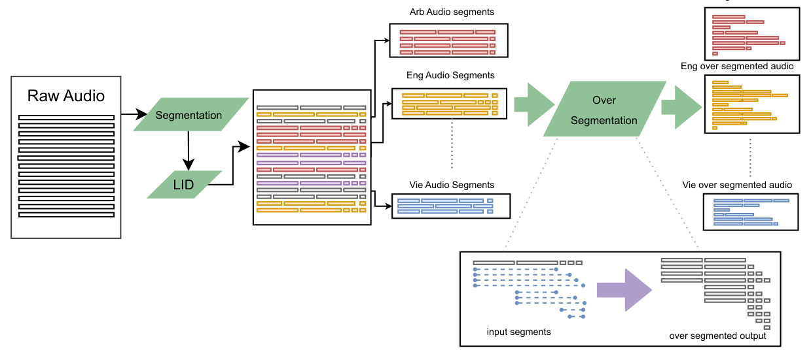
图Figure 1: Workflow of speech processing.
图 1：语音处理的工作流程。
While numerous off-the-shelf LID models exist, none could cover our target list of 100 languages.4 Therefore, we trained our own model, following the ECAPA-TDNN architecture introduced in [Desplanques et al., 2020], for which an open-source model trained on VoxLingua107 [Valk and Alumäe, 2021] is available. The new model adds support for several new languages, including Moroccan Arabic, Egyptian Arabic, Central Kurdish, West Central Oromo, Irish, Igbo, Kyrgyz, Ganda, Maithili, Meitei, Nyanja, Odia, Cantonese, and Zulu.
尽管有许多现成的 LID 模型，但没有一个能覆盖我们 100 种目标语言的清单[4]。因此，我们参照 [Desplanques et al., 2020] 提出的 ECAPA-TDNN 架构训练了自己的模型——该架构有一个在 VoxLingua107 [Valk and Alumäe, 2021] 上训练的开源模型。新模型增加了对若干新语言的支持，包括摩洛哥阿拉伯语、埃及阿拉伯语、中库尔德语、西中奥罗莫语、爱尔兰语、伊博语、吉尔吉斯语、干达语、迈蒂利语、梅泰语、尼扬加语、奥里亚语、粤语和祖鲁语。
3.1.1 Training
3.1.1 训练
基线Baseline
We first retrained a system from scratch on VoxLingua107 data to reproduce a baseline. This system, dubbed VL107 baseline, achieved a classification error rate of 5.25% on the development set of VoxLingua107 at epoch 30. Comparatively, the open-sourced model available on HuggingFace,5 referred to as VL107 HF, yields an error rate of 7%.
我们首先在 VoxLingua107 数据上从头重训了一个系统，以复现基线。这个被称为 VL107 baseline 的系统，在第 30 个 epoch 时于 VoxLingua107 开发集上取得 5.25% 的分类错误率。相比之下，HuggingFace 上的开源模型（记为 VL107 HF）[5] 错误率为 7%。
实验设置Experimental setup
With our training pipeline validated, we finally trained our own model for 40 epochs. This required about 172 hours on 8 GPUs. A total of 17k hours of speech were used, with an average of 171 hours per language, ranging from 1 to 600 hours. The test corpus covers our 100 languages of interest and is composed of the FLEURS test set, the VoxLingua107 development set, and extra test data extracted from VAANI,6 IIITH [Kumar Vuddagiri et al., 2018] and KENCORPUS7 [Wanjawa et al., 2022].
训练流水线验证通过后，我们最终训练了自己的模型，共 40 个 epoch。这在 8 张 GPU 上耗时约 172 小时。共使用 17k（17,000）小时语音，平均每种语言 171 小时，范围从 1 到 600 小时不等。测试语料覆盖我们关注的 100 种语言，由 FLEURS 测试集、VoxLingua107 开发集，以及从 VAANI[6]、IIITH [Kumar Vuddagiri et al., 2018] 和 KENCORPUS[7] [Wanjawa et al., 2022] 抽取的额外测试数据组成。
结果Results
The F1 scores on the test data for all models are presented in Table 6. The results are given for the 100 SeamlessM4T languages, and the 79 languages in common with VoxLingua107. We can see that training on the additional languages slightly decreases the 4. MMS [Pratap et al., 2023] has recently been released and covers them all, but it was not available when this project started 5. https://huggingface.co/TalTechNLP/voxlingua107-epaca-tdnn 6. http://vaani.iisc.ac.in 7. https://dataverse.harvard.edu/dataset.xhtml?persistentId=doi:10.7910/DVN/6N5V1K
所有模型在测试数据上的 F1 分数见 Table 6。结果分别给出 100 种 SeamlessM4T 语言，以及与 VoxLingua107 共有的 79 种语言。可以看到，在额外语言上训练会略微降低（原有语言的 F1）[4]。（页码行：2。） MMS [Pratap et al., 2023] 最近已发布并覆盖了所有这些语言，但在本项目启动时尚不可用 5. https://huggingface.co/TalTechNLP/voxlingua107-epaca-tdnn 6. http://vaani.iisc.ac.in 7. https://dataverse.harvard.edu/dataset.xhtml?persistentId=doi:10.7910/DVN/6N5V1K
17总体结果Overall
Intersection ↑F1-micro (n=100) ↑F1-macro (n=100) ↑F1-micro (n=79) ↑F1-macro (n=79) VL107 HF
表头：Intersection × ↑F1-micro (n=100) / ↑F1-macro (n=100) / ↑F1-micro (n=79) / ↑F1-macro (n=79)——VL107 / HF（后续照原文）。
82.3% - 94.1% 92.6%VL107 baseline82.5% - 94.4% 93.0%86.0% 81.9% 92.9% 91.1%Table 6: F1 micro and macro average for the considered LID systems over all SeamlessM4T languages and the intersection of supported languages across models. Dashes are used for models that do not support the full 100 scope.
表 6：各 LID 系统在全部 SeamlessM4T 语言及各模型共同支持语言交集上的 F1 micro 与 macro 平均值。对不支持全部 100 种语言的模型用短横线表示。
| that do not support the full 100 scope. | ||||||||
|---|---|---|---|---|---|---|---|---|
| overall performance for the common set of languages, which is a | ||||||||
| presence of a higher number of close languages. | For example, Zulu | |||||||
| with Nyanja (nya), Igbo (ibo) with Yoruba (yor), and Modern | ||||||||
| Moroccan Arabic (ary) and Egyptian Arabic (arz). | Our model | |||||||
| difference greater than 5%) on 17 languages with an average gain of | ||||||||
| newly covered languages, while decreasing classification for 12 (with | ||||||||
| 3.1.2 | ||||||||
| While it is important to retrieve the maximum amount of data for | ||||||||
| ensure | quality | in | LID | labeling. | Depending | on | the | |
| particular | language, | it | may | be useful | filter | it | to | retain |
| estimated the Gaussian distribution of the LID scores per language | ||||||||
| classifications on the development corpus. | We selected a threshold | |||||||
| p(correct|score) > p(incorrect|score). | By rejecting 8% of the data, | |||||||
| increase the F1 measure by almost 3%. | ||||||||
| ↑F1 micro | ↑Coverage | |||||||
| LID100 | 86.0% | |||||||
| +filtering | 89.5% |
overall performance for the common set of languages, which is a direct consequence of the presence of a higher number of close languages. For example, Zulu (zul) is very often confused with Nyanja (nya), Igbo (ibo) with Yoruba (yor), and Modern Standard Arabic (arb) with Moroccan Arabic (ary) and Egyptian Arabic (arz). Our model improves classification (F1 difference greater than 5%) on 17 languages with an average gain of 14.6%, not counting the newly covered languages, while decreasing classification for 12 (with an average loss of 9.8%).
（接上表分析：在共有语言集上，加入更多语言后整体性能略有下降，）这是语言集合中近缘语言数量增多的直接后果。例如，祖鲁语（zul）经常与尼扬加语（nya）混淆，伊博语（ibo）与约鲁巴语（yor）混淆，现代标准阿拉伯语（arb）与摩洛哥阿拉伯语（ary）、埃及阿拉伯语（arz）混淆。不算新增覆盖的语言，我们的模型在 17 种语言上改进了分类效果（F1 差值大于 5%），平均提升 14.6%；同时在 12 种语言上有所下降（平均损失 9.8%）。
86.0% 100%89.5% 92.1%Table 7: F1 micro average and coverage across 100 languages for the LID100 system with and without filtering.
表 7：LID100 系统在 100 种语言上加过滤与不加过滤的 F1 micro 平均值与覆盖率。
| 3.2 | audio | data | at | scale | ||||
| Text | pre-processing | On the text side, we rely entirely on the same dataset deployed in | ||||||
| NLLB [NLLB Team et al., 2022]. | The same data sources, cleaning, and filtering steps are | |||||||
| used and run at scale with our Stopes library. | ||||||||
| Audio | pre-processing | 4 | million | of | raw | audio | ||
| publicly available repository of crawled web data. | Table 10 provides statistics on the amount | |||||||
| of raw audio for each language. | Approximately 1 million hours in this collection are in English. | |||||||
| We then applied a series of pre-processing steps to curate and improve the overall speech | ||||||||
| quality. | Firstly, we deduplicated the audio file URLs found in the repository, downloaded | |||||||
| 18 |
3.2 大规模采集原始音频与文本数据Gathering raw audio and text data at scale
文本预处理Text pre-processing
On the text side, we rely entirely on the same dataset deployed in NLLB [NLLB Team et al., 2022]. The same data sources, cleaning, and filtering steps are used and run at scale with our Stopes library.
在文本侧，我们完全复用 NLLB [NLLB Team et al., 2022] 所部署的数据集。相同的数据来源、清洗与过滤步骤被沿用，并用我们的 Stopes 库规模化运行。
音频预处理Audio pre-processing
the audio files, and resampled at 16KHz. Subsequently, we filtered out the non-speech data with a bespoke audio event detection (AED) model.
首先，我们对仓库中音频文件的 URL 去重，下载音频文件 [18]，并重采样到 16KHz。接着，我们用一个定制的音频事件检测（AED）模型滤除了非语音数据。
音频切分Audio segmentation
To perform S2TT or S2ST mining, it is desirable to split audio files into smaller chunks that map as closely as possible to self-contained sentences, equivalent to sentences in a text corpus. However, genuine semantic segmentation in speech is an open-ended problem–pauses can be an integral part of a message and can naturally occur differently across languages. For mining purposes, it is impossible to prejudge what specific segments can maximize the overall quality of the mined pairs.
要进行 S2TT 或 S2ST 挖掘，理想做法是把音频文件切成更小的片段，使其尽可能对应自足、与文本语料中句子等价的单元。然而，语音中真正的语义切分是一个开放问题——停顿本身可能就是信息的一部分，且在不同语言中停顿的出现方式天然不同。就挖掘而言，无法预先判断哪种具体切分能最大化所挖掘句对的整体质量。
We thus followed the over-segmentation approach drawn from [Duquenne et al., 2021] (as depicted in Figure 1). First, we used an open Voice Activity Detection (VAD) model [Silero, 2021] to split audio files into shorter segments. Subsequently, our speech LID model was used on each file. Finally, we created several possible overlapping splits of each segment and left the choice of the optimal split to the mining algorithm described in the next section. This over-segmentation strategy roughly octuples the number of potential segments considered.
因此我们采用取自 [Duquenne et al., 2021] 的过度切分（over-segmentation）方法（如 Figure 1 所示）。首先，我们用开源的语音活动检测（VAD）模型 [Silero, 2021] 把音频文件切成较短的片段。随后，对每个文件应用我们的语音 LID 模型。最后，我们为每个片段生成多种可能的重叠切分，把最优切分的选择留给下一节介绍的挖掘算法。这种过度切分策略把候选片段数量大约扩大了 8 倍。
3.3 语音挖掘Speech mining
The overall workflow of our mining process is shown in Figure 2. First, we trained encoders for text (Section 3.3.1) and speech (Section 3.3.2). These are then used to project both modalities into a joint embedding space. We then mined speech segments against text sentences or speech segments in other languages to create large amounts of S2TT and S2ST pairs. These corpora are subsequently combined with other resources to train the SeamlessM4T model.
我们挖掘过程的整体工作流程如 Figure 2 所示。首先，我们分别训练文本编码器（第 3.3.1 节）与语音编码器（第 3.3.2 节）。然后用它们把两种模态投射到一个联合嵌入空间。接着，我们用语音片段对其他语言的文本句子或语音片段进行挖掘，创造出大量 S2TT 与 S2ST 句对。这些语料随后与其他资源合并，用于训练 SeamlessM4T 模型。
3.3.1 Sonar text embedding space
3.3.1 Sonar 文本嵌入空间
架构与训练设置Architecture and training setup
We use a novel sentence embedding space developed by Duquenne et al. [2023b], named Sentence-level multimOdal and laNguage-Agnostic Representations—in short, Sonar. Sonar substantially outperforms the previous Laser Segmented Text from NLLB Arb
我们使用 Duquenne et al. [2023b] 开发的新型句子嵌入空间，名为 Sentence-level multimOdal and laNguage-Agnostic Representations——简称 Sonar。（图内容：Sonar 大幅超越此前的 Laser。来自 NLLB 的切分文本（Arb/Eng/Vie）经 Sonar 文本编码器、过度切分音频经 Sonar 语音编码器，投射到共享的多语言多模态嵌入空间；随后产出 Arb-Eng、Eng-Vie 等 S2TT 与 S2ST 对齐数据，并与其他资源合并，用于 SeamlessM4T。）
✏️SONAR Text Encoders Eng✏️Shared multilingual and multimodal embeddings space Vie✏️Oversegmented Audio SONAR Arb🎤Speech Encoders Eng🎤Vie🎤S2TT Aligned Data Other resources Arb - Eng Eng - Vie SeamlessM4T S2ST Aligned Data Arb - Eng Eng - Vie
（页码行：2。） S2TT 对齐数据 其他资源 Arb - Eng Eng - Vie SeamlessM4T S2ST 对齐数据 Arb - Eng Eng - Vie
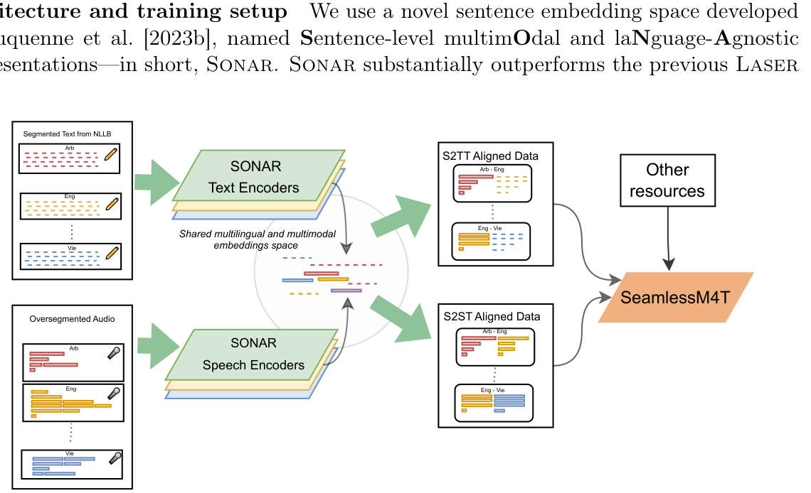
图Figure 2: Workflow of the Sonar encoding and mining processes.
图 2：Sonar 编码与挖掘过程的工作流程。
19↑spBLEU ↑COMET
19 ↑spBLEU ↑COMET
模型Model
X–eng (n=200) eng–X (n=200) X–eng (n=89) eng–X (n=89) Sonar
（页码行：2。） X–eng (n=200) eng–X (n=200) X–eng (n=89) eng–X (n=89) Sonar
32.7 21.6 85.9 84.2NLLB-1.3B (MT topline)35.2 24.9 86.5 85.2Table 8: Average performance on Flores devtest set over the 200 NLLB languages and 89 languages supported by COMET: translation spBLEU and COMET scores, auto-encoding spBLEU.
表 8：在 200 种 NLLB 语言与 89 种 COMET 支持语言上 Flores devtest 集的平均表现：翻译 spBLEU 与 COMET 分数、自编码 spBLEU。
| (35.2→32.7) | respectively | This | |
|---|---|---|---|
| Multilingual Text ✏️ | |||
| Initialized with | |||
| Text Decoder | NLLB 1B | ||
| decoder | |||
| SONAR | |||
| text sentence embedding | |||
| Initialized with | |||
| Speech Encoder | NLLB 1B | ||
| encoder | |||
| Multilingual Speech 🎤 | Multilingual Text ✏️ | ||
| 20 |
space. It follows the same two-step approach: we first trained a text embedding space and then relied on a teacher-student training strategy to extend it to the speech modality. Similarly to Laser, the initial text Sonar space uses an encoder-decoder architecture, but is based on the NLLB-1.3B model, capable of translating across 200 languages [NLLB Team et al., 2022]. The intermediate representation was replaced with a fixed-size vector using mean-pooling (i.e., the decoder thus attends to a single vector). This architecture is fine-tuned using all of NLLB’s T2TT training data, and several training objectives were explored. A detailed ablation study can be found in Duquenne et al. [2023b]. This yields a powerful, massively multilingual sentence representation that can be decoded into all 200 languages of the NLLB project. Figure 3 provides an illustration of the Sonar architecture and Table 8 summarizes the translation evaluation of the Sonar framework.
（承接上文：Sonar 大幅超越此前的 Laser 空间。）它遵循同样的两步法：先训练一个文本嵌入空间，再依靠师生训练策略将其扩展到语音模态。与 Laser 类似，最初的文本 Sonar 空间使用编码器-解码器架构，但基于能够翻译 200 种语言的 NLLB-1.3B 模型 [NLLB Team et al., 2022]。中间表征被替换为一个固定维度的向量（通过均值池化得到，即解码器只关注这一个向量）。该架构使用 NLLB 的全部 T2TT 训练数据微调，并探索了若干训练目标。详细的消融研究见 Duquenne et al. [2023b]。由此得到一个强大的、大规模多语言的句子表征，可被解码回 NLLB 项目的全部 200 种语言。Figure 3 展示了 Sonar 架构，Table 8 总结了 Sonar 框架的翻译评测结果。
面向挖掘的评测Evaluation for mining
On pure translation performance, we observe that the fixed-size representation bottleneck leads to a 7% and 13% decrease in BLEU score when translating into English (35.2→32.7) and out of English, respectively (24.9→21.6). This is a rather
在纯翻译性能上，我们观察到固定维度表征瓶颈导致译入英语与译出英语的 BLEU 分数分别下降 7% 与 13%（35.2→32.7 与 24.9→21.6）。（图内容：以 NLLB 1B 初始化的多语言文本编码器与文本解码器、语音编码器，把多语言语音与多语言文本编码为 Sonar 嵌入空间中的文本句子嵌入与语音句子嵌入。）
Multilingual Text Initialized with NLLB 1B Text Decoder decoder text sentence embedding Speech sentence embedding SONAR Embedding Space Initialized with Speech Encoder Text Encoder NLLB 1B encoder Multilingual Speech Multilingual Text
（图内容：以 NLLB 1B 初始化的多语言文本编码器与文本解码器、语音编码器，把多语言语音与多语言文本编码为 Sonar 嵌入空间中的文本句子嵌入与语音句子嵌入。）
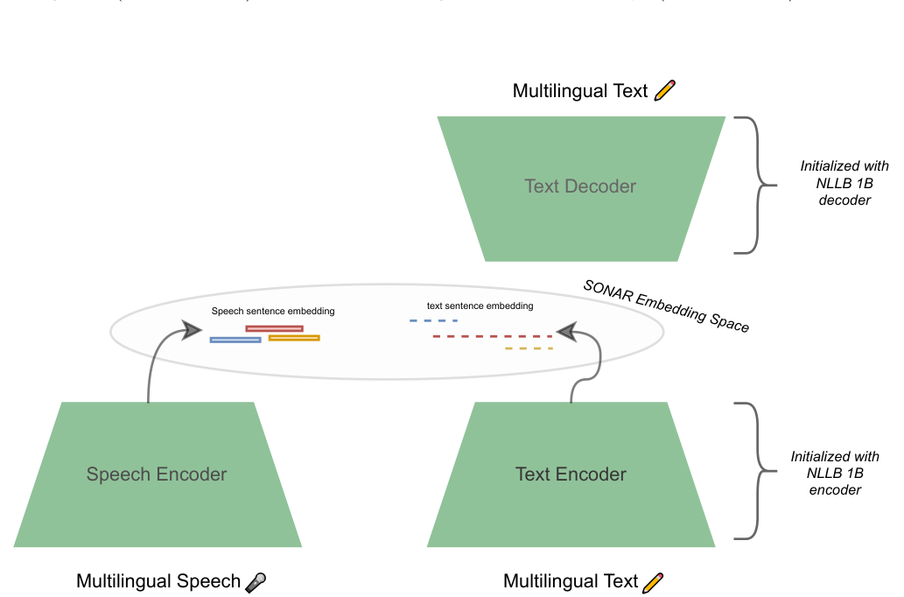
图Figure 3: SONAR architecture.
图 3：Sonar 架构。
interesting result, given that the use of attention is commonly considered mandatory to achieve reasonable performance.
考虑到注意力机制通常被认为是获得合理性能的必备条件，这是一个相当有趣的结果。（页码 20）
On mining performance, we rely on the multilingual similarity search xsim metric, which measures the percentage of sentences in the Flores dataset which are not correctly aligned when searching for the closest vector in the embedding space. The improved version xsim++ [Chen et al., 2023b] added challenging English sentences on the target side. Both of these metrics are a good proxy to the actual T2TT mining task while being much faster to compute.
在挖掘性能上，我们使用多语言相似度搜索指标 xsim——它衡量在嵌入空间中搜索最近向量时，Flores 数据集中未能被正确对齐的句子所占的百分比。改进版 xsim++ [Chen et al., 2023b] 在目标侧加入了更具挑战性的英语句子。这两个指标都是实际 T2TT 挖掘任务的良好代理，且计算速度快得多。
As summarized in Table 9, Sonar substantially outperforms other popular multilingual sentence representations like Laser3 [Heffernan et al., 2022] or LaBSE [Feng et al., 2022].
如 Table 9 所总结，Sonar 大幅超越 Laser3 [Heffernan et al., 2022] 和 LaBSE [Feng et al., 2022] 等流行的多语言句子表征。
总体结果Overall
Intersection ↓xsim (n=200) ↓xsim++ (n=200) ↓xsim (n=98) ↓xsim++ (n=98) Sonar
（页码行：2。） 交集 ↓xsim (n=200) ↓xsim++ (n=200) ↓xsim (n=98) ↓xsim++ (n=98) Sonar
1.4 15.2 0.1 9.3Laser35.1 36.4 1.1 27.5LaBSE10.7 36.1 1.5 15.4Table 9: Comparison of similarity search results (error rates) on all 200 Flores languages, and limited to the intersection of 98 languages on which each model has been trained on.
表 9：在全部 200 种 Flores 语言上、以及限定在各模型都训练过的 98 种语言交集上的相似度搜索结果（错误率）对比。
| 3.3.2 | Training | speech | encoders | |||||
| training | setup | As a | second | and | ||||
| 2021], the new Sonar text embedding space is extended to the speech modality through | ||||||||
| teacher-student training. | In that work, a fixed-size speech representation was obtained by | |||||||
| taking the BOS output of a pretrained XLS-R model [Babu et al., 2022]. | ||||||||
| then fine-tuned to maximize the cosine loss between this pooled speech representation and | ||||||||
| sentence | in | the | same | languages | (ASR | transcriptions) | ||
| We improved this initial recipe by doing the following: | ||||||||
| • | MSE loss instead of a cosine loss was used. | |||||||
| • | w2v-BERT | 2.0 speech front-end instead of XLS-R. w2v-BERT | ||||||
| on 143 languages (see Section 4.1 for details), | ||||||||
| • | Instead of the usual pooling methods (i.e., mean or max-pooling), | |||||||
| we implemented a 3-layer sequence-to-sequence model to convert the variable length | ||||||||
| sequence of | w2v-BERT | 2.0 to a fixed size vector, | ||||||
| • | Training on human-performed ASR transcriptions only. | |||||||
| ASR | transcriptions | for | most of | the | languages | (see | ||
| trained the speech encoders exclusively on them, | ||||||||
| • | Following [Heffernan et al., 2022; NLLB Team et al., 2022], we grouped languages by | |||||||
| linguistic families (i.e., Germanic or Indian languages) and trained them together in | ||||||||
| Alternative language groupings, which might consider the acoustic | ||||||||
| characteristics of each language, are left open for future research. | ||||||||
| 21 |
架构与训练设置Architecture and training setup
As a second step and following [Duquenne et al., 2021], the new Sonar text embedding space is extended to the speech modality through teacher-student training. In that work, a fixed-size speech representation was obtained by taking the BOS output of a pretrained XLS-R model [Babu et al., 2022]. This model was then fine-tuned to maximize the cosine loss between this pooled speech representation and sentence embeddings in the same languages (ASR transcriptions) or in English (speech translations). We improved this initial recipe by doing the following:
第二步，沿用 [Duquenne et al., 2021] 的做法，通过师生训练把新的 Sonar 文本嵌入空间扩展到语音模态。在那项工作中，固定维度的语音表征是通过取预训练 XLS-R 模型 [Babu et al., 2022] 的 BOS 输出得到的。随后微调该模型，以最大化这一池化语音表征与同语言（ASR 转写）或英语（语音翻译）句子嵌入之间的余弦相似度。我们对这一初始配方做了如下改进：
ISO 代码（各语言统计）ISO
Raw Train X–eng (↑BLEU) Mined audio [h] audio [h] ASR [h] Ours Whisper Sen2Txx Sxx2Ten Sxx2Sen arb
（页码行：2。）
106755 822 28.7 25.5 1568 8072 776ben7012 335 18.9 13.2 606 1345 263cat43531 1738 35.1 34.2 1570 4411 354ces41318 181 29.2 27.8 1454 6905 602cmn79772 9320 16.2 18.4 5440 18760 1570cym24161 99 14.5 13.0 – 4411 278dan34300 115 31.9 32.7 2499 6041 583deu490604 3329 32.7 34.6 91715 17634 1921est12691 131 23.8 18.7 1022 3346 607fin32858 184 22.2 22.1 651 6086 526fra282179 2057 31.2 32.2 21523 17380 3337hin15118 150 19.2 22.0 1041 2977 530ind11559 269 26.5 29.1 1938 2658 510ita79480 588 25.3 23.6 4378 6508 817jpn75863 17319 17.4 18.9 1973 21287 1141kan1451 114 20.0 11.6 – 232 198kor37854 316 15.0 21.3 – 8657 640mlt2122 106 23.2 13.5 131 130 60nld93933 1723 25.5 24.0 3720 6859 1210pes43788 386 22.2 19.6 – 7122 693pol53662 304 21.1 22.3 1324 9389 757por141931 269 35.4 38.1 4853 8696 928ron18719 135 32.1 31.5 2770 2878 716rus103906 259 25.4 27.8 11296 13509 1252slk16954 102 29.5 26.1 1267 3785 491spa324086 1511 24.3 23.3 27778 17388 2727swe125195 144 33.4 37.02 3438 2620 484swh18393 361 22.6 7.2 690 2620 484tam100331 245 14.3 9.2 – 1664 867tel3303 84 15.8 12.5 – 985 536tgl4497 108 13.3 24.4 – 633 266tha13421 195 15.3 16.1 2577 3563 542tur23275 174 21.0 26.6 1417 6545 426ukr6396 105 27.9 29.4 1220 1717 392urd16882 185 17.6 17.2 773 3416 652uzn8105 115 17.9 6.0 475 1846 157vie34336 194 17.8 20.4 1689 7692 868合计/平均Total/avr
2529741 43772 23.3 22.5 202796 239767 29161Table 10: Statistics on speech encoders and amount of mined data. Sen2Txx, Sxx2Ten, and SxxSen correspond to English speech paired with foreign text, foreign speech paired with English Text, and foreign Speech paired with English speech, respectively. Dashes are unmined directions. We provide the amount of raw audio data for mining and the amount of human-provided ASR transcripts to train the speech encoders. The speech encoders are evaluated for S2TT using BLEU on the Fleurs test set. Our model performs zero-shot S2TT. Finally, the last three columns provide the amount of mined data.
表 10：语音编码器与挖掘数据量统计。Sen2Txx、Sxx2Ten 与 SxxSen 分别对应英语语音配外语文本、外语语音配英语文本、外语语音配英语句子。短横线表示未挖掘的方向。我们给出用于挖掘的原始音频量、以及训练语音编码器所用的人造 ASR 转写量。语音编码器以 Fleurs 测试集上的 BLEU 评测 S2TT。我们的模型执行零样本 S2TT。最后三列给出挖掘数据量。
22语音编码器评测Evaluation of speech encoders
The trained speech encoders are to be used in S2TT and S2ST mining, and the resulting paired data is to be fed into the SeamlessM4T system (see section 4). Consequently, an ideal evaluation would consist of testing various iterations of each speech encoder by using them in an end-to-end loop: performing mining, then training a S2TT or S2ST translation system on the mined data, and potentially comparing different thresholds of the Sonar score. Unfortunately, this is a very compute-intensive recipe.
训练好的语音编码器将用于 S2TT 与 S2ST 挖掘，挖掘得到的配对数据将被送入 SeamlessM4T 系统（见第 4 节）。因此，理想的评测方式是把每个语音编码器的各个迭代版本放进端到端回路里实测：先执行挖掘，再用挖掘出的数据训练一个 S2TT 或 S2ST 翻译系统，并可能比较 Sonar 分数的不同阈值。遗憾的是，这是一条计算开销极大的路线。
Instead, given that the Sonar embedding space comes with a text decoder, we chose to evaluate the individual speech encoders on a S2TT task. That is, following [Duquenne et al., 2022, 2023c], we decoded foreign speech embeddings into English texts. Results are summarized in Table 10, column “X-eng BLEU”. For comparison, we also provide the performance of Whisper-Large-v2 [Radford et al., 2022]. It is important to emphasize that the Sonar speech encoders were trained on ASR transcriptions only and the Sonar text decoder has never been exposed to any speech input. Therefore, the reported results correspond to fully zero-shot speech translation.
作为替代，鉴于 Sonar 嵌入空间自带文本解码器，我们选择在一个 S2TT 任务上评测各个语音编码器。也就是说，沿用 [Duquenne et al., 2022, 2023c] 的做法，我们把外语语音嵌入解码为英语文本。结果汇总于 Table 10 的「X-eng BLEU」列。作为对比，我们还给出了 Whisper-Large-v2 [Radford et al., 2022] 的表现。需要强调的是，Sonar 语音编码器只在 ASR 转写数据上训练，而 Sonar 文本解码器从未接触过任何语音输入。因此，这里报告的结果对应的是完全零样本的语音翻译。
Despite the zero-shot scenario, the Sonar speech encoders compare favorably to a model like Whisper-Large-v2, which was trained on a massive amount of translated audio. Gaps in BLEU points can be observed in some high resource languages such as German, Russian or Portuguese, However, zero-shot speech translation with our speech encoders outperforms Whisper-Large-v2 on several low-resource languages – particularly for Swahili and several South Asian languages like Bengali, Kannada, Telugu, and Tamil.
尽管是零样本场景，Sonar 语音编码器与 Whisper-Large-v2 这样在巨量翻译音频上训练出来的模型相比仍然不落下风。在德语、俄语或葡萄牙语等一些高资源语言上可以看到 BLEU 分数差距；但是，我们的语音编码器的零样本语音翻译在若干低资源语言上反超了 Whisper-Large-v2——尤其是斯瓦希里语和几种南亚语言，如孟加拉语、卡纳达语、泰卢固语和泰米尔语。
3.3.3 Speech mining
3.3.3 语音挖掘
margin 设定Margin setting
Mining was performed using a margin criterion with our Stopes data processing library8 [Andrews et al., 2022]. The overall processing is identical to that developed for T2TT mining in NLLB [NLLB Team et al., 2022]. We performed so-called global mining, where all speech segments in one language are compared to all speech segments in another language. Local mining, on the contrary, would try to leverage knowledge on longer speech chunks that are likely to contain many parallel segments. A typical example would be documentation on an international event in multiple languages. Such high-level information is very difficult to obtain at scale.
挖掘使用 margin 准则执行，依托我们的 Stopes 数据处理库8 [Andrews et al., 2022]。整体处理流程与 NLLB [NLLB Team et al., 2022] 中为 T2TT 挖掘开发的流程相同。我们执行的是所谓的全局挖掘（global mining），即一种语言中的所有语音片段与另一种语言中的所有语音片段逐一比较。与之相反，局部挖掘（local mining）会试图利用关于较长语音块的知识——这些长块很可能包含许多平行片段。一个典型例子是同一国际事件的多语言文档。这类高层信息很难大规模获取。
First, the embeddings for all speech segments and text sentences are calculated. These are then indexed with the FAISS library [Johnson et al., 2019], enabling efficient large-scale similarity search on GPUs. Finally, nearest neighbors to all elements in both directions are retrieved, and margin scores are computed following the formula introduced in [Artetxe and Schwenk, 2019a]:
首先，计算所有语音片段和文本句子的嵌入。随后用 FAISS 库 [Johnson et al., 2019] 为这些嵌入建索引，从而在 GPU 上实现高效的大规模相似度搜索。最后，检索双向所有元素的最近邻，并按照 [Artetxe and Schwenk, 2019a] 引入的公式计算 margin 分数：
cos(x, y), Xscore(x, y) = margin
score(x, y) = margin
cos(x, z)cos(y, v)2k + X (1)2kz∈NNk(x)v∈NNk(y)where x and y are the source and target sentences, and NNk(x) denotes the k nearest neighbors of x in the other language. We set k to 16.
其中 x 和 y 分别是源句和目标句，NNk(x) 表示 x 在另一种语言中的 k 个最近邻。我们把 k 设为 16。
In past work, a threshold of 1.06 on the margin score was used for bitext mining based on Laser embeddings [Schwenk et al., 2021; NLLB Team et al., 2022]. The Sonar space, 8. https://github.com/facebookresearch/stopes
过去基于 Laser 嵌入的双语文本挖掘工作 [Schwenk et al., 2021; NLLB Team et al., 2022] 把 margin 分数阈值设为 1.06。然而，Sonar 空间 8. https://github.com/facebookresearch/stopes 23 呈现出不同的动态特性，最优阈值需相应调整。
23however, displayed different dynamics and the optimal threshold was adapted accordingly. Since full end-to-end evaluation with S2TT or S2ST training is too compute-intensive, we set the new threshold at 1.15 after some human inspection. The statistics reported in Table 10 are based on this threshold.
然而，Sonar 空间 8. https://github.com/facebookresearch/stopes 23 呈现出不同的动态特性，最优阈值需相应调整。由于完整的 S2TT 或 S2ST 训练端到端评测计算开销过大，我们在一定人工检视后把新阈值设为 1.15。Table 10 报告的统计数字即基于这一阈值。
挖掘数据集Mined dataset
We performed mining of speech in foreign languages against English texts (column Sxx2Ten in Table 10) and English speech (column Sxx2Sen in Table 10). Given the sheer size of our raw English speech (1 million hours) and foreign text collections (often more than 1 billion sentences), we carried out this operation only for some languages (column Sen2Txx in Table 10). Other directions are left for future work.
我们执行了外语语音对英语文本（Table 10 中 Sxx2Ten 列）和对英语语音（Table 10 中 Sxx2Sen 列）的挖掘。鉴于我们的原始英语语音（100 万，1 million 小时）和外语文本集合（通常超过 1 billion（10 亿）句）体量巨大，这一操作仅对部分语言执行（Table 10 中 Sen2Txx 列）。其余方向留待未来工作。
Except for Maltese, for which we had access only to a small amount of raw audio, we were able to mine more than 100 hours of speech alignments with English speech for all languages. The alignments with English texts reached a thousand hours for most languages and exceeded ten thousand hours for six (i.e., German, French, Spanish, Japanese, Russian, and Mandarin Chinese). Overall, SeamlessAlign covers 37 languages and a total of 470,000 hours:
除马耳他语（我们只能获得少量原始音频）之外，所有语言与英语语音的对齐都挖到了 100 小时以上。与英语文本的对齐在大多数语言上达到上千小时，并在六种语言上超过一万小时（即德语、法语、西班牙语、日语、俄语和中文普通话）。总体而言，SeamlessAlign 覆盖 37 种语言、总计 470,000 小时：
• English speech to non-English text (Sen2Txx)—approximately 200,000 hours • Non-English speech to English text (Sxx2Ten)—approximately 240,000 hours • Non-English speech to English speech (Sxx2Sen)—approximately 29,000 hours Adding such huge amounts of data to train a massively multilingual S2ST translation system represents a substantial computational challenge. As described in Section 4, not all of this data was used for modeling, but only a subset with the highest Sonar alignment scores. Since our mined data can help support many different use cases, we are open-sourcing the meta-data for the full amount9 (i.e., up to a Sonar threshold of 1.15), to allow the community to rebuild SeamlessAlign and use it for their own purposes. The optimal threshold can thus be tuned based on the task, balancing dataset size and alignment quality. Our mining code is also open-sourced in the Stopes library.
• 英语语音到外语文本（Sen2Txx）——约 200,000 小时 • 外语语音到英语文本（Sxx2Ten）——约 240,000 小时 • 外语语音到英语语音（Sxx2Sen）——约 29,000 小时 把如此巨量的数据用于训练一个大规模多语言 S2ST 翻译系统，是不小的计算挑战。如第 4 节所述，并非所有这些数据都被用于建模，而是只取 Sonar 对齐分数最高的一个子集。由于我们挖掘的数据可以支撑多种不同用途，我们把全量（即放宽到 Sonar 阈值 1.15 为止）的元数据开源9，让社区能够重建 SeamlessAlign 并将其用于自己的目的。这样，最优阈值就可以按任务来调节，在数据集规模与对齐质量之间权衡。我们的挖掘代码也在 Stopes 库中开源。
3.4 相关工作Related work
3.4.1 Speech LID Spoken language identification has been traditionally approached in a two-stage workflow: a classifier is trained on top of conventional representations like the i-vector or x-vector, extracted from the raw audio signal [Dehak et al., 2011; Snyder et al., 2018]. The same idea has been revisited in end-to-end, integrated neural architectures [Cai et al., 2019; Miao et al., 2019; Wan et al., 2019]. These approaches typically fall short as the input audio goes shorter, which can be an issue with speech recordings involving multiple speakers talking to each other in turn. New methods were developed to tackle this very problem. Lopez-Moreno et al. [2014] show that a simple feed-forward network can outperform i-vectors on this task. More complex architectures such as convolutional neural networks or Bi-LSTMs prove to be more efficient in capturing information from the speech input [Lozano-Diez et al., 2015; Fernando 9. available at https://github.com/facebookresearch/seamless_communication
3.4.1 语音语种识别 口语语种识别传统上采用两阶段工作流：在从原始音频信号中提取的 i-vector 或 x-vector 等传统表征之上训练一个分类器 [Dehak et al., 2011; Snyder et al., 2018]。同样的思路后来在端到端的集成神经架构中被重新审视 [Cai et al., 2019; Miao et al., 2019; Wan et al., 2019]。这类方法通常在输入音频变短时表现不佳——当语音录音中多位说话人轮流交谈时，这会成为一个问题。针对这一具体问题，人们发展出了新方法。Lopez-Moreno et al. [2014] 表明，一个简单的前馈网络就能在该任务上超过 i-vector。（页码行：2。） 更复杂的架构如卷积神经网络或 Bi-LSTM 被证明在从语音输入中捕获信息方面更高效 [Lozano-Diez et al., 2015; Fernando 9. 可在 https://github.com/facebookresearch/seamless_communication 获取
24et al., 2017]. Some other approaches try to bridge the gap with models focused on longer segments through teacher-student training [Shen et al., 2018, 2019].
（页码行：2。） et al., 2017]。另一些方法尝试通过师生训练（teacher-student training），用专注于长片段的模型来弥补差距 [Shen et al., 2018, 2019]。
Recent initiatives aimed at increasing language coverage to go beyond a handful of conventionally very high-resource languages. The ECAPA-TDNN architecture introduced in [Desplanques et al., 2020] has proven effective to distinguish between the 107 languages of Voxlingua107 [Valk and Alumäe, 2021]. The XLS-R pretrained model [Babu et al., 2022] is also fine-tuned on a language identification task using the same dataset. Whisper-Largev2 is another popular model that can perform this task for 99 languages [Radford et al., 2022]. Very recently, the MMS project further broadened language support to 4,000 spoken languages [Pratap et al., 2023].
近期的若干计划致力于扩大语言覆盖，超越少数几种传统的高资源语言。[Desplanques et al., 2020] 引入的 ECAPA-TDNN 架构已被证明能有效区分 Voxlingua107 [Valk and Alumäe, 2021] 的 107 种语言。XLS-R 预训练模型 [Babu et al., 2022] 也在同一数据集上针对语种识别任务做了微调。Whisper-Largev2 是另一个流行的模型，可为 99 种语言执行该任务 [Radford et al., 2022]。就在最近，MMS 项目进一步把语言支持扩展到 4,000 种口语 [Pratap et al., 2023]。
3.4.2 Speech segmentation To achieve sentence-like speech segments, a commonly employed method is pause-based segmentation using Voice Activity Detection (VAD). This approach is widely utilized in various applications, including speech mining, ASR, and speech translation. In this work, we adopted the over-segmentation strategy proposed by Duquenne et al. [2021] on top of the segments obtained through VAD segmentation. While this over-segmentation significantly improves the recall of the mining process, it does come with certain drawbacks. Specifically, it leads to a substantial increase (8x) in the number of segments, introducing noise in the embedding space, and raising the computational demand for the mining process. Pause-based segments may not align with semantically coherent sentences; in fact, they tend to be too short because speaker pauses can extend beyond sentence boundaries. Consequently, for speech translation, researchers have put forward more sophisticated segmentation strategies with the potential to deliver higher-quality speech translation results. Gállego et al. [2021] used a pretrained wav2vec 2.0 instead of VAD to detect speech segments. Potapczyk and Przybysz [2020a] proposed a divide-and-conquer (DAC) algorithm that iteratively operates on top of VAD longest detected pauses until all segments become below a max-segment length parameter. Gaido et al. [2021] further builds upon this through a hybrid approach. SHAS [Tsiamas et al., 2022] train a classifier on top of wav2vec 2.0 using optimal segmentation from a manually segmented corpus. Similar to Potapczyk and Przybysz [2020a], it then applies a DAC algorithm on the splitting probabilities of the network to obtain final segmentation decisions. This approach demonstrated significant gains over simple pause-based segmentation and other baselines in speech-to-text translation tasks. These segmentation methods could be promising for speech mining, suggesting exciting avenues for future research.
3.4.2 语音切分 要获得句子级别的语音片段，常用方法是基于停顿的切分，即使用语音活动检测（Voice Activity Detection, VAD）。这一方法被广泛应用于语音挖掘、ASR 和语音翻译等多种场景。在本工作中，我们在 VAD 切分得到的片段之上，采用了 Duquenne et al. [2021] 提出的过度切分（over-segmentation）策略。这种过度切分显著提升了挖掘过程的召回率，但也带来了一些弊端。具体而言，它使片段数量大幅增加（8 倍），在嵌入空间中引入噪声，并提高了挖掘过程的算力需求。基于停顿的片段未必与语义连贯的句子对齐；实际上它们往往偏短，因为说话人的停顿可能跨越句子边界。因此，在语音翻译领域，研究者提出了更精细的切分策略，有望带来更高质量的语音翻译结果。Gállego et al. [2021] 使用预训练的 wav2vec 2.0 替代 VAD 来检测语音片段。Potapczyk and Przybysz [2020a] 提出了一种分治（divide-and-conquer, DAC）算法，在 VAD 检测到的最长停顿上迭代操作，直到所有片段都短于最大片段长度参数。Gaido et al. [2021] 在此基础上进一步提出混合方法。SHAS [Tsiamas et al., 2022] 在 wav2vec 2.0 之上训练分类器，监督信号来自人工切分语料上的最优切分。与 Potapczyk and Przybysz [2020a] 类似，随后它在网络输出的切分概率上应用 DAC 算法，得到最终切分决策。该方法在语音到文本翻译任务上相对简单停顿切分和其他基线取得了显著收益。这些切分方法对语音挖掘很有潜力，指明了令人兴奋的未来研究方向。
3.4.3 Multilingual and multimodal representations Several works have studied how to learn multilingual sentence representations. Well known approaches are Laser [Artetxe and Schwenk, 2019b], LaBSE [Feng et al., 2022], or [Yang et al., 2019; Ramesh et al., 2022]. While Laser was trained with an MT translation objective, a decoder compatible with the Laser embedding space is not freely available. To the best of our knowledge, Sonar is the first sentence embedding space for which an efficient and multilingual decoder is available. Another direction of research is to first train an English sentence representation (e.g., sentence-BERT [Reimers and Gurevych, 2019]) and in a second step, extend it to more languages using teacher-student training [Reimers and Gurevych,
3.4.3 多语言与多模态表征 已有多项工作研究如何学习多语言句子表征。知名的方法有 Laser [Artetxe and Schwenk, 2019b]、LaBSE [Feng et al., 2022]，以及 [Yang et al., 2019; Ramesh et al., 2022]。Laser 虽以 MT 翻译目标训练，但并没有自由可用的、与 Laser 嵌入空间兼容的解码器。据我们所知，Sonar 是第一个配有高效多语言解码器的句子嵌入空间。（页码行：2。） 另一个研究方向是首先训练英语句子表示（例如 sentence-BERT [Reimers and Gurevych, 2019]），然后在第二步通过师生训练将其扩展到更多语言 [Reimers and Gurevych,
252020]. The same approach was used to extend Laser to 200 languages, named Laser3 [Heffernan et al., 2022].
（页码行：2。） 2020]。同样的方法也被用于把 Laser 扩展到 200 种语言，即 Laser3 [Heffernan et al., 2022]。
Learning unsupervised representations of speech is the focus of several works, whether involving monolingual [Baevski et al., 2022] or multilingual speech [Babu et al., 2022; Hsu et al., 2021; Chung et al., 2021]. Examples of joint text and speech pre-trained models are mSLAM [Bapna et al., 2022] and Mu2SLAM [Cheng et al., 2023]. Duquenne et al. [2021] were the first to introduce fixed-size text and speech representations that can be used to perform multimodal mining, followed by [Khurana et al., 2022] 3.4.4 Speech mining The proof of concept of a joint text/speech representation that can be used to perform text/speech or speech/speech mining was presented by Duquenne et al. [2021]. In follow-up work, this approach was used to align speech in 17 languages in the VoxPopuli corpus to give rise to the SpeechMatrix corpus [Duquenne et al., 2023a]. The authors mined for parallel speech segments in all 136 possible combinations of languages, yielding a total of 418 thousand hours of speech-to-speech alignments, out of which about 46 thousand hours are aligned with English. SpeechMatrix is a large corpus, but the domain is rather limited since the raw audio of the VoxPopuli corpus is derived from European Parliament speeches. The corpus SpeechMatrix is freely available. Khurana et al. [2022] use a joint text/speech embedding space, dubbed Samu-Xlsr, to evaluate the recall of text and speech retrieval in the corpora CoVoST 2, MUST-C, and MTEDx.
学习语音的无监督表征是多项工作的焦点，无论涉及单语语音 [Baevski et al., 2022] 还是多语言语音 [Babu et al., 2022; Hsu et al., 2021; Chung et al., 2021]。文本与语音联合预训练模型的例子有 mSLAM [Bapna et al., 2022] 和 Mu2SLAM [Cheng et al., 2023]。Duquenne et al. [2021] 率先引入了可用于多模态挖掘的固定维度文本与语音表征，随后是 [Khurana et al., 2022]。3.4.4 语音挖掘 可用于文本/语音或语音/语音挖掘的联合文本/语音表征，其概念验证由 Duquenne et al. [2021] 给出。在后续工作中，该方法被用于对齐 VoxPopuli 语料中 17 种语言的语音，由此产生了 SpeechMatrix 语料 [Duquenne et al., 2023a]。作者们在全部 136 种可能的语言组合中挖掘平行语音片段，共得到 418 thousand（418,000）小时的语音到语音对齐，其中约 46 thousand（46,000）小时与英语对齐。SpeechMatrix 是一个大语料，但领域相当受限，因为 VoxPopuli 语料的原始音频来自欧洲议会演讲。SpeechMatrix 语料是自由可用的。Khurana et al. [2022] 使用名为 Samu-Xlsr 的联合文本/语音嵌入空间，评测了 CoVoST 2、MUST-C 和 MTEDx 语料中文本与语音检索的召回率。
There are several works that indirectly create speech-to-speech corpora. One direction of research is to perform speech synthesis on corpora aligned at the text level, (e.g., the CVSS corpus [Jia et al., 2022b] which is based on the CoVoST 2 speech-to-text translation corpus).
还有若干工作间接地创建语音到语音语料。一条研究路线是在文本层面对齐的语料上执行语音合成（例如基于 CoVoST 2 语音到文本翻译语料构建的 CVSS 语料 [Jia et al., 2022b]）。
264 SeamlessM4T 模型SeamlessM4T Models
Direct speech-to-text translation models have made significant progress in recent years [Berard et al., 2016; Weiss et al., 2017a; Di Gangi et al., 2019; Agarwal et al., 2023], and achieved parity with cascaded models on academic benchmarks under specific situations (e.g., constrained data, in-domain settings, specific language pairs, etc.). However, with the arrival of massively multilingual translation models [NLLB Team et al., 2022; Siddhant et al., 2022; Fan et al., 2020] and weakly supervised ASR models [Radford et al., 2022; Zhang et al., 2023a; Pratap et al., 2023], which leverage massive quantities of labeled data for training large foundation models, these comparisons have become outdated. To put it simply, direct models now lag significantly behind strong cascaded models.
直接的语音到文本翻译模型近年取得了显著进展 [Berard et al., 2016; Weiss et al., 2017a; Di Gangi et al., 2019; Agarwal et al., 2023]，并在特定条件下（受限数据、领域内设置、特定语言对等）于学术基准上与级联模型打平。然而，随着大规模多语言翻译模型 [NLLB Team et al., 2022; Siddhant et al., 2022; Fan et al., 2020] 和弱监督 ASR 模型 [Radford et al., 2022; Zhang et al., 2023a; Pratap et al., 2023] 的出现——它们利用海量标注数据训练大型基础模型——这类比较已经过时。简言之，如今的直接模型已经明显落后于强大的级联模型。
One of our goals with SeamlessM4T is to bridge the gap between direct and cascaded models for S2TT in large multilingual and multimodal settings by building a stronger direct X2T model (for translating both text and speech into text) that combines a strong speech representation learning model with a massively multilingual T2TT model. Beyond text outputs, our second goal builds on recent speech translation advancements, which have placed much emphasis on building systems that produce speech outputs [Jia et al., 2019b; Lee et al., 2022a; Inaguma et al., 2023]. We enable speech-to-speech translation with UnitY [Inaguma et al., 2023], a two-pass modeling framework that first generates text and subsequently predicts discrete acoustic units. Unlike cascaded models, the different components in UnitY (see Figure 4) can be jointly optimized.10 The aforementioned approach alleviates the issue of cascaded error propagation and domain mismatch, while relying on an intermediate semantic representation to mitigate the problem of multi-modal source-target mapping. The vocoders for synthesizing speech are trained separately (see Section 4.3.1). Figure 4 provides an overview of the SeamlessM4T model, including its four building blocks: (1) SeamlessM4T-NLLB a massively multilingual T2TT model, (2) w2v-BERT 2.0, a speech representation learning model that leverages unlabeled speech audio data, (3) T2U, a text-to-unit sequence-to-sequence model, and (4) multilingual HiFi-GAN unit vocoder for synthesizing speech from units.
SeamlessM4T 的目标之一，是在大规模多语言多模态设置下弥合 S2TT 直接模型与级联模型之间的差距——做法是构建一个更强的直接 X2T 模型（把文本和语音都翻译成文本），把一个强大的语音表征学习模型与一个大规模多语言 T2TT 模型结合起来。在文本输出之外，我们的第二个目标立足于近期语音翻译的进展——这些进展非常重视构建产生语音输出的系统 [Jia et al., 2019b; Lee et al., 2022a; Inaguma et al., 2023]。我们通过 UnitY [Inaguma et al., 2023] 实现语音到语音翻译——这是一种两段式（two-pass）建模框架，先生成文本，再预测离散声学单元（discrete acoustic units）。与级联模型不同，UnitY 中的不同组件（见 Figure 4）可以联合优化。10 上述做法缓解了级联误差传播与领域失配问题，同时依靠中间语义表征来缓解多模态源到目标映射的难题。用于合成语音的声码器（vocoder）单独训练（见第 4.3.1 节）。Figure 4 给出 SeamlessM4T 模型总览，包括四个组成部分：(1) SeamlessM4T-NLLB，大规模多语言 T2TT 模型；(2) w2v-BERT 2.0，利用未标注语音音频数据的语音表征学习模型；(3) T2U，文本到单元的序列到序列模型；(4) 多语言 HiFi-GAN 单元声码器，用于从单元合成语音。
The SeamlessM4T multitask UnitY model integrates components from the first three building blocks and is fine-tuned in three stages, starting from an X2T model (1,2) with English target only and ending with a full-fledged multitask UnitY (1,2,3) system capable of performing T2TT, S2TT and S2ST, as well as ASR. In what follows, we first describe unsupervised speech pre-training (w2v-BERT 2.0) in Section 4.1. We then introduce the X2T model in Section 4.2, starting with the data preparation pipeline in Section 4.2.1. Section 4.2.2 describes our multilingual T2TT model, and Section 4.2.3 details how the speech encoder and the T2TT model are jointly fine-tuned for X2T with multimodal and multitask capabilities. Next, we look at the S2ST task, starting from the acoustic unit extraction pipeline and vocoder design to map units back to speech waveforms in Section 4.3.1 Then, we describe T2U pre-training in Section 4.3.2. Section 4.3.3 ultimately outlines how all these components come together in the third and final stage of fine-tuning. We evaluated 10. There are two views of what constitutes a direct model in speech-to-speech translation literature: (1) A model that does not use intermediate text representation [Lee et al., 2022a] and (2) A model that directly predicts the target spectrogram [Jia et al., 2022a]
SeamlessM4T 多任务 UnitY 模型整合了前三个组成部分，并分三个阶段微调：从一个只支持英语目标的 X2T 模型 (1,2) 出发，最终成为能够执行 T2TT、S2TT、S2ST 以及 ASR 的完整多任务 UnitY (1,2,3) 系统。下面，我们先在第 4.1 节介绍无监督语音预训练（w2v-BERT 2.0）。随后在第 4.2 节引入 X2T 模型，从第 4.2.1 节的数据准备管线讲起。第 4.2.2 节介绍我们的多语言 T2TT 模型，第 4.2.3 节详述语音编码器与 T2TT 模型如何联合微调出具备多模态多任务能力的 X2T。接着看 S2ST 任务：第 4.3.1 节从声学单元提取管线讲起，直到把单元映射回语音波形的声码器设计；随后在第 4.3.2 节介绍 T2U 预训练。第 4.3.3 节最终概述所有这些组件如何在第三阶段、即最后一个微调阶段汇合。我们在第 4.4 节评测 10。（页码行：2。） 语音到语音翻译文献中对直接模型的构成有两种观点：(1) 不使用中间文本表示的模型 [Lee et al., 2022a]；(2) 直接预测目标频谱图的模型 [Jia et al., 2022a]
27(1) Pre-trained models W2V-BERT 2.0 SEAMLESSM4T-NLLB Unsupervised speech pre-training T2TT encoder-decoder (2) Multitasking UNITY Length adaptor Conformer Speech Encoder Transformer Text Encoder T2U Text-to-Unit encoder-decoder Vocoder Speech resynthesis S2ST HiFi-GAN Unit Vocoder X2T (ASR, T2TT, S2TT) Transformer Unit Decoder Transformer Text-to-Unit Encoder Transformer Text Decoder
（页码行：2。） (1) 预训练模型 W2V-BERT 2.0 SEAMLESSM4T-NLLB 无监督语音预训练 T2TT 编码器-解码器 (2) 多任务 UNITY 长度适配器 Conformer 语音编码器 Transformer 文本编码器 T2U 文本到单元编码器-解码器 声码器 语音重合成 S2ST HiFi-GAN 单元声码器 X2T (ASR, T2TT, S2TT) Transformer 单元解码器 Transformer 文本到单元编码器 Transformer 文本解码器
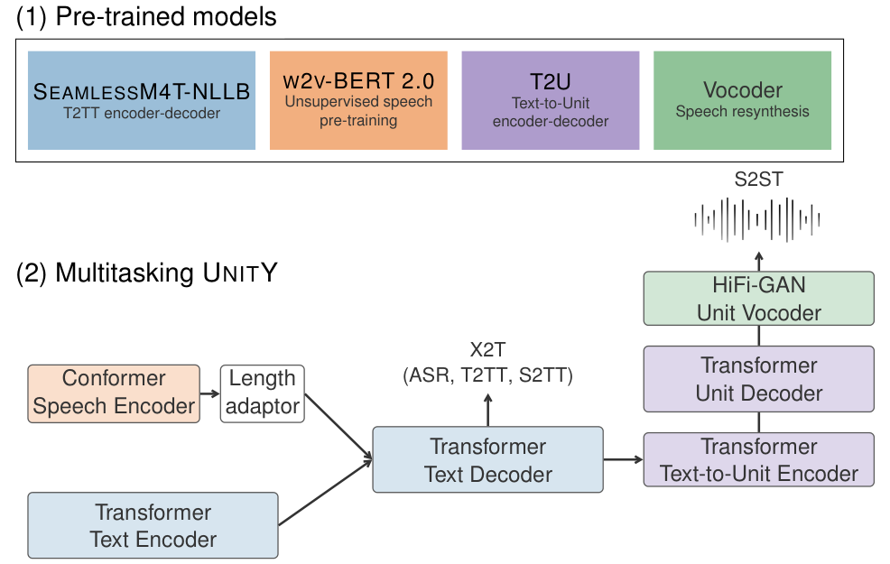
图Figure 4: Overview of SeamlessM4T. (1) shows the pre-trained models used when finetuning multitasking UnitY. (2) outlines multitasking UnitY with its two encoders, text decoder, T2U encoder-decoder, and the supporting vocoders for synthesizing output speech in S2ST.
图 4：SeamlessM4T 总览。(1) 展示微调多任务 UnitY 时使用的预训练模型。(2) 概述多任务 UnitY：两个编码器、文本解码器、T2U 编码器-解码器，以及支持 S2ST 输出语音合成的声码器。
our model using standard automatic metrics in Section 4.4 and compared its performance with state-of-the-art speech translation models.
在第 4.4 节中，我们的模型采用标准自动指标，并与最先进的语音翻译模型比较了性能。
4.1 无监督语音预训练Unsupervised Speech Pre-training
Labels for speech recognition and translation tasks are scarce and expensive, especially for low-resource languages. It is challenging to train speech translation models with only limited access to supervision. Self-supervised pre-training with unlabeled speech audio data is, thus, a practical approach for reducing the need for supervision in model training. This method helps achieve the same recognition and translation quality with much less labeled data than models without pre-training. It also helps push the limits of model performance with the same amount of labeled data. The most recent and publicly available state-of-the-art multilingual speech pre-trained model is MMS [Pratap et al., 2023]. It extends its predecessor, XLS-R [Babu et al., 2022], with additional 55K hours of training data and covers more than 1,300 new languages (see Table 11). Besides MMS, USM [Zhang et al., 2023a] is a proprietary SOTA multilingual speech pre-trained model that leverages the latest model architecture (BEST-RQ [Chiu et al., 2022] instead of wav2vec 2.0 [Baevski et al., 2020]), has the largest scale of training data (12M hours), and covers more than 300 languages.
语音识别与翻译任务的标注稀缺且昂贵，对低资源语言尤其如此。只能获得有限监督时，训练语音翻译模型是很有挑战的。因此，用未标注语音音频做自监督预训练，是降低模型训练对监督需求的切实途径。与不做预训练的模型相比，该方法能以少得多的标注数据达到同样的识别与翻译质量。在标注数据量相同的情况下，它也有助于把模型性能的极限推得更高。目前最新且公开可用的最先进多语言语音预训练模型是 MMS [Pratap et al., 2023]。它在前身 XLS-R [Babu et al., 2022] 的基础上增加了 55K 小时训练数据，并覆盖了 1,300 多种新语言（见 Table 11）。除 MMS 之外，USM [Zhang et al., 2023a] 是一个专有的 SOTA 多语言语音预训练模型：采用最新的模型架构（BEST-RQ [Chiu et al., 2022] 而非 wav2vec 2.0 [Baevski et al., 2020]），训练数据规模最大（12M 小时），覆盖 300 多种语言。
w2v-BERT 2.0 follows w2v-BERT [Chung et al., 2021] to combine contrastive learning and masked prediction learning, and improves w2v-BERT with additional codebooks in both learning objectives. The contrastive learning module is used to learn Gumbel vector quantization (GVQ) codebooks and contextualized representations that are fed into the subsequent masked prediction learning module. The latter refines the contextualized representations by a different learning task of predicting the GVQ codes directly instead of
w2v-BERT 2.0 沿用 w2v-BERT [Chung et al., 2021] 的思路，把对比学习与掩码预测学习结合起来，并在两个学习目标中都引入额外码本，对 w2v-BERT 做出改进。对比学习模块用于学习 Gumbel 向量量化（Gumbel vector quantization, GVQ）码本和上下文表征，后者被送入后续的掩码预测学习模块。掩码预测模块通过一个不同的学习任务来精炼这些上下文表征：直接预测 GVQ 码，而不是 28
28模型Model
Languages Hours Model type Open model XLS-R-2B-S2T
（页码行：2。）
1280.4M wav2vec 2.0 [Baevski et al., 2020]✓USM over 300† 12M BEST-RQ [Chiu et al., 2022] MMS
（页码行：2。） USM 超过 300† 12M BEST-RQ [Chiu et al., 2022] MMS
14060.5M wav2vec 2.0 [Baevski et al., 2020]✓SeamlessM4T-Large over 143† 1M w2v-BERT 2.0✓Table 11: A comparison of multilingual speech pre-training in state-of-the-art ASR and S2TT models. †Estimated from the part of data that has language information.
表 11：最先进 ASR 与 S2TT 模型中多语言语音预训练的对比。†根据有语言信息的数据部分估算。
| Conformer | X2T | |||
|---|---|---|---|---|
| SEAMLESSM4T-NLLB | ||||
| Speech Encoder | (ASR, T2TT, S2TT) | |||
| codebooks | (fra) le chat s’est assis | W2V-BERT 2.0 | ||
| Transformer | ||||
| Transformer | ||||
| Text Decoder | ||||
| Conformer | Knowledge distillation | Text Decoder | ||
| Speech Encoder | Transformer | (T2TT/AE→S2TT/ASR) | SEAMLESSM4T-NLLB | |
| Text Encoder | ||||
| 80-dimensional filterbank | Transformer | |||
| (eng) the cat sat | Text Encoder | |||
| unlabeled speech | SEAMLESSM4T-NLLB | |||
| Overview of the SeamlessM4T X2T model. | ||||
| models with a Conformer-based encoder [Gulati et al., 2020] for speech input | ||||
polarizing the prediction probability of correct and incorrect codes at the masked positions. Instead of using a single GVQ codebook, w2v-BERT 2.0 follows Baevski et al. [2020] to use product quantization with two GVQ codebooks. Its contrastive learning loss Lc is the same as that in w2v-BERT, including a codebook diversity loss to encourage the uniform usage of codes. Following w2v-BERT, we use GVQ codebooks for masked prediction learning and denote the corresponding loss as LmGVQ. We also created an additional masked prediction task using random projection quantizers [Chiu et al., 2022] (RPQ), for which we denote the corresponding loss as LmRPQ. The overall w2v-BERT 2.0 training loss L is defined as follows:
在掩码位置上拉大正确码与错误码预测概率的差距。w2v-BERT 2.0 不使用单一 GVQ 码本，而是沿用 Baevski et al. [2020] 的做法，采用两个 GVQ 码本的乘积量化（product quantization）。其对比学习损失 Lc 与 w2v-BERT 中的相同，包括一个鼓励码均匀使用的码本多样性损失。沿用 w2v-BERT，我们用 GVQ 码本做掩码预测学习，相应损失记为 LmGVQ。我们还用随机投影量化器（random projection quantizers, RPQ）[Chiu et al., 2022] 创建了一个额外的掩码预测任务，相应损失记为 LmRPQ。w2v-BERT 2.0 的整体训练损失 L 定义如下：
L = wcLc + wmGVQLmGVQ + wmRPQLmRPQ, (2)where loss weights wc, wmGVQ and wmRPQ are set to 1.0, 0.5, and 0.5, respectively.
其中损失权重 wc、wmGVQ 和 wmRPQ 分别设为 1.0、0.5 和 0.5。
We follow the w2v-BERT XL architecture [Chung et al., 2021] for the w2v-BERT 2.0 pre-trained speech encoder in SeamlessM4T-Large, which has 24 Conformer layers [Gulati et al., 2020] and approximately 600M model parameters. The w2v-BERT 2.0 model is trained on 1 million hours of open speech audio data that covers over 143 languages.
SeamlessM4T-Large 中的 w2v-BERT 2.0 预训练语音编码器沿用 w2v-BERT XL 架构 [Chung et al., 2021]，含 24 层 Conformer [Gulati et al., 2020]，约 600M（6 亿）模型参数。w2v-BERT 2.0 模型在 100 万（1 million）小时的开放语音音频数据上训练，覆盖 143 种以上语言。
4.2 X2T：译为文本与转写X2T: Into-Text Translation and Transcription
. . . . . . ×4Transformer Text Decoder Conformer Speech Encoder Transformer Text Encoder 80-dimensional filterbank (eng) the cat sat unlabeled speech (2) SEAMLESSM4T- X2T- Stage1+2 finetuning Length Adaptor Conformer Speech Encoder X2T (ASR, T2TT, S2TT) W2V-BERT 2.0 Transformer Text Decoder Knowledge distillation (T2TT/AE→S2TT/ASR) SEAMLESSM4T-NLLB Transformer Text Encoder SEAMLESSM4T-NLLB
（图内容：Transformer 文本解码器、Conformer 语音编码器、Transformer 文本编码器；80 维 filterbank；(eng) the cat sat；未标注语音；(2) SEAMLESSM4T-X2T 第 1、2 阶段（Stage1+2）微调；长度适配器；Conformer 语音编码器；X2T（ASR、T2TT、S2TT）；W2V-BERT 2.0；Transformer 文本解码器；知识蒸馏（T2TT/AE→S2TT/ASR）；SEAMLESSM4T-NLLB Transformer 文本编码器；SEAMLESSM4T-NLLB。）
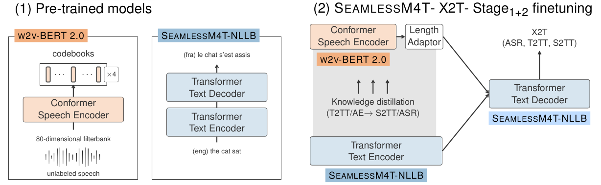
图Figure 5: Overview of the SeamlessM4T X2T model. (1) describes the main two building blocks: w2v-BERT 2.0 and SeamlessM4T-NLLB. (2) describes the training of the X2T model. In Stage1, the model is trained on X–eng directions and in Stage2, eng–X directions are added.
图 5：SeamlessM4T X2T 模型总览。(1) 介绍两个主要组成部分：w2v-BERT 2.0 与 SeamlessM4T-NLLB。(2) 介绍 X2T 模型的训练：第一阶段在 X–eng 方向上训练，第二阶段加入 eng–X 方向。
The core of our multitask UnitY framework is the X2T model, a multi-encoder sequenceto-sequence models with a Conformer-based encoder [Gulati et al., 2020] for speech input
（页码行：2。） 我们多任务 UnitY 框架的核心是 X2T 模型，一个多编码器序列到序列模型，语音输入使用基于 Conformer 的编码器 [Gulati et al., 2020]
29and another for Transformer-based encoder [Vaswani et al., 2017] for text input—both of which are joined with the same text decoder. Our X2T model is trained on S2TT data pairing speech audio in a source language with text in a target language.
（页码行：2。） 另一个是基于 Transformer 的编码器 [Vaswani et al., 2017] 用于文本输入——两者与同一个文本解码器相连。X2T 模型在 S2TT 数据上训练，这类数据把源语言语音音频与目标语言文本配对。
4.2.1 Preparing X2T data ASR primary S2TT X-eng mined S2TT X-eng Hours of source-side audio
（页码行：2。） 4.2.1 准备 X2T 数据 ASR 主要 S2TT X-eng 挖掘 S2TT X-eng 源侧音频小时数
10,000High-resource1,000Mid-resource500 100glg guj npi kat mkd yue som khm isl yor bos srp khk mlt pan heb ary afr swe kir mar bul hye lit ckb arz mal ory zlm mya zul asm ibo amh gle azj lvs tgk nya fra tel tgl cym fin ell ita hrv eus tam bel spa tha pbt est uzn hun lug ind por ben pol lao nor slv hin vie rus slk nld cat cmn deu jpn kor ron kan pes kaz swh dan ces eng tur jav ukr arb urd
（图 4.2.1：准备 X2T 数据——ASR primary S2TT 与 mined S2TT 的 X-eng 源侧音频小时数分布（100/500/1,000/10,000，高/中资源分档），覆盖数十语种。原始数据照录如下） 4.2.1 准备 X2T 数据 ASR 主要 S2TT X-eng 挖掘 S2TT X-eng 源侧音频小时数 10,000 高资源 1,000 中资源 500 100 glg guj npi kat mkd yue som khm isl yor bos srp khk mlt pan heb ary afr swe kir mar bul hye lit ckb arz mal ory zlm mya zul asm ibo amh gle azj lvs tgk nya fra tel tgl cym fin ell ita hrv eus tam bel spa tha pbt est uzn hun lug ind por ben pol lao nor slv hin vie rus slk nld cat cmn deu jpn kor ron kan pes kaz swh dan ces eng tur jav ukr arb urd
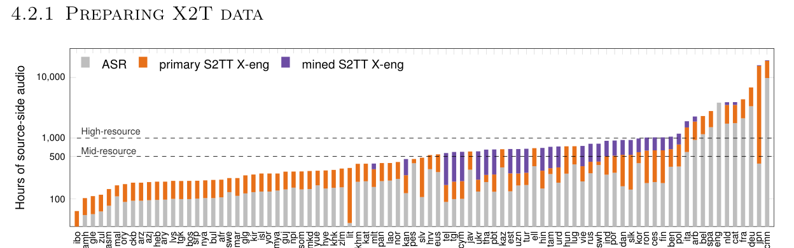
图Figure 6: Statistics of ASR and X–eng S2TT data used to train our SeamlessM4T model. We show the data size in hours of speech (log-scale) between ASR, S2TT primary and mined. Languages are sorted in ascending resource-level. For numerical statistics see Table 38
图 6：用于训练 SeamlessM4T 模型的 ASR 与 X–eng S2TT 数据统计。我们以语音小时数（对数刻度）展示 ASR、S2TT primary 与 mined 三类数据的数据量。语言按资源水平升序排列。数值统计见 Table 38。
处理人工标注数据Processing human-labeled data
When using human-labeled data, we removed special tokens such as <silence> and <no-speech> from the verbatim transcriptions. We additionally perform length filtering to remove examples exceeding a maximum text length of 100 sub-word tokens (based on the text tokenizer described below) and pairs with a skewed text-to-audio length ratio that exceeds 5 sub-words per second. Doing so improves the batching efficiency when training and eliminates pairs that are likely to be noisy or misaligned.
使用人工标注数据时，我们从逐字转写中移除了 <silence>、<no-speech> 等特殊 token。我们还执行长度过滤：移除文本超过最大长度 100 个子词 token（基于下文介绍的文本分词器）的样本，以及文本-音频长度比失衡、超过每秒 5 个子词的配对。这样做可以提升训练时的批处理效率，并剔除很可能有噪声或错位的配对。
伪标注Pseudo-labeling
As with any sequence-to-sequence task, S2TT performance is dependent on the availability of high-quality training data. However, the amount of human-labeled S2TT data is scarce in comparison to its T2TT or ASR counterparts. To address this shortage of labeled data, we resort to pseudo-labeling [Jia et al., 2019a; Pino et al., 2020] the ASR data with a multilingual T2TT model. In this case, we used NLLB-200-3.3B and generated pseudo-labels with the recommended decoding options from NLLB Team et al. [2022]. Hereafter, we refer to human-labeled and pseudo-labeled data as primary data.
与任何序列到序列任务一样，S2TT 性能取决于高质量训练数据的可得性。然而，相比 T2TT 或 ASR，人工标注的 S2TT 数据量十分稀缺。为解决标注数据短缺，我们诉诸伪标注（pseudo-labeling）[Jia et al., 2019a; Pino et al., 2020]：用一个多语言 T2TT 模型给 ASR 数据打伪标签。这里我们使用 NLLB-200-3.3B，并按 NLLB Team et al. [2022] 推荐的解码选项生成伪标签。下文把人工标注数据与伪标注数据合称为 primary（主用）数据。
平行数据挖掘Parallel data mining
Even with pseudo-labeled ASR data, the amount of S2TT data is insignificant compared to the scale of T2TT data. Consider for instance the English-Italian direction, one of the highly resourced pairs in T2TT with over 128M parallel sentences—only 2M pairs of English text paired with Italian audio are available for S2TT. Parallel data mining (see how SeamlessAlign was built in Section 3) is another strategy we draw upon to collect more training data. This kind of mining, however, tends to produce noisy alignments and requires some filtering. We use the top 400 hours of SeamlessAlign (see Section 3) in each of 33 X–eng directions and the top 200 hours in each of 29 eng–X directions based on Sonar alignment scores. This amounts to an additional 18.3K hours of speech audio. We show in Section 4.5.3 that these select amounts of mined data lead to a good trade-off between performance boosts and computational costs of training.
即便有了伪标注的 ASR 数据，S2TT 数据量相对 T2TT 数据的规模仍微不足道。以英语-意大利语方向为例——这是 T2TT 中资源最充足的语言对之一，平行句超过 128M 句——而 S2TT 可用的英语文本配意大利语音频只有 2M 对。平行数据挖掘（SeamlessAlign 的构建见第 3 节）是我们收集更多训练数据的另一条策略。不过，这类挖掘往往产出带噪声的对齐，需要一些过滤。我们按 Sonar 对齐分数，在 33 个 X–eng 方向上各取 SeamlessAlign（见第 3 节）的前 400 小时、在 29 个 eng–X 方向上各取前 200 小时。这相当于额外增加 18.3K 小时语音音频。我们在第 4.5.3 节展示，这样选取的挖掘数据量在性能提升与训练计算成本之间取得了良好折衷。
30过滤Filtering
We perform additional filtering on the combined pool of primary and mined data. Following NLLB Team et al. [2022], we implemented a toxicity filter. This removes pairs that have toxicity imbalance, (i.e., when the difference in the number of toxic items detected in the source and target is above a certain threshold). For S2TT data, transcriptions are used as a proxy for the speech input when counting toxic items. We set the imbalance threshold at 1. In addition, we also applied a length filter. We removed pairs in which the utterance is shorter than 0.1 seconds or longer than 50 seconds. We also removed pairs in which the text is longer than 250 sub-words (based on the tokenizer described below). Lastly, we removed pairs in which the text contains more than 20% of emojis, more than 50% of punctuations, or more than 50% of spaces.
我们对 primary 数据与挖掘数据合并后的数据池执行额外过滤。沿用 NLLB Team et al. [2022]，我们实现了毒性过滤器。它移除存在毒性失衡的配对（即源端与目标端检出的毒性词项数量之差超过某一阈值的情况）。对 S2TT 数据，统计毒性词项时用转写文本作为语音输入的代理。我们把失衡阈值设为 1。此外，我们还应用了长度过滤。移除话语短于 0.1 秒或长于 50 秒的配对。也移除文本长于 250 个子词（基于下文介绍的分词器）的配对。最后，移除文本中 emoji 占比超过 20%、标点超过 50% 或空格超过 50% 的配对。
Figure 6 shows the distribution of filtered X–eng S2TT data used to train SeamlessM4T models. Based on the total amount of speech audio hours in each language, we assessed its resource level: high-resource are languages with more than 1000 hours of supervision, mid-resource are those between 500 and 1000 hours, and low-resource are those with less than 500 hours.
Figure 6 展示了用于训练 SeamlessM4T 模型的、过滤后的 X–eng S2TT 数据分布。根据每种语言的语音音频总时长，我们评估其资源水平：监督数据超过 1000 小时的为高资源语言，500 到 1000 小时之间的为中资源，少于 500 小时的为低资源。
训练文本分词器Training a Text Tokenizer.
The tokenizer used in NLLB-200 [NLLB Team et al., 2022] is trained with SentencePiece [Kudo and Richardson, 2018] using the BPE algorithm [Gage, 1994; Sennrich et al., 2016]. These multilingual tokenizers, with their underlying vocabularies, are trained by sampling data from each language. Due to artifacts of sampling and the much larger number of unique symbols in logo-graphic writing systems, the result of this is that many key Chinese characters are missing from the original NLLB-200 vocabulary. To address this issue, we force the inclusion of these characters even in cases where they may not appear in the sampled SentencePiece training data. In order to decide which characters to include, we looked at the MTSU list11 and similar character frequency lists obtained from mined data in order to select the top 5000 Simplified Chinese characters, Traditional Chinese characters, and Japanese kanji characters. We then forced their inclusion, as long as they appeared at least 15 times in our training data to guarantee that the model would be able to learn how to embed these tokens.
NLLB-200 [NLLB Team et al., 2022] 使用的分词器以 SentencePiece [Kudo and Richardson, 2018] 训练，采用 BPE 算法 [Gage, 1994; Sennrich et al., 2016]。这类多语言分词器及其底层词表，是通过从每种语言采样数据来训练的。由于采样伪影、以及表意文字系统独有的字符数量大得多，其结果是原始 NLLB-200 词表缺失许多关键汉字。为解决这一问题，即便这些字可能不出现在采样的 SentencePiece 训练数据中，我们也强制将其纳入词表。为决定纳入哪些字符，我们参考了 MTSU 字频表11 以及从挖掘数据得到的类似字频表，从中选出前 5000 个简体汉字、繁体汉字和日语汉字。随后，只要这些字在我们的训练数据中出现至少 15 次，就强制纳入，以保证模型能够学会这些 token 的嵌入。
We re-trained a 256K-sized SentencePiece vocabulary on NLLB data [NLLB Team et al., 2022] for SeamlessM4T. The resulting tokenizer improves the coverage of the MTSU top 5K Chinese characters from 54% to 84%.
我们在 NLLB 数据 [NLLB Team et al., 2022] 上为 SeamlessM4T 重新训练了一个 256K 规模的 SentencePiece 词表。由此得到的分词器把 MTSU 前 5K 汉字的覆盖率从 54% 提升到 84%。
4.2.2 Training a Large-Scale Multilingual Text-to-Text Translation Model We follow the same data preparation and training pipelines from NLLB Team et al. [2022] using Stopes [Andrews et al., 2022]. Having a smaller language coverage (100 instead of NLLB’s 200 languages) allowed us to significantly decrease the size of the model. Whereas the full NLLB-200 model with mixture-of-experts is made up of 54.5B parameters (a number which can later be decreased via distillation), we opted for one of the smaller architectures proposed in NLLB Team et al. [2022], the 1.3B dense model. We limited the NLLB-200 training data to the 95 SeamlessM4T languages to be supported as target text. We additionally included over 75M bitexts from open-source T2TT datasets that were not included in NLLB Team et al. [2022]. These concern Modern Standard Arabic (arb), Mandarin Chinese (cmn), French (fra), Russian (rus), and Spanish (spa).
4.2.2 训练大规模多语言文本到文本翻译模型 我们沿用 NLLB Team et al. [2022] 的数据准备与训练管线，使用 Stopes [Andrews et al., 2022]。语言覆盖更小（100 种而非 NLLB 的 200 种），使我们得以大幅缩小模型规模。完整的 NLLB-200 混合专家（mixture-of-experts）模型由 54.5B 参数构成（这一数字之后可通过蒸馏减小），我们则选择了 NLLB Team et al. [2022] 提出的较小架构之一——1.3B 稠密模型。我们把 NLLB-200 训练数据限定在 SeamlessM4T 要支持作为目标文本的 95 种语言。我们还额外纳入了 NLLB Team et al. [2022] 未包含的开源 T2TT 数据集中的 75M 以上双语文本。这些涉及现代标准阿拉伯语（arb）、中文普通话（cmn）、法语（fra）、俄语（rus）和西班牙语（spa）。
11. https://lingua.mtsu.edu/chinese-computing/statistics/index.html
1. 11. https://lingua.mtsu.edu/chinese-computing/statistics/index.html
31T2TT (↑chrF++)
（页码行：2。）
模型Model
X–eng (n=95) eng–X (n=95) NLLB Team et al. [2022] - 3.3B
（页码行：2。） X–eng (n=95) eng–X (n=95) NLLB Team et al. [2022] - 3.3B
60.6 49.6- 1.3B59.3 48.2- 1.3B-distil.
1. - 1.3B-distil.
59.5 48.8SeamlessM4T-NLLB-1.3B60.7 49.6Table 12: Average Flores devtest chrF++over the 95 supported languages.
表 12：95 种受支持语言上 Flores devtest 的平均 chrF++。
| multitask | into | target | text | |
|---|---|---|---|---|
| In SeamlessM4T, we leveraged foundational models either pre-trained on unlabeled data | ||||
| encoder | pre-training) | or | trained | |
| T2TT) | to improve | the | quality | of |
| To fuse these pre-trained components and enable meaning transfer | ||||
| through multiple multimodal tasks, we trained an end-to-end model with (a) a speech encoder | ||||
| 2.0) postfixed with a length adapter, (b) text encoder (NLLB encoder), and | ||||
| M-adaptor [Zhao et al., 2022], where we replaced the 3 independent pooling modules for Q, | ||||
| K, and V with a shared pooling module to improve efficiency. | ||||
| The model is fine-tuned to jointly optimize the following objective functions: | ||||
| |y| | ||||
| LS2TT = − X log p(ytext |ytext , xspeech), | ||||
| t | <t | |||
| t=1 | ||||
| |y| | ||||
| LT2TT = − X log p(ytext |ytext , xtext), | ||||
| t | <t | |||
| t=1 | ||||
| the | source | text and | speech | in |
| is the target text in the target language <ℓt>. | ||||
| objective function in the form of token-level knowledge distillation (LKD), to further transfer | ||||
| knowledge from the strong MT model to the student speech translation task (S2TT). | ||||
| |y| | ||||
| LKD = X DKL | p(.|ytext , xtext) ∥p(.|ytext , xspeech) | |||
| <t | <t | |||
| t=1 |
We compare in Table 12 the performance of SeamlessM4T-NLLB to that of comparablysized NLLB models on Flores, averaging over our 95 languages when translating from English (eng–X) and into English (X–eng). The model outperforms both smaller models from NLLB-200 (1.3B and 1.3B-distil) and is on par with the larger 3.3B model.
我们在 Table 12 中比较了 SeamlessM4T-NLLB 与规模相当的 NLLB 模型在 Flores 上的表现，对我们支持的 95 种语言分别按译出英语（eng–X）与译入英语（X–eng）取平均。该模型优于 NLLB-200 中两个更小的模型（1.3B 与 1.3B-distil），并与更大的 3.3B 模型打平。
4.2.3 Multimodal & multitask into target text In SeamlessM4T, we leveraged foundational models either pre-trained on unlabeled data (w2v-BERT 2.0 for speech encoder pre-training) or trained on supervised high-resource tasks (NLLB model for T2TT) to improve the quality of transfer tasks (speech-to-text and speech-to-speech). To fuse these pre-trained components and enable meaning transfer through multiple multimodal tasks, we trained an end-to-end model with (a) a speech encoder (w2v-BERT 2.0) postfixed with a length adapter, (b) text encoder (NLLB encoder), and (c) a text decoder (NLLB decoder). For the length adaptor, we used a modified version of M-adaptor [Zhao et al., 2022], where we replaced the 3 independent pooling modules for Q, K, and V with a shared pooling module to improve efficiency.
4.2.3 多模态、多任务地译为目标文本 在 SeamlessM4T 中，我们利用了两类基础模型来提升迁移任务（语音到文本与语音到语音）的质量：一类是在未标注数据上预训练的（用于语音编码器预训练的 w2v-BERT 2.0），另一类是在高资源监督任务上训练的（用于 T2TT 的 NLLB 模型）。为融合这些预训练组件、并通过多个多模态任务实现语义迁移，我们训练了一个端到端模型，包含 (a) 语音编码器（w2v-BERT 2.0）后接一个长度适配器（length adapter）、(b) 文本编码器（NLLB 编码器）、(c) 文本解码器（NLLB 解码器）。长度适配器我们使用了 M-adaptor [Zhao et al., 2022] 的修改版：把 Q、K、V 各自的 3 个独立池化模块替换为一个共享池化模块以提升效率。
The model is fine-tuned to jointly optimize the following objective functions: t=1 log p(ytext t |ytext <t , xspeech),
模型微调时联合优化如下目标函数：Σ_{t=1} log p(ytext_t | ytext_<t, xspeech)，(3)
(3)(4)where xtext and xspeech are the source text and speech in the source language <ℓs> and ytext is the target text in the target language <ℓt>. We additionally optimize an auxiliary objective function in the form of token-level knowledge distillation (LKD), to further transfer knowledge from the strong MT model to the student speech translation task (S2TT). t=1 DKL p(.|ytext <t , xtext) ∥p(.|ytext <t , xspeech)
其中 xtext 和 xspeech 分别是源语言 <ℓs> 的源文本与源语音，ytext 是目标语言 <ℓt> 的目标文本。（页码行：2。） 我们还优化了一个辅助目标函数，形式为 token 级知识蒸馏（LKD），以进一步将强 MT 模型的知识迁移到学生语音翻译任务（S2TT）。t=1 DKL p(.|ytext <t , xtext) ∥p(.|ytext <t , xspeech)
.(5)The final loss is a weighted sum of all three losses: L = αLS2TT + βLT2TT + γLKD, where α, β, γ are scalar hyperparameters tuned on the development data. When the task does not
最终损失是三个损失的加权和：L = αLS2TT + βLT2TT + γLKD，其中 α、β、γ 是在开发数据上调出的标量超参数。当任务不符合数据三元组的设计时，我们用自编码替代翻译任务——例如在 ASR 上，ytext 被替换为 xtext，此时教师分布来自自编码（p(.|xtext_<t, xtext)）。（页码 32）
32fit the design of data triplets, we then replaced translation tasks with auto-encoding—for example, on ASR ytext is replaced by xtext in which case the teacher distribution is from auto-encoding (p(.|xtext <t , xtext)).
当任务不符合数据三元组的设计时，我们用自编码替代翻译任务——例如在 ASR 上，ytext 被替换为 xtext，此时教师分布来自自编码（p(.|xtext_<t, xtext)）。（页码 32）
We trained our X2T model in two stages. Stage1 targeted training on supervised English ASR and into English S2TT data. We find that this step is necessary not only for improving the quality of X–eng translations but also eng–X translations. In fact, we hypothesized that allowing the model to focus on one target language while fine-tuning multilingual speech representations shields it from the interference that can propagate back from the target side. In Stage2, we add supervised eng–X S2TT and non-English ASR data to the mix.
我们的 X2T 模型分两阶段训练。第一阶段（Stage1）针对有监督的英语 ASR 和译入英语的 S2TT 数据进行训练。我们发现，这一步不仅对提升 X–eng 翻译质量是必要的，对 eng–X 翻译同样必要。事实上，我们假设：让模型在微调多语言语音表征时专注于单一目标语言，可以使其免受从目标侧反向传播回来的干扰。在第二阶段（Stage2），我们把有监督的 eng–X S2TT 与非英语 ASR 数据加入混合。
4.3 语音到语音翻译Speech-to-Speech Translation
(1) Pre-trained models (eng) u10, u93, . . . u609 Transformer Unit Decoder S2ST Transformer Text-to-Unit Encoder HiFi-GAN Unit Vocoder Embeddings (eng) u10, u93, . . . u609 (eng) the cat sat T2U Vocoder Multitasking UNITY Length Adaptor Conformer Speech Encoder Transformer Text Encoder HiFi-GAN Unit Vocoder X2T (ASR, T2TT, S2TT) Vocoder Transformer Unit Decoder Transformer Text-to-Unit Encoder Transformer Text Decoder T2U Frozen X2T (2) SEAMLESSM4T- Stage3 finetuning
（图内容：(1) 预训练模型；(eng) u10, u93, … u609；Transformer 单元解码器；S2ST；Transformer 文本到单元编码器；HiFi-GAN 单元声码器；嵌入；(eng) u10, u93, … u609；(eng) the cat sat；T2U；声码器；多任务 UNITY；长度适配器；Conformer 语音编码器；Transformer 文本编码器；HiFi-GAN 单元声码器；X2T（ASR、T2TT、S2TT）；声码器；Transformer 单元解码器；Transformer 文本到单元编码器；Transformer 文本解码器；T2U；冻结的 X2T；(2) SEAMLESSM4T 第 3 阶段（Stage3）微调；页码 34。）
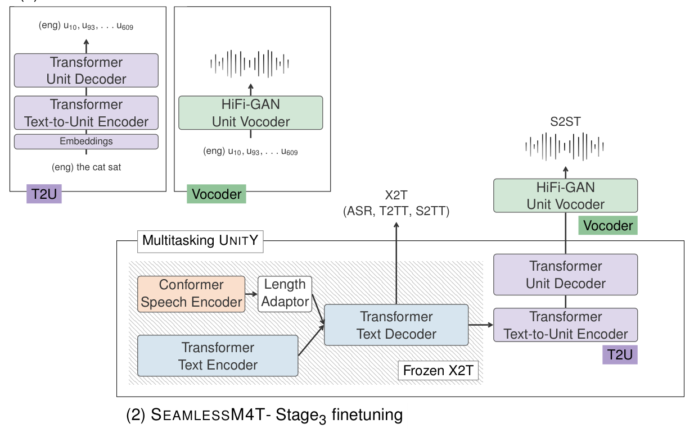
图Figure 7: Overview of the SeamlessM4T multitask UnitY model. (1) describes the additional two building blocks on top of X2T: T2U encoder-decoder and unit vocoder. (2) describes the training of the UnitY model. In Stage3, the model is trained on S2ST data.
图 7：SeamlessM4T 多任务 UnitY 模型总览。(1) 介绍 X2T 之上新增的两个组成部分：T2U 编码器-解码器与单元声码器。(2) 介绍 UnitY 模型的训练：第 3 阶段（Stage3）在 S2ST 数据上训练。
The key to our proposed speech-to-speech translation model is the use of self-supervised discrete acoustic units to represent target speech, thereby decomposing the S2ST problem into a speech-to-unit translation (S2UT) step and a unit-to-speech (U2S) conversion step. For S2UT, the SeamlessM4T model depicted in Figure 4 uses UnitY as a two-pass decoding framework which first generates text and subsequently predicts discrete acoustic units. Compared to the vanilla UnitY model [Inaguma et al., 2023], (1) the core S2TT model initialized from scratch is replaced with an X2T model pre-trained to jointly optimize T2TT,
我们所提语音到语音翻译模型的关键，是使用自监督离散声学单元来表征目标语音，从而把 S2ST 问题分解为语音到单元翻译（S2UT）步骤和单元到语音（U2S）转换步骤。对 S2UT，Figure 4 所示的 SeamlessM4T 模型把 UnitY 用作两段式解码框架：先生成文本，再预测离散声学单元。（页码行：2。） 与原始 UnitY 模型 [Inaguma et al., 2023] 相比，(1) 从头初始化的核心 S2TT 模型被替换为预训练以联合优化 T2TT 的 X2T 模型，
33S2TT, and ASR, (2) the shallow T2U model (referred to as T2U unit encoder and second-pass unit decoder in Inaguma et al. [2023]) is replaced with a deeper Transformer-based encoderdecoder model with 6 transformer layers, (3) the T2U model is also pre-trained on the T2U task rather than trained from scratch. The pre-training of X2T yields a stronger speech encoder and a higher quality first-pass text decoder, while the scaling and pre-training of the T2U model allowed us to better handle multilingual unit generation without interference.
（页码行：2。） S2TT 和 ASR，(2) 浅层 T2U 模型（在 Inaguma et al. [2023] 中称为 T2U 单元编码器和第二遍单元解码器）被替换为更深的基于 Transformer 的编码器-解码器模型（含 6 个 transformer 层），(3) T2U 模型也在 T2U 任务上预训练而非从头训练。X2T 的预训练带来了更强的语音编码器和更高质量的第一遍文本解码器；而 T2U 模型的扩大与预训练使我们能更好地处理多语言单元生成而不受干扰。
4.3.1 Preparing S2ST data
4.3.1 准备 S2ST 数据
离散声学单元Discrete acoustic units
Recent works have achieved SOTA translation performance by using self-supervised discrete acoustic units as targets for building direct speech translation models [Tjandra et al., 2019; Lee et al., 2022a,b; Zhang et al., 2022; Chen et al., 2023c]. We extracted features from the 35th layer of XLS-R-1B [Babu et al., 2022] for continuous speech representations at a 50Hz frame rate. The mapping from XLS-R continuous representation space to discrete categories is required to map target speech into a sequence of discrete tokens. We randomly selected and encoded 10K unlabeled audio samples from each language of the 35 supported target languages. We then applied a k-means algorithm on these representations to estimate K cluster centroids [Lakhotia et al., 2021; Polyak et al., 2021; Lee et al., 2022a]. These centroids resemble a codebook that is used to map a sequence of XLS-R speech representations into a sequence of centroid indices or acoustic units. Experiments with different numbers of centroids (K ∈{1000, 2000, 5000, 10000}) show that K=10000 with features from the 35th layer of XLS-R-1B achieves the best speech re-synthesis WER [Polyak et al., 2021].
近期工作通过使用自监督离散声学单元作为构建直接语音翻译模型的目标，取得了 SOTA 翻译性能 [Tjandra et al., 2019; Lee et al., 2022a,b; Zhang et al., 2022; Chen et al., 2023c]。我们从 XLS-R-1B [Babu et al., 2022] 的第 35 层提取特征，作为 50Hz 帧率的连续语音表征。要把目标语音映射为离散 token 序列，就需要一个从 XLS-R 连续表征空间到离散类别的映射。我们从 35 种受支持目标语言的每一种中随机选取并编码了 10K 条未标注音频样本。然后在这些表征上应用 k-means 算法，估计 K 个簇中心（centroid）[Lakhotia et al., 2021; Polyak et al., 2021; Lee et al., 2022a]。这些簇中心类似于一个码本，用于把 XLS-R 语音表征序列映射为簇中心索引序列，即声学单元。对不同簇中心数量（K ∈ {1000, 2000, 5000, 10000}）的实验表明：K=10000 且使用 XLS-R-1B 第 35 层特征时，语音重合成 WER 最优 [Polyak et al., 2021]。
XLS-R has a broader language coverage than existing HuBERT [Hsu et al., 2021] models, and we found it provided similar speech re-synthesis performance to HuBERT on overlapping languages. We also experimented with w2v-BERT 2.0, which showed inferior performance. This can be attributed to w2v-BERT training with contrastive and MLM objectives, encouraging the model to only learn about semantic tokens rather than acoustic ones.
XLS-R 的语言覆盖比现有 HuBERT [Hsu et al., 2021] 模型更广，且我们发现在重叠语言上它与 HuBERT 的语音重合成性能相近。我们也试验了 w2v-BERT 2.0，但其表现更差。这可归因于 w2v-BERT 的训练目标是对比学习与 MLM——它们鼓励模型只学习语义性 token，而非声学性 token。
用 HiFi-GAN 合成多语言单元Synthesizing multilingual units with HiFi-GAN
Following Gong et al. [2023], we built the multilingual vocoder for speech synthesis from the learned units. The HiFi-GAN vocoder [Kong et al., 2020] is equipped with language embedding to model the languagespecific acoustic information. Moreover, to mitigate cross-lingual interference, language identification is used as an auxiliary loss in multilingual training. We used a combination of commissioned and publicly available datasets, including single-speaker and multi-speaker TTS datasets, to train the multilingual vocoder on 36 target languages capable of converting the discrete units predicted by our S2UT model into waveforms. Compared to monolingual vocoders, we increased the model capacity by doubling the embedding dimension for both the duration predictor and the speech-language identification (LID) classifier to reach 1280.
沿用 Gong et al. [2023]，我们构建了从学到的单元合成语音的多语言声码器。HiFi-GAN 声码器 [Kong et al., 2020] 配有语言嵌入，用于建模特定语言的声学信息。此外，为缓解跨语言干扰，多语言训练中以语种识别作为辅助损失。我们结合委托录制与公开可得的数据集（包括单说话人与多说话人 TTS 数据集），在 36 种目标语言上训练多语言声码器，使之能把 S2UT 模型预测的离散单元转换为波形。与单语言声码器相比，我们加大了模型容量：把时长预测器与语音语种识别（LID）分类器的嵌入维度都加倍到 1280。
用文本到单元（T2U）做伪标注Pseudo-labeling with text-to-unit
The insufficient amount of parallel speech-to-speech training data significantly limits the training of high-quality S2UT models. To overcome this data scarcity, it is common practice to use TTS models to convert text from speech-to-text datasets (see Section 4.2.1) into synthetic speech [Jia et al., 2019b; Lee et al., 2022a]. This synthetic speech is in turn converted into units using the previously described unit extraction pipeline. This two-step unit extraction process is a slow process and is harder to scale
平行语音到语音训练数据的不足，严重限制了高质量 S2UT 模型的训练。为克服数据稀缺，常见做法是用 TTS 模型把语音到文本数据集（见第 4.2.1 节）中的文本转换为合成语音 [Jia et al., 2019b; Lee et al., 2022a]。这些合成语音再经前面介绍的单元提取管线转换为单元。这种两步单元抽取流程很慢、难以规模化。（图 34：X-eng 与 eng-X 方向源侧音频小时数分布（0/2,000/4,000），primary S2ST 与 mined S2ST 对比，涵盖 ckb、arz、lin、gle、ltz、isl、yor、mal、mar、zlm、hau、ory、azj、ary、bos、srp、pbt、kir、mya、zul、lvs、heb、tgk、nya、npi、kat、ibo、glg、asm、guj、yue、mkd、som、amh、xho、khk、afr、swe、wol、hye、bul、tha、pes、ben、swh、uzn、swe、ukr、mlt、tel、tgl、fin、ind、slk、cat、hin、cym、nor、lit、urd、arb、mlt、fin、kor、tam、ces、por、ron、fra、tgl、ell、lug、pes、ita、cmn、tel、tur、hrv、eus、pol、lao、bel、slk、ben、cat、hin、est、tha、ind、nld、spa、kan、cym、slv、vie、jpn、khm、pan、swh、uzn、hun、dan、kaz、rus、deu、jav、ukr、kor、ces、dan、rus、spa、deu、tur、ron、por、fra、urd、arb、ita、est、pol、nld、jpn、vie、cmn 等语种。）
34Hours of source-side audio (X-eng) primary S2ST mined S2ST
（页码行：2。）
4,000 2,000 0ckb arz lin gle ltz isl yor mal mar zlm hau ory azj ary bos srp pbt kir mya zul lvs heb tgk nya npi kat ibo glg asm guj yue mkd som amh xho khk afr swe wol hye bul Hours of source-side audio (eng-X)
这种两步单元抽取流程很慢、难以规模化。（图 34：X-eng 与 eng-X 方向源侧音频小时数分布（0/2,000/4,000），primary S2ST 与 mined S2ST 对比，涵盖 ckb、arz、lin、gle、ltz、isl、yor、mal、mar、zlm、hau、ory、azj、ary、bos、srp、pbt、kir、mya、zul、lvs、heb、tgk、nya、npi、kat、ibo、glg、asm、guj、yue、mkd、som、amh、xho、khk、afr、swe、wol、hye、bul、tha、pes、ben、swh、uzn、swe、ukr、mlt、tel、tgl、fin、ind、slk、cat、hin、cym、nor、lit、urd、arb、mlt、fin、kor、tam、ces、por、ron、fra、tgl、ell、lug、pes、ita、cmn、tel、tur、hrv、eus、pol、lao、bel、slk、ben、cat、hin、est、tha、ind、nld、spa、kan、cym、slv、vie、jpn、khm、pan、swh、uzn、hun、dan、kaz、rus、deu、jav、ukr、kor、ces、dan、rus、spa、deu、tur、ron、por、fra、urd、arb、ita、est、pol、nld、jpn、vie、cmn 等语种。）
4,000 2,000 0tha pes ben swh uzn swe ukr mlt tel tgl fin ind slk cat hin cym nor lit urd arb mlt fin kor tam ces por ron fra tgl ell lug pes ita cmn tel tur hrv eus pol lao bel slk ben cat hin est tha ind nld spa kan cym slv vie jpn khm pan swh uzn hun dan kaz rus deu jav ukr kor ces dan rus spa deu tur ron por fra urd arb ita est pol nld jpn vie cmn
这种两步单元抽取流程很慢、难以规模化。（图 34：X-eng 与 eng-X 方向源侧音频小时数分布（0/2,000/4,000），primary S2ST 与 mined S2ST 对比，涵盖 ckb、arz、lin、gle、ltz、isl、yor、mal、mar、zlm、hau、ory、azj、ary、bos、srp、pbt、kir、mya、zul、lvs、heb、tgk、nya、npi、kat、ibo、glg、asm、guj、yue、mkd、som、amh、xho、khk、afr、swe、wol、hye、bul、tha、pes、ben、swh、uzn、swe、ukr、mlt、tel、tgl、fin、ind、slk、cat、hin、cym、nor、lit、urd、arb、mlt、fin、kor、tam、ces、por、ron、fra、tgl、ell、lug、pes、ita、cmn、tel、tur、hrv、eus、pol、lao、bel、slk、ben、cat、hin、est、tha、ind、nld、spa、kan、cym、slv、vie、jpn、khm、pan、swh、uzn、hun、dan、kaz、rus、deu、jav、ukr、kor、ces、dan、rus、spa、deu、tur、ron、por、fra、urd、arb、ita、est、pol、nld、jpn、vie、cmn 等语种。）
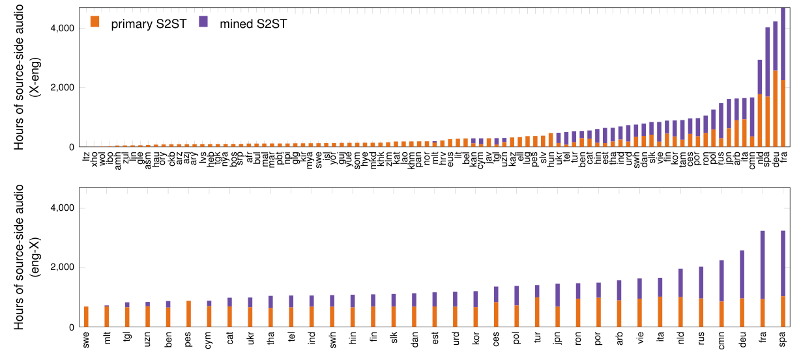
图Figure 8: Statistics of S2ST data used in Stage3 of training SeamlessM4T model. We show the data size in hours of speech between primary and mined. Languages are sorted in ascending resource-level. For numerical statistics see Table 39
图 8：训练 SeamlessM4T 模型第 3 阶段（Stage3）所用 S2ST 数据统计。我们以语音小时数展示 primary 与 mined 两类数据的数据量。语言按资源水平升序排列。数值统计见 Table 39。
given the dependencies on TTS models. High-quality off-the-shelf TTS models are hard to come by for all languages, especially for low-resource ones. Training reliable monolingual or multilingual in-house TTS models is also not scalable given the challenges around gathering high-quality clean speech data. To overcome these challenges, we circumvented the need for synthesizing speech and trained multilingual text-to-unit (T2U) models on all the 36 target speech languages. These models can directly convert the text into target discrete units and can be trained on ASR datasets that are readily available. The multilingual training benefits from cross-lingual transfer between high-resource and low-resource languages, thereby also improving the quality of the pseudo-labeled data. To remove outlier samples from our paired data, we filtered based on the number of seconds of audio generated per text token length ratio, discarding any pair with a ratio exceeding 0.5.
因为要依赖 TTS 模型。高质量的现成 TTS 模型很难在所有语言上获得，低资源语言尤其如此。自训可靠的单语言或多语言 TTS 模型也不具扩展性，因为收集高质量干净语音数据本身就很困难。为克服这些挑战，我们绕开了合成语音这一步：在全部 36 种目标语音语言上训练多语言文本到单元（text-to-unit, T2U）模型。这些模型可以直接把文本转换为目标离散单元，且可以在现成可得的 ASR 数据集上训练。多语言训练得益于高资源与低资源语言之间的跨语言迁移，因此也提升了伪标注数据的质量。为剔除配对数据中的离群样本，我们按「每个文本 token 生成的音频秒数」这一比率进行过滤，丢弃比率超过 0.5 的任何配对。
平行数据挖掘：SeamlessAlignParallel data mining: SeamlessAlign
We added up to 2,500 hours of mined speechto-speech data from SeamlessAlign per language direction depending on its availability (see Section 3) . We used the XLSR-based unit extraction pipeline for extracting discrete acoustic units for target speech from the mined data. An in-house ASR model is then deployed to generate text transcriptions for the first pass decoder based on the target speech.
视可得性而定，我们为每个语言方向从 SeamlessAlign 加入最多 2,500 小时的挖掘语音到语音数据（见第 3 节）。我们使用基于 XLSR 的单元提取管线，从挖掘数据中提取目标语音的离散声学单元。随后部署一个自研 ASR 模型，基于目标语音为第一遍解码器生成文本转写。
Figure 8 shows the distribution of all S2ST data used to train SeamlessM4T models between the primary and mined data.
Figure 8 展示了训练 SeamlessM4T 模型所用全部 S2ST 数据在 primary 与 mined 数据之间的分布。
4.3.2 T2U modeling The T2U model is a Transformer-based encoder-decoder model trained on aligned text units from ASR data. We trained T2U models for two purposes: (1) performing pseudo-labeling (Section 4.3.1) and (2) initializing the T2U component in UnitY. For (1), we trained a model with 12 encoder and 12 decoder layers. For (2), we trained a smaller T2U model with 6 encoder and 6 decoder layers. Initial experiments showed that, although the smaller T2U
4.3.2 T2U 建模 T2U 模型是一个基于 Transformer 的编码器-解码器模型，在来自 ASR 数据的对齐文本-单元上训练。我们训练 T2U 模型有两个目的：(1) 执行伪标注（第 4.3.1 节）；(2) 初始化 UnitY 中的 T2U 组件。对 (1)，我们训练了 12 层编码器、12 层解码器的模型。对 (2)，我们训练了更小的 6 层编码器、6 层解码器的 T2U 模型。（页码行：2。）
35model is of a lower quality than the larger one, fine-tuning the smaller T2U in UnitY with labels from the larger one (i.e., distilling knowledge from the stronger T2U) can bridge the gap while being parameter-efficient.
（页码行：2。）
4.4 SeamlessM4T 模型The SeamlessM4T Models
Table 13: #parameters of the building components used in SeamlessM4T models. *: includes the parameters of the length adaptor .
表 13：SeamlessM4T 模型所用各组成组件的参数量。*：含长度适配器的参数。
| 4.3.3 | Stage3 | Finetuning | for | ||
| In the | last | initialized the | (see | ||
| with (1) the pre-trained X2T model and (2) the pre-trained T2U model and fine-tuned on a | |||||
| combination of X–eng and eng–X S2ST translation data totaling 121K hours (see breakdown | |||||
| in figure 8). | |||||
| the T2U component. | |||||
| 4.4 | The | Models | |||
| With all the components laid out in the previous sections, we trained the SeamlessM4T- | |||||
| Large model in the outlined three stages. | |||||
| is fine-tuned on T2TT for 95 languages paired with English, on ASR for 96 languages, on | |||||
| S2TT for 89 languages paired with English, and on S2ST for 95 directions into English and | |||||
| in tables 38 and 39. | |||||
| zero-shot to reach the coverage described in table 2 of 100-eng. | |||||
| To provide a reasonably sized model, we followed the same recipe to train SeamlessM4T- | |||||
| Medium. | |||||
| to be | an | test | to | fine-tune, | |
| SeamlessM4T-Medium has the same coverage as SeamlessM4T-Large but builds on | |||||
| smaller and more parameter-efficient components (see Figure 4). | We pre-trained a smaller | ||||
| w2v-BERT | |||||
| [2022] (NLLB-600M-Distilled) to initialize the T2TT modules of the multitask UnitY. | |||||
| See a comparison between SeamlessM4T-Large and SeamlessM4T-Medium in Table 13. | |||||
| w2v-BERT | Total | ||||
| SeamlessM4T-Large | 669M | 2326M | |||
| SeamlessM4T-Medium | 366M | 1151M |
We evaluated our models on all four supervised tasks (T2TT, ASR, S2TT, and S2ST) as well as the zero-shot task of text-to-speech translation (T2ST, also referred to as cross-lingual text to speech synthesis [Zhang et al., 2023b]). To generate text hypotheses, we decoded with beam-search (width=5). We scored with chrF++for T2TT and SacreBLEU for S2TT (default 13a tokenizer and character-level tokenizer for Mandarin Chinese (cmn), Japanese (jpn), Thai (tha), Lao (lao), and Burmese (mya); see signatures in Table 4). For ASR, we scored with WER on normalized transcriptions and references following Radford et al. [2022].
我们在全部四个有监督任务（T2TT、ASR、S2TT、S2ST）以及零样本文本到语音翻译任务（T2ST，亦称跨语言文本到语音合成 [Zhang et al., 2023b]）上评测模型。生成文本假设时使用束搜索（宽度=5）解码。T2TT 以 chrF++ 计分，S2TT 以 SacreBLEU 计分（默认 13a 分词器；中文普通话（cmn）、日语（jpn）、泰语（tha）、老挝语（lao）、缅甸语（mya）用字符级分词器；签名见 Table 4）。ASR 按 Radford et al. [2022] 的做法，在归一化的转写与参考上以 WER 计分。
36During S2ST and T2ST inference, we performed two-pass beam-search decoding— the best hypothesis out of the first-pass decoding is embedded with the text decoder and is sent to T2U to search for the best unit sequence hypothesis. We use a beam-width of 5 for both searches. We evaluated S2ST and T2ST accuracy with ASR-BLEU [Lee et al., 2022a] with Whisper-Large-v2 as the underlying ASR model for eng–X directions and with Whisper-Medium for X–eng directions. We set the decoding temperature of Whisper at zero and used greedy decoding to ensure a deterministic behavior of the ASR model. The transcribed hypotheses, as well as the references, are normalized following Radford et al. [2022] before computing BLEU scores in the same manner we did for S2TT.
（页码行：2。）两趟搜索的束宽均为 5。S2ST 与 T2ST 准确率以 ASR-BLEU [Lee et al., 2022a] 评测：eng–X 方向的底层 ASR 模型用 Whisper-Large-v2，X–eng 方向用 Whisper-Medium。我们把 Whisper 的解码温度设为零并使用贪心解码，以保证 ASR 模型行为的确定性。转写假设与参考均按 Radford et al. [2022] 归一化后，再以与 S2TT 相同的方式计算 BLEU 分数。
4.4.1 Comparison to cascaded approaches.
4.4.1 与级联方案的比较。
On the set of languages supported by both SeamlessM4T and Whisper, we compare in Table 14 the performance of our direct S2TT model to that of cascaded models, namely combinations of Whisper ASR models and NLLB T2TT models. SeamlessM4T-Large surpasses the cascaded models with less than 3B of parameters in X–eng directions by 2 BLEU points and in eng–X directions by 0.5 BLEU points. We also add to the comparison in Table 14 cascaded models with the large NLLB-3.3B T2TT model.
在 SeamlessM4T 与 Whisper 同时支持的语言集合上，我们在 Table 14 中把我们的直接 S2TT 模型与级联模型（Whisper ASR 模型与 NLLB T2TT 模型的组合）做了比较。SeamlessM4T-Large 在 X–eng 方向上以 2 个 BLEU 点、在 eng–X 方向上以 0.5 个 BLEU 点，超过参数不足 3B 的级联模型。我们还在 Table 14 的比较中加入了使用大型 NLLB-3.3B T2TT 模型的级联模型。
These models exceed 4B parameters and only outperform SeamlessM4T-Large in eng–X directions. SeamlessM4T-Large improves on Whisper-Large-v2 +NLLB-3.3B by 1.3 BLEU points on average in X–eng directions.
这些模型参数超过 4B，且只在 eng–X 方向上胜过 SeamlessM4T-Large。在 X–eng 方向上，SeamlessM4T-Large 比 Whisper-Large-v2 + NLLB-3.3B 平均高出 1.3 个 BLEU 点。
Table 15 compares S2ST between SeamlessM4T-Large and cascaded models. For S2ST, we look at two options for cascading: (1) 3-stage with ASR, T2TT, and TTS and (2) 2-stage with S2TT and TTS. Our SeamlessM4T-Large outperforms 2-stage cascaded models on Fleurs X–eng directions by 9 ASR-BLEU points. It also outperforms stronger 3-stage cascaded models (Whisper-Large-v2 + NLLB-3.3B + YourTTS) by 2.6 ASR- BLEU points. On CVSS, SeamlessM4T-Large outperforms the 2-stage cascaded model (Whisper-Large-v2 + YourTTS) by a large margin of 14 ASR-BLEU points. On Fleurs eng–X directions, SeamlessM4T-Large has an average ASR-BLEU of 21.5 on 32 X–eng directions excluding target languages where Whisper-Large-v2 (the ASR model used for ASR-BLEU) has a WER higher than 100. Comparably, the medium-size model (SeamlessM4T-Medium) scores an average ASR-BLEU of 15.4 on S2ST eng–X directions.
Table 15 比较了 SeamlessM4T-Large 与级联模型的 S2ST。对 S2ST，我们考察两种级联方式：(1) ASR、T2TT、TTS 的 3 段级联；(2) S2TT、TTS 的 2 段级联。在 Fleurs X–eng 方向上，我们的 SeamlessM4T-Large 以 9 个 ASR-BLEU 点超过 2 段级联模型。它还以 2.6 个 ASR-BLEU 点超过更强的 3 段级联模型（Whisper-Large-v2 + NLLB-3.3B + YourTTS）。在 CVSS 上，SeamlessM4T-Large 以 14 个 ASR-BLEU 点的大幅优势超过两段级联模型（Whisper-Large-v2 + YourTTS）。在 Fleurs eng–X 方向上，SeamlessM4T-Large 在 32 个 X–eng 方向上的平均 ASR-BLEU 为 21.5（已排除 Whisper-Large-v2——即 ASR-BLEU 所用 ASR 模型——WER 高于 100 的目标语言）。作为对照，中型模型（SeamlessM4T-Medium）在 S2ST eng–X 方向上的平均 ASR-BLEU 为 15.4。
4.4.2 Multitasking X2T results.
4.4.2 多任务 X2T 结果。
We report in Table 16 results on the Fleurs benchmark for the tasks of ASR and S2TT (X–eng and eng–X), and the related Flores benchmark for T2TT (X–eng and eng–X). We also report results on the evaluation test set of CoVoST 2 (X–eng and eng–X) The SeamlessM4T model outperforms the previous direct SOTA model (AudioPaLM-2 8B AST [Rubenstein et al., 2023]) by 4.2 BLEU points in S2TTX–eng directions (i.e., an improvement of 20%). In CoVoST 2 eng–X, SeamlessM4T-Large improves upon the previous SOTA (XLS-R) by 2.8 BLEU points. However, in X–eng, it lags behind AudioPaLM by 3.7 BLEU points. For ASR, SeamlessM4T outperforms Whisper [Radford et al., 2022] 12. Scoring Whisper-Large-v2, using https://github.com/openai/whisper with the recommended decoding options, results in BLEU scores lower by 0.3 BLEU points on average than what is reported in Radford et al. [2022].
我们在 Table 16 中报告了 Fleurs 基准上的 ASR 与 S2TT（X–eng 与 eng–X）结果，以及相关 Flores 基准上的 T2TT（X–eng 与 eng–X）结果。我们还报告了 CoVoST 2（X–eng 与 eng–X）评测测试集上的结果。SeamlessM4T 模型在 S2TT X–eng 方向上比此前最强的直接模型（AudioPaLM-2 8B AST [Rubenstein et al., 2023]）高出 4.2 个 BLEU 点（即提升 20%）。在 CoVoST 2 eng–X 方向上，SeamlessM4T-Large 比此前 SOTA（XLS-R）提升 2.8 个 BLEU 点。然而在 X–eng 方向上，它落后 AudioPaLM 3.7 个 BLEU 点。在 ASR 上，SeamlessM4T 优于 Whisper [Radford et al., 2022] 12。用 https://github.com/openai/whisper 及其推荐解码选项为 Whisper-Large-v2 计分，所得 BLEU 分数比 Radford et al. [2022] 报告的平均低 0.3 个 BLEU 点。
37S2TT (↑BLEU)
（页码行：2。）
模型Model
Table 14: Comparison against cascaded ASR +T2TT models on Fleurs S2TT.
表 14：在 Fleurs S2TT 上与级联 ASR + T2TT 模型的对比。
| type | size | ||||
|---|---|---|---|---|---|
| (n=81) | (n=88) | ||||
| Whisper-Medium (ASR) | + NLLB-1.3B | 2B | 19.7 | 20.5 | |
| Whisper-Medium (ASR) | + NLLB-3.3B | 4B | 20.4 | 21.8 | |
| Whisper-Large-v2 | NLLB-1.3B | cascaded | |||
| 2.8B | 22.0 | 21.0 | |||
| 4.8B | 22.7 | 22.2 | |||
| Whisper-Large-v2 | 1.5B | 17.9 | - | ||
| direct | |||||
| AudioPaLM-2-8B-AST | 8B | 19.7 | - | ||
| SeamlessM4T-Medium | 1B | 20.9 | 19.2 | ||
| SeamlessM4T-Large | direct | ||||
| 2B | 24.0 | 21.5 |
S2ST X–engS2ST X–eng
(↑ASR-BLEU)
（↑ASR-BLEU）
模型Model
type size Fleurs (n=81) CVSS (n=21) YourTTS [Casanova et al., 2022] +Whisper-Large-v2 (S2TT) 2-stage cascaded 1.6B
（页码行：2。） 类型 规模 Fleurs (n=81) CVSS (n=21) YourTTS [Casanova et al., 2022] +Whisper-Large-v2 (S2TT) 2 阶段级联 1.6B
17.3 22.6+Whisper-Medium (ASR) + NLLB-1.3B 3-stage cascaded 2.1B19.9+Whisper-Medium (ASR) + NLLB-3.3B 4.1B20.6+Whisper-Large-v2 (ASR)+ NLLB-1.3B 2.9B22.1+Whisper-Large-v2 (ASR)+ NLLB-3.3B 4.9B23.2SeamlessM4T-Medium unified 1.2B20.4 28.1SeamlessM4T-Large unified 2.3B25.8 36.5Table 15: Comparison against 2/3-stage cascaded models on Fleurs and CVSS S2ST X–eng.
表 15：在 Fleurs 与 CVSS S2ST X–eng 上与 2 段/3 段（2/3-stage）级联模型的对比。
| that | both | MMS | and | Whisper | support. | SeamlessM4T-Large | outperforms | the | MMS | ||||||||||
|---|---|---|---|---|---|---|---|---|---|---|---|---|---|---|---|---|---|---|---|
| that leverage monolingual n-gram language models (5% WER better). | |||||||||||||||||||
| 1 | chrF++point. | To | further | understand | where | the | improvements | in | Fleurs | S2TT | X–eng | ||||||||
| directions | are | coming | from, | we | bucket | languages | by | resource-level | (see | the | exact | list | of | ||||||
| languages | in | Table | 38) | and | report | average | BLEU | scores | per | resource-level | in | Table | 17. | ||||||
| The results show that SeamlessM4T-Large strongly improves the quality of translating | |||||||||||||||||||
| from low-resourced languages with an improvement of +7.4 BLEU (i.e., 40% improvement | |||||||||||||||||||
| over AudioPaLM-2-8B-AST). We also average in column low† | over low-resource directions | ||||||||||||||||||
| that | are | supervised | in | AudioPaLM-2-8B-AST—the | gain | of +5 | BLEU | in | that | subset | of | ||||||||
| 38 |
on the overlapping 77 supported languages with a WER reduction of 45%. We additionally compared against MMS [Pratap et al., 2023] on Fleurs-54, a subset of Fleurs languages that both MMS and Whisper support.
在两者重叠支持的 77 种语言上，WER 相对降低 45%。我们还在 Fleurs-54（MMS 与 Whisper 都支持的 Fleurs 语言子集）上与 MMS [Pratap et al., 2023] 做了额外对比。
SeamlessM4T-Large outperforms the MMS variants evaluated with CTC by more than 6% WER, but it is surpassed by the variants that leverage monolingual n-gram language models (5% WER better).
SeamlessM4T-Large 比以 CTC 评测的 MMS 变体低超过 6% 的 WER，但被利用单语 n-gram 语言模型的变体反超（后者 WER 好 5%）。
模型Model
size S2TT (↑BLEU) Fleurs eng–X (n=88) CoVoST 2 X–eng (n=21) CoVoST 2 eng–X (n=15) XLS-R-2B-S2T 2.6B x
（页码行：2。） 规模 S2TT (↑BLEU) Fleurs eng–X (n=88) CoVoST 2 X–eng (n=21) CoVoST 2 eng–X (n=15) XLS-R-2B-S2T 2.6B x
22.1 27.817.929.1x AudioPaLM-2-8B-AST 8.0B19.737.820.9 19.2 29.8 26.624.0 21.5 34.1 30.6ASR (↓WER) T2TT (↑chrF++)
（页码行：2。）
模型Model
Table 16: Multitasking X2T results. Performance of SeamlessM4T-Large on X2T tasks (S2TT, ASR and T2TT) compared to SOTA direct translation models. For Fleurs S2TT X–eng, we report the average BLEU scores over languages Whisper supports. For Fleurs ASR, we report the average normalized WER over languages supported by both SeamlessM4T and Whisper. For MT, we average chrF++ scores over the supported written languages in SeamlessM4T. *: MMS is CTC-based, and this version decodes with an n-gram language model for each language. Note that for all external models included in this comparison, we lifted the results reported in their respective papers and matched their evaluation and scoring pipeline for a fair comparison.12
表 16：多任务 X2T 结果。SeamlessM4T-Large 在 X2T 任务（S2TT、ASR、T2TT）上与 SOTA 直接翻译模型的性能对比。Fleurs S2TT X–eng 报告 Whisper 所支持语言上的平均 BLEU；Fleurs ASR 报告 SeamlessM4T 与 Whisper 共同支持语言上的平均归一化 WER；MT 在 SeamlessM4T 支持的书面语言上平均 chrF++。*：MMS 基于 CTC，该版本为每种语言用 n-gram 语言模型解码。注意：对本比较中的所有外部模型，我们直接引用其各自论文报告的结果，并匹配其评测与计分管线以保证公平。12
| size (n=77) | (n=54) | ||||||||
|---|---|---|---|---|---|---|---|---|---|
| (n=95) (n=95) | |||||||||
| NLLB-3.3B | 3.3B | x | x | 60.7 | 49.6 | ||||
| Whisper-Large-v2 | 1.5B | 41.7 | 43.7 | x | x | ||||
| MMS-L61-noLM-LSAH | 1.0B | x | 31.0 | x | x | ||||
| MMS-L1107-CCLM-LSAH 1.0B∗ | x | 18.7 | x | x | |||||
| SeamlessM4T-Medium | 1.2B | 21.9 | 22.0 | 55.4 | 48.4 | ||||
| SeamlessM4T-Large | 2.3B | 23.1 | 23.7 | 60.8 | 50.9 |
Fleurs S2TT X–eng (↑BLEU)
Fleurs S2TT X–eng（↑BLEU）
模型Model
Table 17: Fleurs S2TT X–eng by resource-level. In each resource-level (high, medium and low), we average over languages that are covered by all 3 models. In low†, we exclude low-resource languages that are evaluated as zero-shot by AudioPaLM-2-8B-AST.
表 17：按资源水平划分的 Fleurs S2TT X–eng。在每个资源水平（高、中、低）内，对全部被 3 个模型覆盖的语言取平均。low† 中排除了被 AudioPaLM-2-8B-AST 以零样本评测的低资源语言。
| (n=15) | (n=25) | (n=34) (n=23) | |||
|---|---|---|---|---|---|
| Whisper-Large-v2 | 24.2 | 19.4 | 16.1 | 18.1 | |
| AudioPaLM-2-8B-AST | 27.9 | 20.9 | 18.0 | 22.0 | |
| SeamlessM4T-Medium | 23.9 | 21.8 | 22.2 | 23.5 | |
| SeamlessM4T-Large | 26.9 | 25.2 | 25.4 | 27 |
directions suggests that this improvement goes beyond sheer supervision, but instead should be attributed to the quality of supervised data and the training recipes.
方向上的增益表明，这一提升超出了单纯有监督数据的作用，而应归因于有监督数据的质量与训练配方。
39模型Model
size Fleurs X–eng(n=81) Fleurs eng–X(n=88) ↑BLEU ↑spBLEU ↑Blaser 2.0 ↑BLEU ↑spBLEU ↑Blaser 2.0 Whisper-Large-v2 1.5B
（页码行：2。） 规模 Fleurs X–eng(n=81) Fleurs eng–X(n=88) ↑BLEU ↑spBLEU ↑Blaser 2.0 ↑BLEU ↑spBLEU ↑Blaser 2.0 Whisper-Large-v2 1.5B
Table 18: S2TT results with spBLEU and Blaser 2.0 we report here the performance of Whisper-Large-v2 and SeamlessM4T-Large measured with spBLEU & Blaser 2.0. Note that unlike BLEU scores copied from Radford et al. [2022], the spBLEU and Blaser 2.0 scores are based on our evaluation using https://github.com/openai/whisper with the recommended decoding options.
表 18：以 spBLEU 与 Blaser 2.0 报告的 S2TT 结果——这里报告 Whisper-Large-v2 与 SeamlessM4T-Large 以 spBLEU 与 Blaser 2.0 测得的性能。注意：与从 Radford et al. [2022] 照抄的 BLEU 分数不同，spBLEU 与 Blaser 2.0 分数基于我们使用 https://github.com/openai/whisper 及其推荐解码选项所做的评测。
| size | |||||||
|---|---|---|---|---|---|---|---|
| ↑BLEU | ↑spBLEU | ↑Blaser 2.0 | ↑BLEU | ↑spBLEU | ↑Blaser 2.0 | ||
| Whisper-Large-v2 | 1.5B | 17.9 | 19.9 | 3.29 | x | x | x |
| SeamlessM4T-Medium | 1.2B | 20.9 | 23.1 | 3.56 | 19.2 | 26.0 | 3.68 |
| SeamlessM4T-Large | 2.3B | 24.0 | 26.4 | 3.66 | 21.5 | 28.9 | 3.71 |
S2ST (↑ASR-BLEU) S2ST (↑Blaser 2.0) Fleurs X–eng (n=82)
（表头：S2ST（↑ASR-BLEU）× S2ST（↑Blaser 2.0）——Fleurs X–eng（n=82）。）
模型Model
17.9 20.8 14.3 15.4 3.62 3.63 3.6322.7 26.3 19.8 21.5 3.85 3.94 3.95Table 19: S2ST results with ASR-BLEU and Blaser 2.0 we report here the performance of SeamlessM4T-Large and SeamlessM4T-Medium measured with ASR-BLEU & Blaser 2.0.
表 19：以 ASR-BLEU 与 Blaser 2.0 报告的 S2ST 结果——这里报告 SeamlessM4T-Large 与 SeamlessM4T-Medium 以 ASR-BLEU 与 Blaser 2.0 测得的性能。
| ASR-BLEU scores on 87 X–eng directions (the overlap between Fleurs and the | ||||
|---|---|---|---|---|
| encoders). | report | average | ||
| on 32 eng–X directions (excluding Bengali, Telugu and Northern Uzbek where | ||||
| Large-v2 ASR WER is above 100). | The X–eng average ASR-BLEU is higher | |||
| ASR-BLEU of S2ST X–eng (34.9 vs. | 24.6) where the eng–X average is similar to | |||
| 21.5). | ||||
| zero-shot T2ST is on-par with the supervised tasks and (2) that non-English | ||||
| X–eng | eng–X | eng–X | ||
| (n=88) | (n=35) | (n=32) | ||
| 34.9 | 20.7 | 22.5 |
4.4.3 Zero-shot Text-to-Speech Translation We evaluate Fleurs S2TT on the reverse task of T2ST. We report in Table 20 the average ASR-BLEU scores on 87 X–eng directions (the overlap between Fleurs and the languages supported by SeamlessM4T text encoders). We also report the average ASR-BLEU on 32 eng–X directions (excluding Bengali, Telugu and Northern Uzbek where WhisperLarge-v2 ASR WER is above 100). The X–eng average ASR-BLEU is higher than the ASR-BLEU of S2ST X–eng (34.9 vs. 24.6) where the eng–X average is similar to that of S2ST (22.5 vs. 21.5). This result demonstrates that (1) the quality of SeamlessM4T on zero-shot T2ST is on-par with the supervised tasks and (2) that non-English speech source is the most challenging input to translate with our model.
4.4.3 零样本文本到语音翻译 我们在 T2ST 这一反向任务上评测 Fleurs S2TT。我们在 Table 20 中报告 87 个 X–eng 方向（Fleurs 与 SeamlessM4T 文本编码器支持语言的交集）上的平均 ASR-BLEU。我们还报告 32 个 eng–X 方向上的平均 ASR-BLEU（排除了 Whisper-Large-v2 ASR WER 高于 100 的孟加拉语、泰卢固语和北乌兹别克语）。X–eng 的平均 ASR-BLEU 高于 S2ST X–eng（34.9 对 24.6），而 eng–X 平均值与 S2ST 相近（22.5 对 21.5）。这一结果表明：(1) SeamlessM4T 在零样本 T2ST 上的质量可与有监督任务比肩；(2) 非英语语音源是我们模型最具挑战性的输入。
Fleurs T2ST (↑ASR-BLEU)
Fleurs T2ST（↑ASR-BLEU）
模型Model
Table 20: zero-shot Fleurs T2ST we report the average ASR-BLEU of SeamlessM4T-Large on Fleurs T2ST.
表 20：零样本 Fleurs T2ST——报告 SeamlessM4T-Large 在 Fleurs T2ST 上的平均 ASR-BLEU。
| (n=88) | (n=35) | (n=32) | |
| SeamlessM4T-Large | 34.9 | 20.7 | 22.5 |
404.4.4 Evaluation with spBLEU and Blaser 2.0.
（表格/图内数值行，原始数据照录） （原始语料/表格数据照录） 4.4.4 Evaluation with spBLEU and Blaser 2.0.
To avoid expanding the set of special case languages evaluated with character-level tokenization, we evaluated with spBLEU using the Flores-200 sentence piece tokenizer. Table 18 reports spBLEU scores on Fleurs S2TT X–eng and eng–X. We also report in the same table the average Blaser 2.0 scores (for more on Blaser 2.0 see Section 5.1). Since Blaser 2.0 is modality-agnostic, we can also score the task of S2ST with Blaser 2.0. Table 19 provides the average Blaser 2.0 scores of SeamlessM4T-Large and SeamlessM4T-Medium on S2ST X–eng and eng–X directions. Since Blaser 2.0 supports 83 languages (including English), we average over 82 X–eng directions. For eng–X, we show averages of 35 languages, then averages excluding 3 languages with a WER exceeding 100%. Since Blaser 2.0 supports all 35 target languages the scores are more reliable and less affected by the noisiness of the ASR model underlying ASR-BLEU (a difference of -1.7ASR-BLEU points with the addition of 3 directions). The full results and metrics per evaluation direction can be found at https://github.com/facebookresearch/seamless_communication.
为避免扩大以字符级分词评测的特殊语言集合，我们改用 Flores-200 SentencePiece 分词器以 spBLEU 评测。Table 18 报告 Fleurs S2TT X–eng 与 eng–X 上的 spBLEU 分数。同表还报告了平均 Blaser 2.0 分数（Blaser 2.0 详见第 5.1 节）。由于 Blaser 2.0 与模态无关，我们也可以用它给 S2ST 任务打分。Table 19 给出 SeamlessM4T-Large 与 SeamlessM4T-Medium 在 S2ST X–eng 与 eng–X 方向上的平均 Blaser 2.0 分数。由于 Blaser 2.0 支持 83 种语言（含英语），我们在 82 个 X–eng 方向上取平均。对 eng–X，我们先给出 35 种语言的平均，再给出排除 3 种 WER 超过 100% 的语言后的平均。由于 Blaser 2.0 支持全部 35 种目标语言，其分数更可靠、更少受 ASR-BLEU 底层 ASR 模型噪声的影响（加入 3 个方向会使 ASR-BLEU 差出 -1.7 个点）。每个评测方向的完整结果与指标见 https://github.com/facebookresearch/seamless_communication。
4.4.5 Evaluation of X–X directions with spBLEU.
4.4.5 以 spBLEU 评测 X–X 方向。
Since SeamlessM4T models support multiple languages on both the source and target sides, we can evaluate non-English centric directions (labeled X–X) in a zero-shot manner.
由于 SeamlessM4T 模型在源、目标两侧都支持多种语言，我们可以以零样本方式评测非英语中心的方向（记为 X–X）。
24Target languages20Average SPBLEU16 12 8 4asm lit som khm mya cmn fin yor lug jpn kor ibo pbt est luo nya lao pol bel slv nob gle slk sna azj yue gaz zul ceb lvs khk hun ukr pes kaz mar tur kir jav hrv ckb urd tam zlm spa mal cym mkd amh isl ell pan ita rus hin cat tel nld glg ind guj tgk vie tha kat npi snd heb kan ces uzn fra eng bos deu ben ory dan swe swh bul mlt por srp ron arb hye
（图：24 个目标语言的平均 SPBLEU（4/8/12/16/20/24）：asm、lit、som、khm、mya、cmn、fin、yor、lug、jpn、kor、ibo、pbt、est、luo、nya、lao、pol、bel、slv、nob、gle、slk、sna、azj、yue、gaz、zul、ceb、lvs、khk、hun、ukr、pes、kaz、mar、tur、kir、jav、hrv、ckb、urd、tam、zlm、spa、mal、cym、mkd、amh、isl、ell、pan、ita、rus、hin、cat、tel、nld、glg、ind、guj、tgk、vie、tha、kat、npi、snd、heb、kan、ces、uzn、fra、eng、bos、deu、ben、ory、dan、swe、swh、bul、mlt、por、srp、ron、arb、hye。）
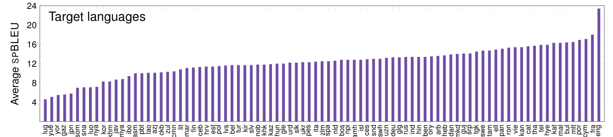
图Figure 9: S2TT Fleurs X–X results. We evaluate X–X directions from Fleurs and average spBLEU scores. For a given target text language, we average scores over 100 source languages.
图 9：S2TT Fleurs X–X 结果。我们评测 Fleurs 的 X–X 方向并平均 spBLEU 分数。对给定目标文本语言，在 100 种源语言上取平均。
4.5 分析与消融Analysis and Ablations
4.5.1 Unsupervised speech pre-training We explored various techniques to enhance the quality of our encoders’ representations, including algorithm-wise improvements and pre-training data scaling.
4.5.1 无监督语音预训练 我们探索了多种提升编码器表征质量的技术，包括算法上的改进与预训练数据扩展。
实验设置Experimental setup
In our ablation, we aimed to evaluate the w2v-BERT variants by their performance on the downstream S2TT task. All pre-trained w2v-BERT speech encoders are composed of 24 Conformer layers [Gulati et al., 2020] with approximately 600M of parameters. Each speech encoder was used to initialize an S2TT model. The text decoder was initialized with the decoder from NLLB-1.3B, a large multilingual machine translation model covering 200 languages [NLLB Team et al., 2022] with 1.3B parameters. We fine-tuned the S2TT models on the task of speech translation into English (X–eng S2TT) on 67 languages. We fine-tuned all the speech encoder parameters and only fine-tuned
在消融中，我们旨在按 w2v-BERT 各变体在下游 S2TT 任务上的表现来评估它们。所有预训练的 w2v-BERT 语音编码器都由 24 层 Conformer [Gulati et al., 2020] 组成，约 600M 参数。每个语音编码器都用于初始化一个 S2TT 模型。文本解码器以 NLLB-1.3B 的解码器初始化——后者是覆盖 200 种语言、含 1.3B 参数的大型多语言机器翻译模型 [NLLB Team et al., 2022]。我们在 67 种语言的译入英语语音翻译任务（X–eng S2TT）上微调这些 S2TT 模型。我们微调了全部语音编码器参数，并且只微调 41
41ID（配置标识）ID
Configuration Fleurs X–eng (↑BLEU) A w2v-BERT baseline with updated XLS-R data (400K hrs, 143 langs)
（表格/图内数值行，原始数据照录） （原始语料/表格数据照录） Configuration Fleurs X–eng (↑BLEU) A w2v-BERT baseline with updated XLS-R data (400K hrs, 143 langs)
12.4B A + product quantization with 2 GVQ codebooks
（页码行：2。）
12.5C B + increased open training data from 400K hours to 1M hours
（表格内容：w2v-BERT 变体消融——列为配置与 Fleurs X–eng (↑BLEU)。A：以更新的 XLS-R 数据（400K 小时、143 种语言）训练的 w2v-BERT 基线，12.4；B：A + 2 个 GVQ 码本的乘积量化，12.5；C：B + 开放训练数据从 400K 小时扩至 1M 小时，12.7；D：C + 掩码预测目标的 2 个 RPQ 码本，12.8。）
12.7D C + 2 RPQ codebooks for masked prediction objective
（页码行：2。）
12.8Table 21: Ablation on w2v-BERT variants and training data scaling.
表 21：w2v-BERT 变体与训练数据扩展的消融。
| as zero-shot. | |||||||||
|---|---|---|---|---|---|---|---|---|---|
| Results | We summarize our ablation results in Table 21. | ||||||||
| prediction learning objectives with 2 RPQ codebooks helps improve performance (C vs. | |||||||||
| Language | |||||||||
| ASR | |||||||||
| (code) | |||||||||
| Primary | Primary | Mined | Primary | Mined | Primary | Mined | Primary | Mined | |
| arb | 934 | 942 | 600 | 1,959 | 600 | 899 | 736 | 895 | 681 |
| ben | 338 | 320 | 600 | 1,987 | 499 | 292 | 246 | 652 | 221 |
| eng | 3,845 | - | - | - | - | - | - | - | - |
| hin | 148 | 143 | 600 | 2,066 | 600 | 138 | 466 | 656 | 430 |
| ind | 250 | 254 | 600 | 1,818 | 596 | 248 | 443 | 684 | 375 |
| ita | 591 | 910 | 600 | 2,279 | 600 | 930 | 716 | 1,020 | 636 |
| jpn | 381 | 15,141 | 600 | 1,798 | 259 | 624 | 993 | 681 | 779 |
| por | 269 | 246 | 600 | 2,250 | 600 | 355 | 606 | 983 | 508 |
| rus | 264 | 144 | 600 | 2,161 | 600 | 290 | 1,093 | 959 | 1,075 |
| spa | 1,515 | 1,285 | - | 2,505 | 574 | 1,694 | 2,335 | 1,035 | 2,209 |
| swh | 361 | 50 | 600 | 1,930 | 596 | 342 | 411 | 682 | 392 |
| tha | 190 | 59 | 600 | 1,941 | 101 | 184 | 462 | 641 | 408 |
| tur | 169 | 100 | 600 | 2,135 | 600 | 156 | 375 | 998 | 411 |
| urd | 185 | 145 | 600 | 1,844 | 507 | 179 | 555 | 682 | 502 |
| vie | 194 | 151 | 600 | 2,396 | 600 | 176 | 666 | 954 | 684 |
LayerNorms and Self-attention in the text decoder (LNA-D [Li et al., 2021a]). Our learning rate increased up to 3e-4 through 4000 warm-up updates and subsequently followed the inverse square root learning rate schedule. We trained on 32 GPUs with a batch size of 960K frames in each for 100K updates. We report BLEU scores (SacreBLEU13 [Post, 2018]) evaluated on the test set of all 101 X–eng directions from Fleurs [Conneau et al., 2022]. Given the coverage of our training data, this means that 34 of the directions were evaluated as zero-shot.
文本解码器中的 LayerNorm 与自注意力（LNA-D [Li et al., 2021a]）。学习率经 4000 步暖机升至 3e-4，随后遵循反平方根学习率调度。我们在 32 张 GPU 上训练 100K 步，每张卡的批大小为 960K 帧。我们报告在 Fleurs [Conneau et al., 2022] 全部 101 个 X–eng 方向测试集上评测的 BLEU 分数（SacreBLEU13 [Post, 2018]）。鉴于我们训练数据的覆盖，这意味着其中 34 个方向是以零样本方式评测的。
结果Results
Language (code) ASR S2TT S2ST X–eng eng–X X–eng eng–X Primary Primary Mined Primary Mined Primary Mined Primary Mined arb
（页码行：2。）
Total9,633 19,890 7,800 29,068 2,701 6,508 10,103 11,523 9,312Table 22: Hours of data in the ablation dataset for the tasks of ASR, S2TT and S2ST, split between eng–X and X–eng when relevant. For each task, we report hours of training data between primary and mined. By default, S2TT mined data is capped at 400 hours in X–eng and at 200 hours in eng–X.
表 22：消融数据集中 ASR、S2TT、S2ST 各任务的数据小时数，相关处按 eng–X 与 X–eng 拆分。对每个任务，我们报告 primary 与 mined 训练数据的小时数。默认 S2TT 挖掘数据 X–eng 上限 400 小时、eng–X 上限 200 小时。
13. see Table 4
（表格/图内数值行，原始数据照录） （原始语料/表格数据照录） 13. see Table 4
424.5.2 Multimodal & multitasking X2T
（表格/图内数值行，原始数据照录） （原始语料/表格数据照录） 4.5.2 Multimodal & multitasking X2T
消融数据集Ablation dataset
To iterate on different multitasking recipes, we constructed a smaller multilingual speech translation benchmark with 14 languages paired with English. The supervised S2TT data comes from two sources: primary (open-source or licensed) and mined, whereas the ASR data is either from open-sourced or licensed datasets. The T2TT data we used in our multitasking fine-tuning is limited to bitexts produced in the pseudolabeling process, i.e., translated transcriptions in the ASR datasets (see Section 4.2.1). For a breakdown of the ablation dataset, see Table 22.
为迭代不同的多任务配方，我们构建了一个更小的多语言语音翻译基准：14 种语言与英语配对。有监督 S2TT 数据来自两个来源：primary（开源或授权）与 mined（挖掘）；ASR 数据则来自开源或授权数据集。多任务微调所用的 T2TT 数据仅限于伪标注过程产出的双语文本，即 ASR 数据集中转写文本的翻译（见第 4.2.1 节）。消融数据集的细目见 Table 22。
实验设置Experimental setup
We fine-tuned multilingual translation models on our ablation dataset with different mixes of tasks. As a baseline, we only trained on primary S2TT data (eng–X + X–eng), optimizing L1: LS2TT exclusively. With the data fixed, we experimented with two other objectives to optimize: (L2) with joint optimization of T2TT and S2TT (LS2TT + LT2TT) and (L3) with the additional knowledge distillation objective with T2TT as the teacher and S2TT as the student. We then added more data, namely ASR data and mined data respectively, and compared the performance of models trained with different objectives in the three data setups.
我们在消融数据集上以不同的任务混合微调多语言翻译模型。作为基线，我们仅在 primary S2TT 数据（eng–X + X–eng）上训练，仅优化 L1：LS2TT。固定数据后，我们又试验了两种优化目标：(L2) 联合优化 T2TT 与 S2TT（LS2TT + LT2TT）；(L3) 在前述基础上加上以 T2TT 为教师、S2TT 为学生的知识蒸馏目标。然后我们分别加入更多数据——ASR 数据与挖掘数据——并比较三种数据设置下用不同目标训练的模型。
We initialized X2T models with our w2v-BERT 2.0 speech encoder and SeamlessM4T- NLLBT2TT model. We fine-tuned all parameters in the speech encoder and text encoder, while only fine-tuning LayerNorms and Self-attentions in the text encoder (LNA [Li et al., 2021b]). We trained all models for 100K updates (corresponding to 5-7 epochs). To regularize our models, we applied LayerDrop (p=0.1) to the speech encoder with masking (p=0.1). For the text encoder-decoder, we applied regular dropouts (p = 0.1). We evaluated the last checkpoint on development data and evaluated BLEU scores on Fleurs dev for translation tasks (including T2TT) and Whisper-style normalized WER for ASR.
我们用 w2v-BERT 2.0 语音编码器与 SeamlessM4T-NLLB T2TT 模型初始化 X2T 模型。我们微调语音编码器与文本编码器的全部参数，而文本编码器只微调 LayerNorm 与自注意力（LNA [Li et al., 2021b]）。所有模型训练 100K 次更新（对应 5–7 个 epoch）。为做正则化，我们对语音编码器施加 LayerDrop（p=0.1）与掩码（p=0.1）。对文本编码器-解码器，我们施加常规 dropout（p=0.1）。我们在开发数据上评测最后一个 checkpoint，翻译任务（含 T2TT）在 Fleurs dev 上报 BLEU，ASR 报 Whisper 风格归一化 WER。
结果Results
Within each data setup (D1, D2 or D3), we see in Table 23 that adding T2TT to the multitasking loss, as expected, helps the performance on T2TT (+1.8 BLEU on average D1,2,3). Without adding this loss, fine-tuning exclusively on S2TT leads to catastrophic forgetting of the pre-training T2TT task (comparing L1 to L2). However, the accuracy of S2TT is seldom affected by this joint training with T2TT. Knowledge distillation is proving to be a necessary ingredient to leverage joint fine-tuning with T2TT. After adding knowledge distillation (L1 to L3), S2TT’s performance improves by 0.6 BLEU points on average (D1,2,3).
在每种数据设置（D1、D2 或 D3）下，我们在 Table 23 中看到，把 T2TT 加入多任务损失，如预期一样，有助于 T2TT 的性能（D1、2、3 平均 +1.8 BLEU）。若不加入该损失，仅在 S2TT 上微调会导致对预训练 T2TT 任务的灾难性遗忘（对比 L1 与 L2）。然而，与 T2TT 联合训练几乎不影响 S2TT 的准确率。知识蒸馏被证明是利用与 T2TT 联合微调的必要成分。加入知识蒸馏后（L1 对 L3），S2TT 的性能平均提升 0.6 个 BLEU 点（D1、2、3）。
If we compare the three different data setups, adding ASR data is crucial to supporting the ASR task as evaluating it as zero-shot leads to 3× higher error rates. Joint fine-tuning with T2TT and the auxiliary knowledge distillation loss has no negative effect on ASR given that for ASR data, the teacher task is auto-encoding (see Section 4.2.3). Adding mined S2TT data for which the source text is not available for T2TT to teach S2TT, still helps S2TT in the M3 task mix. We note, however, that the accuracy of T2TT drops as we add more speech-text only data (ASR and mined S2TT) without the aligned text-text data.
比较三种不同数据设置：加入 ASR 数据对支撑 ASR 任务至关重要，因为若以零样本方式评测 ASR，错误率会高出 3 倍。与 T2TT 联合微调并加辅助知识蒸馏损失对 ASR 没有负面影响，因为对 ASR 数据而言，教师任务是自编码（见第 4.2.3 节）。加入源文本不可用于 T2TT 的挖掘 S2TT 数据来教 S2TT，在 M3 任务混合中仍对 S2TT 有帮助。但我们注意到，随着加入更多缺少对齐文-文数据、仅有语音-文本的数据（ASR 与挖掘 S2TT），T2TT 的准确率会下降。
4.5.3 Leveraging Mined Speech-Text Data
4.5.3 利用挖掘的语音-文本数据
实验设置Experimental setup
We fine-tuned S2TT models on increasing amounts of mined data from SeamlessAlign. On top of the primary S2TT data, in the first model, we add 200
（页码行：2。）（表格/图内数值行，原始数据照录） （原始语料/表格数据照录） On top of the primary S2TT data, in the first model, we add 200
43Data D1: S2TT data D2: D1+ASR data D3: D2+Mined data Task S2TT ASR∗ T2TT S2TT ASR T2TT S2TT ASR T2TT (n=28) (n=15) (n=28) (n=28) (n=15) (n=28) (n=28) (n=15) (n=28) Metric ↑BLEU ↓WER ↑BLEU ↑BLEU ↓WER ↑BLEU ↑BLEU ↓WER ↑BLEU L1: LS2TT
（表格/图内数值行，原始数据照录） （原始语料/表格数据照录） Data D1: S2TT data D2: D1+ASR data D3: D2+Mined data Task S2TT ASR∗ T2TT S2TT ASR T2TT S2TT ASR T2TT (n=28) (n=15) (n=28) (n=28) (n=15) (n=28) (n=28) (n=15) (n=28) Metric ↑BLEU ↓WER ↑BLEU ↑BLEU ↓WER ↑BLEU ↑BLEU ↓WER ↑BLEU L1: LS2TT
26.5 36.5 34.1 26.7 16.4 34.2 27.6 15.8 34.7L2: L1 + LT2TT26.6 36.4 36.8 26.7 16.8 36.1 27.6 16.3 35.4L3: L2 + LKD27.1 35.9 36.7 27.2 16.2 36.1 28.3 15.8 35.3Table 23: Ablations on multitasking objectives in three different data setups. Results are reported on Fleurs dev.
表 23：三种不同数据设置下多任务目标的消融。结果在 Fleurs dev 上报告。
| SeamlessAlign is ranked based on Sonar scores and we selected the top | |||||
|---|---|---|---|---|---|
| This signals that some filtering of | SeamlessAlign —e.g., | ||||
| similarity scores—can improve the quality of the model’s translations | |||||
| setting | ↑BLEU | ∆ | ↑BLEU | ∆ | |
| 23.9 | 29.0 | ||||
| + 200H mined | 25.9 | +2.0 | 29.4 | +0.4 | |
| + 400H mined | 26.6 | +2.7 | 29.8 | +0.8 | |
| + 600H mined | 26.0 | +2.1 | 29.5 | +0.5 |
hours of mined data in each direction, 400 hours in the second and 600 hours in the last. SeamlessAlign is ranked based on Sonar scores and we selected the top ranking pairs up to the desired amount of additional data.
小时的挖掘数据，第二个模型加 400 小时，最后一个加 600 小时。SeamlessAlign 按 Sonar 分数排名，我们选取排名靠前的配对直至达到目标额外数据量。
结果Results
Table 24 reports the results of models trained with increasing amounts of mined data. The model trained with at most 400 hours in each direction achieves the best average BLEU score. This signals that some filtering of SeamlessAlign —e.g., based on Sonar similarity scores—can improve the quality of the model’s translations without inflating the computational cost of training.
Table 24 报告了使用逐渐增加的挖掘数据量训练的模型的结果。每个方向最多使用 400 小时挖掘数据训练的模型取得了最好的平均 BLEU 分数。这表明对 SeamlessAlign 做一些过滤——例如基于 Sonar 相似度分数——可以在不增加训练计算成本的情况下改善模型翻译质量。
X–engX–eng
(n=14) eng–X (n=14)
（图注刻度：X–eng（n=14）与 eng–X（n=14）两个方向。）
数据设置Data setting
Baseline26.6 +2.7+2.7
29.8 挖掘数据消融（接 Table 24）+0.8
Table 24: Ablations on the use of mined data. Results are reported on Fleurs dev.
表 24：使用挖掘数据的消融。结果在 Fleurs dev 上报告。
| Data | D2: | D1+ASR data | D3: | D2+Mined data | ||||||
|---|---|---|---|---|---|---|---|---|---|---|
| Task | S2TT | ASR∗ | T2TT | S2TT | ASR | T2TT | S2TT | ASR | T2TT | |
| (n=28) | (n=15) | (n=28) | (n=28) | (n=15) | (n=28) | (n=28) | (n=15) | (n=28) | ||
| Metric | ↑BLEU | ↓WER | ↑BLEU | ↑BLEU | ↓WER | ↑BLEU | ↑BLEU | ↓WER | ↑BLEU | |
| L1: | LS2TT | 26.5 | 36.5 | 34.1 | 26.7 | 16.4 | 34.2 | 27.6 | 15.8 | 34.7 |
| L2: | L1 + LT2TT | 26.6 | 36.4 | 36.8 | 26.7 | 16.8 | 36.1 | 27.6 | 16.3 | 35.4 |
| L3: | L2 + LKD | 27.1 | 35.9 | 36.7 | 27.2 | 16.2 | 36.1 | 28.3 | 15.8 | 35.3 |
| Table 23: | Results are reported | |||||||||
| on Fleurs dev. | ||||||||||
| hours of mined data in each direction, 400 hours in the second and 600 hours in the last. | ||||||||||
| SeamlessAlign is ranked based on Sonar scores and we selected the top ranking pairs up | ||||||||||
| to the desired amount of additional data. |
4.5.4 T2U pre-training in UnitY
4.5.4 UnitY 中的 T2U 预训练
实验设置Experimental setup
Similar to the ablation dataset described in Section 4.5.2, we built an S2ST ablation dataset with pseudo-labeled S2ST data (eng–X + X–eng) to fine-tune multilingual UnitY models. With the data fixed, we compare two options for using pretrained components when fine-tuning UnitY. In the first (M1), we initialized the speech encoder with its adaptor and the first pass decoder with a pre-trained X2T model. In the second (M2), we additionally initialized the T2U of UnitY with a pre-trained T2U model. In both setups, we only fine-tuned the weights of the T2U model on S2ST data.
与第 4.5.2 节的消融数据集类似，我们构建了一个含伪标注 S2ST 数据（eng–X + X–eng）的 S2ST 消融数据集，用于微调多语言 UnitY 模型。固定数据后，我们比较微调 UnitY 时使用预训练组件的两种方案。第一种（M1）：用预训练 X2T 模型初始化语音编码器（含 adaptor）与第一遍解码器。第二种（M2）：除上述外，还用预训练 T2U 模型初始化 UnitY 的 T2U。两种设置下，我们都只在 S2ST 数据上微调 T2U 模型的权重。
结果Results
We evaluated our models on Fleurs dev for S2ST and report ASR-BLEU scores in Table 25. We note that T2U pre-training is beneficial for the fine-tuning of UnitY as it converges faster (comparing ASR-BLEU scores after 10K updates) and is, therefore, more computationally efficient.
我们在 Fleurs dev 上评测各模型的 S2ST，并在 Table 25 报告 ASR-BLEU 分数。我们注意到，T2U 预训练有益于 UnitY 的微调：它收敛更快（对比 10K 次更新后的 ASR-BLEU 分数），因此也更省计算。
444.5.5 Leveraging mined speech-to-speech data To measure the impact of adding mined S2ST data to Stage3 of UnitY fine-tuning, we compared model M2 from Section 4.5.4 to a model trained following the same training procedure, but with more mined data from SeamlessAlign (see amounts of additional data per direction in Table 22.
（表格/图内数值行，原始数据照录） （原始语料/表格数据照录） 4.5.5 Leveraging mined speech-to-speech data To measure the impact of adding mined S2ST data to Stage3 of UnitY fine-tuning, we compared model M2 from Section 4.5.4 to a model trained following the same training procedure, but with more mined data from SeamlessAlign (see amounts of additional data per direction in Table 22.
结果Results
The results in Table 25 show that adding mined data improves eng–X translation accuracy by 0.5 ASR-BLEU points, but it decreases that of X–eng by 0.2.
Table 25 的结果表明：加入挖掘数据使 eng–X 的翻译精度提升 0.5 ASR-BLEU 点，但 X–eng 方向下降 0.2。
However, we do notice slight improvements in the quality of the speech generated and hence add SeamlessAlign for the final model training.
不过，我们确实注意到生成语音质量有轻微改善，因此最终模型训练仍加入 SeamlessAlign。
Fleurs S2STFleurs S2ST
(↑ASR-BLEU)
（↑ASR-BLEU）
模型Model
updates X–eng eng–X M1 T2U from scratch 10K
（表格/图内数值行，原始数据照录） （原始语料/表格数据照录） updates X–eng eng–X M1 T2U from scratch 10K
6.9 1.820K23.3 12.4M2 pre-trained T2U 10K18.1 8.820K24.2 15.250K†26.5 18.6M3 pre-trained T2U + Mined data 80K†26.3 19.1Table 25: Ablations on pre-training UnitY’s T2U and use of S2ST mined data. Results are reported on Fleurs dev. † 80K and 50K correspond to 2 epoches in the two different data settings.
表 25：对 UnitY 的 T2U 预训练与使用 S2ST 挖掘数据的消融。结果在 Fleurs dev 上报告。† 80K 与 50K 分别对应两种不同数据设置下的 2 个 epoch。
| 4.6 | Related | work | ||||||
| Two-pass | sequence | Two-pass decoding has the advantage of maintaining | ||||||
| end-to-end | optimization | capability | inheriting | the | benefits | cascading | approach. | |
| Xia et | al. [2017] | and | al. | incorporate | an | additional | process | find |
| better output. | Dalmia et al. [2021] re-ranks the intermediate hypotheses using an external | |||||||
| module | such | as a | model. | et al. | [2019] | injects | information | in |
| provides an intermediate output to users before generating the final output for streaming | ||||||||
| applications. | The two-pass approach makes the optimization tractable and results in better | |||||||
| Codec-based | audio | In contrast to acoustic units extracted from SSL-based | ||||||
| audio representation models (e.g., XLS-R in this work), recent advances in quantized, audio | ||||||||
| codec auto-encoders enabled successful research combining large, autoregressive language | ||||||||
| models | and | audio | Open-source | EnCodec | [D’efossez | et | and | proprietary |
| SoundStream [Zeghidour et al., 2022] models are widely known examples of quantized audio | ||||||||
| auto-encoders. | One advantage of codec-based units is that they can be converted back to | |||||||
| the waveform without needing an externally trained vocoder. | ||||||||
| In speech translation research, VaLLE [Wang et al., 2023a] introduced the conditional | ||||||||
| autoregressive modeling of EnCodec-based audio data to perform text-to-speech synthesis. | ||||||||
| 45 |
4.6 相关工作Related work
两遍式序列生成Two-pass sequence generation
Two-pass decoding has the advantage of maintaining end-to-end optimization capability while inheriting the benefits of a cascading approach. Xia et al. [2017] and Hu et al. [2020] incorporate an additional search process to find a better output. Dalmia et al. [2021] re-ranks the intermediate hypotheses using an external module such as a language model. Zhao et al. [2019] injects specific information in the intermediate decoder to bias the output toward the desired domain. Sainath et al. [2019] provides an intermediate output to users before generating the final output for streaming applications. The two-pass approach makes the optimization tractable and results in better speech translation performance [Sung et al., 2019; Anastasopoulos and Chiang, 2018].
两遍解码兼具优势：既保持端到端可优化性，又继承级联方法的好处。Xia et al. [2017] 与 Hu et al. [2020] 引入额外的搜索过程以找到更优输出。Dalmia et al. [2021] 用语言模型等外部模块对中间假设重排序。Zhao et al. [2019] 在中间解码器中注入特定信息，把输出偏向目标领域。Sainath et al. [2019] 在流式应用中先把中间输出给用户，再生成最终输出。两遍式方法使优化更可处理，并带来更好的语音翻译性能 [Sung et al., 2019; Anastasopoulos and Chiang, 2018]。
基于 Codec 的音频建模Codec-based audio modeling
In contrast to acoustic units extracted from SSL-based audio representation models (e.g., XLS-R in this work), recent advances in quantized, audio codec auto-encoders enabled successful research combining large, autoregressive language models and audio data. Open-source EnCodec [D’efossez et al., 2022] and proprietary SoundStream [Zeghidour et al., 2022] models are widely known examples of quantized audio auto-encoders. One advantage of codec-based units is that they can be converted back to the waveform without needing an externally trained vocoder.
与从基于自监督学习的音频表征模型（如本工作中的 XLS-R）提取声学单元不同，近来量化音频编解码自编码器的进展，使得把大型自回归语言模型与音频数据结合的研究得以成功展开。开源的 EnCodec [D’efossez et al., 2022] 与专有的 SoundStream [Zeghidour et al., 2022] 是量化音频自编码器的知名代表。基于 codec 的单元的一个优点是：它们可以在不依赖外部训练声码器的情况下还原为波形。
In speech translation research, VaLLE [Wang et al., 2023a] introduced the conditional autoregressive modeling of EnCodec-based audio data to perform text-to-speech synthesis.
在语音翻译研究中，VaLLE [Wang et al., 2023a] 引入了对基于 EnCodec 的音频数据进行条件自回归建模，以实现文本到语音合成。
VaLLE-X [Zhang et al., 2023b] subsequently built upon VaLLE to scale language coverage and enable language translation using a model cascade. VIOLA [Wang et al., 2023c] later explored the ability of decoder-only codec-based LM to translate without cascades.
（表格/图内数值行，原始数据照录） （原始语料/表格数据照录） VaLLE-X [Zhang et al., 2023b] subsequently built upon VaLLE to scale language coverage and enable language translation using a model cascade.VIOLA [Wang et al., 2023c] 之后探索了仅用 decoder-only 的 codec 化语言模型在不做级联的情况下完成翻译的能力。
语音与文本的多模态与多任务Multimodality & multitask for speech & text
Multimodality and multitask on the source side are orthogonal to multitask learning with two-pass decoding, where the goal is to provide the second task with higher-level representations produced from the first task decoder Anastasopoulos and Chiang [2018].
源侧的多模态与多任务，跟「带两遍解码的多任务学习」是正交的——后者的目标是让第二个任务使用第一个任务解码器产生的更高层表征（Anastasopoulos and Chiang [2018]）。
In general, multitask learning aims to improve generalization by leveraging domain-specific information contained in the training signals of related tasks [Caruana, 1997; Vandenhende et al., 2021]. Compared with single tasks, multitasking has the potential to improve performance by sharing complementary information or acting as a regularizer. Maninis et al. [2019], Liu et al. [2019], and Pfeiffer et al. [2020] introduced task-dependent components to enhance individual task performance. Weiss et al. [2017b] explored different multitask training strategies for speech translation, and they find the one-to-many strategy, in which an encoder is shared between the speech translation and ASR tasks, is more effective. Bahar et al. [2019] and Tang et al. [2021] compared different multitask strategies for S2TT, and confirmed the effectiveness of many-to-one training, in which T2TT and S2TT are trained together and the decoder is shared between two tasks.
一般而言，多任务学习旨在利用相关任务训练信号中蕴含的领域特定信息来改善泛化 [Caruana, 1997; Vandenhende et al., 2021]。相比单任务，多任务有望通过共享互补信息或充当正则化来提升性能。Maninis et al. [2019]、Liu et al. [2019] 与 Pfeiffer et al. [2020] 引入了任务相关组件，以增强各任务的个体表现。Weiss et al. [2017b] 探索了语音翻译的不同多任务训练策略，发现「一对多」策略——让编码器在语音翻译与 ASR 任务间共享——更有效。Bahar et al. [2019] 与 Tang et al. [2021] 比较了 S2TT 的不同多任务策略，确认了「多对一」训练的有效性——即 T2TT 与 S2TT 联合训练并共享解码器。
Recent works have also trained multitask and multimodal encoders by learning joint representations of multiple modalities. The motivation is that the learned features will be richer and that inter-modal tasks can benefit from such joint training. These techniques were explored in audio [Chen et al., 2022; Bapna et al., 2022; Zhang et al., 2023a; Rubenstein et al., 2023], in vision [Chen et al., 2020; Gan et al., 2020; Fu et al., 2021], as well as audiovisual [Shi et al., 2022; Anwar et al., 2023].
近来的工作还通过学习多模态联合表征来训练多任务、多模态编码器。其动机在于：学到的特征会更丰富，跨模态任务能从这种联合训练中受益。这些技术已在音频 [Chen et al., 2022; Bapna et al., 2022; Zhang et al., 2023a; Rubenstein et al., 2023]、视觉 [Chen et al., 2020; Gan et al., 2020; Fu et al., 2021] 与视听 [Shi et al., 2022; Anwar et al., 2023] 等领域得到探索。
5 自动与人工评测Automatic and Human Evaluation
Up to this point, to evaluate our model, we have used standard automatic evaluation metrics for each particular task as reported in Table 4. In this section, for the tasks of S2TT and S2ST, we extend beyond these standard automatic metrics to include additional automatic and human evaluations to further assess our contributions. Automatic evaluations in this section reflect the robustness of our models in terms of noise and domains. Human assessment focuses on the preservation of speaker intention, as well as the subjective quality of the audio generated. To start, we introduce Blaser 2.0, a new, modality-agnostic evaluation metric that enables quality estimation for both speech and text.
到目前为止，我们评测模型使用的是各任务标准的自动评测指标，如 Table 4 所报告。在本节中，针对 S2TT 与 S2ST 任务，我们超越这些标准自动指标，加入额外的自动与人工评测，以进一步评估我们的贡献。本节的自动评测反映模型在噪声与领域方面的鲁棒性。人工评测聚焦于说话人意图的保持，以及生成音频的主观质量。首先，我们介绍 Blaser 2.0——一个新的、模态无关的评测指标，可对语音与文本同时做质量估计。
5.1 模态无关自动指标：Blaser 2.0Modality-Agnostic Automatic Metric: Blaser 2.0
描述Description
Blaser 2.0 is the new version of BLASER [Chen et al., 2023a], which works with both speech and text modalities—hence being modality-agnostic. Like the first version, our approach leverages the similarity between input and output sentence embeddings. The new version uses SONAR embeddings (3.3.1), supports 83 languages in the speech modality and 200 in text, and is extendable to future encoders for new languages or modalities that share the same embedding space. For the purposes of evaluating speech outputs (and unlike ASR-based metrics), BLASER offers the advantage of being text-free.
Blaser 2.0 是 BLASER [Chen et al., 2023a] 的新版本，可同时处理语音与文本模态——因此是模态无关的。与第一版类似，我们的方法利用输入与输出句向量之间的相似度。新版本使用 SONAR 嵌入（见 3.3.1），在语音模态支持 83 种语言、文本模态支持 200 种语言，且可扩展到未来共享同一嵌入空间的新语言或新模态编码器。就评测语音输出而言（且不同于基于 ASR 的指标），BLASER 的优势在于完全不需要文本。
46More specifically, in Blaser 2.0, we take the source input, the translated output from any S2ST, S2TT, or T2TT model, and the reference speech segment or text, and convert them into SONAR embedding vectors (hsrc, hmt, and href, respectively). For the supervised version of Blaser 2.0, these embeddings are combined and fed into a small, dense neural network that predicts an XSTS score for each translation output. For the unsupervised version, we use, similar to Chen et al. [2023a], the average of source-translation and reference-translation cosine similarities.
（表格/图内数值行，原始数据照录） （原始语料/表格数据照录） More specifically, in Blaser 2.0, we take the source input, the translated output from any S2ST, S2TT, or T2TT model, and the reference speech segment or text, and convert them into SONAR embedding vectors (hsrc, hmt, and href, respectively).对 Blaser 2.0 的有监督版本，这些嵌入被组合输入一个小型稠密神经网络，为每个翻译输出预测一个 XSTS 分数。对无监督版本，我们沿用 Chen et al. [2023a]，使用源-翻译与参考-翻译余弦相似度的平均值。
In addition, we trained a reference-free version of the system called Blaser 2.0-QE (for Quality Estimation). Blaser 2.0-QE is a supervised model trained only with source and translation embeddings. It can be applied in settings where reference translations are missing or if their quality is questionable.
此外，我们训练了一个无参考版本，称为 Blaser 2.0-QE（Quality Estimation，质量估计）。Blaser 2.0-QE 是仅用源与翻译嵌入训练的有监督模型。它可用于参考翻译缺失或质量可疑的场景。
数据Data
The supervised version of Blaser 2.0 was trained on the XSTS-annotated data (Licht et al. [2022]), which includes the same S2ST annotations as in the original BLASER (Chen et al. [2023a]). Additional S2ST, S2TT, and T2ST annotations come from a variety of other internal studies, including NLLB human evaluations NLLB Team et al. [2022], and T2TT annotations are drawn from NLLB (NLLB Team et al. [2022]). We filtered out all audio longer than 30 seconds because the SONAR encoders were not trained on long audio.
Blaser 2.0 的有监督版本在带 XSTS 标注的数据（Licht et al. [2022]）上训练，其中包含与原始 BLASER（Chen et al. [2023a]）相同的 S2ST 标注。额外的 S2ST、S2TT 与 T2ST 标注来自若干其他内部研究，包括 NLLB 人工评测 NLLB Team et al. [2022]；T2TT 标注则来自 NLLB（NLLB Team et al. [2022]）。我们过滤掉所有长于 30 秒的音频，因为 SONAR 编码器未在长音频上训练。
For the original BLASER data, train/test splits were reused. The other datasets were split randomly in 80/20 proportion so that the same source audio or text always goes to the same partition. Details on the data are reported in Table 26.
对原始 BLASER 数据，沿用了原有的 train/test 划分。其余数据集按 80/20 比例随机划分，保证相同源音频或文本始终落入相同分区。数据细节见 Table 26。
数据部分Data part
test size train size systems langs ρunsup.
（表格列：test size、train size、systems、langs、ρunsup.）
ρsup.
（列：ρsup.）
ρQE BLASER 1.0 S2ST data
（表格/图内数值行，原始数据照录） （原始语料/表格数据照录） ρQE BLASER 1.0 S2ST data
9804 10690 10 9 0.51 0.56 0.53Other S2ST data5453 15904 8 13 0.47 0.48 0.38S2TT and T2ST data5205 10246 7 8 0.49 0.54 0.51T2TT data20311 86776 2 59 0.49 0.61 0.60全部数据All data
40773 123616 24 62 0.51 0.59 0.56Table 26: The data for Blaser 2.0: test and train size, number of systems and languages, Spearman correlation of unsupervised, supervised, and reference-free Blaser 2.0 scores with XSTS labels on the test subset.
表 26：Blaser 2.0 的数据：测试与训练规模、系统数与语言数，以及无监督、有监督与无参考 Blaser 2.0 分数与测试子集上 XSTS 标签的 Spearman 相关系数。
| the test subset. | ||||||||||||||||
|---|---|---|---|---|---|---|---|---|---|---|---|---|---|---|---|---|
| 1.0 | model: | a | 3-layer | perceptron | with | tanh | activations | on | top | of 6 | concatenated | vectors | ||||
| of normalized embeddings and their derivatives: | [href; hmt; hsrc ⊙hmt; |hsrc −hmt|; href ⊙ | |||||||||||||||
| hmt; |href | −hmt|]. | For the QE version, | we used the same settings but with reference-free | |||||||||||||
| inputs: | [hsrc; hmt; hsrc ⊙hmt; |hsrc −hmt|]. | |||||||||||||||
| We used the training code for BLASER 1.0 with a few modifications in the hyperparam- | ||||||||||||||||
| eters intended to mitigate overfitting: | 50% dropout, 0.1 weight decay, batch size of 1024, | |||||||||||||||
| and full linear decay of the learning rate by the end of the training. | To compensate for the | |||||||||||||||
| increased batch size, we trained for 50 instead of 20 epochs. | ||||||||||||||||
| Results | Table 27 presents the performance of unsupervised and supervised BLASER on the | |||||||||||||||
| BLASER 1.0 test data. | ||||||||||||||||
| 47 |
训练Training
结果Results
Table 27 presents the performance of unsupervised and supervised BLASER on the BLASER 1.0 test data. The unsupervised 2.0 model slightly outperforms its predecessor. The
Table 27 给出无监督与有监督 BLASER 在 BLASER 1.0 测试数据上的表现。无监督 2.0 模型略优于其前身。《银河系漫游指南》中的巴别鱼、《星际迷航》的宇宙翻译器和《神秘博士》的 Tardis 翻译电路，本质上是同一种东西——赋予人们在任意两种语言之间翻译能力的计算设备。
↑Pearson Correlation
（碎片）……47 ↑Pearson 相关性
模型Model
eng-deu eng-spa eng-fra spa-eng fra-eng rus-eng average BLASER 1.0 unsup
（表格/图内数值行，原始数据照录） （原始语料/表格数据照录） eng-deu eng-spa eng-fra spa-eng fra-eng rus-eng average BLASER 1.0 unsup
0.32 0.58 0.64 0.50 0.48 0.43 0.49Blaser 2.0 unsup0.37 0.75 0.71 0.59 0.57 0.49 0.58Blaser 2.0 QE0.34 0.73 0.71 0.54 0.48 0.45 0.54BLASER 1.0 sup0.33 0.75 0.71 0.58 0.57 0.53 0.58Blaser 2.0 sup0.36 0.75 0.73 0.58 0.56 0.50 0.58Table 27: Pearson correlations of unsupervised and supervised BLASER models with XSTS scores on the BLASER 1.0 test data.
表 27：在 BLASER 1.0 测试数据上，无监督与有监督 BLASER 模型与 XSTS 分数的 Pearson 相关性。
| on the BLASER 1.0 test data. | |||||||||||
|---|---|---|---|---|---|---|---|---|---|---|---|
| Because Blaser | 2.0 supports more languages, we used this for evaluations. | ||||||||||
| the future. Full Blaser | 2.0 | scores | for | SeamlessM4T | models are | reported in | table | 18. | |||
| Additionally, the next | section | 5.2 | reports the | corresponding | correlations | of | Blaser | 2.0 | |||
| scores with human scores. | |||||||||||
| 5.2 Human Evaluation | |||||||||||
| Human evaluation is a | vital | tool in | assessing | the | quality | of | our | systems. | We | first | briefly |
| describe related work in | the | area, | followed by | a | detailed | description | of | the entire | human | ||
| evaluation process, including protocols, data, and calibration. | |||||||||||
| Related work. | Human evaluation has been widely applied to machine translation in the | ||||||||||
| scientific community. | Two of the most popular models of human evaluation are deployed | ||||||||||
| within the context of International Evaluation Campaigns. | The WMT conference [Kocmi | ||||||||||
| et al., 2022] asks participants | to evaluate | the | outputs | of | translation | systems | using a | pre- | |||
| defined protocol, typically | that | of | Direct | Assessment | [Graham | et | al., | 2013]. | Beyond | this | |
| text-based evaluation, the IWSLT Evaluation Campaign covers speech translation. | As an | ||||||||||
| example, the speech-to-speech track14 | evaluates speech output quality in four dimensions. | ||||||||||
| The first one is translation | quality, | which | focuses | on | capturing | meaning, | and | annotators | |||
| rank target audio between 1 and 5. | The rest of the dimensions cover naturalness, including | ||||||||||
| voice and pronunciation, clarity of speech for comprehension, and sound quality, which takes | |||||||||||
| into account noise and other artifacts. | These criteria are used as an alternative to the Mean | ||||||||||
| Opinion Score (MOS). | |||||||||||
| 14. https://iwslt.org/2023/s2s | |||||||||||
| 48 |
supervised v1.0 and v2.0 models have the same average correlation with human judgments. Because Blaser 2.0 supports more languages, we used this for evaluations.
……有监督 v1.0 与 v2.0 模型与人工判断的平均相关性相同。由于 Blaser 2.0 支持更多语言，我们用它做评测。
5.2 人工评测Human Evaluation
Human evaluation is a vital tool in assessing the quality of our systems. We first briefly describe related work in the area, followed by a detailed description of the entire human evaluation process, including protocols, data, and calibration.
人工评测是评估我们系统质量的重要工具。我们先简要描述该领域的相关工作，随后详细描述整个人工评测流程，包括协议、数据与校准。
相关工作Related work.
XSTSXSTS.
XSTS [Licht et al., 2022] evaluates translation quality in terms of semantic meaning preservation, and has previously been used to evaluate the NLLB models [NLLB Team et al., 2022]. While XSTS was originally designed to evaluate text, the protocol is effectively modality agnostic, and we required only small adaptations in order to support S2ST and S2TT tasks. For instance, the S2ST and S2TT versions of the protocol required additional instructions for annotators regarding the treatment of non-speech tags (e.g. <laugh>), which the annotators were instructed to ignore, and how they should consider pauses and non-speech noises (they are instructed to ignore these as well).
XSTS [Licht et al., 2022] 从语义保持角度评估翻译质量，此前已用于评测 NLLB 系列模型 [NLLB Team et al., 2022]。XSTS 原本为文本设计，但该协议在本质上是模态无关的；我们只需做很小的适配，即可支持 S2ST 与 S2TT 任务。例如，S2ST 与 S2TT 版本的协议需要对标注者补充说明：如何处理非语音标签（如 <laugh>，标注者被指示忽略），以及如何看待停顿与非语音噪音（同样指示忽略）。
On the execution logistics side, conversations with vendors used for our evaluation work indicated that the evaluation of S2ST translations seemed to require a higher cognitive load for the annotators than T2TT (as a result of not being able to experience the source and target simultaneously), and thus was slower to conduct.
在执行层面，我们合作的标注供应商表示：相比 T2TT，S2ST 翻译的评测认知负荷更高（因为无法同时体验源与目标），因此标注速度更慢。
XSTS 标注与校准过程XSTS annotation and calibration process.
During annotation, 3 annotators examined each source-target audio pair (or audio-text pair) and evaluated the item for semantic similarity using the XSTS protocol. Prior to annotating, all annotators went through a set of monolingual English ‘practice’ evaluations with score justifications. To expedite evaluation, more than 3 (up to 30 in our case) annotators were used per language pair; each evaluated sentence pair was shown to 3 annotators, assigned essentially randomly, and with calibration set items intermixed in the evaluation. In cases where the 3 annotators had a disagreement of score values of 2 or more, 2 additional annotators evaluated the same item again, bringing the total to 5 evaluator scores for those items. The median score over annotators of the same audio pair was then taken for each evaluation sentence pair; the median is used for robustness. The process was the same for both S2ST and S2TT evaluations. For overall direction scores, we report the mean of this median score (or some aggregate, such as the fraction of sentences with a median XSTS score above a given threshold) across all evaluated items in the dataset generated by a particular system in a language direction. Calibration set items received the exact same treatment, resulting in 1 score per sentence pair per annotator pool, and language-level scores were calibrated using the mean score on the calibration set for the crew of annotators evaluating a given language direction; the calibration set and methodology is described below.
标注期间，3 位标注者检查每个源-目标音频对（或音频-文本对），并按 XSTS 协议评估该条目的语义相似度。标注前，所有标注者都要先完成一组带打分理由的英语单语「练习」评测。为加快评测，每个语言对动用多于 3 位（我们最多用到 30 位）标注者；每个被评句对会（基本随机地）分派给 3 位标注者，并把校准集条目混入评测中。当 3 位标注者分差达 2 分或以上时，再追加 2 位标注者重评该条目，使这些条目获得共 5 个评分。然后对每个被评句对取各标注者分数的中位数——用中位数是为了鲁棒性。S2ST 与 S2TT 评测采用相同流程。对于方向级总分，我们报告该语言方向上、由某系统生成的所有被评条目的中位数分数的均值（或某种聚合，如中位 XSTS 分数超过给定阈值的句子比例）。校准集条目获得完全相同的处理，每句对每标注池得到 1 个分数；语言级分数用该语言方向标注团队在校准集上的平均分来校准；校准集与方法详见下文。
To enable interlanguage comparison of model quality, a mono-lingual "cross-lingual calibration set" [Licht et al., 2022] was generated and included in the evaluation, and scores were calibrated using the ‘moderated calibration’ methodology established previously [Licht et al., 2022; NLLB Team et al., 2022]. The calibration process was found to reduce languagelevel annotator biases and has been shown to improve correlation with automatic metrics as a result. Running a calibration set or ‘gold set’ of items with a known score, even one much-reduced in size (e.g., 50–100 items instead of the 500 here) is useful as a diagnostic tool for ensuring annotation quality, even if one is not intending on doing interlanguage calibration. Annotator crews sufficiently ‘out of calibration’ can be identified, and their results excluded, or additional training can be conducted to improve their performance.
为使模型质量可跨语言比较，我们生成并纳入了一个单语「跨语言校准集」[Licht et al., 2022]，并用先前建立的「调节校准」（moderated calibration）方法 [Licht et al., 2022; NLLB Team et al., 2022] 对分数做校准。我们发现校准过程可降低语言级标注者偏差，并已被证明能因此提高与自动指标的相关性。运行一个已知分数的校准集（或「金标集」），即使规模大幅缩减（例如 50–100 条而非这里的 500 条），也可作为诊断标注质量的有用工具——即使你并不打算做跨语言校准。可识别出「过度偏离校准」的标注团队，将其结果排除，或追加培训以改进其表现。
49MOSMOS.
To evaluate and compare generated speech quality for the S2ST task, we used a standard Mean Opinion Score (MOS) protocol to evaluate naturalness, quality of sound, and clarity of speech of our generated audio. MOS methodology has been in use in the telecommunications industry for decades and it was standardized in Recommendation ITU-T P.800. In particular, the adapted guidelines that we used for the MOS evaluation include the following instructions:
为评测与比较 S2ST 任务生成语音的质量，我们使用标准 MOS（Mean Opinion Score）协议评测生成音频的自然度、音质与语音清晰度。MOS 方法在电信行业已使用数十年，并被 ITU-T P.800 建议书标准化。我们在 MOS 评测中使用的改编指引包含以下说明：
1. How clear is the speech?
1.语音有多清晰？
Recordings with clear speech and no mumbling and unclear phrases should be given a high score. Recordings with a large amount of mumbling and unclear phrases should be given a low score.
语音清晰、无含糊与不清短语的录音应给高分。含糊与不清短语较多的录音应给低分。
2. How good is the sound quality? Recordings with clean audio and no noise and static in the background should be given a high score. Recordings with a large amount of noise and static in the background should be given a low score.
2.音质如何？音频干净、背景无噪声与静电声的录音应给高分。背景噪声与静电声较多的录音应给低分。
3. How natural is the speech? Recordings that sound human-like, with naturalsounding pauses, stress, and intonation, should be given a high score. Recordings that sound robotic, flat, or otherwise unnatural should be given a low score.
3.语音自然度如何？听起来像真人、停顿/重音/语调自然的录音应给高分。听起来机械、平淡或不自然的录音应给低分。
For each of these questions, annotators are instructed to provide a Likert score (1-5). The MOS evaluations were conducted on the same generations as those evaluated with the XSTS protocol, with the exclusion of the cross-lingual calibration set items, and we elected to only evaluate a more limited sample of language directions into English (as MOS characteristics were not expected to be strongly dependent on the input language). Similar to XSTS, 3 annotators scored each generation for most languages evaluated, with some languages (cat, fin, hin, ind, ita, kor, por, ron, swh, tel, tha, tur, urd, vie) only receiving scores from a single annotator per item (this balanced the need for language coverage with budgetary constraints). The median of annotator scores is collected for each item, and aggregate scores are presented in the paper. Unlike XSTS, additional annotators were not consulted when scores disagreed and calibration was not performed.
对每个问题，标注者按 Likert 量表（1–5 分）打分。MOS 评测在与 XSTS 协议相同的生成样本上进行（不含跨语言校准集条目），且我们仅评测了较小样本的译入英语方向（因为 MOS 特征预期不会强烈依赖输入语言）。与 XSTS 类似，多数被评语言每条生成由 3 位标注者打分；部分语言（cat、fin、hin、ind、ita、kor、por、ron、swh、tel、tha、tur、urd、vie）每条仅由 1 位标注者打分（这在语言覆盖与预算约束之间做了平衡）。对每条收集标注者分数的中位数，论文中给出聚合分数。与 XSTS 不同，分数不一致时不再追加标注者，也不做校准。
5.2.2 Evaluation Framework
5.2.2 评测框架
数据集Dataset
Human evaluations were conducted utilizing the ‘test’ partition of the Fleurs dataset [Conneau et al., 2022]. The Fleurs ‘test’ partition provides up to 350 sentences sourced from the FLORES-101 dataset [Goyal et al., 2022] for each supported language (Fleurs supports 102 languages). Each sentence has up to 3 recorded audios spoken by different speakers (depending on which recordings passed quality review), along with the associated FLORES-101 text. The quality review requirement means that each language may not have a recording for all 350 sentences and that for those sentences that do have recordings, not all three speaker recordings may be present.
人工评测使用 Fleurs 数据集 [Conneau et al., 2022] 的「test」分区进行。Fleurs 的「test」分区为每种受支持语言（Fleurs 支持 102 种语言）提供最多 350 条源自 FLORES-101 数据集 [Goyal et al., 2022] 的句子。每条句子最多有 3 段由不同说话人录制的音频（取决于哪些录音通过质量审查），并附带相应的 FLORES-101 文本。质量审查的要求意味着：每种语言可能并非全部 350 句都有录音，且即便有录音的句子，也未必三位说话人的录音齐全。
When conducting an evaluation of a translation system for a particular language direction, we filtered down the Fleurs data to a subset of sentences that have recordings in both languages in order to have a common, bidirectional evaluation set per-language pair. We do this to ensure S2TT and S2ST evaluations both use an identical set of sentences. Because the coverage of Fleurs varies per language, the subset of items present in the evaluation set varies per language and thus also per language pair; though there is a majority of items
在对某一语言方向的翻译系统进行评测时，我们把 Fleurs 数据筛选为「两种语言都有录音」的句子子集，从而得到每个语言对共同的双向评测集。我们这样做是为了确保 S2TT 与 S2ST 评测使用完全一致的句子集。由于 Fleurs 各语言的覆盖不同，评测集中包含的条目随语言、进而随语言对而变化；不过大多数条目 50
50模态Modality
242Table 28: Summary of evaluations: languages, modalities, models, and protocols used in human evaluations. Modalities and protocols in parentheses are not presented in this paper but will be shared in a later update.
表 28：人工评测所用语言、模态、模型与协议汇总。括号中的模态与协议未在本文呈现，将在后续更新中共享。
| shared in a later update. | |||||||||||
|---|---|---|---|---|---|---|---|---|---|---|---|
| drawn from the same domain. | |||||||||||
| the | time over | the | of | the | Fleurs | test | partition, | varying | between | ||
| of | items. | We | to limit | human | evaluation | to 2 | unique | per | Fleurs | ||
| sentence at most. | |||||||||||
| Language | directions, | modalities, | and | systems | evaluated | We list the languages and | |||||
| modalities | evaluated | each | protocol | in | Table | 28. | Language | were | made | ||
| balancing a mix of resource availability for human annotations. | The final language sample | ||||||||||
| captures a large human population while also representing a mix of high and mid-resource | |||||||||||
| languages. | |||||||||||
| For the S2TT and S2ST tasks, we have XSTS evaluations of 24 languages in the X–eng | |||||||||||
| direction | for | both the | SeamlessM4T-Large | and | Whisper-Large-v2 | models, | where | ||||
| generations | from | the | SeamlessM4T-Large | model | were | made | slightly | earlier | |||
| version via fairseq (instead of | Fairseq2) but S2TT performance has less than 0.5 BLEU | ||||||||||
| average difference. | For eng–X, we have evaluations for the same languages but only for the | ||||||||||
| SeamlessM4T-Large model (with fairseq generations). | |||||||||||
| for a human reference system (i.e. | the Fleurs data itself) for all languages in each direction. | ||||||||||
| We | only | evaluated | models | for | S2TT | and | plan to | extend | benchmarking | ||
| 2-stage cascaded systems in future work for eng–X. For S2ST, we do not evaluate eng–X | |||||||||||
| 51 |
common across languages, and we believe the scores to be largely comparable as they were drawn from the same domain.
……跨语言基本一致，且由于取自同一领域，我们认为分数在语言间大体可比。
When preparing Fleurs to be used as a human reference set, pairings had to be made between distinct readers in the source language and readers of the equivalent Fleurs item in the target language. When possible, these pairings were made to match user gender (53% of the time over the entirety of the Fleurs test partition, varying significantly between languages paired with English), and mixed-gender matches had to be made for the remaining 47% of items. We elected to limit human evaluation to 2 unique readings per Fleurs sentence at most.
把 Fleurs 用作人工参考集时，需要在源语言朗读者与目标语言对应 Fleurs 条目的朗读者之间配对。能匹配时尽量匹配用户性别（整个 Fleurs 测试分区上 53% 的条目做到，且各与英语配对语言间差异很大）；其余 47% 的条目不得不做混合性别配对。我们把人工评测限制为每条 Fleurs 句子最多 2 个不同朗读版本。
评测的语言方向、模态与系统Language directions, modalities, and systems evaluated
We list the languages and modalities evaluated with each protocol in Table 28. Language selections were made by balancing a mix of resource availability for human annotations. The final language sample captures a large human population while also representing a mix of high and mid-resource languages.
我们在 Table 28 列出每种协议评测的语言与模态。语言选择综合考虑了人工标注的资源可得性。最终的语言样本覆盖了大量人口，同时包含高、中资源语言的混合。
方向Direction
System Avg. XSTS (S2TT)
表头：System / Avg.（后续照原文）。（页码行：2。）
% 3+ % 4+eng–X Human reference4.69 95.98 78.664.53 87.69 73.28Human reference4.67 95.23 76.864.05 70.11 58.004.16 72.51 59.86Table 29: For S2TT task: overall average XSTS human evaluation results into and out of English, over all 24 evaluated languages. Results were computed for each language direction (see Table 30 for full language-level results). %3+ and %4+ refer to the percent of a language’s evaluated sentences with median scores equal to or greater than 3 and 4 respectively.
表 29：S2TT 任务：在全部 24 个评测语言上，译入与译出英语的整体平均 XSTS 人工评测结果。结果按语言方向计算（完整语言级结果见 Table 30）。%3+ 与 %4+ 分别指中位数分数 ≥3 与 ≥4 的评测句子占比。
| Evaluation | |
| the | |
| models and languages evaluated (for both X–eng and eng–X), which are also enumerated | |
| in Table 30 and summarized in Table 29. | |
| Large quality was above an XSTS score of 315 | |
| Notably, in the X–eng direction, we see that SeamlessM4T-Large improves translation | |
| quality considerably over the Whisper-Large-v2 baseline for Swahili (an XSTS improvement | |
| of 2.38), Bengali (an XSTS improvement of 1.19), Telugu (an XSTS improvement of 0.69, | |
| 24 languages evaluated X–eng with regressions in 10, but only 2 languages, Japanese and | |
| 15. The instructions surrounding an XSTS score of 3 are: “The two sentences are mostly equivalent, but some | |
| 16. The instructions for an XSTS score of 4 are: | |
| differences in meaning due to differences in expression (e.g., formality level, style, emphasis, potential | |
| implication, idioms, common metaphors).” | |
| 52 |
benchmarks due to the complexity involved in running monolingual TTS models for all the target directions. However, in the future, we plan to build such baselines using systems like MMS-TTS Pratap et al. [2023]; we have experimented using these same systems in other sections of this paper, e.g. for the purpose of extending text-based responsible AI datasets to speech (Section 6.3.2).
……基准。这是因为在所有目标方向上运行单语 TTS 模型较为复杂。不过，未来我们计划用 MMS-TTS（Pratap et al. [2023]）之类的系统构建这类基线；我们已在本文其他章节（第 6.3.2 节）用同样的系统扩展基于文本的负责任 AI 数据集到语音。
For the S2ST task, we used the MOS protocol to evaluate for all 24 in the eng–X direction. Since we do not expect MOS scores to be strongly sensitive to input language when evaluating English output speech, we evaluated a smaller language set in the X–eng direction (only 8 languages).
对 S2ST 任务，我们在 eng–X 方向用 MOS 协议评测了全部 24 种语言。由于我们预期 MOS 分数在评测英语输出语音时对输入语言不敏感，X–eng 方向我们评测了一个较小的语言集（仅 8 种）。
5.2.3 Human Evaluation Results
5.2.3 人工评测结果
S2TT 任务的 XSTS 结果XSTS results for the S2TT task
We present results for the S2TT task using the XSTS protocol (see Table 28). Figure 10 shows calibrated XSTS scores on the language level for all models and languages evaluated (for both X–eng and eng–X), which are also enumerated in Table 30 and summarized in Table 29. For X–eng language directions, SeamlessM4T- Large quality was above an XSTS score of 315 for all 24 evaluated language directions. For eng–X language directions, SeamlessM4T-Large was above an XSTS score of 416 for all 24 evaluated language directions.
我们用 XSTS 协议给出 S2TT 任务的结果（见 Table 28）。Figure 10 给出所有被评模型与语言（X–eng 与 eng–X 两方向）在语言级校准后的 XSTS 分数；完整枚举见 Table 30，汇总见 Table 29。对 X–eng 语言方向，SeamlessM4T-Large 在全部 24 个被评语言方向上质量都高于 XSTS 315（即 3 分，见脚注 15）。对 eng–X 语言方向，SeamlessM4T-Large 在全部 24 个被评语言方向上都高于 XSTS 416（即 4 分，见脚注 16）。
Direction Lang XSTS (calibrated) % XSTS 3+ % XSTS 4+ Items Seamls1 Wspr2 Hum3 Seamls Wspr Hum Seamls Wspr Hum eng–X arb
（表格/图内数值行，原始数据照录） （原始语料/表格数据照录） Direction Lang XSTS (calibrated) % XSTS 3+ % XSTS 4+ Items Seamls1 Wspr2 Hum3 Seamls Wspr Hum Seamls Wspr Hum eng–X arb
4.53 – 4.61 90.2 – 96.8 71.7 – 72.9 410ben4.35 – 4.49 92.1 – 96.8 64.2 – 73.0 629cat4.73 – 4.82 90.1 – 95.9 82.6 – 85.0 638cmn4.03 – 4.69 70.1 – 98.0 41.7 – 69.7 636deu4.61 – 4.75 88.4 – 96.1 72.4 – 77.5 612fin4.37 – 4.66 75.5 – 93.0 52.1 – 61.2 632fra4.76 – 4.83 92.0 – 98.5 83.3 – 83.3 538hin4.55 – 4.51 98.2 – 97.4 77.6 – 74.5 388ind4.81 – 4.84 97.6 – 98.5 83.8 – 85.8 544ita4.59 – 4.56 97.1 – 97.4 93.8 – 90.2 612jpn4.09 – 4.74 66.7 – 92.6 53.9 – 79.8 514kor4.58 – 4.76 85.7 – 94.7 66.3 – 76.7 356nld4.72 – 4.67 88.4 – 94.0 78.2 – 62.7 335por4.79 – 4.8 95.7 – 97.6 92.2 – 90.8 632ron4.71 – 4.88 89.3 – 98.4 77.9 – 86.8 619rus4.56 – 4.76 82.9 – 94.3 73.2 – 78.7 597spa4.69 – 4.59 89.1 – 96.5 82.0 – 62.9 623swh4.52 – 4.81 82.0 – 93.1 76.6 – 90.8 466tel4.5 – 4.49 96.6 – 97.3 89.8 – 88.0 442tha4.18 – 4.65 78.2 – 94.7 46.5 – 70.0 643tur4.61 – 4.84 88.7 – 97.9 74.7 – 87.5 566urd4.39 – 4.52 91.2 – 95.1 68.9 – 76.0 283vie4.63 – 4.65 93.0 – 95.6 85.1 – 84.6 611X–eng arb4.29 3.82 4.59 81.7 62.7 95.1 62.7 43.4 72.7 410ben4.03 2.84 4.51 78.1 37.0 97.6 51.8 16.2 74.7 629cat4.72 4.59 4.79 89.3 84.2 95.3 81.8 76.8 82.0 638cmn3.75 4.04 4.55 58.5 67.8 94.0 37.1 48.1 59.7 636deu4.64 4.69 4.81 88.4 90.2 97.5 76.6 79.7 82.7 612fin4.07 3.71 4.66 61.2 46.7 92.4 44.8 30.4 61.6 632fra4.73 4.74 4.82 90.0 90.5 97.8 81.4 82.0 81.6 538hin4.31 4.25 4.55 87.4 85.8 96.6 71.9 70.4 80.7 388ind4.57 4.53 4.81 88.2 87.5 98.0 74.3 72.2 84.0 544ita4.55 4.61 4.61 94.8 97.1 98.5 92.6 95.9 94.0 612jpn3.18 3.77 4.68 33.3 53.1 88.9 26.3 45.1 76.8 514kor4.26 4.65 4.74 72.8 90.4 96.3 50.0 70.8 72.2 356nld4.57 4.53 4.63 80.9 80.0 89.9 73.1 69.9 63.3 335por4.71 4.84 4.82 92.1 97.2 98.4 89.1 96.2 92.1 632ron4.46 4.46 4.84 77.2 76.6 98.1 66.4 66.7 81.7 619rus4.46 4.69 4.7 78.6 87.6 93.1 69.7 81.1 72.7 597spa4.59 4.82 4.53 86.8 94.7 95.5 77.2 88.8 58.4 623swh4.03 1.65 4.86 60.9 2.6 95.7 56.7 2.6 92.3 466tel3.84 3.14 4.49 74.4 52.9 97.3 60.4 38.7 88.2 442tha3.49 3.39 4.5 47.3 43.2 92.1 27.4 23.3 57.7 643tur4.16 4.48 4.8 70.5 84.1 97.7 53.9 68.7 82.9 566urd3.83 3.5 4.5 67.5 58.7 95.1 49.1 40.3 75.3 283vie3.45 3.63 4.53 46.3 56.1 91.2 38.3 44.8 77.7 611Table 30: Full calibrated XSTS S2TT results; bootstrapped 95% CI widths are ∼±0.1 on average. %3+ and %4+ refer to the percent of a language’s evaluated sentences with (uncalibrated) median scores equal to or greater than 3 and 4 respectively.
表 30：完整校准后的 XSTS S2TT 结果；Bootstrap 95% 置信区间宽度平均约 ±0.1。%3+ 与 %4+ 分别指某语言被评句子中、（未校准）中位数 ≥3 与 ≥4 的百分比。
| XSTS (calibrated) | % XSTS 3+ | |||||
|---|---|---|---|---|---|---|
| arb | 4.53 | – | 4.61 | 90.2 | – | 96.8 |
| ben | 4.35 | – | 4.49 | 92.1 | – | 96.8 |
| cat | 4.73 | – | 4.82 | 90.1 | – | 95.9 |
| cmn | 4.03 | – | 4.69 | 70.1 | – | 98.0 |
| deu | 4.61 | – | 4.75 | 88.4 | – | 96.1 |
| fin | 4.37 | – | 4.66 | 75.5 | – | 93.0 |
| fra | 4.76 | – | 4.83 | 92.0 | – | 98.5 |
| hin | 4.55 | – | 4.51 | 98.2 | – | 97.4 |
| ind | 4.81 | – | 4.84 | 97.6 | – | 98.5 |
| ita | 4.59 | – | 4.56 | 97.1 | – | 97.4 |
| jpn | 4.09 | – | 4.74 | 66.7 | – | 92.6 |
| kor | 4.58 | – | 4.76 | 85.7 | – | 94.7 |
| nld | 4.72 | – | 4.67 | 88.4 | – | 94.0 |
| por | 4.79 | – | 4.8 | 95.7 | – | 97.6 |
| ron | 4.71 | – | 4.88 | 89.3 | – | 98.4 |
| rus | 4.56 | – | 4.76 | 82.9 | – | 94.3 |
| spa | 4.69 | – | 4.59 | 89.1 | – | 96.5 |
| swh | 4.52 | – | 4.81 | 82.0 | – | 93.1 |
| tel | 4.5 | – | 4.49 | 96.6 | – | 97.3 |
| tha | 4.18 | – | 4.65 | 78.2 | – | 94.7 |
| tur | 4.61 | – | 4.84 | 88.7 | – | 97.9 |
| urd | 4.39 | – | 4.52 | 91.2 | – | 95.1 |
| vie | 4.63 | – | 4.65 | 93.0 | – | 95.6 |
| arb | 4.29 | 3.82 | 4.59 | 81.7 | 62.7 | 95.1 |
| ben | 4.03 | 2.84 | 4.51 | 78.1 | 37.0 | 97.6 |
| cat | 4.72 | 4.59 | 4.79 | 89.3 | 84.2 | 95.3 |
| cmn | 3.75 | 4.04 | 4.55 | 58.5 | 67.8 | 94.0 |
| deu | 4.64 | 4.69 | 4.81 | 88.4 | 90.2 | 97.5 |
| fin | 4.07 | 3.71 | 4.66 | 61.2 | 46.7 | 92.4 |
| fra | 4.73 | 4.74 | 4.82 | 90.0 | 90.5 | 97.8 |
| hin | 4.31 | 4.25 | 4.55 | 87.4 | 85.8 | 96.6 |
| ind | 4.57 | 4.53 | 4.81 | 88.2 | 87.5 | 98.0 |
| ita | 4.55 | 4.61 | 4.61 | 94.8 | 97.1 | 98.5 |
| jpn | 3.18 | 3.77 | 4.68 | 33.3 | 53.1 | 88.9 |
| kor | 4.26 | 4.65 | 4.74 | 72.8 | 90.4 | 96.3 |
| nld | 4.57 | 4.53 | 4.63 | 80.9 | 80.0 | 89.9 |
| por | 4.71 | 4.84 | 4.82 | 92.1 | 97.2 | 98.4 |
| ron | 4.46 | 4.46 | 4.84 | 77.2 | 76.6 | 98.1 |
| rus | 4.46 | 4.69 | 4.7 | 78.6 | 87.6 | 93.1 |
| spa | 4.59 | 4.82 | 4.53 | 86.8 | 94.7 | 95.5 |
| swh | 4.03 | 1.65 | 4.86 | 60.9 | 2.6 | 95.7 |
| tel | 3.84 | 3.14 | 4.49 | 74.4 | 52.9 | 97.3 |
| tha | 3.49 | 3.39 | 4.5 | 47.3 | 43.2 | 92.1 |
| tur | 4.16 | 4.48 | 4.8 | 70.5 | 84.1 | 97.7 |
| urd | 3.83 | 3.5 | 4.5 | 67.5 | 58.7 | 95.1 |
| vie | 3.45 | 3.63 | 4.53 | 46.3 | 56.1 | 91.2 |
| 1 SeamlessM4T-Large using fairseq generations | ||||||
53 5Average XSTS (calib.)
53 5 平均 XSTS（校准后）
4 3 2X-eng (S2TT)1ita ind rus cat nld hin deu spa fra por ron
（XSTS 结果图（S2TT）：X-eng 方向各语种（ita、ind、rus、cat、nld、hin、deu、spa、fra、por、ron）纵轴 1/2/3/4 分，5 Average XSTS（calib.）。）
5Average XSTS (calib.)
53 5 平均 XSTS（校准后）
4 3 2eng-X (S2TT)1ind cat nld vie ita spa deu fra tur por ron cmn tgl fin tel kor tha jpn vie ben swh tur arb urd cmn tgl tel fin kor rus hin tha jpn ben swh arb urd WHISPER-LARGE-V2 SEAMLESSM4T-LARGE Ref
（表格/图内数值行，原始数据照录） （原始语料/表格数据照录） ind cat nld vie ita spa deu fra tur por ron cmn tgl fin tel kor tha jpn vie ben swh tur arb urd cmn tgl tel fin kor rus hin tha jpn ben swh arb urd WHISPER-LARGE-V2 SEAMLESSM4T-LARGE Ref
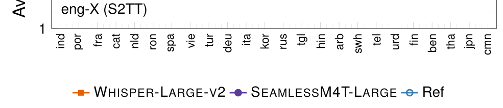
图Figure 10: Language Direction level mean XSTS scores per direction for S2TT modality, after calibration. Bootstrapped 95% CI is typically within ∼±0.1.
图 10：S2TT 模态下、按语言方向校准后的每方向平均 XSTS 分数。Bootstrap 95% 置信区间通常在 ±0.1 内。
54 5Average XSTS (calib.)
53 5 平均 XSTS（校准后）
4 3 2X-eng (S2ST)1ita rus cat nld ind hin deu spa fra ron por
（XSTS 结果图（S2ST）：X-eng 方向各语种（ita、rus、cat、nld、ind、hin、deu、spa、fra、ron、por）纵轴 1/2/3/4 分，5 Average XSTS（calib.）。）
5Average XSTS (calib.)
53 5 平均 XSTS（校准后）
4 3 2eng-X (S2ST)1ita cat hin deu ben spa fra tur por ron cmn tgl tel fin jpn tha kor vie ben swh tur urd arb cmn fin tel tgl nld jpn vie rus tha ind kor swh arb urd WHISPER-LARGE-V2 +YOURTTS SEAMLESSM4T-LARGE Ref
（表格/图内数值行，原始数据照录） （原始语料/表格数据照录） ita cat hin deu ben spa fra tur por ron cmn tgl tel fin jpn tha kor vie ben swh tur urd arb cmn fin tel tgl nld jpn vie rus tha ind kor swh arb urd WHISPER-LARGE-V2 +YOURTTS SEAMLESSM4T-LARGE Ref
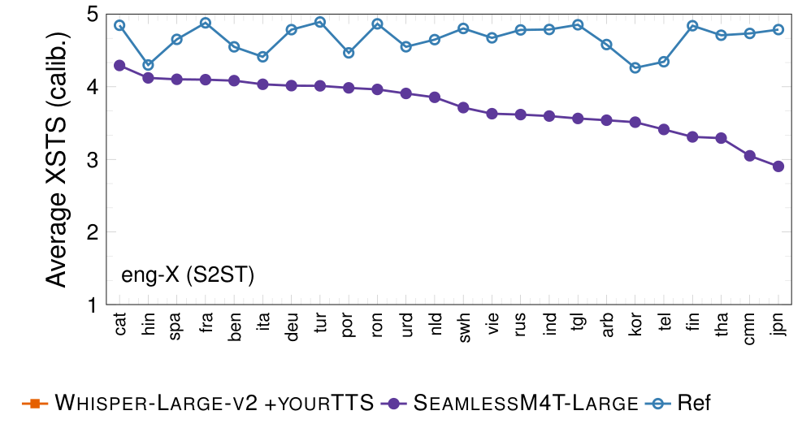
图Figure 11: Language Direction level mean XSTS scores per direction for S2ST modality, after calibration. Bootstrapped 95% CI is typically within ∼±0.1.
图 11：S2ST 模态下、按语言方向校准后的每方向平均 XSTS 分数。Bootstrap 95% 置信区间通常在 ±0.1 内。
When averaging over language directions, SeamlessM4T-Large demonstrates superior performance on both average XSTS score and percentage of sentences above XSTS thresholds of 3 and 4 compared to the Whisper-Large-v2’s baseline on X–eng (see Table 29).
在语言方向上取平均后，X–eng 上 SeamlessM4T-Large 在平均 XSTS 分数以及 XSTS ≥3、≥4 的句子百分比两项上均优于 Whisper-Large-v2 基线（见 Table 29）。
We also note generally higher performance in the eng–X direction compared to the X–eng direction. From the automatic results in section 4.4.2, we observed that the higher performance in one direction or the other varies depending on the task (S2TT, S2ST, or T2TT). For S2TT, in terms of spBLEU and Blaser 2.0 (see Table 18), even when averaging over a larger set of languages, superior performance in eng–X compared to X–eng holds. We offer a few possible explanations for this phenomenon. For example, speech encoding may be a more complicated task than speech or text decoding. If this is the case, better performance in English speech encoding could contribute to higher performance in the eng–X direction. Data-wise, a plausible explanation could be a difference in audio quality of Fleurs recordings for different languages (e.g., English source sentence audio quality may have been higher, inflating the eng–X scores), though evidence for this is only anecdotal.
我们还注意到：eng–X 方向的表现普遍高于 X–eng 方向。从 4.4.2 节的自动结果看，「哪一方向更优」因任务（S2TT、S2ST 或 T2TT）而异。对 S2TT，从 spBLEU 与 Blaser 2.0（见 Table 18）看，即使在更大语言集合上取平均，eng–X 优于 X–eng 这一结论仍成立。我们对这一现象给出几种可能解释。例如，语音编码可能是比语音或文本解码更复杂的任务。若是如此，更强的英语语音编码能力可能贡献于 eng–X 方向的更高表现。数据方面，一个合理解释是 Fleurs 不同语言录音音质的差异（例如英语源句音频质量可能更高，从而抬高了 eng–X 分数）——不过这仅有零星证据。
55方向Direction
System Avg. XSTS (S2ST)
表头：System / Avg.（后续照原文）。（页码行：2。）
% 3+ % 4+eng–X Human reference4.67 95.38 79.453.73 58.10 36.90Human reference4.66 95.20 78.89X–eng Whisper-Large-v2 +YourTTS4.04 71.52 56.183.87 60.61 46.05Table 31: For S2ST task: overall average XSTS human evaluation results into and out of English, over all 24 evaluated languages. Results were computed for each language direction (see Table 32 for full language-level results). %3+ and %4+ refer to the percent of a language’s evaluated sentences with median scores equal to or greater than 3 and 4 respectively. Avg number of items is identical to those presented in Table 29.
表 31：S2ST 任务：在全部 24 个评测语言上，译入与译出英语的整体平均 XSTS 人工评测结果。结果按语言方向计算（完整语言级结果见 Table 32）。%3+ 与 %4+ 分别指中位数分数 ≥3 与 ≥4 的评测句子占比。平均条目数与 Table 29 相同。
| those presented in Table 29. | ||
|---|---|---|
| results | for | |
| direction, where a Whisper-Large-v2 +YourTTSbaseline has been evaluated, we see that | ||
| exceptions of Bengali, Telugu, and Swahili (where SeamlessM4T-Large scores significantly | ||
| Large still performs reasonably well, with the majority of language directions scoring at or | ||
| above an XSTS score of 3. | ||
| XSTS S2ST performance of | ||
| one is S2TT performance, where SeamlessM4T-Large is roughly on par with Whisper- | ||
| Large-v2 and far surpasses performance in a few tested languages (most notably Swahili) in | ||
| both XSTS and automated metrics (Blaser 2.0 and BLEU), the other is S2ST performance | ||
| in terms automated metrics (Blaser | ||
| consistently outperforms Whisper-Large-v2 +YourTTSbaseline in the X–eng direction. | ||
| moving | ||
| by an average of 0.29 points for the SeamlessM4T-Large model but remained virtually | ||
| unchanged (a decrease of only 0.01 points) for the Whisper-Large-v2 +YourTTSbaseline. | ||
| tions much more frequently, by almost an order of magnitude, than Whisper-Large-v2 | ||
| +YourTTSgenerations (on X–eng direction, 206 SeamlessM4T-LargeS2ST generations | ||
| as | at | |
| Whisper-Large-v2 +YourTTSS2ST generations and 13 human reference items; in fra | ||
| (X–eng) for example, more than 10% of | ||
| audio issues by at least one annotator). | ||
| least one annotator does not increase SeamlessM4T-Large XSTS scores appreciably (only | ||
| 3 languages X–eng have XSTS score increases of slightly more than 0.1 when audio issue | ||
| items are removed, and the rest have XSTS increases of less than 0.04), but high incidence of | ||
| reported “audio issues” | ||
| performance decrease of | ||
| 56 |
S2ST 任务的 XSTS 结果XSTS results for S2ST task
Figure 11 shows aggregate, language-level XSTS scores for the S2ST task, which are also presented in Table 32 and summarized in Table 31. In the X–eng direction, where a Whisper-Large-v2 +YourTTSbaseline has been evaluated, we see that XSTS scores for SeamlessM4T-Large tend to lag behind the baseline, with the notable exceptions of Bengali, Telugu, and Swahili (where SeamlessM4T-Large scores significantly higher than the Whisper-Large-v2 +YourTTSbaseline). In aggregate, SeamlessM4T- Large still performs reasonably well, with the majority of language directions scoring at or above an XSTS score of 3.
Figure 11 给出 S2ST 任务在语言级聚合的 XSTS 分数；完整结果亦见 Table 32，并在 Table 31 中汇总。在 X–eng 方向（已评测 Whisper-Large-v2 +YourTTS 基线），我们看到 SeamlessM4T-Large 的 XSTS 分数普遍落后于基线；显著例外是 Bengali、Telugu 与 Swahili（这些语言上 SeamlessM4T-Large 显著高于 Whisper-Large-v2 +YourTTS 基线）。总体上，SeamlessM4T-Large 仍表现尚可：大多数语言方向的 XSTS 分数都在 3 或以上。
Direction Lang XSTS (calibrated) % XSTS 3+ % XSTS 4+ Items Seamls1 Wspr2 Hum3 Seamls Wspr Hum Seamls Wspr Hum eng–X arb
（表格/图内数值行，原始数据照录） （原始语料/表格数据照录） Direction Lang XSTS (calibrated) % XSTS 3+ % XSTS 4+ Items Seamls1 Wspr2 Hum3 Seamls Wspr Hum Seamls Wspr Hum eng–X arb
3.55 – 4.59 51.5 – 95.4 24.9 – 74.6 410ben4.09 – 4.56 80.4 – 96.8 41.0 – 67.9 629cat4.3 – 4.85 77.7 – 98.3 64.3 – 90.9 638cmn3.06 – 4.74 31.4 – 98.3 7.7 – 72.2 636deu4.02 – 4.79 63.4 – 97.9 29.4 – 72.4 612fin3.32 – 4.84 32.3 – 95.4 16.0 – 85.9 6324.1 – 4.88 64.5 – 98.5 44.2 – 87.2 538hin4.13 – 4.3 94.6 – 98.7 83.0 – 95.1 388ind3.6 – 4.8 58.1 – 98.2 35.5 – 93.0 544ita4.04 – 4.42 86.8 – 100.0 75.8 – 96.1 612jpn2.91 – 4.79 18.5 – 91.6 11.1 – 80.5 514kor3.52 – 4.27 40.2 – 77.0 13.8 – 39.9 356nld3.86 – 4.65 52.2 – 90.4 32.8 – 58.8 335por3.99 – 4.47 81.6 – 99.1 70.7 – 94.6 632ron3.97 – 4.87 63.3 – 97.1 42.2 – 89.2 619rus3.62 – 4.78 40.4 – 93.6 29.5 – 75.0 597spa4.11 – 4.66 64.2 – 96.5 47.2 – 63.7 623swh3.72 – 4.8 45.1 – 91.6 34.8 – 84.5 466tel3.42 – 4.35 60.0 – 91.9 24.0 – 61.8 442tha3.3 – 4.72 46.7 – 95.6 21.5 – 86.2 643tur4.02 – 4.89 65.4 – 98.8 32.9 – 87.8 566urd3.91 – 4.56 71.7 – 94.3 40.3 – 71.0 283vie3.64 – 4.68 64.5 – 98.4 43.2 – 91.0 611X–eng arb3.91 3.94 4.61 62.2 68.0 96.1 48.5 50.7 75.6 410ben3.92 3.05 4.57 68.0 43.7 96.5 38.2 15.1 69.6 629cat4.34 4.63 4.86 77.7 88.7 98.4 68.8 82.4 91.4 638cmn3.62 3.98 4.7 51.1 67.6 97.0 26.7 36.6 68.6 636deu4.29 4.56 4.77 69.9 85.0 95.6 49.3 60.0 72.5 612fin3.69 3.62 4.82 44.3 44.9 94.6 33.1 29.1 84.7 6324.43 4.75 4.87 75.1 92.2 98.3 64.5 80.9 85.7 538hin4.19 4.18 4.32 95.6 95.6 99.0 88.4 89.7 95.4 388ind4.02 4.38 4.78 67.3 84.2 97.6 57.2 76.1 92.5 544ita4.02 4.4 4.41 82.0 98.4 99.3 76.3 96.4 96.1 612jpn3.17 3.84 4.81 26.7 51.0 92.8 20.2 39.9 81.3 514kor3.53 4.07 4.32 40.4 66.0 82.0 18.5 37.1 40.7 356nld4.16 4.38 4.63 58.5 71.9 89.6 49.9 54.6 55.8 335por3.94 4.48 4.49 74.7 98.7 99.4 70.1 96.2 95.9 632ron4.15 4.44 4.84 67.9 81.1 96.4 52.0 65.9 86.9 619rus4.06 4.66 4.78 55.4 82.6 92.5 46.1 74.2 76.2 597spa4.15 4.79 4.62 65.2 93.4 95.7 52.5 83.6 61.2 623swh3.7 1.63 4.76 41.2 1.3 89.7 32.6 0.9 80.0 466tel3.87 3.37 4.39 72.6 58.1 94.8 44.3 30.1 62.9 442tha3.42 3.51 4.72 48.8 56.0 95.6 31.9 33.4 86.6 643tur3.91 4.47 4.86 57.8 81.3 97.3 37.1 62.4 85.5 566urd3.84 3.92 4.56 66.8 72.4 92.6 40.6 48.4 72.1 283vie3.4 3.91 4.69 53.7 73.0 98.4 37.6 57.8 92.5 6111 SeamlessM4T-Large 2 Whisper-Large-v2 3 Human reference
（表格/图内数值行，原始数据照录） （原始语料/表格数据照录） 1 SeamlessM4T-Large 2 Whisper-Large-v2 3 Human reference
Table 32: Full calibrated XSTS S2ST results; bootstrapped 95% CI widths are ∼±0.1 on average. %3+ and %4+ refer to the percent of a language’s evaluated sentences with median (uncalibrated) XSTS scores equal to or greater than 3 and 4 respectively.
表 32：完整校准后的 XSTS S2ST 结果；Bootstrap 95% 置信区间宽度平均约 ±0.1。%3+ 与 %4+ 分别指某语言被评句子中、（未校准）中位 XSTS ≥3 与 ≥4 的百分比。
| XSTS (calibrated) | % XSTS 3+ | |||||
|---|---|---|---|---|---|---|
| arb | 3.55 | – | 4.59 | 51.5 | – | 95.4 |
| ben | 4.09 | – | 4.56 | 80.4 | – | 96.8 |
| cat | 4.3 | – | 4.85 | 77.7 | – | 98.3 |
| cmn | 3.06 | – | 4.74 | 31.4 | – | 98.3 |
| deu | 4.02 | – | 4.79 | 63.4 | – | 97.9 |
| fin | 3.32 | – | 4.84 | 32.3 | – | 95.4 |
| fra | 4.1 | – | 4.88 | 64.5 | – | 98.5 |
| hin | 4.13 | – | 4.3 | 94.6 | – | 98.7 |
| ind | 3.6 | – | 4.8 | 58.1 | – | 98.2 |
| ita | 4.04 | – | 4.42 | 86.8 | – | 100.0 |
| jpn | 2.91 | – | 4.79 | 18.5 | – | 91.6 |
| kor | 3.52 | – | 4.27 | 40.2 | – | 77.0 |
| nld | 3.86 | – | 4.65 | 52.2 | – | 90.4 |
| por | 3.99 | – | 4.47 | 81.6 | – | 99.1 |
| ron | 3.97 | – | 4.87 | 63.3 | – | 97.1 |
| rus | 3.62 | – | 4.78 | 40.4 | – | 93.6 |
| spa | 4.11 | – | 4.66 | 64.2 | – | 96.5 |
| swh | 3.72 | – | 4.8 | 45.1 | – | 91.6 |
| tel | 3.42 | – | 4.35 | 60.0 | – | 91.9 |
| tha | 3.3 | – | 4.72 | 46.7 | – | 95.6 |
| tur | 4.02 | – | 4.89 | 65.4 | – | 98.8 |
| urd | 3.91 | – | 4.56 | 71.7 | – | 94.3 |
| vie | 3.64 | – | 4.68 | 64.5 | – | 98.4 |
| arb | 3.91 | 3.94 | 4.61 | 62.2 | 68.0 | 96.1 |
| ben | 3.92 | 3.05 | 4.57 | 68.0 | 43.7 | 96.5 |
| cat | 4.34 | 4.63 | 4.86 | 77.7 | 88.7 | 98.4 |
| cmn | 3.62 | 3.98 | 4.7 | 51.1 | 67.6 | 97.0 |
| deu | 4.29 | 4.56 | 4.77 | 69.9 | 85.0 | 95.6 |
| fin | 3.69 | 3.62 | 4.82 | 44.3 | 44.9 | 94.6 |
| fra | 4.43 | 4.75 | 4.87 | 75.1 | 92.2 | 98.3 |
| hin | 4.19 | 4.18 | 4.32 | 95.6 | 95.6 | 99.0 |
| ind | 4.02 | 4.38 | 4.78 | 67.3 | 84.2 | 97.6 |
| ita | 4.02 | 4.4 | 4.41 | 82.0 | 98.4 | 99.3 |
| jpn | 3.17 | 3.84 | 4.81 | 26.7 | 51.0 | 92.8 |
| kor | 3.53 | 4.07 | 4.32 | 40.4 | 66.0 | 82.0 |
| nld | 4.16 | 4.38 | 4.63 | 58.5 | 71.9 | 89.6 |
| por | 3.94 | 4.48 | 4.49 | 74.7 | 98.7 | 99.4 |
| ron | 4.15 | 4.44 | 4.84 | 67.9 | 81.1 | 96.4 |
| rus | 4.06 | 4.66 | 4.78 | 55.4 | 82.6 | 92.5 |
| spa | 4.15 | 4.79 | 4.62 | 65.2 | 93.4 | 95.7 |
| swh | 3.7 | 1.63 | 4.76 | 41.2 | 1.3 | 89.7 |
| tel | 3.87 | 3.37 | 4.39 | 72.6 | 58.1 | 94.8 |
| tha | 3.42 | 3.51 | 4.72 | 48.8 | 56.0 | 95.6 |
| tur | 3.91 | 4.47 | 4.86 | 57.8 | 81.3 | 97.3 |
| urd | 3.84 | 3.92 | 4.56 | 66.8 | 72.4 | 92.6 |
| vie | 3.4 | 3.91 | 4.69 | 53.7 | 73.0 | 98.4 |
57 -4 -3.5 -3 -2.5 -2 -1.5 -1 -0.5 0 0.5 1 1.5 2 2.5 3 3.5 4 0 2,000 4,000 6,000 8,000S2ST XSTS - S2TT XSTS Number of items SEAMLESSM4T-LARGE WHISPER-LARGE-V2 (+YOURTTS)
（表格/图内数值行，原始数据照录） （原始语料/表格数据照录） S2ST XSTS - S2TT XSTS Number of items SEAMLESSM4T-LARGE WHISPER-LARGE-V2 (+YOURTTS)
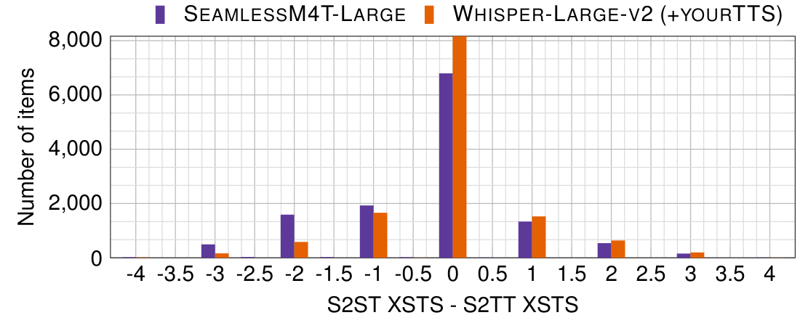
图Figure 12: XSTS score differences between S2ST and S2TT generations at the item level. A higher proportion of SeamlessM4T-LargeS2ST generations received XSTS scores that are 2 or more points behind the S2TT generation compared to Whisper-Large-v2 (+YourTTS).
图 12：条目级 S2ST 与 S2TT 生成的 XSTS 分差。相比 Whisper-Large-v2（+YourTTS），SeamlessM4T-Large 的 S2ST 生成中，XSTS 落后 S2TT 生成 2 分及以上的比例更高。
S2ST 输出中的截断与遗漏Truncation and omission in S2ST output
Figure 12 shows a histogram of performance deltas between S2ST and S2TT generations for both SeamlessM4T-Large and WhisperLarge-v2 (+YourTTS). We see that SeamlessM4T-Large has a higher proportion of items with S2ST generations 2 or more XSTS points behind the S2TT generation.
Figure 12 给出 SeamlessM4T-Large 与 Whisper-Large-v2（+YourTTS）在 S2ST 与 S2TT 生成之间性能差的直方图。可以看到，SeamlessM4T-Large 有更高比例的条目：其 S2ST 生成的 XSTS 落后 S2TT 生成 2 分或更多。
These observations motivated a small-scale inspection of 50 randomly sampled items (25 generations from SeamlessM4T-Large and 25 generations from Whisper-Large-v2 +YourTTS) where the median XSTS score was 5 for the S2TT generation but less than 4 for the S2ST generation. We discovered that half of the sampled items in the WhisperLarge-v2 +YourTTSgenerations had poor S2TT translation quality but still received high marks. In the SeamlessM4T-Large sample, we similarly found that about half of the sampled items had a poor S2TT translation quality but still received a high score for the S2TT translation. Note that such a high proportion of XSTS scores not reflecting underlying performance in this inspection is not particularly surprising; we are conditioning on a score mismatch between modalities, and one common reason for a score mismatch is an errant score. However, in addition to this, half of the samples had the end of the S2TT translation truncated in the generated S2ST audio (which did not occur in the sample of Whisper-Large-v2 +YourTTSgenerations). Truncations may have had a small impact on automated measures like ASR-BLEU but a large impact on the underlying meaning, and this may be reflected in the XSTS scores. The impact of a truncation or omission likely varies depending on which words are truncated or omitted; the distribution of performance deltas shown in Figure 12 seem consistent with a mix of both minor and major impacts to underlying meaning.
这些观察促使我们对 50 个随机采样条目做小规模人工检查（25 条来自 SeamlessM4T-Large，25 条来自 Whisper-Large-v2 +YourTTS），条件是：S2TT 生成的 XSTS 中位数为 5，但 S2ST 生成不足 4。我们发现：在 Whisper-Large-v2 +YourTTS 的生成样本中，有一半条目 S2TT 翻译质量很差，却仍得了高分。在 SeamlessM4T-Large 样本中，我们同样发现约一半条目 S2TT 翻译质量差，但 S2TT 翻译仍获高分。注意：此次检查中如此高比例的 XSTS 分数不反映真实表现并不特别意外——我们是在「跨模态分数不匹配」的条件下采样，而分数不匹配的常见原因之一就是分数本身出错。但除此之外，一半样本中 S2TT 翻译的结尾在生成的 S2ST 音频里被截断（这在 Whisper-Large-v2 +YourTTS 的样本中未出现）。截断对 ASR-BLEU 等自动指标影响可能较小，但对底层语义影响很大，而 XSTS 分数可能正反映了这一点。截断或遗漏的影响很可能取决于被截断/遗漏的是哪些词；Figure 12 所示的性能差分布与「对底层语义既有轻微也有重大影响」的混合情形相符。
If truncations are the predominant reason behind the drop in XSTS scores for SeamlessM4T- Large in the S2ST task, one possible aggravating factor may be recency bias: due to truncations being the most recent effect an annotator observes, their perceived importance on translation quality may be higher. This may be especially true in the S2ST task, where simultaneous comparison of source and target is difficult due to both being in the speech modality; if cognitive load is too high this may reduce an annotator’s ability to holistically
（表格/图内数值行，原始数据照录） （原始语料/表格数据照录） If truncations are the predominant reason behind the drop in XSTS scores for SeamlessM4T- Large in the S2ST task, one possible aggravating factor may be recency bias: due to truncations being the most recent effect an annotator observes, their perceived importance on translation quality may be higher.（页码行：2。）
58S2TT X-eng S2ST X-eng5 4XSTS3 2 0 10 20 30 40 50 1Duration of source audio (seconds)5 4 3 2 0 10 20 30 40 50 1Duration of source audio (seconds) SEAMLESSM4T-LARGE WHISPER-LARGE-V2 WHISPER-LARGE-V2 + YOURTTS
（表格/图内数值行，原始数据照录） （原始语料/表格数据照录） Duration of source audio (seconds) SEAMLESSM4T-LARGE WHISPER-LARGE-V2 WHISPER-LARGE-V2 + YOURTTS
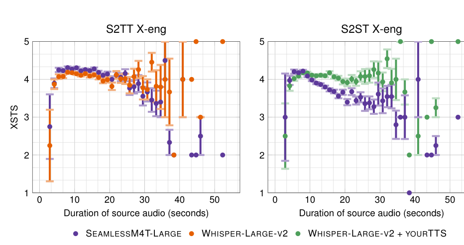
图Figure 13: S2TT and S2ST item-level XSTS scores as a function of the duration of the source speech audio file. Error-bars are standard errors around the mean in each source duration bucket.
图 13：S2TT 与 S2ST 条目级 XSTS 分数随源语音音频时长的变化。误差线为各源时长桶内均值的标准误。
reflect on the quality of the entire translation and may further exacerbate the effect of recency bias.
（接续）……整个翻译质量的能力，并进一步加剧近因偏差的影响。
S2TT 与 S2ST 性能随源音频时长的变化S2TT and S2ST performance as a function of source audio duration
Figure 13 shows a breakdown of XSTS score by duration of source audio for both S2TT and S2ST tasks for SeamlessM4T-Large and Whisper-Large-v2 (+YourTTS). We see that for the S2TT task, SeamlessM4T-Large provides superior performance over WhisperLarge-v2 on average item-level XSTS for most source audio durations, though performance for both models tends to decline for as a function of source audio duration for audios longer than ∼10 seconds. On the S2ST task, SeamlessM4T-Large provides superior performance over Whisper-Large-v2 +YourTTSfor shorter audio durations (≲8 s) but SeamlessM4T-Large performance falls off rapidly for longer source audio durations compared to Whisper-Large-v2 +YourTTSperformance which remains relatively stable for a broader range of source audio durations. This is consistent with the hypothesis that truncations and omissions are primarily responsible for the XSTS performance gap between SeamlessM4T-Large and Whisper-Large-v2 +YourTTSdespite clear superiority of SeamlessM4T-Large on automated metrics, as longer source audios may more likely to suffer from truncations and omissions in the target audio.
Figure 13 给出 SeamlessM4T-Large 与 Whisper-Large-v2（+YourTTS）在 S2TT 与 S2ST 两个任务上、按源音频时长细分的 XSTS 分数。可以看到，在 S2TT 任务上，SeamlessM4T-Large 在多数源音频时长下的条目级平均 XSTS 都优于 Whisper-Large-v2；不过当音频长于约 10 秒时，两个模型的性能都随时长增加而下降。在 S2ST 任务上，SeamlessM4T-Large 在较短音频时长（≲8 s）时优于 Whisper-Large-v2 +YourTTS，但在更长源音频时长下其性能迅速下滑；相比之下 Whisper-Large-v2 +YourTTS 在更宽的源音频时长范围内保持相对稳定。这与「截断与遗漏是 SeamlessM4T-Large 和 Whisper-Large-v2 +YourTTS 之间 XSTS 差距的主因」这一假设一致——尽管 SeamlessM4T-Large 在自动指标上明显占优，但更长源音频更可能在目标音频中遭受截断与遗漏。
MOS 结果MOS Results
Figure 14 presents language-level results for both eng–X and X–eng translation directions on the “naturalness” aspect of the MOS protocol.
Figure 14 给出 eng–X 与 X–eng 两个翻译方向在 MOS 协议「自然度」维度上的语言级结果。
In the X–eng direction, SeamlessM4T-Large shows superior performance in the naturalness MOS aspect compared to Whisper-Large-v2 +YourTTS. The consistency of MOS score across input languages in the X–eng direction is likely due to two major factors. One, the input speech is unlikely to affect output speech quality with respect to any of the aspects measured by MOS. Two, since MOS requires only a review of the target audio, the items from each input language were evaluated by the same set of 31 annotators. With each annotator scoring a similar fraction of items for each input language, the annotator bias effects are similar across source languages.
X–eng 方向，SeamlessM4T-Large 在 MOS 自然度上优于 Whisper-Large-v2 + YourTTS。X–eng 方向 MOS 分数在输入语言间的一致性可能源于两个主要因素。其一，输入语音不太可能影响 MOS 任一维度上的输出语音质量。其二，由于 MOS 只需审听目标音频，来自各输入语言的条目都由同一组 31 位标注者评测。每位标注者对每个输入语言评分相似比例的条目，因此标注者偏差在各源语言间相似。
59 5Avg MOS (naturalness)4 3 2X-eng (S2ST)1rus fra arb cmn5Avg MOS (naturalness)4 3 2eng-X (S2ST)1cmn tel ita fin nld ben spa fra swh por urd tel hin spa tur tgl tha rus kor vie hin jpn ind cat deu tur arb ron WHISPER-LARGE-V2 SEAMLESSM4T-LARGE Ref
（表格/图内数值行，原始数据照录） （原始语料/表格数据照录） cmn tel ita fin nld ben spa fra swh por urd tel hin spa tur tgl tha rus kor vie hin jpn ind cat deu tur arb ron WHISPER-LARGE-V2 SEAMLESSM4T-LARGE Ref
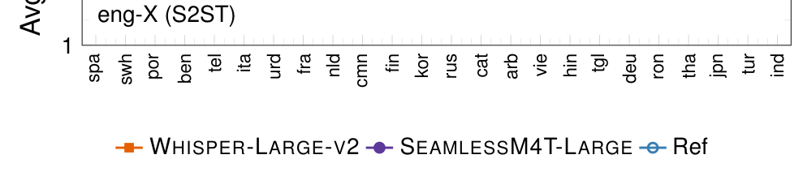
图Figure 14: Language Direction level mean MOS (naturalness) scores per direction for S2ST modality, after calibration. Bootstrapped 95% CI widths are ∼±0.1 on average.
图 14：S2ST 模态下、按语言方向校准后的每方向 MOS（自然度）平均分。Bootstrap 95% 置信区间宽度平均约 ±0.1。
60模态Modality
Direction Metric Pearson Spearman S2TT eng–X Blaser 2.0
（表格/图内数值行，原始数据照录） （原始语料/表格数据照录） Direction Metric Pearson Spearman S2TT eng–X Blaser 2.0
0.750 0.5050.053 0.3550.923 0.8710.822 0.776All Blaser 2.00.913 0.8270.626 0.625S2ST eng–X Blaser 2.00.727 0.6750.154 0.2920.854 0.7560.692 0.651All Blaser 2.00.810 0.7360.514 0.561Table 33: Comparison of language-level correlations between automated metrics and XSTS. Blaser 2.0 provides superior correlations with human metrics in all directions, and modalities, with a particular improvement in correlations for eng–X directions. These results hold for both Pearson and Spearman correlation coefficients.
表 33：自动指标与 XSTS 在语言级别的相关性对比。Blaser 2.0 在所有方向与模态上与人工指标的相关性都更优，在 eng–X 方向上的相关性提升尤为明显。Pearson 与 Spearman 相关系数下结论一致。
| 4, and | 11 | received | naturalness | scores | above | 3. | we | also | measured | ||
| “Clarity of Speech” and “Sound Quality” MOS aspects. | We find that for languages where both | ||||||||||
| Whisper-Large-v2 +YourTTSand SeamlessM4T-Large were measured (all X–eng), | |||||||||||
| SeamlessM4T-Large averaged 0.67 points higher in sound quality and 0.79 points higher in | |||||||||||
| clarity of speech over Whisper-Large-v2 +YourTTS(SeamlessM4T-Large surpassed | |||||||||||
| the human reference in the “clarity of speech” | and “sound quality” | aspects for all 8 X–eng | |||||||||
| languages measured). | In the eng–X direction, for the “clarity of speech” | aspect, 20 languages | |||||||||
| scored above a 3 for SeamlessM4T-Large, with 4 languages scoring above a 4; for the | |||||||||||
| “sound quality” | aspect, all languages scored above a 3, with 13 languages scoring above a 4. | ||||||||||
| Correlations | BLEU | and | XSTS | In Table 33 and visualized in | |||||||
| Figure 15, we compare the strength of correlations between automated metrics (ASR-BLEU | |||||||||||
| ASR-BLEU and BLEU | |||||||||||
| are | computed | corpus | language | level | Blaser | scores | are | computed | |||
| by | averaging | sentence-level | (supervised) | Blaser | 2.0 | scores | evaluation | set. | |||
| automated metrics are calculated using only the items sent for human evaluation with XSTS | |||||||||||
| 2.0 scores on | |||||||||||
| the language level differed only slightly from those used to generate Tables 15 and 14. | |||||||||||
| We | find | both | with | Spearman | and | Pearson | correlation | coefficients, | Blaser | ||
| has a | superior | correlation | XSTS | over | ASR-BLEU | (for | task) | and | BLEU | ||
| 2.0 correlates much better with XSTS in the eng–X direction in | |||||||||||
| particular. | |||||||||||
| 61 |
ASR-BLEU、BLEU 与 XSTS 的相关性Correlations between ASR-BLEU, BLEU and XSTS
We find that, both with Spearman and Pearson correlation coefficients, Blaser 2.0 has a superior correlation with XSTS over ASR-BLEU (for S2ST task) and BLEU (for S2TT task), and Blaser 2.0 correlates much better with XSTS in the eng–X direction in particular.
我们发现：无论 Spearman 还是 Pearson 相关系数，Blaser 2.0 与 XSTS 的相关性都优于 ASR-BLEU（S2ST）与 BLEU（S2TT），且 Blaser 2.0 与 XSTS 的相关性在 eng–X 方向尤为更高。
SEAMLESSM4T-LARGE (eng-X) SEAMLESSM4T-LARGE (X-eng) WHISPER-LARGE-V2 +YOURTTS (X-eng)5mean(median(XSTS)) (calib.)
（图内容：SEAMLESSM4T-LARGE (eng-X)、SEAMLESSM4T-LARGE (X-eng)、WHISPER-LARGE-V2 + YOURTTS (X-eng)；纵轴 mean(median(XSTS))（已校准），刻度至 5。页码 61。）
4 3 2Spearman R: 0.561 (0.651 X-eng) Spearman R: 0.736 (0.756 X-eng)
（表格/图内数值行，原始数据照录） （原始语料/表格数据照录） Spearman R: 0.561 (0.651 X-eng) Spearman R: 0.736 (0.756 X-eng)
1 0 20 40ASR-BLEU (S2ST) mean(median(XSTS)) (calib.)
（页码行：2。）
3 4BLASER 2.0 (S2ST) Spearman R: 0.625 (0.776 X-eng) Spearman R: 0.827 (0.871 X-eng)
（表格/图内数值行，原始数据照录） （原始语料/表格数据照录） BLASER 2.0 (S2ST) Spearman R: 0.625 (0.776 X-eng) Spearman R: 0.827 (0.871 X-eng)
20 40BLEU (S2TT)3 4BLASER 2.0 (S2TT)
（表格/图内数值行，原始数据照录） （原始语料/表格数据照录） BLASER 2.0 (S2TT)
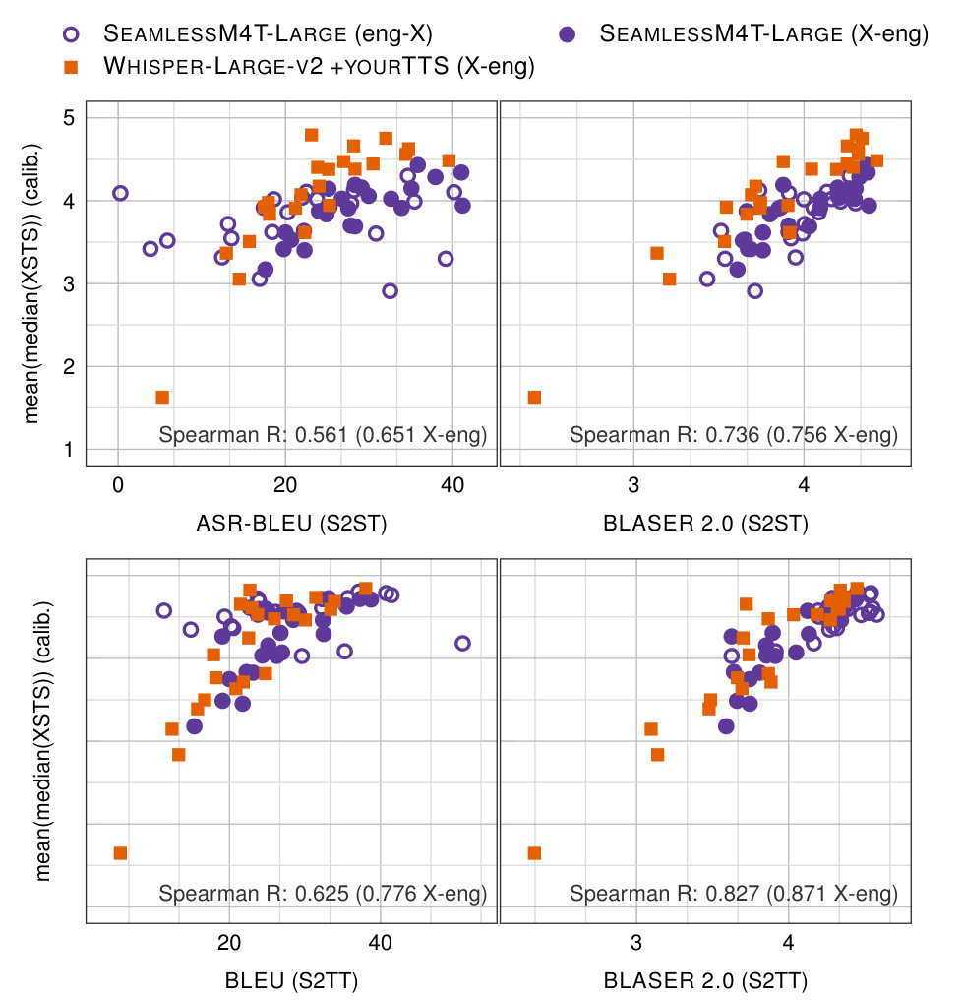
图Figure 15: Correlations between XSTS and ASR-BLEU and Blaser 2.0 for S2ST task and between XSTS and BLEU and Blaser 2.0 for S2TT task. Blaser 2.0 offers superior correlation with XSTS, most notably for eng–X directions where ASR-BLEU and BLEU correlations are much weaker than for X–eng directions.
图 15：S2ST 任务上 XSTS 与 ASR-BLEU、Blaser 2.0 的相关性，以及 S2TT 任务上 XSTS 与 BLEU、Blaser 2.0 的相关性。Blaser 2.0 与 XSTS 的相关性更好，在 eng–X 方向上尤为明显——该方向 ASR-BLEU 与 BLEU 的相关性远弱于 X–eng 方向。
625.2.4 Limitations Test set limitations The Fleurs [Conneau et al., 2022] test set is limited in that the different language pairs contain slightly different sets of sentences. Due to the limitations in both the dataset (which contains a maximum of 3 speakers) and timing and cost considerations on the human evaluation front (we evaluated a maximum of two speakers per sentence), we have a lack of diversity in our speaker set per language, which may introduce bias relative to a test set with a larger number of speakers. Limited sample size of human annotators per language We only have a maximum of 5 (but typically 3) annotator evaluations per sentence for each language in our XSTS evaluations. Relatively small samples of annotators mean annotator bias is important to consider. We try to mitigate this by (1) using the median score per sentence for each language to be robust to outliers, (2) using bootstrap re-sampling of annotator scores to estimate language score uncertainty due to finite annotators, and (3) approximate and correct annotator bias with a cross-lingual calibration set. For MOS, several language directions only have a single annotator per item, with no calibration set—this exacerbates issues related to annotator bias. Challenges of implementing reliable human measures of performance Obtaining human measures of translation performance offers several advantages over automated metrics (e.g. while BLEU-like metrics are trivial to “game”, humans are not as easily fooled, and humans are better judges of target translations of high quality but for which word content differs from available reference translations), but human measures of translation quality suffer from their own limitations that are not shared by automated metrics. XSTS was designed to mitigate some of these limitations (annotator bias and variance) but, e.g., recency bias and other human biases may still persist. We continue to develop additional recommendations and clarifications, improve annotator trainings and reduce cognitive load, but obtaining reliable human measures of translation quality continues to be an active area of research and development.
（表格/图内数值行，原始数据照录） （原始语料/表格数据照录） 5.2.4 Limitations Test set limitations The Fleurs [Conneau et al., 2022] test set is limited in that the different language pairs contain slightly different sets of sentences.由于数据集（每种语言最多 3 位说话人）与人工评测的时间、成本约束（每句最多评测两位说话人），每种语言的说话人集合缺乏多样性，可能相对含更多说话人的测试集引入偏差。每种语言人工标注者样本量有限 在 XSTS 评测中，每种语言每句最多只有 5 位（通常 3 位）标注者评分。标注者样本相对较小意味着必须重视标注者偏差。我们通过以下方式缓解：(1) 对每种语言使用每句的中位数分数以对离群值稳健；(2) 用 bootstrap 重采样标注者分数估计有限标注者带来的语言分数不确定性；(3) 用跨语言校准集近似并校正标注者偏差。对 MOS，若干语言方向每条仅一位标注者且无校准集——这进一步加剧标注者偏差问题。实施可靠人工性能度量的挑战 相比自动指标，人工度量翻译性能有若干优势（例如 BLEU 类指标很容易被「钻空子」，人则不易被蒙蔽；对用词与参考译文不同但质量很高的目标翻译，人是更好的评判者），但人工度量也有自动指标所没有的自身局限。XSTS 设计上可缓解部分这类局限（标注者偏差与方差），但近因偏差等其他人因偏差仍可能存在。我们继续提出补充建议与澄清、改进标注者培训并降低认知负担，但获得可靠的翻译质量人工度量仍是活跃的研发方向。
5.3 自动鲁棒性评测Automatic Robustness Evaluation
We evaluated model robustness against non-linguistic perturbations in the real-world speech inputs, including background noises and speaker variations. As reported in several other sections, we compare our model to Whisper-Large-v2.
我们评测模型对真实语音输入中非语言扰动的鲁棒性，包括背景噪声与说话人差异。如其他几节所报告的，我们把模型与 Whisper-Large-v2 对比。
5.3.1 Robustness Against Background Noises
5.3.1 对背景噪声的鲁棒性
相关工作Related work
实验框架Experimental framework
We build a replicable noise-robustness evaluation benchmark based on Fleurs ("noisy Fleurs”), which covers 102 languages, 2 speech tasks (S2TT and ASR), and various noise types (natural noises and music). To create simulated noisy
（表格/图内数值行，原始数据照录） （原始语料/表格数据照录） We build a replicable noise-robustness evaluation benchmark based on Fleurs ("noisy Fleurs”), which covers 102 languages, 2 speech tasks (S2TT and ASR), and various noise types (natural noises and music).（正文残句）为构造模拟噪声（后接原文）。
63S2TT with Natural Noise S2TT with Music30 30 20 20↑BLEU10 10 –20 –10 0 10 0 –20 –10 0 10 0SNR (dB) SNR (dB) ASR with Natural Noise ASR with Music
（图表标题：SNR (dB) / SNR (dB)；ASR with Natural Noise / ASR with Music。）
200 200 150 150↓WER100 100 50 50 –20 –10 0 10 0 –20 –10 0 10 0SNR (dB) SNR (dB) WHISPER-LARGE-V2 SEAMLESSM4T-LARGE
（表格/图内数值行，原始数据照录） （原始语料/表格数据照录） SNR (dB) SNR (dB) WHISPER-LARGE-V2 SEAMLESSM4T-LARGE
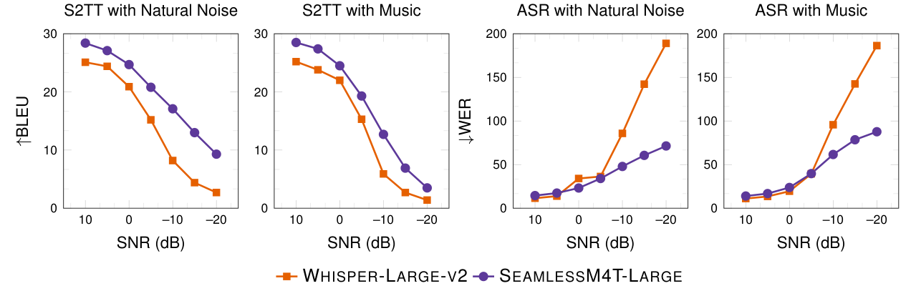
图Figure 16: Evaluation results of model robustness against background noises. We report average test BLEU and test WER over 4 languages (3 language families) for X–eng S2TT and ASR on Fleurs with low-to-high input noise level (high-to-low SNR). Simulated noises are sampled from MUSAN [Snyder et al., 2015] on the “noise” and “music” categories.
图 16：模型对背景噪声鲁棒性的评测结果。报告 X–eng S2TT 与 ASR 在 4 种语言（3 个语系）上的平均 test BLEU 与 test WER，输入噪声从低到高（SNR 从高到低）。模拟噪声采样自 MUSAN [Snyder et al., 2015] 的「noise」与「music」类别。
audios, we sampled audio clips from MUSAN [Snyder et al., 2015] on the “noise” and “music” categories, and mixed them with the original Fleurs speech audios under different signalto-noise ratio (SNR): 10, 5, 0, -5, -10, -15 and -20. We compare models by BLEU-SNR curves (for S2TT) or WER-SNR curves (for ASR), which illustrate the degree of model performance degradation when the noise level of speech inputs increases (i.e., when SNR decreases). Both SeamlessM4T-Large and Whisper-Large-v2 achieve high performance mostly in high-resource languages, where stress tests in the noisy speech setup are more necessary and informative. For low-resource languages, the clean speech setup is already challenging, let alone the noisy one. We hence focus on 4 high-resource languages (French, Spanish, Modern Standard Arabic, and Russian) from 3 different language families for our noise-robustness analysis on SeamlessM4T-Large and Whisper-Large-v2.
生成模拟噪声 63 音频时，我们从 MUSAN [Snyder et al., 2015] 的「noise」与「music」类别采样音频片段，按不同信噪比（SNR）混入原始 Fleurs 语音：10、5、0、-5、-10、-15、-20 dB。我们用 BLEU-SNR 曲线（S2TT）或 WER-SNR 曲线（ASR）对比模型——曲线展示语音输入噪声增大（即 SNR 下降）时模型性能下降的程度。SeamlessM4T-Large 与 Whisper-Large-v2 都主要在高资源语言上取得较高性能，这些语言上做噪声压力测试更必要、也更有信息量。对低资源语言，仅干净语音场景就已具挑战性，更不必说噪声场景。因此，我们在噪声鲁棒性分析中聚焦于 4 种来自 3 个不同语系的高资源语言（法语、西班牙语、现代标准阿拉伯语、俄语），评测对象为 SeamlessM4T-Large 与 Whisper-Large-v2 两个模型。
结果Results
Figure 16 shows the average test BLEU and test WER over the 4 languages for X–eng S2TT and ASR on Fleurs with low-to-high input noise level (high-to-low SNR). We see that both BLEU-SNR curves for SeamlessM4T-Large are consistently above those for Whisper-Large-v2. Similarly, SeamlessM4T-Large’s WER-SNR curves are consistently below Whisper-Large-v2’s ones. These suggest the superior robustness of SeamlessM4T-Large in noisy speaking environments. SeamlessM4T-Large outperforms Whisper-Large-v2 by an average of 33.3% and 42.2% over various noise types and noise levels for X–eng S2TT and ASR, respectively.
Figure 16 给出在 Fleurs 上、4 种语言的 X–eng S2TT 与 ASR 在输入噪声由低到高（SNR 由高到低）时的平均测试 BLEU 与测试 WER。可以看到，SeamlessM4T-Large 的两条 BLEU–SNR 曲线始终高于 Whisper-Large-v2。同样，SeamlessM4T-Large 的 WER–SNR 曲线始终低于 Whisper-Large-v2。这表明 SeamlessM4T-Large 在噪声说话环境中的鲁棒性更优。在多种噪声类型与噪声水平上，SeamlessM4T-Large 在 X–eng S2TT 与 ASR 上平均分别优于 Whisper-Large-v2 33.3% 与 42.2%。
5.3.2 Robustness Against Speaker Variations
5.3.2 对说话人差异的鲁棒性
相关工作Related work
实验设置Experimental setup
We follow Wang et al. [2020] to evaluate model robustness against speaker variations by calculating average by-group mean score and by-group coefficient of variation of an utterance-level quality metric. Instead of using BLEU as the quality metric, we used chrF, which has better stability at the utterance level. The calculation of both robustness metrics does not require explicit speaker subgroup labels. We grouped evaluation samples and corresponding utterance-level chrF scores by content (transcript), and then calculated the average by-group mean score chrFMS and average by-group coefficient of variation CoefVarMS defined as follows: g∈G Mean(g)
我们沿用 Wang et al. [2020]，通过计算句级质量指标的「按组平均值」与「按组变异系数」来评测模型对说话人差异的鲁棒性。质量指标我们用 chrF 而非 BLEU，因为 chrF 在句级更稳定。两个鲁棒性指标的计算都不需要显式的说话人子组标签。我们按内容（转写文本）把评测样本及对应句级 chrF 分数分组，然后计算按组平均分数 chrFMS 与按组变异系数 CoefVarMS，定义如下：g∈G Mean(g)
chrFMS = 1 |G|XCoefVarMS =
CoefVarMS = 1 |G′|
1|G′|
CoefVarMS = 1 |G′|
Xg∈G′StandardDeviation(g) Mean(g) where G is the set of sentence-level chrF scores grouped by content (transcript) and G′ = {g|g ∈G, |g| > 1, Mean(g) > 0}. The two metrics are complementary: chrFMS provides a normalized quality metric that, unlike conventional corpus-level metrics, takes speaker variations into consideration, while CoefVarMS provides a standardized measure of quality variance under speaker variations. For robustness analysis of SeamlessM4T-Large and Whisper-Large-v2, we conducted an out-of-domain evaluation on Fleurs on all its languages that have at least 40 content groups in the test sets.
StandardDeviation(g) Mean(g)，其中 G 是按内容（转写文本）分组的句级 chrF 分数集合，G′ = {g | g ∈ G, |g| > 1, Mean(g) > 0}。两个指标互补：chrFMS 是归一化的质量指标，与传统语料级指标不同，它把说话人差异纳入考虑；CoefVarMS 则是说话人差异下质量方差的标准化度量。为对 SeamlessM4T-Large 与 Whisper-Large-v2 做鲁棒性分析，我们在 Fleurs 上对测试集中至少含 40 个内容组的所有语言做了域外评测。
语言Languages
Average # Whisper-Large-v2 SeamlessM4T-Large (≥40 content groups) cont. groups chrFMS↑ CoefVarMS↓ chrFMS↑ CoefVarMS↓ X–eng S2TT for 77 langs
（表格/图内数值行，原始数据照录） （原始语料/表格数据照录） Average # Whisper-Large-v2 SeamlessM4T-Large (≥40 content groups) cont. groups chrFMS↑ CoefVarMS↓ chrFMS↑ CoefVarMS↓ X–eng S2TT for 77 langs
278 40.8 13.7 45.3 9.1ASR for 78 langs280 58.7 17.0 72.5 6.4Table 34: Evaluation results of model robustness against speaker variations. We report average by-group mean chrF (chrFMS) and average by-group coefficient of variation on chrF (CoefVarMS) on FleursX–engS2TT and ASR test sets.
表 34：模型对说话人差异的鲁棒性评测结果。在 Fleurs X–eng S2TT 与 ASR 测试集上报告按组平均 chrF（chrFMS）与按组 chrF 变异系数（CoefVarMS）。
| Results | Table | 34 | shows | the | chrFMS | and | CoefVarMS | of | SeamlessM4T-Large | |||||||
| and | Whisper-Large-v2 | on | Fleurs | X–eng | S2TT | and | ASR | test | sets. | We | see | that | ||||
| SeamlessM4T-Large outperforms Whisper-Large-v2 on CoefVarMS | by an average of | |||||||||||||||
| 49.4% over the 2 tasks. | Moreover, SeamlessM4T-Large outperforms Whisper-Large-v2 | |||||||||||||||
| on chrFMS | by an average of 18.3%. | These suggest the superior robustness of SeamlessM4T- | ||||||||||||||
| Large when it comes to speaker variations. | ||||||||||||||||
| 6. | Responsible | AI | ||||||||||||||
| In | line | with | our | expectations | build | systems | responsibly, | we | focus | our | efforts | on | the | |||
| evaluation of added toxicity and bias. | Both of these dimensions of responsible AI have drawn | |||||||||||||||
| 65 |
结果Results
We see that SeamlessM4T-Large outperforms Whisper-Large-v2 on CoefVarMS by an average of 49.4% over the 2 tasks. Moreover, SeamlessM4T-Large outperforms Whisper-Large-v2 on chrFMS by an average of 18.3%. These suggest the superior robustness of SeamlessM4T- Large when it comes to speaker variations.
可以看到，SeamlessM4T-Large 在 CoefVarMS 上于两项任务平均优于 Whisper-Large-v2 49.4%。此外，SeamlessM4T-Large 在 chrFMS 上平均优于 Whisper-Large-v2 18.3%。这表明在说话人差异方面，SeamlessM4T-Large 的鲁棒性更优。
6 负责任的 AIResponsible AI
In line with our expectations to build systems responsibly, we focus our efforts on the evaluation of added toxicity and bias. Both of these dimensions of responsible AI have drawn
本着负责任地构建系统的期待，我们把精力集中在新增毒性与偏见的评测上。负责任 AI 的这两个维度近来都引起了 65 分显著的科学关注（如 [Kiritchenko et al., 2021; Bender et al., 2021; Costa-jussà, 2019]）。
significant scientific attention in recent times (e.g., [Kiritchenko et al., 2021; Bender et al., 2021; Costa-jussà, 2019]). Moreover, the occurrence of these unintended errors or translation faults could adversely impact user experiences. Sustained attention devoted to such issues is, thus, vital to the safe deployment of our systems.
（表格/图内数值行，原始数据照录） （原始语料/表格数据照录） significant scientific attention in recent times (e.g., [Kiritchenko et al., 2021; Bender et al., 2021; Costa-jussà, 2019]).此外，这类非预期错误或翻译失误的出现会对用户体验造成负面影响。因此，对这类问题的持续关注对我们系统的安全部署至关重要。
Beyond these dimensions, we are also concerned with the concept of fairness. In contrast to the idea of robustness (as conceptualized in section 5.3.2), where the focus is on whether our system performance is affected by the varying qualities of a speaker’s voice, fairness in this section is more concerned about the content of the translation outputs. Fair outputs do not preference or skew towards particular demographics and tend to treat different groups somewhat equitably. We document the results of these evaluations to better direct mitigation efforts.
除这些维度外，我们还关注公平（fairness）这一概念。与鲁棒性（如第 5.3.2 节所定义）不同——鲁棒性关注系统性能是否受说话人音质差异影响——本节的公平更关注翻译输出的内容。公平的输出不偏好或偏向特定人群，倾向于较为公正地对待不同群体。我们记录这些评测结果，以更好地指导缓解工作。
6.1 定义Definitions
We begin by detailing how we define errors that arise from added toxicity and gender bias.
我们首先详细说明如何定义由新增毒性（added toxicity）与性别偏见引发的错误。
毒性Toxicity.
In their taxonomy of critical machine translation errors, [Sharou and Specia, 2022] define “deviation in toxicity” as “instances where the translation may incite hate, violence, profanity, or abuse against an individual or a group (a religion, race, gender, etc.) due to incorrect translations,” which “covers cases where toxicity is introduced into the translation when it is not in the source, deleted in the translation when it is in the source, mistranslated into different (toxic or not) words, or not translated at all (i.e., the toxicity remains in the source language or transliterated).” Our definition of added toxicity departs slightly from theirs in that it does not cover instances of untranslated toxic source content or of toxic source content deleted in the translation. To put it simplistically, added toxicity is the introduction of toxic elements not present in a source utterance.
在其严重机器翻译错误分类体系中，[Sharou and Specia, 2022] 把「毒性偏差」定义为「由于错误翻译，译文可能煽动对个人或群体（宗教、种族、性别等）的仇恨、暴力、亵渎或辱骂」的实例，它「涵盖以下情形：源文本无毒而译文被引入毒性；源文本有毒而译文将其删除；被误译为不同（有毒或无毒）的词；或根本未译（即毒性留在源语言或被音译）」。我们对「新增毒性」的定义与之略有差异：不涵盖未翻译的毒性源内容、也不涵盖译文删除源毒性的情形。简而言之，新增毒性是指在源话语中并不存在、却被引入的毒性元素。
性别偏见Gender Bias.
Another error with which responsible AI is concerned lies in the propagation and amplification of gender bias. In machine translation, gender bias is observed when translations show errors in linguistic gender determination despite the fact that there are sufficient gender clues in the source content for a system to infer the correct gendered forms. To illustrate this phenomenon, sentence (1) below does not contain enough linguistic clues for a translation system to decide which gendered form should be used when translating into a language where the word for doctor is gendered. Sentence (2), however, includes a gendered pronoun which most likely has the word doctor as its antecedent.
负责任 AI 关注的另一类错误在于性别偏见的传播与放大。在机器翻译中，性别偏见表现为：尽管源内容中存在足以让系统推断正确性别形式的性别线索，翻译仍在语言性别判定上出错。举例来说，下面的句子 (1) 不含足够语言线索，无法让翻译系统决定译入「doctor 一词带性别形式的语言」时应使用哪种性别形式。句子 (2) 则包含一个性别化代词，其先行词很可能就是 doctor。
1. I didn’t feel well, so I made an appointment with my doctor.
1.I didn't feel well, so I made an appointment with my doctor.
2. My doctor is very attentive to her patients’ needs.
2.My doctor is very attentive to her patients' needs.
Gender bias is observed when the system produces the wrong gendered form when translating sentence (2) into a language that uses distinct gendered forms for the word doctor. A single error in the translation of an utterance the like of sentence (1) would not be sufficient to conclude that gender bias exists in the model; doing so would take consistently observing one linguistic gender over another. It has previously been hypothesized that one possible source of gender bias is gender representation imbalance in large training and evaluation data sets, e.g. [Costa-jussà et al., 2022; Qian et al., 2022].
性别偏见表现为：把句子 (2) 译入「doctor 一词使用不同性别形式的语言」时，系统产出了错误的性别形式。类似句子 (1) 这种话语的翻译出现个别错误，不足以断定模型存在性别偏见；要下此结论，需要持续观察到系统偏向某一语言性别。此前已有研究假设：性别偏见的一个可能来源是大型训练与评测数据集中的性别表征失衡，如 [Costa-jussà et al., 2022; Qian et al., 2022]。
666.2 毒性Toxicity
Warning: this section contains examples that may be offensive to some.
警告：本节包含可能令部分人不适的示例。
6.2.1 Motivation
6.2.1 动机
背景Context
As mentioned above, added toxicity means introducing toxicity in the translation output not present in the input. This can be classified as a critical error; one that could lead users to distrust a translation system. As such, it is important to quantify how much toxicity our models add. We are also interested in combining added toxicity analysis with demographic bias analysis to determine whether added toxicity is generated more in certain demographic axes than in others.
如前所述，新增毒性指在翻译输出中引入了输入中并不存在的毒性内容。这可以被归类为严重错误——可能导致用户对翻译系统失去信任。因此，量化我们的模型添加了多少毒性非常重要。我们也希望把新增毒性分析与人口统计学偏见分析结合，以判断新增毒性是否在某些人口统计学维度上比其他维度更常出现。
相关工作Related work
提出的方法Proposed methodology
Inspired by ASR-BLEU, this work proposes using ASR-ETOX as a new metric to detect added toxicity in speech and evaluate added toxicity for SeamlessM4T’s S2ST capability. Essentially, this metric follows a cascaded framework by first deploying a standard ASR module (i.e., the same that it is used for ASR-BLEU as defined in Table 4), then the toxicity detection module, ETOX [Costa-jussà et al., 2023], which uses the Toxicity-200 word lists. For S2TT, the translated output can be directly evaluated with ETOX. In both cases (S2ST and S2TT), we measure added toxicity at the utterance/sentence level. We first compute toxicity detection for each input in the evaluation dataset and the corresponding output. Then we compare them and count a case as containing added toxicity only when the output value exceeds the one displayed by the input.
受 ASR-BLEU 启发，本工作提出用 ASR-ETOX 作为新指标来检测语音中的新增毒性，并评测 SeamlessM4T 的 S2ST 能力上的新增毒性。本质上，该指标采用级联框架：先部署标准 ASR 模块（即 Table 4 定义的 ASR-BLEU 所用模块），再用毒性检测模块 ETOX [Costa-jussà et al., 2023]（使用 Toxicity-200 词表）。对 S2TT，可直接用 ETOX 评测翻译输出。在两种情形（S2ST 与 S2TT）下，我们都在句/话语级别测量新增毒性。我们先对评测数据集中每个输入及其对应输出分别计算毒性检测结果。然后做对比：仅当输出值超过输入显示的值时，才计为含新增毒性。
6.2.2 Experimental Framework
6.2.2 实验框架
语言方向与模态Language directions and modalities
Similarly to the previous human evaluation framework in Section 5.2, we evaluated S2ST and S2TT on Fleurs. Distinctive from human evaluation, we extended toxicity evaluation to cover all languages for which we provide translations for as summarized in Table 5. Igbo, Burmese, Nepali, and Assamese have issues related to segmentation and consistencies in the toxicity word lists.With these problems, these languages tend to over-detect toxicity and we consider them to be outliers. Therefore, we excluded them from the analysis and results.
与第 5.2 节的人工评测框架类似，我们在 Fleurs 上评测 S2ST 与 S2TT。与人工评测不同的是，我们把毒性评测扩展到 Table 5 汇总的全部我们提供翻译的语言。Igbo、Burmese、Nepali 与 Assamese 在分词与毒性词表一致性上存在问题；这些问题使这些语言倾向过度检测毒性，我们将其视为离群语言。因此我们把它们从分析与结果中剔除。
17. https://www.kaggle.com/c/jigsaw-toxic-comment-classification-challenge
17. https://www.kaggle.com/c/jigsaw-toxic-comment-classification-challenge 67
67数据集Datasets
We used two datasets to analyze added toxicity. One, we used Fleurs to better align with our human evaluation effort and other evaluative components of this work. In addition, we used the English-only HolisticBias framework [Smith et al., 2022], which has been shown to trigger true added toxicity in previous studies [Costa-jussà et al., 2023]. HolisticBias comprises 26 templates, encompassing more than 600 descriptors across 13 demographic axes, along with 30 nouns. The dataset consists of over 472K English sentences utilized in the context of two-person conversations. Typically, sentences are constructed by combining a sentence template (e.g., "I am a [NOUN PHRASE]."), a noun (e.g., parent), and a descriptor (e.g., disabled). The nearly 600 descriptors cover various demographic aspects, including ability, race/ethnicity, and gender/sex. The nouns may indicate a specific gender (e.g., woman, man) or avoid gender references (e.g., child, kid). Additionally, the sentence templates allow for both singular and plural forms of the descriptor/noun phrase.
我们使用两个数据集分析新增毒性。其一，我们使用 Fleurs，以便与人工评测及本工作其他评测组件保持一致。此外，我们使用仅含英语的 HolisticBias 框架 [Smith et al., 2022]，它在先前研究中已被证明能触发真实的新增毒性 [Costa-jussà et al., 2023]。HolisticBias 包含 26 个模板，覆盖 13 个人口统计学维度上超过 600 个描述词，并搭配 30 个名词。数据集由超过 472K 条英语句子构成，模拟双人对话语境。句子通常由一个句模板（如 "I am a [NOUN PHRASE]."）、一个名词（如 parent）与一个描述词（如 disabled）组合而成。近 600 个描述词覆盖多种人口统计学维度，包括能力、种族/族裔与性别/性征等。名词可指特定性别（如 woman、man），也可回避性别指称（如 child、kid）。此外，句模板允许描述词/名词短语使用单数或复数形式。
In this work, we extend HolisticBias to speech by applying the default “en” transformertts model from fairseq Sˆ2 ([Wang et al., 2021a]). It first converts input texts into IPA phonemes, then passes them to a mel spectrogram generator transformer model , and finally feeds the outputs to a HiFi-Gan vocoder to create the waveform.
在本工作中，我们用 fairseq Sˆ2（[Wang et al., 2021a]）的默认 "en" transformer TTS 模型把 HolisticBias 扩展为语音。该模型先把输入文本转为 IPA 音素，再送入 mel 频谱生成 Transformer，最后把输出馈给 HiFi-Gan 声码器生成波形。
模型Models
As a baseline system for S2TT X–eng, we employ Whisper-Large-v2 [Radford et al., 2022]. As for S2ST X–eng, we apply the Casanova et al. [2022] to generate synthesized speech from the output of Whisper-Large-v2 S2TT. For S2TT eng–X, we employ the cascade system of Whisper-Large-v2 + NLLB-3.3B [NLLB Team et al., 2022]. Below, we report results for SeamlessM4T-Large.
作为 S2TT X–eng 的基线系统，我们使用 Whisper-Large-v2 [Radford et al., 2022]。对 S2ST X–eng，我们应用 Casanova et al. [2022] 从 Whisper-Large-v2 S2TT 的输出合成语音。对 S2TT eng–X，我们使用 Whisper-Large-v2 + NLLB-3.3B [NLLB Team et al., 2022] 的级联系统。下面我们报告 SeamlessM4T-Large 的结果。
评测Evaluation
We use the Github implementation of ETOX18 For languages without spaces, we use the spm tokenization option in the tool. For ASR, we use the same implementation framework used for ASR-BLEU as reported in Table 4.
我们使用 ETOX 的 GitHub 实现18；对无空格语言，使用该工具中的 spm 分词选项。ASR 使用与 Table 4 报告的 ASR-BLEU 相同的实现框架。
6.2.3 Results
6.2.3 结果
Fleurs 上的自动毒性检测Automatic toxicity detection on Fleurs
We evaluated the output of SeamlessM4T- Large on the Fleurs dataset. Figure 17 presents results from S2TT and S2ST for X–eng and eng–X directions, where we show the number of sentences that contain added toxicity. When looking at the amount of added toxicity per sentence, less than 5% of the cases contain more than 1 added toxicity token per sentence. Overall, Fleurs shows a relatively low prevalence of added toxicity of 0.15%, averaging across languages, tasks, and translation directions.
我们在 Fleurs 数据集上评测了 SeamlessM4T-Large 的输出。Figure 17 给出 X–eng 与 eng–X 方向下 S2TT 与 S2ST 的结果，展示包含新增毒性的句子数量。按每句的新增毒性数量看，超过 1 个新增毒性 token 的句子不足 5%。总体上，Fleurs 上新增毒性比例较低，跨语言、任务与方向平均为 0.15%。
For S2TT in X–eng (Figure 17 (left)), added toxicity is 0.11% averaged across languages, and 27 language pairs contain some added toxicity. For S2ST (Figure 17 (right)), added toxicity is 0.12% averaged across languages, and 35 language pairs contain added toxicity.
X–eng 方向的 S2TT（Figure 17 左）新增毒性跨语言平均为 0.11%，27 个语言对存在新增毒性。S2ST（Figure 17 右）新增毒性跨语言平均为 0.12%，35 个语言对存在新增毒性。
For S2TT in eng–X, (Figure 17 (left)), added toxicity is 0.21% averaged across languages, and 32 language pairs contain added toxicity. For S2ST (Figure 17 (right)), added toxicity is 0.16% averaged across languages, and 16 language pairs contain added toxicity. The main difference across modalities is the reduced amount of added toxicity in S2ST for the eng–X translation direction. We comment on this difference alongside the results from the HolisticBias dataset later in this section.
eng–X 方向的 S2TT（Figure 17 左）新增毒性跨语言平均为 0.21%，32 个语言对存在新增毒性。S2ST（Figure 17 右）新增毒性跨语言平均为 0.16%，16 个语言对存在新增毒性。两种模态间的主要差异在于：eng–X 翻译方向下 S2ST 的新增毒性更少。我们将在本节稍后结合 HolisticBias 数据集的结果讨论这一差异。
18. https://github.com/facebookresearch/stopes/tree/main/demo/toxicity-alti-hb/ETOX
18. https://github.com/facebookresearch/stopes/tree/main/demo/toxicity-alti-hb/ETOX 68 相比之下，X–eng 方向 S2TT 上 Whisper-Large-v2 的新增毒性跨语言平均为 0.31%，且在 58 种语言中普遍存在。
68By comparison, for S2TT in X–eng, Whisper-Large-v2’s added toxicity is 0.31% averaged across languages and is prevalent in 58 languages. For overlapping languages in Whisper-Large-v2 and SeamlessM4T-Large, the latter shows an added toxicity reduction of 63%. For S2ST in X–eng, Whisper-Large-v2 + YourTTS’s added toxicity lies at 0.27% averaged across languages and is prevalent in 52 languages.Again, for overlapped languages in this cascaded S2ST system and SeamlessM4T-Large, ours show a reduction of toxic tokens by 62%. For S2TT in eng–X, the Whisper-Large-v2 + NLLB-3.3B cascaded combination adds toxicity by 31% averaged in languages and added toxicity is prevalent in 39 languages. For overlapping languages, SeamlessM4T-Large reduces this amount by 26%. The filtering of imbalanced toxicity in the training data as reported in Section 4.2.1 may have contributed to this improvement.
（表格/图内数值行，原始数据照录） （原始语料/表格数据照录） By comparison, for S2TT in X–eng, Whisper-Large-v2’s added toxicity is 0.31% averaged across languages and is prevalent in 58 languages.对 Whisper-Large-v2 与 SeamlessM4T-Large 都覆盖的语言，后者的新增毒性下降 63%。X–eng 方向 S2ST 上，Whisper-Large-v2 + YourTTS 的新增毒性跨语言平均为 0.27%，在 52 种语言中普遍存在。同样地，对级联 S2ST 系统与 SeamlessM4T-Large 都覆盖的语言，我们的毒性 token 减少 62%。eng–X 方向 S2TT 上，Whisper-Large-v2 + NLLB-3.3B 级联组合的新增毒性跨语言平均为 31%，且在 39 种语言中普遍存在。对覆盖相同的语言，SeamlessM4T-Large 把这一数值降低 26%。如第 4.2.1 节所述，对训练数据中不均衡毒性的过滤可能是这一改进的来源。
FLEURS Added Toxicity - S2TT eng-X X-eng
（页码行：2。）
0% 1% 2% 0% 1% 2%oci pan kan tel ory lao kor guj mar afr lin cmn lit snd mlt yue zul nya tam swh ben kea khm ast sna ind tha mal jav glg heb est hye gle pes pol tur kir deu dan kaz bul lug fra ukr pbt nld tgk ckb ron uzn cym FLEURS Added Toxicity - S2ST eng-X X-eng
（页码行：2。）
0% 1% 2% 0% 1% 2%oci afr kan mlt kea ceb ory guj kor mar pan lit mal vie hin yue nya wol tel sna ast snd jpn tam amh azj slk nso khm dan tha mri cmn ind xho cym tur pes est nld ron rus swh deu ita uzn
（FLEURS 新增毒性（Added Toxicity）自动检测图：S2TT 与 S2ST 的 eng-X / X-eng 方向，0%–2% 刻度，覆盖 50+ 语种。原始数据照录如下） FLEURS 新增毒性 - S2TT eng-X X-eng 0% 1% 2% 0% 1% 2% oci pan kan tel ory lao kor guj mar afr lin cmn lit snd mlt yue zul nya tam swh ben kea khm ast sna ind tha mal jav glg heb est hye gle pes pol tur kir deu dan kaz bul lug fra ukr pbt nld tgk ckb ron uzn cym FLEURS 新增毒性 - S2ST eng-X X-eng 0% 1% 2% 0% 1% 2% oci afr kan mlt kea ceb ory guj kor mar pan lit mal vie hin yue nya wol tel sna ast snd jpn tam amh azj slk nso khm dan tha mri cmn ind xho cym tur pes est nld ron rus swh deu ita uzn
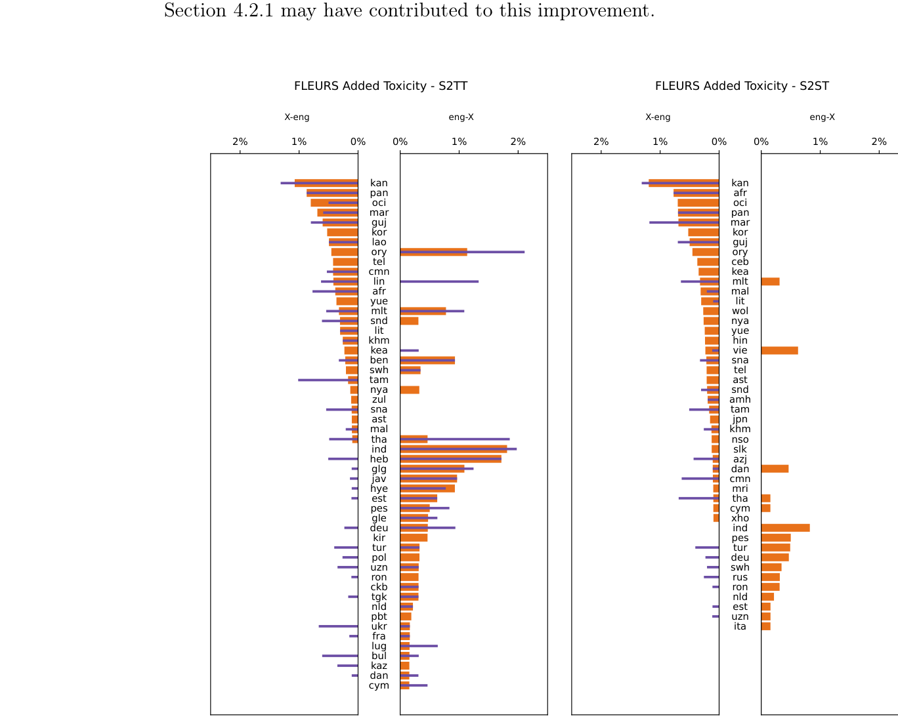
图Figure 17: Added toxicity for X–eng and eng–X for S2TT (left) and S2ST (right) in Fleurs. The figure shows the number of outputs with added toxicity per language both for SeamlessM4T-Large (orange) and Whisper-Large-v2 and Whisper-Large-v2 + YourTTSsystems when available (blue).
图 17：Fleurs 上 X–eng 与 eng–X 方向的 S2TT（左）与 S2ST（右）新增毒性。图中给出每种语言下含新增毒性的输出数量，分别对应 SeamlessM4T-Large（橙）与可对比的 Whisper-Large-v2、Whisper-Large-v2 + YourTTS 系统（蓝）。
69Holistic Bias Toxicity Delta1% 2% 3% 4%ind luo yor ell fin hye ben vie lvs pes eus snd nob pol ckb heb nya
（图 69：Holistic Bias 毒性增量 1%–4% 刻度及毒性翻译维度分布。原始数据照录如下） 69 Holistic Bias 毒性增量 1% 2% 3% 4% ind luo yor ell fin hye ben vie lvs pes eus snd nob pol ckb heb nya 1.0 glg dan hun mkd 0.8 毒性翻译分布 ita tur por spa 0.6 ron deu hrv bos swe 0.4 ces nno mni kir arb swh 0.2 fra mai urd ukr 0.0 ind fin nob ben snd yor ell pes vie luo hye lvs eus ability age body_type characteristics cultural gender_and_sex nationality nonce political_ideologies race_ethnicity religion sexual_orientation socioeconomic_class ron arb glg fra dan spa por ita pol nya ckb heb deu hrv tur mai bos kir ukr mkd hun nno mni ces swh swe urd
1.0glg dan hun mkd0.8Distribution of toxic translations ita tur por spa0.6ron deu hrv bos swe0.4ces nno mni kir arb swh0.2fra mai urd ukr0.0ind fin nob ben snd yor ell pes vie luo hye lvs eus ability age body_type characteristics cultural gender_and_sex nationality nonce political_ideologies race_ethnicity religion sexual_orientation socioeconomic_class ron arb glg fra dan spa por ita pol nya ckb heb deu hrv tur mai bos kir ukr mkd hun nno mni ces swh swe urd
（图 69：Holistic Bias 毒性增量 1%–4% 刻度及毒性翻译维度分布。原始数据照录如下） 69 Holistic Bias 毒性增量 1% 2% 3% 4% ind luo yor ell fin hye ben vie lvs pes eus snd nob pol ckb heb nya 1.0 glg dan hun mkd 0.8 毒性翻译分布 ita tur por spa 0.6 ron deu hrv bos swe 0.4 ces nno mni kir arb swh 0.2 fra mai urd ukr 0.0 ind fin nob ben snd yor ell pes vie luo hye lvs eus ability age body_type characteristics cultural gender_and_sex nationality nonce political_ideologies race_ethnicity religion sexual_orientation socioeconomic_class ron arb glg fra dan spa por ita pol nya ckb heb deu hrv tur mai bos kir ukr mkd hun nno mni ces swh swe urd
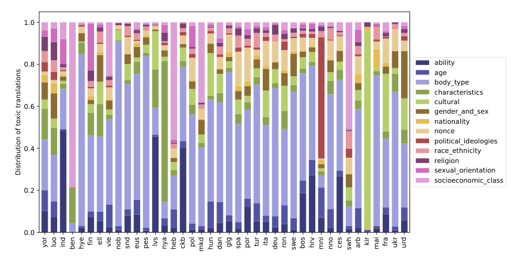
图Figure 18: (left) Added toxicity for eng–X, S2TT in HolisticBias. Showing top 40 languages. The plotted languages are above 500 samples of added toxicity—0.1% of the dataset. (right) Different languages differ in distributions of toxic terms as a function of demographic axes, with some languages’ toxicity being dominated by only one or two axes. The figure shows the number of outputs with added toxicity per language both for SeamlessM4T-Large (orange) and Whisper-Large-v2 + NLLB-3.3B cascaded systems (blue).
图 18：（左）HolisticBias 中 eng–X、S2TT 的新增毒性，展示前 40 种语言。所绘语言的新增毒性样本数均超过 500（占数据集 0.1%）。（右）不同语言在人口统计学维度上的毒性词分布存在差异，部分语言的毒性仅由一两个维度主导。图中给出每种语言下含新增毒性的输出数量，分别对应 SeamlessM4T-Large（橙）与 Whisper-Large-v2 + NLLB-3.3B 级联系统（蓝）。
HolisticBias 数据集上的自动毒性检测Automatic Toxicity Detection on HolisticBias Dataset
Figure 18 (left) shows results for S2TT languages with the highest added toxicity when translating HolisticBias from eng–X (note that HolisticBias is only available in English).Here, we observe a slightly higher amount of added toxicity compared to Fleurs for S2TT and a slightly lower amount for S2ST. Overall, HolisticBias shows a prevalence of added toxicity of 0.19% for S2TT and 0.13% for S2ST, averaged across languages. For S2TT, there are 84 languages that are affected by added toxicity. When looking at added toxicity per sentence, less than 0.003 % of the outputs contain more than one added toxicity token. Figure 19 (left) shows results for S2ST languages when translating the HolisticBias dataset. In total, there are 34 languages with added toxicity.
Figure 18（左）给出在 HolisticBias 上做 eng–X 翻译时新增毒性最高的 S2TT 语言（注意 HolisticBias 仅有英文）。这里我们观察到 S2TT 的新增毒性略高于 Fleurs，而 S2ST 略低。总体上，HolisticBias 上新增毒性跨语言平均为 S2TT 0.19%、S2ST 0.13%。S2TT 中有 84 种语言受到新增毒性影响。按每句看，含超过 1 个新增毒性 token 的输出不足 0.003 %（0.003%）。Figure 19（左）给出 HolisticBias 上 S2ST 语言的结果。共有 34 种语言存在新增毒性。
For S2TT, the Whisper-Large-v2 + NLLB-3.3B cascaded combination adds toxicity by 29% averaged in languages and added toxicity is prevalent in 81 languages. SeamlessM4T- Large reduces the amount of added toxicity by 34%.
S2TT 上，Whisper-Large-v2 + NLLB-3.3B 级联组合的新增毒性跨语言平均为 29%，且在 81 种语言中普遍存在。SeamlessM4T-Large 把新增毒性降低 34%。
Through manual inspection, when comparing toxic words detected in S2TT translation but not in S2ST, we observed that the word occurrences are similar with minor differences. We hypothesize that using ASR before toxicity detection tends to cause false negatives, which would explain the high decrease in added toxicity from S2TT to S2ST (from 0.19% to 0.13%), which also happened in Fleurs (from 0.21% to 0.16%). For example, in the case of English to Catalan, the word "merda" in the S2ST output is usually written as "mereda",
通过人工检查，对比在 S2TT 翻译中检出但 S2ST 未检出的毒性词，我们发现词的出现情况相似，仅有细微差别。我们推测在毒性检测前先做 ASR 容易产生假阴性，这可以解释从 S2TT 到 S2ST 新增毒性大幅下降（从 0.19% 到 0.13%）——Fleurs 上也是如此（从 0.21% 到 0.16%）。（页码行：2。）
70and therefore not identified by ETOX. This type of example brings light to the limitations presented by detection based on tokens in a blacklist.
例如，在英译 Catalan 时，S2ST 输出中的 "merda" 常被写成 "mereda"，70 因此未被 ETOX 识别。这类例子凸显了基于黑名单 token 检测的局限。
Following previous work [Costa-jussà et al., 2023], we perform an analysis of toxicity per HolisticBias’ axes and report them in Figures 18 and 19 (right). Figures show the distribution of toxic translations per category and how they vary per language. We see that different languages differ in their distributions of toxic terms as a function of demographic axes. For most languages, the toxicity distribution across an axis is proportional to the axis’ overall share. For instance, the main category in terms of volume is ’body type’, representing 25% of the dataset. This same category tends to accumulate a larger amount of toxicity as well. However, for some languages the toxic sentences appear to be highly concentrated in a particular axis—such is the case for Bengali (80% socio-economic status), Nyanja (66% characteristics), and Kyrgyz (94% cultural) to name a few.
沿用此前工作 [Costa-jussà et al., 2023]，我们按 HolisticBias 各维度对毒性进行分析，结果见 Figure 18 与 Figure 19（右）。图中展示各类别毒性翻译的分布及其随语言的变化。我们看到，不同语言的毒性词在人口统计学维度上的分布不同。对多数语言，某维度上的毒性分布与该维度的整体占比大致成比例。例如，体量最大的类别是「body type」，占数据集 25%。同一类别也倾向累积较多毒性。但对某些语言，毒性句子高度集中于某一维度——例如 Bengali（80% 社会经济地位）、Nyanja（66% characteristics）与 Kyrgyz（94% cultural）等。
The categories that have a higher concentration of toxicity for S2TT and S2ST are nonce (0.79% and 0.46%) and sexual orientation (0.62% and 0.35%). Nonce category (nonsense) is a bit of an outlier as far as terms are concerned because they do not specifically refer to any demographic groups. In terms of categories for least added toxicity, those would be age for S2TT (0.37%), and political ideologies for S2ST.
S2TT 与 S2ST 上毒性集中度更高的类别是 nonce（0.79% 与 0.46%）和 sexual orientation（0.62% 与 0.35%）。就术语而言，nonce（无意义词）这一类有些特殊，因为它并不特指任何人口统计学群体。新增毒性最低的类别是：S2TT 的 age（0.37%）与 S2ST 的 political ideologies。
Holistic Bias Toxicity Delta
（图 69：Holistic Bias 毒性增量 1%–4% 刻度及毒性翻译维度分布。原始数据照录如下） 69 Holistic Bias 毒性增量 1% 2% 3% 4% ind luo yor ell fin hye ben vie lvs pes eus snd nob pol ckb heb nya 1.0 glg dan hun mkd 0.8 毒性翻译分布 ita tur por spa 0.6 ron deu hrv bos swe 0.4 ces nno mni kir arb swh 0.2 fra mai urd ukr 0.0 ind fin nob ben snd yor ell pes vie luo hye lvs eus ability age body_type characteristics cultural gender_and_sex nationality nonce political_ideologies race_ethnicity religion sexual_orientation socioeconomic_class ron arb glg fra dan spa por ita pol nya ckb heb deu hrv tur mai bos kir ukr mkd hun nno mni ces swh swe urd
0.1% 0.2% 0.3%ind dan pes vie cym fra uzn fin por spa tur
（Holistic Bias 毒性增量图：Toxicity Delta 0.1%–1.0%，以及毒性翻译在 ability/age/body_type/characteristics/cultural/gender_and_sex/nationality/nonce/political_ideologies/race_ethnicity/religion/sexual_orientation/socioeconomic_class 各维度的分布。原始数据照录如下） Holistic Bias 毒性增量 0.1% 0.2% 0.3% ind dan pes vie cym fra uzn fin por spa tur 1.0 ita ron pol deu swe 0.8 slk nld est tha ukr swh 毒性翻译分布 0.6 tgl urd rus cat ces arb 0.4 jpn hin mlt kor 0.2 tel cmn ben 0.0 fra dan spa por ind fin uzn pes vie cym ability age body_type characteristics cultural gender_and_sex nationality nonce political_ideologies race_ethnicity religion sexual_orientation socioeconomic_class ron kor arb cat tgl ita nld pol tha deu tur hin ukr rus mlt ces est slk swh swe urd
1.0ita ron pol deu swe0.8slk nld est tha ukr swh Distribution of toxic translations
（Holistic Bias 毒性增量图：Toxicity Delta 0.1%–1.0%，以及毒性翻译在 ability/age/body_type/characteristics/cultural/gender_and_sex/nationality/nonce/political_ideologies/race_ethnicity/religion/sexual_orientation/socioeconomic_class 各维度的分布。原始数据照录如下） Holistic Bias 毒性增量 0.1% 0.2% 0.3% ind dan pes vie cym fra uzn fin por spa tur 1.0 ita ron pol deu swe 0.8 slk nld est tha ukr swh 毒性翻译分布 0.6 tgl urd rus cat ces arb 0.4 jpn hin mlt kor 0.2 tel cmn ben 0.0 fra dan spa por ind fin uzn pes vie cym ability age body_type characteristics cultural gender_and_sex nationality nonce political_ideologies race_ethnicity religion sexual_orientation socioeconomic_class ron kor arb cat tgl ita nld pol tha deu tur hin ukr rus mlt ces est slk swh swe urd
0.6tgl urd rus cat ces arb0.4jpn hin mlt kor0.2tel cmn ben0.0fra dan spa por ind fin uzn pes vie cym ability age body_type characteristics cultural gender_and_sex nationality nonce political_ideologies race_ethnicity religion sexual_orientation socioeconomic_class ron kor arb cat tgl ita nld pol tha deu tur hin ukr rus mlt ces est slk swh swe urd
（Holistic Bias 毒性增量图：Toxicity Delta 0.1%–1.0%，以及毒性翻译在 ability/age/body_type/characteristics/cultural/gender_and_sex/nationality/nonce/political_ideologies/race_ethnicity/religion/sexual_orientation/socioeconomic_class 各维度的分布。原始数据照录如下） Holistic Bias 毒性增量 0.1% 0.2% 0.3% ind dan pes vie cym fra uzn fin por spa tur 1.0 ita ron pol deu swe 0.8 slk nld est tha ukr swh 毒性翻译分布 0.6 tgl urd rus cat ces arb 0.4 jpn hin mlt kor 0.2 tel cmn ben 0.0 fra dan spa por ind fin uzn pes vie cym ability age body_type characteristics cultural gender_and_sex nationality nonce political_ideologies race_ethnicity religion sexual_orientation socioeconomic_class ron kor arb cat tgl ita nld pol tha deu tur hin ukr rus mlt ces est slk swh swe urd
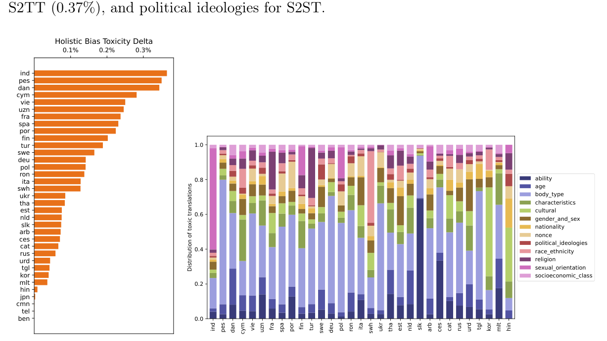
图Figure 19: (left) Added toxicity for eng–X, S2ST in HolisticBias. Showing all target languages. (right) Similarly to S2TT, different languages differ in distributions of toxic terms as a function of the demographic axis, with some languages’ toxicity being dominated by only one or two axes.
图 19：（左）HolisticBias 中 eng–X、S2ST 的新增毒性，展示所有目标语言。（右）与 S2TT 类似，不同语言在人口统计学维度上的毒性词分布存在差异，部分语言的毒性仅由一两个维度主导。
新增毒性检测的人工评测Human evaluation of added toxicity detection
As explained in Section 6.4, wordlist-based toxicity detection techniques are known to produce a substantial number of false positives. These are typically due to one of two main factors: tokenization issues and toxicity list items that are only toxic in certain contexts.
如第 6.4 节所述，基于词表的毒性检测技术会产生大量假阳性。这通常源于两个主要因素之一：分词问题；或词表中的词仅在特定上下文中才算毒性。
We perform a human error analysis of all detected items, and determine whether these are true positives (TP) or false positives (FP) on the following translation outputs:
我们对所有检出条目做人工错误分析，判定它们在下列翻译输出中是真正例（TP）还是假正例（FP）：
71• Fleurs outputs in the S2TT modality and both sets of translation directions (eng–X and X–eng), and for both SeamlessM4T and baseline systems (SeamlessM4T- Large, Whisper-Large-v2, Whisper-Large-v2 + NLLB-3.3B, Whisper-Largev2 + YourTTS), • HolisticBias outputs in the S2TT and S2ST modalities and only the eng–X set of directions for the SeamlessM4T-Large system.
（表格/图内数值行，原始数据照录） （原始语料/表格数据照录） • Fleurs outputs in the S2TT modality and both sets of translation directions (eng–X and X–eng), and for both SeamlessM4T and baseline systems (SeamlessM4T- Large, Whisper-Large-v2, Whisper-Large-v2 + NLLB-3.3B, Whisper-Largev2 + YourTTS), • HolisticBias outputs in the S2TT and S2ST modalities and only the eng–X set of directions for the SeamlessM4T-Large system.
Different results on HolisticBias and Fleurs The main difference between HolisticBias and Fleurs, comparing only the comparable set of directions (i.e. eng–X) is that the TP and FP rates follow opposite trends: 97–98% of detected items are TP in HolisticBias, whereas 81–84% of detected items are FP in Fleurs.
HolisticBias 与 Fleurs 上的不同结果 仅比较可比方向（即 eng–X）时，两者的主要差异是：TP 与 FP 比例趋势相反——HolisticBias 中 97–98% 的检出条目是 TP，Fleurs 中 81–84% 是 FP。
Comparison between the S2ST and S2TT modalities on HolisticBias.
HolisticBias 上 S2ST 与 S2TT 模态的比较。
The S2TT modality produced more (1.2 x) detected added toxicity than S2ST. The percentages of TP and FP are roughly the same in both modalities, and follow the same clear trend (between 97 and 98% of detected items are TP).
S2TT 模态检出的新增毒性比 S2ST 多（1.2 倍）。两种模态的 TP 与 FP 占比大致相同，并遵循同样的明显趋势（97–98% 的检出条目是 TP）。
Comparison between M4T and baseline on FLEURS in the S2TT modality. In the eng-x directions both systems show similar results: The baseline system produces more detected added toxicity ( 1.2x) than M4T; Between 80–84% of detected items are FP for both systems. In the x-eng directions more differences can be observed: The baseline system produces 2x the number of detected added toxicity produced by M4T; While in the baseline system the reversal in direction polarities is mirrored by a reversal in the TP-to-FP ratio (eng-x: 18.6%TP, 81.4% FP; x-eng: 80.3% TP, 19.7% FP), this does not occur in the M4T system (eng-x: 16.3%TP, 83.7% FP; x-eng: 42.3% TP, 57.7% FP).
Fleurs 上 M4T 与基线在 S2TT 模态的比较。eng–x 方向两系统结果相似：基线系统的检出新增毒性比 M4T 多（1.2 倍）；两系统都有 80–84% 的检出条目为 FP。x–eng 方向差异更明显：基线系统的检出新增毒性是 M4T 的 2 倍；基线系统中方向极性的反转伴随 TP/FP 比例反转（eng-x：18.6% TP、81.4% FP；x-eng：80.3% TP、19.7% FP），但 M4T 系统中并未出现（eng-x：16.3% TP、83.7% FP；x-eng：42.3% TP、57.7% FP）。
These results re-confirm the real toxicity mitigation found with automatic metrics.
这些结果再次确认了自动指标所发现的真实毒性缓解。
伦理声明Ethics statement
All annotators who worked on the human evaluation of detected toxicity are team members who are aware of the toxic nature of the samples prior to analyzing them.
参与毒性检测人工评测的所有标注者均为团队成员，在分析样本前已知悉其毒性本质。
6.2.4 Toxicity key findings and contributions To summarize, our key findings and contributions include: (1) proposing a metric for speech toxicity detection for languages at scale (ASR-ETOX), (2) showing that while levels and types of added toxicity vary significantly as a function of language and dataset, added toxicity in our systems has a relatively low prevalence (varying from 0.11% to 0.21% across modalities, language directions, and datasets), and (3) our evaluation against the state-ofthe-art shows that SeamlessM4T-Large reduces toxicity by 51% across modalities and language directions in Fleurs and by 34% in HolisticBias for eng–X in S2TT. A manual analysis of toxicity detection outputs confirm this toxicity mitigation rate holds on real toxicity.
6.2.4 毒性的关键发现与贡献 总结起来，我们的关键发现与贡献包括：(1) 提出一种面向大规模语言的语音毒性检测指标（ASR-ETOX）；(2) 表明尽管新增毒性的水平与类型随语言与数据集显著变化，我们系统中的新增毒性总体发生率较低（跨模态、语言方向与数据集在 0.11% 至 0.21% 之间）；(3) 与 SOTA 的对比评测显示，SeamlessM4T-Large 在 Fleurs 上跨模态与语言方向平均降低毒性 51%，在 HolisticBias 的 eng–X S2TT 上降低 34%。对毒性检测输出的人工分析证实，这一毒性缓解率在真实毒性样本上同样成立。
6.3 偏见Bias
6.3.1 Motivation Unequal training datasets can lead to demographic and representational biases that affect our models and their generated outputs. These biases can adversely impact users by perpetuating allocation biases when used in situated contexts. In recent years, the MT field has made
6.3.1 动机 不均衡的训练数据集可能引入人口统计学与表征层面的偏见，从而影响我们的模型及其生成的输出。当这些模型用于真实场景时，这些偏见会通过延续分配性偏见而对用户造成负面影响。近年来，机器翻译领域在揭示 [Prates et al., 2020]、评测 [Stanovsky et al., 2019; Renduchintala et al., 2021; Costa-jussà et al., 2022; Bentivogli et al., 2020]，乃至缓解 [Renduchintala and Williams, 2022] 这类偏见方面都取得了 72 分显著的进展。
72significant progress in uncovering [Prates et al., 2020], evaluating [Stanovsky et al., 2019; Renduchintala et al., 2021; Costa-jussà et al., 2022; Bentivogli et al., 2020], or even mitigating many of these forms of biases [Renduchintala and Williams, 2022]. However, much work lies ahead of us when it comes to this domain of research.
（正文/表格数据句，原始文本照录，数字与年份均保留） significant progress in uncovering [Prates et al., 2020], evaluating [Stanovsky et al., 2019; Renduchintala et al., 2021; Costa-jussà et al., 2022; Bentivogli et al., 2020], or even mitigating many of these forms of biases [Renduchintala and Williams, 2022].然而，在这一研究领域，摆在面前的工作还有很多。
Related work Multilingual HolisticBias dataset [Costa-jussà et al., 2023] consists of an extension to HolisticBias. It contains translations for three different patterns and 118 descriptors, available in 50 different languages. Depending on whether gender inflection exists in a language, each language has one or two references. Each translated sentence includes the masculine, neutral and, when applicable, a feminine iteration. The dataset enables quantification of gender biases across demographic aspects for T2TT and has the highest language coverage at the time of writing. Previous work on this matter is mostly in text [Stanovsky et al., 2019; Renduchintala et al., 2021; Levy et al., 2021; Costa-jussà et al., 2022; Renduchintala and Williams, 2022] and tend to be English-centric, with few demographic axes and multilingual references. Similar efforts for the speech modality remain sparse [Costa-jussà et al., 2022; Bentivogli et al., 2020].
相关工作 Multilingual HolisticBias 数据集 [Costa-jussà et al., 2023] 是对 HolisticBias 的扩展。它包含 3 种不同模式与 118 个描述词的翻译，覆盖 50 种语言。视语言是否存在性别变位而定，每种语言有一到两个参考。每个翻译句都包含阳性、中性，以及（如适用）阴性的变体。该数据集使得在 T2TT 上跨人口统计学维度量化性别偏见成为可能，且成文时语言覆盖最广。此前这方面的工作多以文本为主 [Stanovsky et al., 2019; Renduchintala et al., 2021; Levy et al., 2021; Costa-jussà et al., 2022; Renduchintala and Williams, 2022]，且倾向以英语为中心，人口统计学维度和多语言参考都很少。面向语音模态的类似努力仍很少见 [Costa-jussà et al., 2022; Bentivogli et al., 2020]。
Contributions. In this work, we used Multilingual HolisticBias and its speech extension (described in the following section) to compare the performance of S2TT and S2ST. The eng–X direction allows comparing performance in the presence of masculine or feminine references, and the X–eng direction enables robustness comparisons in translations when we alter gender inflection. A typical example of the language pair of English-Spanish would be "I’m a homemaker" and the corresponding translations "Soy amo de casa" and "Soy ama de casa" in Spanish. When translating from English to Spanish, we can measure if the system overgeneralizes to one gender, while in the other direction, we can evaluate the robustness of the translation to gender inflection.
贡献。在本工作中，我们使用 Multilingual HolisticBias 及其语音扩展（见下一节）来比较 S2TT 与 S2ST 的性能。eng–X 方向允许在阳性或阴性参考下比较性能，X–eng 方向则允许在改变性别变位时比较翻译的鲁棒性。一个英西语对的典型例子是 "I'm a homemaker"，对应的西语翻译有 "Soy amo de casa" 与 "Soy ama de casa"。在英译西时，我们可以测量系统是否过度泛化到某一性别；反方向则可以评测翻译对性别变位的鲁棒性。
6.3.2 Bias Experimental Framework
6.3.2 偏见实验框架
数据集：Multilingual HolisticBias 的语音扩展Dataset: Speech Extension of Multilingual HolisticBias
In order to compare the performances across modalities (S2ST and S2TT), we begin by extending the Multilingual HolisticBias dataset from text to speech by using the TTS model19 provided by Pratap et al. [2023]. Due to the limitations of this TTS model in correctly generating speech for numbers, we manually converted all numerical numbers to words for each language. For instance, the sentence “I have friends who are 50 years old.” is transformed into “I have friends who are fifty years old.” After processing through TTS, we obtained the synthesized speech for 325 sentences across 19 languages. These languages are supported both by MMS-TTS and the Multilingual HolisticBias20 dataset [Costa-jussà et al., 2023]. For each of these languages (except English), we generated two speeches, one for each set of gendered texts.
为对比不同模态（S2ST 与 S2TT）下的性能，我们首先用 Pratap et al. [2023] 提供的 TTS 模型19 把 Multilingual HolisticBias 数据集从文本扩展到语音。由于该 TTS 模型在生成数字语音上存在局限，我们人工把所有数字改写为对应语言的单词形式。例如，句子 "I have friends who are 50 years old." 被改写为 "I have friends who are fifty years old."。经 TTS 处理后，我们得到 19 种语言 325 句的合成语音。这些语言同时被 MMS-TTS 与 Multilingual HolisticBias20 数据集 [Costa-jussà et al., 2023] 支持。对其中每种语言（除英语外），我们为两套带性别形式的文本各生成一段语音。
语言方向与模态Language directions and modalities
We use this generated TTS data as input for S2TT and S2ST and as a reference for S2ST. We conducted the translations in two directions—eng– X and X–eng. Concretely, in X–eng, we translated both masculine and feminine versions of the speech. It’s worth noting that some target languages are not available in the SeamlessM4T 19. https://github.com/facebookresearch/fairseq/tree/main/examples/mms#tts-1 20. Arabic, Belarusian, Bulgarian, Catalan, Czech, Danish, German, Greek, French, Italian, Lithuanian, Latvian, Marathi, Dutch, Portuguese, Romanian, Russian, Slovak, Slovenian, Spanish, Swedish, Tamil, Thai, Ukrainian, Urdu.
我们把生成的 TTS 数据用作 S2TT 与 S2ST 的输入，并用作 S2ST 的参考。翻译沿两个方向进行——eng–X 与 X–eng。具体地，在 X–eng 中，我们翻译了语音的阳性与阴性两个版本。值得注意的是，SeamlessM4T 并不支持某些目标语言 19. https://github.com/facebookresearch/fairseq/tree/main/examples/mms#tts-1 20.Arabic, Belarusian, Bulgarian, Catalan, Czech, Danish, German, Greek, French, Italian, Lithuanian, Latvian, Marathi, Dutch, Portuguese, Romanian, Russian, Slovak, Slovenian, Spanish, Swedish, Tamil, Thai, Ukrainian, Urdu.
73S2ST model, so we performed translations on only 17 languages for the S2ST task in the eng–X direction. For S2TT in eng–X, we have all languages included in the Multilingual HolisticBias dataset (n=25).
（正文/表格数据句，原始文本照录，数字与年份均保留） S2ST model, so we performed translations on only 17 languages for the S2ST task in the eng–X direction.eng–X 方向 S2TT 则覆盖 Multilingual HolisticBias 数据集中的全部语言（n=25）。
For reference, the complete language list used in our experiments can be found in Table 35.
供参考，实验使用的完整语言清单见表 35。
X–engX–eng
eng–X arb,cat,ces,dan,deu,fra,ita,nld,por,ron, rus,slk,spa,swe,tha,ukr,urd
（eng–X 方向语种集合：arb、cat、ces、dan、deu、fra、ita、nld、por、ron、rus、slk、spa、swe、tha、ukr、urd。）
S2TTS2TT
arb,bel,bul,cat,ces,dan,deu,ell,fra,ita, lit,lvs,mar,nld,por,ron,rus,slk,slv,spa, swe,tam,tha,ukr,urd
arb,bel,bul,cat,ces,dan,deu,ell,fra,ita,lit,lvs,mar,nld,por,ron,rus,slk,slv,spa,swe,tam,tha,ukr,urd
S2STS2ST
arb,bul,cat,deu,ell,fra,lvs,mar,nld, por,ron,rus,spa,swe,tam,tha,ukr,urd
arb,bul,cat,deu,ell,fra,lvs,mar,nld,por,ron,rus,spa,swe,tam,tha,ukr,urd
Table 35: List of language codes in the bias evaluation experiments, organized by task and language direction.
表 35：偏见评测实验中涉及的语言代码列表，按任务与语言方向组织。
| direction. | |||||||||||
|---|---|---|---|---|---|---|---|---|---|---|---|
| HolisticBias dataset. | This dataset is relatively small | ||||||||||
| since BLEU | not | enough | lengthy | n-grams | are | matched. | For | S2ST, | |||
| we used | proposed | in | this | It | worth | noting | that | ||||
| eng–X | direction | (overlaps | the | languages | from | the | generated | TTS data | and | the | |
| languages available in our S2ST model). | Additionally, since MMS-TTS generations are not | ||||||||||
| deterministic, we repeated the measurements three times for both S2ST and S2TT. The final | |||||||||||
| metric values are then averaged to ensure robustness and accuracy in our evaluations. | |||||||||||
| Models | We used the SeamlessM4T-Large model and several different baselines. | For | |||||||||
| X–eng S2TT, we employed Whisper-Large-v2 [Radford et al., 2022]. | As for X–eng S2ST, | ||||||||||
| we used YourTTS [Casanova et al., 2022] to generate synthesized speech from the output | |||||||||||
| of | Whisper-Large-v2 | For | S2TT, | we | utilized | system: | ASR | ||||
| from Whisper Large-v2 [Radford et al., 2022], followed by T2TT via NLLB-3.3B [NLLB | |||||||||||
| Team et | al., | For | SeamlessM4T-Large | S2TT, | we | a | size | of ten. | For | ||
| SeamlessM4T-Large S2ST, we set the beam size to five for both the first pass decoder and | |||||||||||
| the second pass decoder. | As for the baseline, we set the beam size to five for NLLB-3.3B | ||||||||||
| and used the default values for Whisper-Large-v2 and YourTTS. | |||||||||||
| 21. The transcription is done by Whisper-Large-v2 and Whisper-Medium [Radford et al., 2022] for eng–X | |||||||||||
| and X–eng respectively. | chrF has been calculated the same way as S2TT except that in S2ST the text | ||||||||||
| 22. The list of language codes for these 14 languages: | arb,cat,deu,eng,fra,nld,por,ron,rus,spa,swe,tha,ukr,urd. |
评测Evaluation
In terms of evaluation metrics for S2TT, we used chrF as reported in Table 4, except that nw:2 was changed to nw:0. Instead of using BLEU as the quality metric, we used chrF because it is more equipped to handle shorter utterances, which better suits the evaluation of the Multilingual HolisticBias dataset. This dataset is relatively small (325 utterances) and with short sentences (on average, 6 words per utterance) [Costa-jussà et al., 2023]. In this context, we find chrF more adequate for comparison [Ma et al., 2019], since BLEU quickly drops when not enough lengthy n-grams are matched. For S2ST, we used ASR-chrF.21 and Blaser 2.0 proposed in this work. It is worth noting that when evaluating Blaser 2.0, we included only 14 languages (including English)22 for the eng–X direction (overlaps between the languages from the generated TTS data and the languages available in our S2ST model). Additionally, since MMS-TTS generations are not deterministic, we repeated the measurements three times for both S2ST and S2TT. The final metric values are then averaged to ensure robustness and accuracy in our evaluations.
S2TT 的评测指标采用 Table 4 报告的 chrF，仅把 nw:2 改为 nw:0。我们用 chrF 而非 BLEU 作为质量指标，因为 chrF 更适合短句，与 Multilingual HolisticBias 数据集的评测更匹配。该数据集相对较小（325 条话语），句子较短（平均每句 6 个词）[Costa-jussà et al., 2023]。在这种场景下，我们认为 chrF 更适合比较 [Ma et al., 2019]，因为缺乏足够长 n-gram 匹配时 BLEU 会迅速下降。对 S2ST，我们使用 ASR-chrF 21 与本文提出的 Blaser 2.0。值得注意的是，评测 Blaser 2.0 时，eng–X 方向我们仅纳入 14 种语言（含英语）22——即 TTS 生成数据语言与我们 S2ST 模型可用语言的交集。此外，由于 MMS-TTS 的生成非确定性，我们对 S2ST 与 S2TT 各重复测量三次。最终指标取平均，以保证评测的稳健性与准确性。
模型Models
746.3.3 Bias evaluation results This section focuses on analyzing gendered translations when using neutral inputs (eng–X) and the gap in translation performance between inputs that only differ in gender (X–eng).
（正文/表格数据句，原始文本照录，数字与年份均保留） 6.3.3 Bias evaluation results This section focuses on analyzing gendered translations when using neutral inputs (eng–X) and the gap in translation performance between inputs that only differ in gender (X–eng).
S2TT eng-X
（页码行：2。）
12(Masculine - Feminine) chrF8 4 0 –4mar bul lit por arb ron ukr urd fra ell ita tam bel nld slv tha cat lvs slk deu rus spa ces dan swe Target language S2ST eng-X
（页码行：2。）
12 8 4 0 –4swe arb ukr fra por ron urd ita cat slk tha dan ces deu spa rus nld Target language WHISPER-LARGE-V2 (ASR)+ NLLB-3.3B SEAMLESSM4T-LARGE
（正文/表格数据句，原始文本照录，数字与年份均保留） swe arb ukr fra por ron urd ita cat slk tha dan ces deu spa rus nld Target language WHISPER-LARGE-V2 (ASR)+ NLLB-3.3B SEAMLESSM4T-LARGE
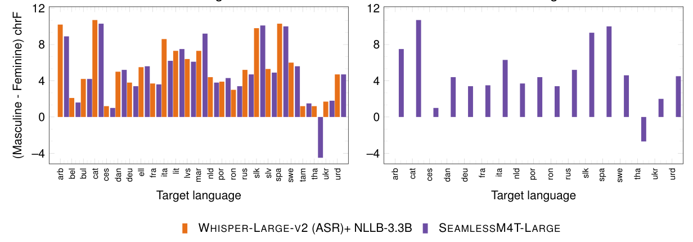
图Figure 20: Left: The chrF points difference between masculine and feminine forms for eng–X S2TT using English speech as source and X text translation (masculine or feminine) as reference. Right: The ASR-chrF points difference between masculine and feminine forms for eng–X S2ST using English speech as source and X text translation (masculine or feminine) as reference.
图 20：左：eng–X S2TT 以英语语音为源、以 X 文本翻译（阳性或阴性）为参考时，阳性与阴性形式之间的 chrF 分数差。右：eng–X S2ST 以英语语音为源、以 X 文本翻译（阳性或阴性）为参考时，阳性与阴性形式之间的 ASR-chrF 分数差。
S2TT X-eng (Masculine - Feminine) chrF
（页码行：2。）
6 4 2 0mar bul por arb ron ukr urd fra ell tam tha cat lvs nld deu rus spa swe Source language S2ST X-eng
（页码行：2。）
6 4 2 0bul swe mar por arb ron ukr urd fra ell tam lvs tha cat nld deu spa rus Source language WHISPER-LARGE-V2 SEAMLESSM4T-LARGE WHISPER-LARGE-V2 + YOURTTS
（正文/表格数据句，原始文本照录，数字与年份均保留） bul swe mar por arb ron ukr urd fra ell tam lvs tha cat nld deu spa rus Source language WHISPER-LARGE-V2 SEAMLESSM4T-LARGE WHISPER-LARGE-V2 + YOURTTS
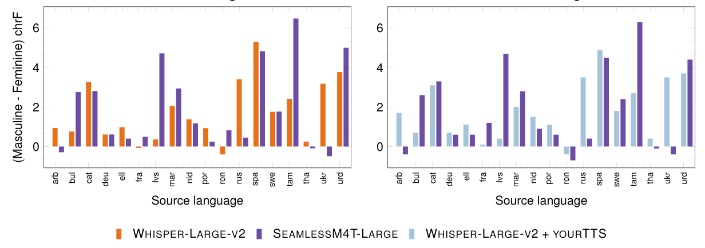
图Figure 21: (left) The chrF points difference between masculine and feminine for X–eng S2TT using X speech synthesized by the masculine or feminine version of the text and English text as a reference. (right) The ASR-chrF points difference between masculine and feminine forms for X–eng S2ST using X speech synthesized by the masculine or feminine version of text and English text as reference.
图 21：（左）X–eng S2TT 以由阳性或阴性文本版本合成的 X 语音为源、以英文文本为参考时，阳性与阴性之间的 chrF 分数差。（右）X–eng S2ST 以由阳性或阴性文本版本合成的 X 语音为源、以英文文本为参考时，阳性与阴性形式之间的 ASR-chrF 分数差。
eng–X.
eng–X。
In our analysis, we utilize the masculine or the feminine human translations of the non-English language as references. The source for this analysis is the English (eng) Multilingual HolisticBias dataset, comprising a collection of unique sentences with ambiguous gender. Figure 20 shows the results per target language, evincing the following patterns:
在我们的分析中，以非英语语言的阳性或阴性人工翻译作为参考。该分析的源数据是英语（eng）Multilingual HolisticBias 数据集，由一批性别歧义的独立句子构成。Figure 20 展示各目标语言的结果，呈现以下规律：
75S2ST eng-X (Masculine - Feminine) BLASER 2.00.20 0.16 0.12 0.08 0.04 0.00 –0.04 –0.08cat nld tha deu spa rus swe por ukr arb ron urd fra Target language S2ST X-eng
（页码行：2。）
0.20 0.16 0.12 0.08 0.04 0.00 –0.04 –0.08ell tam tha cat nld spa deu rus mar swe bul lav por ron arb ukr urd fra Source language WHISPER-LARGE-V2 + YOURTTS SEAMLESSM4T-LARGE
（正文/表格数据句，原始文本照录，数字与年份均保留） ell tam tha cat nld spa deu rus mar swe bul lav por ron arb ukr urd fra Source language WHISPER-LARGE-V2 + YOURTTS SEAMLESSM4T-LARGE
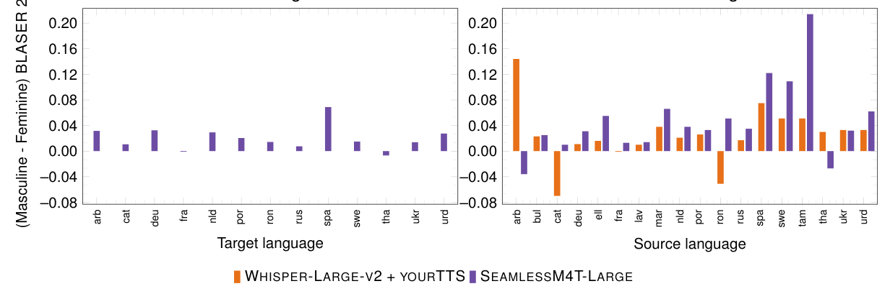
图Figure 22: (left) The supervised Blaser 2.0 points difference between masculine and feminine forms for eng–X S2ST using English speech as the source and X text translation (masculine and feminine) as reference. The results are averaged from three experiments. (right) The supervised Blaser 2.0 points difference for X–eng S2ST using X speech synthesized by the masculine or feminine version of text and English text as reference.
图 22：（左）eng–X S2ST 以英语语音为源、以 X 文本翻译（阳性与阴性）为参考时，阳性与阴性形式之间的有监督 Blaser 2.0 分数差，结果为三次实验的平均。（右）X–eng S2ST 以由阳性或阴性文本版本合成的 X 语音为源、以英文文本为参考时的有监督 Blaser 2.0 分数差。
• In SeamlessM4T-LargeS2TT, the translation quality deteriorates for all the languages except Thai when using the feminine reference, and is especially noticeable in languages like Catalan (with a significant 10.3 chrF points difference), Slovak (10.1), and Spanish (10.0). For the Whisper-Large-v2 + NLLB-3.3B combination, a decline in translation quality is observed across all languages. The highest differences are found in Catalan (10.7), Spanish (10.3), and Arabic (10.2). It’s worth mentioning that the biases’ distribution over languages is similar between SeamlessM4T-Large and the Whisper-Large-v2 + NLLB-3.3B combination, with Thai being the only exception.
• 在 SeamlessM4T-Large 的 S2TT 中，除泰语外所有语言在使用阴性参考时翻译质量都会变差，在 Catalan（chrF 差高达 10.3 分）、Slovak（10.1）与 Spanish（10.0）等语言中尤为明显。对 Whisper-Large-v2 + NLLB-3.3B 组合，所有语言也都出现翻译质量下降。差距最大的是 Catalan（10.7）、Spanish（10.3）与 Arabic（10.2）。值得一提的是，偏见在各语言上的分布在 SeamlessM4T-Large 与 Whisper-Large-v2 + NLLB-3.3B 组合之间相似，泰语是唯一例外。
• In S2ST, we noticed similar trends in relation to S2TT, where translation quality is lowered in all languages (except Thai) when assessing with the feminine reference.
• 在 S2ST 中，我们观察到与 S2TT 类似的趋势：以阴性参考评测时，所有语言（除泰语）翻译质量都下降。
The highest differences are with Catalan (10.7 ASR-chrF points difference), Spanish (10.0), and Slovak (9.3).
差距最大的是 Catalan（ASR-chrF 差 10.7 分）、Spanish（10.0）与 Slovak（9.3）。
The left panel of Figure 22 shows the results for automatic speech evaluation by way of Blaser 2.0. We observe similar trends in the ASR-chrF metric. The translation quality deteriorates by an average of 0.02 supervised Blaser 2.0 points across languages when evaluating with the feminine reference for all languages except Thai. Interestingly, the evaluation for French reveals a negligible difference. The highest differences are found in Spanish (0.07), followed by German (0.03).
Figure 22 左图给出以 Blaser 2.0 进行自动语音评测的结果。我们在 ASR-chrF 指标上观察到类似趋势。除泰语外所有语言，以阴性参考评测时翻译质量平均下降 0.02 个有监督 Blaser 2.0 点。有趣的是，法语的评测差异可忽略不计。差距最大的是 Spanish（0.07），其次是 German（0.03）。
These differences show that when no gender information is available in the source sentence, the model will prefer to translate to the masculine form in the target language. Note that for some languages (like Spanish or French), the plural masculine form is indistinguishable from the plural generic form.
这些差异表明：当源句中没有性别信息时，模型倾向于译成目标语言的阳性形式。注意在某些语言（如 Spanish 或 French）中，阳性复数形式与通指复数形式无法区分。
X–engX–eng.
Our main objective is to assess the translation quality when starting from a gendered sentence and translating it into English. As such, we aim to measure the model’s
我们的主要目标是：从带性别标记的句子出发、翻译到英语时，评估其翻译质量。为此，我们旨在测量模型的 76……
76S2TTS2TT
维度Axis
Masculine Feminine Average Count Diff Cultural
（表头：Masculine / Feminine / Average / Count / Diff——Cultural（后续照原文）。）
11.4 9.5 10.4 350 1.9Body type14.2 12.9 13.6 3750 1.2Socioeconomic class14.6 13.3 13.9 400 1.3Religion15.5 13.7 14.6 1800 1.8Gender and sex16.0 15.1 15.5 1800 1.0Ability16.6 15.2 15.9 3300 1.3Race ethnicity17.4 15.7 16.5 900 1.7Characteristics18.2 16.2 17.2 1900 2.0Nationality18.1 16.7 17.4 300 1.4Sexual orientation18.5 16.7 17.6 700 1.8Age18.6 16.6 17.6 900 1.9S2STS2ST
维度Axis
Masculine Feminine Average Count Diff Cultural
（表头：Masculine / Feminine / Average / Count / Diff——Cultural（后续照原文）。）
12.2 10.3 11.3 238 1.9Body type14.2 13.0 13.6 2550 1.2Socioeconomic class14.4 13.1 13.7 272 1.3Religion16.3 14.5 15.4 1224 1.9Gender and sex16.7 15.7 16.2 1224 1.0Ability16.9 15.5 16.2 2244 1.4Age17.7 15.8 16.7 612 1.9Characteristics17.7 15.9 16.8 1292 1.8Race ethnicity18.0 16.4 17.2 612 1.7Sexual orientation18.4 16.9 17.7 476 1.5Nationality18.7 17.3 18.0 204 1.3Table 36: Results on mean per axis (across descriptor, template, and language): chrF on S2TT (top) and ASR-chrF on S2ST (bottom) results. Columns (from left to right): masculine references, feminine references, average between the two, the total number of measurements (Count), and the difference between masculine and feminine (Diff). The rows are sorted in ascending order by the average chrF for S2ST and S2TT, respectively. The axes are defined in HolisticBias —for more details, refer to Table 5 in the original paper [Smith et al., 2022].
表 36：各维度均值（跨描述词、模板与语言）结果：S2TT 的 chrF（上）与 S2ST 的 ASR-chrF（下）。列（从左至右）：阳性参考、阴性参考、两者平均、测量总数（Count）、阳性与阴性差（Diff）。行按 S2ST 与 S2TT 各自的平均 chrF 升序排列。维度定义见 HolisticBias——更多细节参考原论文 Table 5 [Smith et al., 2022]。
| that | mark | grammatical | gender | towards | English. | Figure | 21 | shows | the | results | ||
| language for SeamlessM4T-Large and Whisper-Large-v2 or Whisper-Large-v2 + | ||||||||||||
| • | In | the | performance | is | better | when | translating | from | the | masculine | reference | |
| for most languages (15 out of 18 for SeamlessM4T-Large and 16 out of 18 for the | ||||||||||||
| Whisper-Large-v2). | However, they have different biases towards different languages. | |||||||||||
| The highest differences between the masculine and feminine forms in SeamlessM4T- | ||||||||||||
| Large are with Tamil (6.4 chrF points difference) and Urdu (5.0).23 | On the other | |||||||||||
| 23. We find that in our experiment, Arabic shows the bias toward the cases when translated from feminine | ||||||||||||
| version, which contrasts with the findings in the Multilingual HolisticBias [Costa-jussà et al., 2023] | ||||||||||||
| 77 |
hand, the highest differences in Whisper-Large-v2 are with Spanish (5.3), Urdu (3.8), and Russian (3.4).
（正文/表格数据句，原始文本照录，数字与年份均保留） hand, the highest differences in Whisper-Large-v2 are with Spanish (5.3), Urdu (3.8), and Russian (3.4).
• In S2ST, we observe similar outcomes to those in S2TT. The model quality is mostly better when translating from masculine cases, as evident in 14 out of 18 languages for SeamlessM4T-Large and 17 out of 18 for the Whisper-Large-v2 + YourTTScombination. The most significant differences between masculine and feminine sources in SeamlessM4T-Large are found in Tamil (with an ASR-chrF point difference of 6.3) and Spanish (4.5). The highest differences in Whisper-Large-v2 are in Spanish (4.9), Urdu (3.7), and Ukrainian (3.5).
• 在 S2ST 中，我们观察到与 S2TT 类似的结果。对多数语言，从阳性例翻译时模型质量更好——SeamlessM4T-Large 18 中占 14，Whisper-Large-v2 + YourTTS 组合 18 中占 17。SeamlessM4T-Large 阳性与阴性源差距最大的是 Tamil（ASR-chrF 差 6.3 分）与 Spanish（4.5）。Whisper-Large-v2 差距最大的是 Spanish（4.9）、Urdu（3.7）与 Ukrainian（3.5）。
The right panel of Figure 22 demonstrates the performance comparison using Blaser 2.0. Like the findings in ASR-chrF, the translation quality generally improves when translating
Figure 22 右图给出用 Blaser 2.0 进行的性能对比。与 ASR-chrF 的发现类似，从阳性例翻译时翻译质量普遍更好——SeamlessM4T-Large 18 中占 16，Whisper-Large-v2 + YourTTS 18 中占 15。
from masculine cases, which is observed in 16 out of 18 languages and 15 out of 18 languagesfor SeamlessM4T-Large and Whisper-Large-v2 + YourTTS respectively. The highest differences for SeamlessM4T-Large are with Tamil (0.21 supervised Blaser 2.0 points), Spanish (0.12), and Swedish (0.11). For Whisper-Large-v2 + YourTTS, the highest differences are found in Arabic (0.14), Spanish (0.075), and Tamil (0.05).
与 ASR-chrF 的发现类似，从阳性例翻译时翻译质量普遍更好——SeamlessM4T-Large 18 中占 16，Whisper-Large-v2 + YourTTS 18 中占 15。SeamlessM4T-Large 差距最大的是 Tamil（0.21 有监督 Blaser 2.0 分）、Spanish（0.12）与 Swedish（0.11）。Whisper-Large-v2 + YourTTS 差距最大的是 Arabic（0.14）、Spanish（0.075）与 Tamil（0.05）。
跨方向与跨模态的平均比较Average comparison across directions and modalities
Table 37 presents the average scores per gender and the comparison with the corresponding baseline.24 ∆corresponds to the relative variation between genders computed as follows:
Table 37 给出按性别划分的平均分数及与对应基线的对比。24 ∆ 表示性别间的相对差异，计算公式如下：
∆= ω(M −F)/ω(min(M, F)), ω ∈{chrF, ASR-chrF, Blaser 2.0} As mentioned, in eng–X, we evaluated translations from neutral to gendered forms and observed the overgeneralization towards one gender, whereas in X–eng, we evaluated the robustness of translating content that only differs in their gender inflection. Focusing sorely on the results of SeamlessM4T-Large, we noticed that, except for the evaluation outcomes in Blaser 2.0, the difference in performance between the masculine and feminine forms is more pronounced for overgeneralization than for robustness. Turning our attention to the performance comparison, we find that when it comes to overgeneralization, SeamlessM4T- Large slightly outperforms Whisper-Large-v2 + NLLB-3.3B. As for the outcome related to the robustness, SeamlessM4T-Large falls short against Whisper-Large-v2 in S2TT but outperforms Whisper-Large-v2 + YourTTSin S2ST. We further noticed a higher percentage gap in ASR-chrF than for Blaser 2.0. This may imply that ASR (from ASR-chrF) adds some extra biases.
∆ = ω(M − F)/ω(min(M, F))，ω ∈ {chrF, ASR-chrF, Blaser 2.0}。如前所述，eng–X 中我们评测从中性到带性别形式翻译的过度泛化现象，X–eng 中我们评测系统对仅在性别变位上有差异的内容的翻译鲁棒性。仅看 SeamlessM4T-Large 的结果，我们注意到：除 Blaser 2.0 评测外，阳性与阴性之间的性能差异在「过度泛化」情形比在「鲁棒性」情形更明显。再来看性能对比：在过度泛化情形，SeamlessM4T-Large 略优于 Whisper-Large-v2 + NLLB-3.3B。在鲁棒性方面，SeamlessM4T-Large 在 S2TT 上不及 Whisper-Large-v2，但在 S2ST 上优于 Whisper-Large-v2 + YourTTS。我们还注意到 ASR-chrF 上的百分比差距大于 Blaser 2.0。这可能意味着 ASR（来自 ASR-chrF）引入了额外的偏见。
人口统计学分析Demographic analysis
We conducted a similar analysis to that in Costa-jussà et al. [2023]. Table 36 shows the mean chrF or ASR-chrF at the sentence level on the Multilingual HolisticBias axes translations, averaged across descriptors, templates, languages, and masculine vs. feminine references. Among all the axes, we find that cultural, body type, socioeconomic class, and religion are most sensitive to quality disruptions. Furthermore, where Arabic exhibited significantly higher performance when translating from the masculine version.
我们进行了与 Costa-jussà et al. [2023] 类似的分析。Table 36 给出 Multilingual HolisticBias 各维度翻译的句级 chrF 或 ASR-chrF 均值，跨描述词、模板、语言与阳性/阴性参考取平均。在所有维度中，cultural、body type、socioeconomic class 与 religion 对质量波动最敏感。此外，Arabic 在从阳性版本翻译时性能显著更高。
We hypothesize that this difference is attributed to our use of a different language code "ara" instead of "arb" when applying the MMS-TTS. 24. For eng–X S2ST, we report only the performance for the SeamlessM4T-Large in absence of baseline.
我们推测这一差异来自在应用 MMS-TTS 时使用了不同的语言代码 "ara" 而非 "arb"。24.对 eng–X S2ST，由于缺乏基线，我们仅报告 SeamlessM4T-Large 的性能。
78eng–X SeamlessM4T/Whisper-Large-v2 + NLLB-3.3B Feminine Reference Masculine Reference∆%S2TT chrF45.0/47.4 49.9/52.7 10.9/11.2S2ST ASR-chrF44.9 49.7 10.6Blaser 2.03.6 3.7 0.6X–eng SeamlessM4T/Whisper-Large-v2（+ YourTTS）X–eng SeamlessM4T/Whisper-Large-v2 (+ YourTTS)
Feminine Source Masculine Source
（表格内容： Feminine Source / Masculine Source / ∆%。S2TT chrF 52.4/50.4 54.3/52.1 3.7/3.4；S2ST ASR-chrF 53.1/52.2 55.0/54.0 3.5/3.5；S2ST Blaser 2.0 3.5/2.7 3.6/2.8 2.9/3.7。）
∆%S2TT chrF52.4/50.4 54.3/52.1 3.7/3.4S2ST ASR-chrF53.1/52.2 55.0/54.0 3.5/3.5Blaser 2.03.5/2.7 3.6/2.8 2.9/3.7Table 37: The averaged points across modalities and genders for assessing the overgeneralization (eng–X) and the robustness (X–eng). ∆represents the relative difference between masculine and feminine (∆= ω(M −F)/ω(min(M, F)), ω ∈{chrF, ASR-chrF, Blaser 2.0}).
表 37：用于评估过度泛化（eng–X）与鲁棒性（X–eng）的、跨模态与跨性别的平均分。∆代表阳性与阴性之间的相对差异（∆= ω(M −F)/ω(min(M, F))，ω ∈{chrF, ASR-chrF, Blaser 2.0}）。
| feminine (∆= ω(M −F)/ω(min(M, F)), ω ∈{chrF, ASR-chrF, Blaser 2.0}). | ||||||
|---|---|---|---|---|---|---|
| when considering the difference between masculine and feminine references and | ||||||
| body | type, | religion, | characteristics | observations | ||
| reported in Costa-jussà et al. [2023] pertaining to T2TT. | ||||||
| 6.3.4 | Gender | data | representation | |||
| Based on our concurrent work [Muller et al., 2023], | we discuss the | |||||
| several datasets by focusing on how different genders are represented using | ||||||
| The closest work that studies gender representation in data is Choubey et al. | ||||||
| the authors took on this research question using a synthetic dataset. | ||||||
| did not share the details of the lexical nouns used to extract this | ||||||
| HolisticBias [Smith et al., 2022] provides a list of gendered nouns and | ||||||
| rely on this list to track how many sentences in our data sets contain gendered | ||||||
| our analysis is only in English, we tokenize for word boundaries using python | ||||||
| regular expression (\b). | ||||||
| scalable to multiple languages [Muller et al., 2023]. | ||||||
| nouns25; | 4 | masculine | pronouns,26; | 10 | and 4 | |
| matched | single | words, | hence | we | report | words |
| words in | the | dataset. | Figure | 23 | summarizes | of the |
| Results show that masculine | ||||||
| is predominant in most of the datasets. | ||||||
| matching of gendered words based on our selected vocabulary) are found in | ||||||
| 25. | man, men, bro, bros, guy, guys, boy, boys, father, fathers, dad, dads, son, sons, | |||||
| grandfather, grandfathers, grandpa, grandpas, brother, brothers. | ||||||
| 26. | he, him, his, himself. | |||||
| 27. woman, women, lady, ladies, girl, girls, mother, mothers, mom, moms, daughter, | ||||||
| grandmother, grandmothers, grandma, grandmas, sister, sisters | ||||||
| 28. | she, her, hers, herself. | |||||
when considering the difference between masculine and feminine references and the number of effective samples, we observe that both S2ST and S2TT show the highest bias in the ability, body type, religion, and characteristics axes. These observations align with the findings reported in Costa-jussà et al. [2023] pertaining to T2TT.
在考虑阳性与阴性参考译文的差异以及有效样本数之后，我们观察到：S2ST 与 S2TT 都在能力、体型、宗教、性格特征这几个轴上表现出最高的偏见。这些观察与 Costa-jussà et al. [2023] 在 T2TT 上的发现一致。
6.3.4 Gender data representation Based on our concurrent work [Muller et al., 2023], we discuss the representation bias of several datasets by focusing on how different genders are represented using lexical matching. The closest work that studies gender representation in data is Choubey et al. [2021], where the authors took on this research question using a synthetic dataset. The authors, however, did not share the details of the lexical nouns used to extract this representation.
6.3.4 数据中的性别呈现 基于我们的同期工作 [Muller et al., 2023]，我们通过词汇匹配考察不同性别在若干数据集中如何被呈现，来讨论这些数据集的呈现偏差（representation bias）。与本工作最接近的是 Choubey et al. [2021]，作者用合成数据集研究性别呈现这一研究问题。但他们未公开用于抽取该呈现的词汇名词清单细节。
79and Flores datasets. However, this low representation is the trade-off to make our approach scalable to multiple languages. This scalable effort on data characterization could potentially be used for the purpose of balancing datasets to mitigate gender biases.
（接续）79 ……FLORES 数据集。不过，这种「低呈现」是为让我们方法可规模化到多语言所做的权衡。这种可规模化的数据刻画工作，潜在上可用于平衡数据集、从而缓解性别偏见。
3.5 3 2.5MinedData2Masculine CoVoST 21.5 1 0.5FLEURS FLORES EuroParl EuroParl LibriSpeech MultilingualLibriSpeech0 0.5 1 1.5 2 2.5 3 3.5 0Feminine
（性别极性图：S2TT eng-X（Masculine − Feminine）chrF 差（–4/0/4/8/12，目标语言 mar、bul、lit、por、arb、ron、ukr、urd、fra、ell、ita、tam、bel、nld、slv、tha、cat、lvs、slk、deu、rus、spa、ces、dan、swe）；S2ST eng-X 同口径（swe、arb、ukr、fra、por、ron、urd、ita、cat、slk、tha、dan、ces、deu、spa、rus、nld）；系统：WHISPER-LARGE-V2 (ASR)+NLLB-3.3B 与 SEAMLESSM4T-LARGE。）
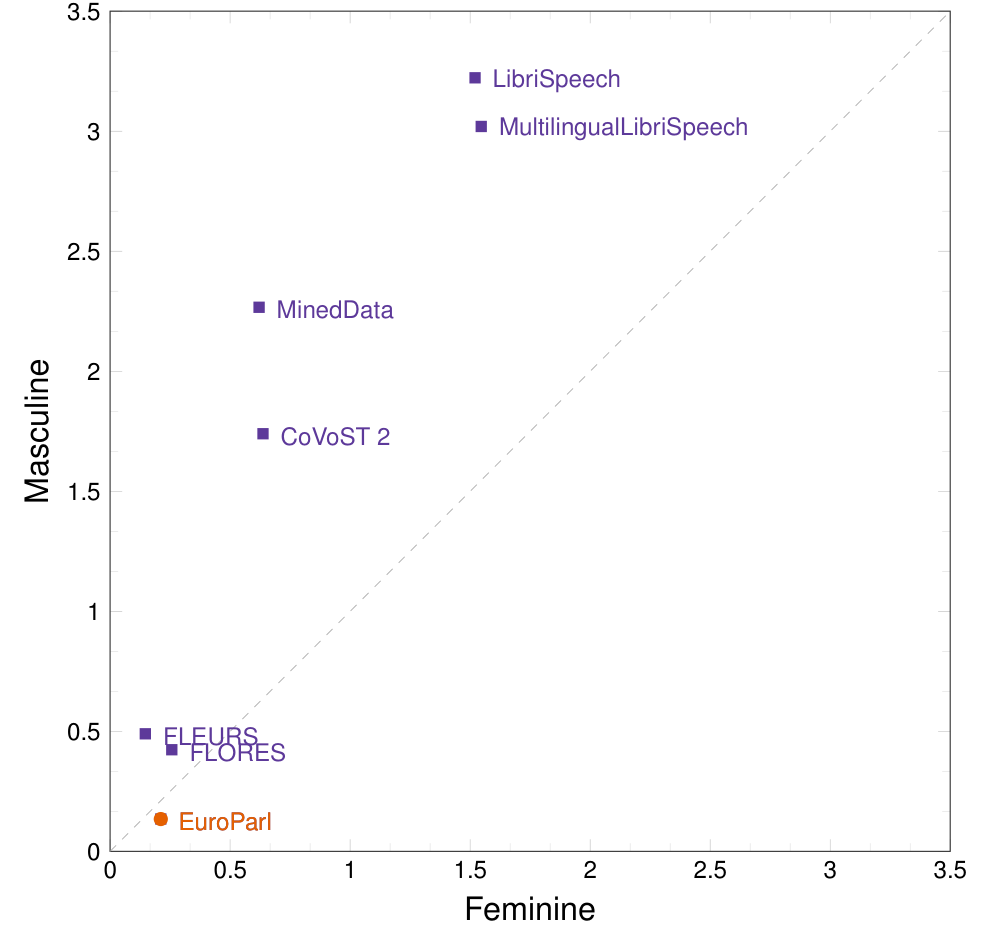
图Figure 23: Gender representation of English evaluation datasets (EuroParl, Flores, Fleurs, CoVoST 2, LibriSpeech and MultilingualLibriSpeech), and training mined data (SeamlessAlign). Vertical axis show the percentage of masculine representation and horizontal axis show the percentage of feminine representation.
图 23：英语评测数据集（EuroParl、FLORES、Fleurs、CoVoST 2、LibriSpeech、MultilingualLibriSpeech）与训练挖掘数据（SeamlessAlign）的性别呈现。纵轴为阳性呈现百分比，横轴为阴性呈现百分比。
6.3.5 Bias Key Findings In this section, we conducted a set of comprehensive evaluations on translation biases for S2TT and S2ST. We demonstrate the following: (1) in the absence of gender information, SeamlessM4T-Large exhibits an average preference of ∼10% towards translating to the masculine form (for both modalities); (2) utilizing feminine form as the source input leads to lower quality English translations compared to its masculine counterpart, showing a lack of robustness against gender inflection by ∼3% ; (3) SeamlessM4T-Large gets comparable bias results to the state-of-the-art, and (4) our gender representation analysis reveals an overrepresentation of masculine lexica compared to feminine in the analyzed datasets. More
6.3.5 偏见关键发现 本节中，我们对 S2TT 与 S2ST 的翻译偏见做了一组综合评测。我们证明：(1) 在缺乏性别信息时，SeamlessM4T-Large 平均约有 10% 倾向译成阳性形式（两个模态均如此）；(2) 以阴性形式为源输入，会导致英译质量较对应阳性更低，对性别变化缺乏约 3% 的鲁棒性；(3) SeamlessM4T-Large 的偏见结果可与最先进水平相比；以及 (4) 我们的性别呈现分析揭示：所分析数据集中阳性词汇相对阴性词汇呈现过度。更具体地说，传统的语音到语音翻译系统依赖由多个子系统逐级完成翻译的级联系统，使可扩展、高性能的统一语音翻译系统遥不可及。
80importantly, these findings pave the way towards standardizing the bias evaluation of speech translation at a massive scale.
更重要的是，这些发现为大规模标准化语音翻译偏见评测铺平了道路。80
6.4 局限Limitations
Due to the lack of available model-based techniques that could be applied to added toxicity or gender imbalance detection in this multimodal and massively multilingual setting, we used string-matching techniques that present known limitations.
由于缺乏可在这种多模态、海量多语言场景下用于检测新增毒性或性别失衡的模型化技术，我们采用了字符串匹配技术——它存在一些已知局限。
First, the use of toxicity lists with ETOX for added toxicity detection shares the same limitations with other word list-based detection techniques, which were previously discussed at length in NLLB Team et al. [2022] and Costa-jussà et al. [2023]. Briefly, the two main limitations of word list-based detectors are (1) their tendency to over-detect terms that are only toxic in specific contexts, and (2) their reliance on precise tokenization, which is more difficult to achieve in non-segmenting or highly agglutinative languages. When dealing with speech outputs, the process of using ASR before lexical matching adds one more source of error, which tends to lead to false negatives. This particularly affects the directions of eng–X, since ASR tends to be of lower quality for non-English languages.
首先，用 ETOX 毒性词表做新增毒性检测，与其他基于词表的检测技术有相同局限；NLLB Team et al. [2022] 与 Costa-jussà et al. [2023] 对此已有详尽讨论。简言之，基于词表的检测器有两大主要局限：（1）倾向过度检测只在特定上下文才有毒的词；（2）依赖精确分词，而这在非分词型或高度黏着的语言中更难实现。处理语音输出时，先做 ASR 再做词表匹配又引入一个误差来源，往往导致假阴性。这尤其影响 eng–X 方向，因为非英语语言的 ASR 质量通常较低。
Second, the use of noun lists for the detection of linguistic gender imbalance in large datasets shares all of the limitations of word list-based techniques previously stated, along with the added difficulty of relying on linguistic gender clues as a proxy for overall gender representation. Indeed, linguistic gender assignment does not follow the same pattern across all languages that mark gender, especially when it comes to inclusive plural forms (i.e., plural forms referring to groups that include more than one gender). In addition to general limitations, the use of a specific and limited set of 30 nouns (selected to mirror those used to build the HolisticBias dataset) does not guarantee that results can be generalized to all other sets of nouns that could be used to investigate gender representation (e.g., occupation nouns).
其次，用名词表在大数据集上检测语言性别失衡，除继承上述基于词表技术的全部局限外，还额外依赖语言性别线索作为整体性别表征的代理，这进一步增加了难度。实际上，语言性别指派在所有标记性别的语言中并不遵循同一模式，尤其是涉及包容性复数形式（即指代包含多种性别的群体的复数形式）时。除上述一般性局限外，使用一小组特定且受限的 30 个名词（为对齐构建 HolisticBias 数据集所用的名词而选）并不能保证结果可推广到所有其他可用于研究性别表征的名词集合（如职业名词）。
7 社会影响与结论Social Impact & Conclusion
Human communication is multisensorial—we take in sensory input from several modalities to process information in a dynamic way [Holler and Levinson, 2019]. In multilingual contexts, advancements in text-based machine translation have given rise to tools that help individuals communicate and learn in languages where proficiency is low [Lee, 2023]. That said, while foundational models such as NLLB [NLLB Team et al., 2022] push T2TT beyond 200 languages, direct speech translation has yet to achieve similar strides. To bridge this gap, we created a massively multilingual and multimodal machine translation system that paves the way for the next generation of speech translation technologies.
人类沟通是多感官的——我们从多个模态接收感知输入，以动态方式处理信息 [Holler and Levinson, 2019]。在多语环境下，基于文本的机器翻译的进步催生了一批工具，帮助个体在熟练度低的语言中进行沟通与学习 [Lee, 2023]。尽管如此，虽然像 NLLB [NLLB Team et al., 2022] 这样的基础模型已把 T2TT 推向 200 多种语言，直接语音翻译尚未取得类似进展。为弥合这一鸿沟，我们构建了一个大规模多语言、多模态的机器翻译系统，为下一代语音翻译技术铺平道路。
Using novel data and modeling approaches to combine S2ST, T2ST, S2TT, T2TT, and ASR in a single model, our main contributions are as follows. First, we built a new LID model aligned with our language coverage and conducted speech mining with the help of the newly conceived SONAR—a multilingual and multimodal sentence embedding space—to create a corpus of automatically aligned speech translations of more than 470,000 hours. By fusing four building blocks, (1) SeamlessM4T-NLLB, a massively multilingual T2TT model, (2) w2v-BERT 2.0, a speech representation learning model pre-trained on unlabeled speech audio data, (3) T2U, a text-to-unit sequence-to-sequence model, and (4) HiFi-GAN—a
借助新颖的数据与建模方法，把 S2ST、T2ST、S2TT、T2TT 与 ASR 融合进单一模型，我们的主要贡献如下。首先，我们构建了与语言覆盖一致的新语种识别（LID）模型，并借助新提出的 SONAR——一个多语言多模态句向量空间——进行语音挖掘，创建了一个自动对齐的、超过 470,000 小时的语音翻译语料。（正文/表格数据句，原始文本照录，数字与年份均保留） By fusing four building blocks, (1) SeamlessM4T-NLLB, a massively multilingual T2TT model, (2) w2v-BERT 2.0, a speech representation learning model pre-trained on unlabeled speech audio data, (3) T2U, a text-to-unit sequence-to-sequence model, and (4) HiFi-GAN—a
81multilingual vocoder for synthesizing speech from units, we built a unified model that covers S2ST from 100 languages to English (100-eng), English to 35 languages (eng-35), and S2TT for 100-eng and eng-95 languages. Notably, compared to previous work on S2ST, which primarily serves translations into English and not vice versa, SeamlessM4T is capable of performing translation from English towards 35 directions. When it comes to S2TT, SeamlessM4T achieves an improvement of 20% BLEU over the previous state-of-the-art in S2TT translation. Preliminary human evaluations of S2TT outputs evinced similarly impressive results; for translations from English, XSTS scores for 24 evaluated languages are consistently above 4 (out of 5). For into English directions, we see significant improvement over Whisper-Large-v2’s baseline for 7 out of 24 languages. We then evaluated our model for robustness, revealing that SeamlessM4T is more robust than [Radford et al., 2022] when it comes to background noises and speaker variations. By also including results of the level of added toxicity and gender bias, we hope to motivate future work targeting mitigation efforts.
（正文/表格数据句，原始文本照录，数字与年份均保留） multilingual vocoder for synthesizing speech from units, we built a unified model that covers S2ST from 100 languages to English (100-eng), English to 35 languages (eng-35), and S2TT for 100-eng and eng-95 languages.值得注意的是，与此前主要只做译入英语而不做反向的 S2ST 工作不同，SeamlessM4T 能从英语译向 35 个方向。在 S2TT 上，SeamlessM4T 相比此前 SOTA 取得 20% 的 BLEU 提升。对 S2TT 输出的初步人工评测也给出同样亮眼的结果：对 24 个被评测的从英语译出的语言，XSTS 分数一致高于 4（满分 5 分）。对译入英语方向，在 24 种语言中有 7 种相比 Whisper-Large-v2 基线有显著提升。我们还评测了模型的鲁棒性，结果显示：在背景噪声与说话人差异方面，SeamlessM4T 比 [Radford et al., 2022] 更鲁棒。通过同时给出新增毒性与性别偏见水平的结果，我们希望能激励后续面向缓解的研究。
Made with the goal of promoting accessibility, we open-source all contributions of our work, including two sizes of our model to ensure that even researchers with limited computing resources can use our work. In the section below, we discuss the potential social impact of SeamlessM4T by focusing on its downstream possibilities.
本着促进可及性的目标，我们把工作的全部贡献开源，包括两个尺寸的模型，以确保即便计算资源有限的研究者也能使用我们的工作。在下面的章节中，我们将围绕其下游可能性，讨论 SeamlessM4T 潜在的社会影响。
7.1 增强世界准备度Augmenting world-readiness
The world we live in has never been more interconnected—the global proliferation of the internet, mobile devices, communicative platforms, and social media exposes individuals to more multilingual content than ever before [Zuckerman, 2008]. The current social order places a demand on a person’s “world-readiness” [ACTFL, 2023], a measure of how competent a person is to take on the polyglot world. Initially developed in the context of language learning, world-readiness underscores the importance of being able to communicate in languages beyond one’s mother tongue for both instrumental (i.e., employment or schooling) and cultural reasons (i.e., to become a global citizen). That said, while we believe that language acquisition should remain a key mechanism for boosting one’s world-readiness, we acknowledge that doing so requires mental and material resources many people may not possess.
我们所生活的世界从未像今天这样互联——互联网、移动设备、通信平台与社交媒体的全球普及，使个体比以往任何时候都更多地暴露于多语言内容中 [Zuckerman, 2008]。当今的社会秩序对个人的「世界准备度」（world-readiness）[ACTFL, 2023] 提出要求——即一个人在多语世界中胜任的程度。「世界准备度」最初是在语言学习语境中提出的，它强调：既能出于工具性目的（如就业或求学），也能出于文化原因（成为「全球公民」）用母语之外的语言沟通的重要性。尽管我们相信语言习得仍应是提升世界准备度的关键途径，但我们也承认，这需要许多人可能不具备的心智与物质资源。
The downstream applications that SeamlessM4T supports could allow on-demand access to world-readiness by streamlining multilingual exchange across various contexts. Akin to what T2TT has accomplished for bridging the comprehension of multilingual texts, SeamlessM4T could have the same effects for speech. Research shows that contrary to one’s native language, where speech is more organically acquired than reading or writing [Liberman, 1992], this tendency is flipped when it comes to foreign languages [Cheng et al., 1999]. In other words, speech is often deemed more challenging than reading or writing in a foreign language context. SeamlessM4T-supported applications could act as a co-piloting mechanism that supports users in multilingual conversations and boost their confidence in speech-heavy interactions. As speech-based interfaces (i.e., audio assistants, voice memos, live transcriptions, etc.) and auditory content (i.e., podcasts, audiobooks, short-form videos, etc.)
SeamlessM4T 所支持的下游应用可以通过打通多种语境下的多语言交流，让世界准备度变得可按需获取。正如 T2TT 已经为多语言文本的理解架起桥梁，SeamlessM4T 也可能为语音带来同样的效果。研究表明：与母语中语音比读写更自然地习得 [Liberman, 1992] 的情形相反，外语学习中这一倾向是翻转的 [Cheng et al., 1999]。换句话说，在外语语境中，语音往往被认为比读写更难。SeamlessM4T 支持的应用可以充当「副驾驶」机制，在多语言对话中支持用户，并在以语音为主的交互中增强他们的信心。随着语音界面（如音频助手、语音备忘、实时转写等）与听觉内容（如播客、有声书、短视频等）
become ever more present in people’s lives, downstream applications enabled by
在人们生活中日益普及，由 SeamlessM4T 支持的下游应用可以带来更多样、更自然、更具动态的多语言体验，相比纯文本方案更具优势。（页码 82）
82SeamlessM4T could allow a greater variety of multilingual experiences and in ways that feel more natural and dynamic than its text-based counterparts.
在人们生活中日益普及，由 SeamlessM4T 支持的下游应用可以带来更多样、更自然、更具动态的多语言体验，相比纯文本方案更具优势。（页码 82）
From an inclusion standpoint, SeamlessM4T ’s focus on multimodality could make a meaningful difference in augmenting the world-readiness of those with accessibility needs and those whose languages contain multiple writing systems (as aforementioned in 2. For many who lack reading or writing skills, or are unable to rely on sight (i.e., people who are blind or with visual impairment), voice-assisted technologies are essential to how they communicate and stay connected [Belekar et al., 2020]. The ability to translate speech not only gives these groups more comprehensive access to information beyond their native languages, but also in a manner that is better suited for their communicative needs. Additionally, recognizing that some languages may have script variance, SeamlessM4T ’s offers up affordances that help circumvent the multiscript conundrum. For languages that do not have standardized writing systems, investments in speech recognition and translation may be instrumental in preventing endangerment. We hope that our effort can help contribute to this important movement.
从包容性角度，SeamlessM4T 对多模态的关注，对于提升有无障碍需求者、以及母语有多种书写系统者（见前文第 2 节）的世界准备度，可能带来有意义的改变。对许多缺乏读写能力、或无法依赖视觉（如盲人或视障者）的人而言，语音辅助技术对他们如何沟通、如何保持联系至关重要 [Belekar et al., 2020]。能够翻译语音，不仅让这些群体更全面地获取母语之外的信息，也更契合他们的沟通需求。此外，鉴于某些语言存在书写系统变体，SeamlessM4T 提供的功能有助于绕开多书写系统的困境。对没有标准化书写系统的语言，投资于语音识别与翻译可能是防止语言消亡的关键。我们希望我们的工作能为这一重要的事业贡献一份力量。
7.2 未来工作Future work
As is the case with most technologies, the distribution of benefits varies based on user demographics and social situation [Wang et al., 2023b].
与大多数技术一样，收益的分配会因用户人口统计学与社会处境而不同 [Wang et al., 2023b]。
While we make the case that SeamlessM4T could augment world-readiness by lowering the barriers in cross-lingual communication, some users may experience more difficulties using our work than others. For instance, like many other speech technologies, SeamlessM4T ’s ASR performance may vary based on gender, race, accent, or language [Koenecke et al., 2020; Ngueajio and Washington, 2022]. Moreover, our system’s performance when it comes to translating slang or proper nouns may also be inconsistent across high and low-resource languages.
虽然我们主张 SeamlessM4T 能通过降低跨语言沟通的门槛来增强世界准备度，但某些用户在使用我们工作时可能比其他人遇到更多困难。例如，与许多其他语音技术类似，SeamlessM4T 的 ASR 性能可能因性别、种族、口音或语言而异 [Koenecke et al., 2020; Ngueajio and Washington, 2022]。此外，我们的系统在翻译俚语或专有名词时，对高低资源语言的表现也可能不一致。
Another challenge for S2ST is that speech hinges on immediate reception and feedback compared to written language. In other words, a speaker is limited in their ability to ascertain the quality of an output or make “edits” in a live conversation. Without the ability to plan and revise with the help of back-translation or a native speaker, S2ST may carry higher degrees of interactional risks when it comes to mistranslations or toxicity. We urge researchers and developers who fine-tune or build products using SeamlessM4T to think critically about design features that could help users circumvent these potential obstacles. On a related note, we believe that SeamlessM4T-fueled applications should best be viewed as an augmentation device that assists in translation rather than a tool that replaces the need for language learning or reliable human interpreters. This reminder is especially pertinent in high-stakes situations involving legal or medical decision-making.
S2ST 的另一挑战在于：与书面语言相比，语音依赖即时的接收与反馈。换句话说，说话人在实时对话中很难判断输出质量或做出「修改」。在缺少回译或母语者协助进行规划与修正的情况下，S2ST 在误译或毒性方面的交互风险更高。我们敦促基于 SeamlessM4T 微调或构建产品的研究者与开发者，认真思考能够帮助用户绕开这些潜在障碍的设计特性。相关地，我们认为由 SeamlessM4T 驱动的应用，最好被视为辅助翻译的「增强设备」，而不是替代语言学习或可靠人工口译的工具。这一提醒在涉及法律或医疗决策的高风险场景中尤为重要。
Finally, speech is not spoken text—it encompasses a suite of prosodic (i.e., rhythm, stress, and intonation) and emotional components that deserve further research [Elbow, 1985]. To create S2ST systems that feel organic and natural, more research should be directed at output generation that preserves expressivity [Trilla and Alias, 2012]. In addition, the consummate realization of the Babel Fish requires deeper investments into research on low-latency speech translation. Developing systems that enable streaming (i.e., incrementally translating an input sentence as it is being presented) may increase the adoption of such systems in industry
最后，语音并不是「被说出来的文字」——它包含一整套韵律（节奏、重音、语调）与情感成分，值得进一步研究 [Elbow, 1985]。为打造自然、有生命力的 S2ST 系统，应把更多研究投入到能保留表现力的输出生成上 [Trilla and Alias, 2012]。此外，要真正实现「巴别鱼」（Babel Fish），需要在低延迟语音翻译研究上做更深入的投入。发展支持流式处理（即随着句子被读出而增量翻译）的系统，可能会提升这类系统在工业 83 或教育场景中的采用率 [Iranzo-Sánchez et al., 2022; Rybakov et al., 2022]。
83or educational contexts [Iranzo-Sánchez et al., 2022; Rybakov et al., 2022]. We hope that SeamlessM4T opens up new possibilities for both of these research areas.
（正文/表格数据句，原始文本照录，数字与年份均保留） or educational contexts [Iranzo-Sánchez et al., 2022; Rybakov et al., 2022].我们希望 SeamlessM4T 能为这两个研究方向打开新的可能性。
致谢Acknowledgments
We want to extend our gratitude to those who made this work possible. Thanks to Sergey Edunov and Angela Fan for helping shape the earlier stages of the project; Shruti Bhosale, Vedanuj Goswami, Fernando Hernandez and Yun Tang for their help to build better models; Mingda Chen for his contributions to Blaser 1.0; Kiryl Klyushkin for his help to build better experiences; Artyom Kozhevnikov for his contributions to Fairseq2 and Sonar inference; Zhaoheng Ni and Xiaohui Zhang for benchmarking audio denoising models; Neil Seejoor and Mark Duppenthaler for their help in setting up the demo; Vedanuj Goswami, Samuel Hsia, Bilge Acun-Uyan and Carole-Jean Wu who helped with efficiency optimizations; Belen Alastruey, Mohamed Anwar, Heng-Jui Chang, HyoJung Han, Chao-Wei Huang, Hui Lu, Siqi Ouyang, Yifan Peng, Phillip Rust, Jiatong Shi, Neha Verma, Sung-Lin Yeh, and all of our interns and residents for the energy and candid discussions they brought to the team; Mike Clark, Lauren Cohen, Jennifer Pak, Harrison Rudolph for their guidance; Emily Astbury, Lydia Baillergeau, Dana Beaty, Jeffrey Bennett, Jon Carvill, Anne Davidson, Aiman Farooq, Ashley Gabriel, Gopika Jhala, Christopher Johnson, Steph Miles, Ana Paula Kirschner Mofarrej, Raghu Nayani, Alyssa Newcomb, Tamara Piksa, Michelle Restrepo, Noha Rizk, Adébissy Tharinger, who helped our research reach new audiences; Geeta Chauhan, Ankit Gunapal, Caleb Ho, Dinesh Kannappan, Apostolos Kokolis, Teng Li, Matthias Reso, Shubho Sengupta, Hamid Shojanazeri, Xinyuan Zhang for assisting us with compute resources and infrastructure; Emmanuel Dupoux and Eric Michael Smith for their feedback on the paper; Chris Moghbel, Manohar Paluri, Joelle Pineau, Laurens van der Maaten, and Mary Williamson for their continued support of the project.
我们向所有使本工作成为可能的人致以诚挚谢意。感谢 Sergey Edunov 与 Angela Fan 帮助塑造项目早期；感谢 Shruti Bhosale、Vedanuj Goswami、Fernando Hernandez 与 Yun Tang 帮助构建更好的模型；感谢 Mingda Chen 对 Blaser 1.0 的贡献；感谢 Kiryl Klyushkin 帮助打造更好的体验；感谢 Artyom Kozhevnikov 对 Fairseq2 与 Sonar 推理的贡献；感谢 Zhaoheng Ni 与 Xiaohui Zhang 对音频去噪模型的基准测试；感谢 Neil Seejoor 与 Mark Duppenthaler 帮助搭建演示；感谢 Vedanuj Goswami、Samuel Hsia、Bilge Acun-Uyan 与 Carole-Jean Wu 帮助效率优化；感谢 Belen Alastruey、Mohamed Anwar、Heng-Jui Chang、HyoJung Han、Chao-Wei Huang、Hui Lu、Siqi Ouyang、Yifan Peng、Phillip Rust、Jiatong Shi、Neha Verma、Sung-Lin Yeh 以及所有实习生与驻场研究员为团队带来的能量与坦诚讨论；感谢 Mike Clark、Lauren Cohen、Jennifer Pak、Harrison Rudolph 的指导；感谢 Emily Astbury、Lydia Baillergeau、Dana Beaty、Jeffrey Bennett、Jon Carvill、Anne Davidson、Aiman Farooq、Ashley Gabriel、Gopika Jhala、Christopher Johnson、Steph Miles、Ana Paula Kirschner Mofarrej、Raghu Nayani、Alyssa Newcomb、Tamara Piksa、Michelle Restrepo、Noha Rizk、Adébissy Tharinger 帮助我们的研究触达更广受众；感谢 Geeta Chauhan、Ankit Gunapal、Caleb Ho、Dinesh Kannappan、Apostolos Kokolis、Teng Li、Matthias Reso、Shubho Sengupta、Hamid Shojanazeri、Xinyuan Zhang 在计算资源与基础设施上的协助；感谢 Emmanuel Dupoux 与 Eric Michael Smith 对论文的反馈；感谢 Chris Moghbel、Manohar Paluri、Joelle Pineau、Laurens van der Maaten 与 Mary Williamson 对项目的持续支持。
ReferencesReferences
ACTFL. World-readiness standards for learning languages, 2023. URL https://www.actfl.
org/educator-resources/world-readiness-standards-for-learning-languages.
Milind Agarwal, Sweta Agrawal, Antonios Anastasopoulos, Luisa Bentivogli, Ondřej Bojar, Claudia Borg, Marine Carpuat, Roldano Cattoni, Mauro Cettolo, Mingda Chen, William Chen, Khalid Choukri, Alexandra Chronopoulou, Anna Currey, Thierry Declerck, Qianqian Dong, Kevin Duh, Yannick Estève, Marcello Federico, Souhir Gahbiche, Barry Haddow, Benjamin Hsu, Phu Mon Htut, Hirofumi Inaguma, Dávid Javorský, John Judge, Yasumasa Kano, Tom Ko, Rishu Kumar, Pengwei Li, Xutai Ma, Prashant Mathur, Evgeny Matusov, Paul McNamee, John P. McCrae, Kenton Murray, Maria Nadejde, Satoshi Nakamura, Matteo Negri, Ha Nguyen, Jan Niehues, Xing Niu, Atul Kr. Ojha, John E. Ortega, Proyag Pal, Juan Pino, Lonneke van der Plas, Peter Polák, Elijah Rippeth, Elizabeth Salesky, Jiatong Shi, Matthias Sperber, Sebastian Stüker, Katsuhito Sudoh, Yun Tang, Brian Thompson, Kevin Tran, Marco Turchi, Alex Waibel, Mingxuan Wang, Shinji Watanabe, and Rodolfo Zevallos. FINDINGS OF THE IWSLT 2023 EVALUATION CAMPAIGN. In Proceedings of the 20th International Conference on Spoken Language Translation (IWSLT
842023), pages 1–61, Toronto, Canada (in-person and online), July 2023. Association for Computational Linguistics. URL https://aclanthology.org/2023.iwslt-1.1.
Antonios Anastasopoulos and David Chiang. Tied multitask learning for neural speech translation. In Proceedings of the 2018 Conference of the North American Chapter of the Association for Computational Linguistics: Human Language Technologies, Volume 1 (Long Papers), pages 82–91, New Orleans, Louisiana, June 2018. Association for Computational Linguistics. doi: 10.18653/v1/N18-1008. URL https://aclanthology.org/N18-1008.
Pierre Andrews, Guillaume Wenzek, Kevin Heffernan, Onur Çelebi, Anna Sun, Ammar Kamran, Yingzhe Guo, Alexandre Mourachko, Holger Schwenk, and Angela Fan. stopes - modular machine translation pipelines. In Proceedings of the 2022 Conference on Empirical Methods in Natural Language Processing: System Demonstrations, pages 258–265, Abu Dhabi, UAE, December 2022. Association for Computational Linguistics. URL https: //aclanthology.org/2022.emnlp-demos.26.
Rohan Anil, Andrew M. Dai, Orhan Firat, Melvin Johnson, Dmitry Lepikhin, Alexandre Passos, Siamak Shakeri, Emanuel Taropa, Paige Bailey, Zhifeng Chen, Eric Chu, Jonathan H. Clark, Laurent El Shafey, Yanping Huang, Kathy Meier-Hellstern, Gaurav Mishra, Erica Moreira, Mark Omernick, Kevin Robinson, Sebastian Ruder, Yi Tay, Kefan Xiao, Yuanzhong Xu, Yujing Zhang, Gustavo Hernandez Abrego, Junwhan Ahn, Jacob Austin, Paul Barham, Jan Botha, James Bradbury, Siddhartha Brahma, Kevin Brooks, Michele Catasta, Yong Cheng, Colin Cherry, Christopher A. Choquette-Choo, Aakanksha Chowdhery, Clément Crepy, Shachi Dave, Mostafa Dehghani, Sunipa Dev, Jacob Devlin, Mark Díaz, Nan Du, Ethan Dyer, Vlad Feinberg, Fangxiaoyu Feng, Vlad Fienber, Markus Freitag, Xavier Garcia, Sebastian Gehrmann, Lucas Gonzalez, Guy Gur-Ari, Steven Hand, Hadi Hashemi, Le Hou, Joshua Howland, Andrea Hu, Jeffrey Hui, Jeremy Hurwitz, Michael Isard, Abe Ittycheriah, Matthew Jagielski, Wenhao Jia, Kathleen Kenealy, Maxim Krikun, Sneha Kudugunta, Chang Lan, Katherine Lee, Benjamin Lee, Eric Li, Music Li, Wei Li, YaGuang Li, Jian Li, Hyeontaek Lim, Hanzhao Lin, Zhongtao Liu, Frederick Liu, Marcello Maggioni, Aroma Mahendru, Joshua Maynez, Vedant Misra, Maysam Moussalem, Zachary Nado, John Nham, Eric Ni, Andrew Nystrom, Alicia Parrish, Marie Pellat, Martin Polacek, Alex Polozov, Reiner Pope, Siyuan Qiao, Emily Reif, Bryan Richter, Parker Riley, Alex Castro Ros, Aurko Roy, Brennan Saeta, Rajkumar Samuel, Renee Shelby, Ambrose Slone, Daniel Smilkov, David R. So, Daniel Sohn, Simon Tokumine, Dasha Valter, Vijay Vasudevan, Kiran Vodrahalli, Xuezhi Wang, Pidong Wang, Zirui Wang, Tao Wang, John Wieting, Yuhuai Wu, Kelvin Xu, Yunhan Xu, Linting Xue, Pengcheng Yin, Jiahui Yu, Qiao Zhang, Steven Zheng, Ce Zheng, Weikang Zhou, Denny Zhou, Slav Petrov, and Yonghui Wu. Palm 2 technical report, 2023.
Ebrahim Ansari, Amittai Axelrod, Nguyen Bach, Ondřej Bojar, Roldano Cattoni, Fahim Dalvi, Nadir Durrani, Marcello Federico, Christian Federmann, Jiatao Gu, Fei Huang, Kevin Knight, Xutai Ma, Ajay Nagesh, Matteo Negri, Jan Niehues, Juan Pino, Elizabeth Salesky, Xing Shi, Sebastian Stüker, Marco Turchi, Alexander Waibel, and Changhan Wang. FINDINGS OF THE IWSLT 2020 EVALUATION CAMPAIGN. In Proceedings of the 17th International Conference on Spoken Language Translation, pages 1–34, Online,
85July 2020. Association for Computational Linguistics. doi: 10.18653/v1/2020.iwslt-1.1.
URL https://aclanthology.org/2020.iwslt-1.1.
Mohamed Anwar, Bowen Shi, Vedanuj Goswami, Wei-Ning Hsu, Juan Pino, and Changhan Wang. Muavic: A multilingual audio-visual corpus for robust speech recognition and robust speech-to-text translation. arXiv preprint arXiv:2303.00628, 2023.
Mikel Artetxe and Holger Schwenk. Margin-based parallel corpus mining with multilingual sentence embeddings. In Proceedings of the 57th Annual Meeting of the Association for Computational Linguistics, pages 3197–3203, Florence, Italy, July 2019a. Association for Computational Linguistics. doi: 10.18653/v1/P19-1309. URL https://aclanthology.
org/P19-1309.
Mikel Artetxe and Holger Schwenk. Massively multilingual sentence embeddings for zero-shot cross-lingual transfer and beyond. Transactions of the Association for Computational Linguistics, 7:597–610, 2019b. doi: 10.1162/tacl_a_00288. URL https://aclanthology.
org/Q19-1038.
Arun Babu, Changhan Wang, Andros Tjandra, Kushal Lakhotia, Qiantong Xu, Naman Goyal, Kritika Singh, Patrick von Platen, Yatharth Saraf, Juan Pino, Alexei Baevski, Alexis Conneau, and Michael Auli. XLS-R: Self-supervised Cross-lingual Speech Representation Learning at Scale. In Proc. Interspeech 2022, pages 2278–2282, 2022. doi: 10.21437/ Interspeech.2022-143.
Alexei Baevski, Yuhao Zhou, Abdelrahman Mohamed, and Michael Auli. wav2vec 2.0: A framework for self-supervised learning of speech representations. In H. Larochelle, M. Ranzato, R. Hadsell, M.F. Balcan, and H. Lin, editors, Advances in Neural Information Processing Systems, volume 33, pages 12449–12460. Curran Associates, Inc., 2020.
URL https://proceedings.neurips.cc/paper_files/paper/2020/file/ 92d1e1eb1cd6f9fba3227870bb6d7f07-Paper.pdf.
Alexei Baevski, Wei-Ning Hsu, Qiantong Xu, Arun Babu, Jiatao Gu, and Michael Auli.
data2vec: A general framework for self-supervised learning in speech, vision and language, 2022. URL https://arxiv.org/abs/2202.03555.
Parnia Bahar, Tobias Bieschke, and Hermann Ney. A comparative study on end-to-end speech to text translation. 2019 IEEE Automatic Speech Recognition and Understanding Workshop (ASRU), pages 792–799, 2019.
URL https://api.semanticscholar.org/ CorpusID:204791999.
Ankur Bapna, Colin Cherry, Yu Zhang, Ye Jia, Melvin Johnson, Yong Cheng, Simran Khanuja, Jason Riesa, and Alexis Conneau. mslam: Massively multilingual joint pre-training for speech and text. arXiv preprint arXiv:2202.01374, 2022.
Aishwarya Belekar, Shivani Sunka, Neha Bhawar, and Sudhir Bagade. Voice based e-mail for the visually impaired. International Journal of Computer Applications, 175(16):8–12,
2020.86Emily M Bender, Timnit Gebru, Angelina McMillan-Major, and Margaret Mitchell. On the dangers of stochastic parrots: Can language models be too big? In Proceedings of the 2021 ACM Conference on Fairness, Accountability, and Transparency, pages 610–623, 2021.
Luisa Bentivogli, Beatrice Savoldi, Matteo Negri, Mattia A. Di Gangi, Roldano Cattoni, and Marco Turchi.
Gender in danger?
evaluating speech translation technology on the MuST-SHE corpus.
In Proceedings of the 58th Annual Meeting of the Association for Computational Linguistics, pages 6923–6933, Online, July 2020. Association for Computational Linguistics.
doi: 10.18653/v1/2020.acl-main.619.
URL https://aclanthology.org/2020.acl-main.619.
Alexandre Berard, Olivier Pietquin, Christophe Servan, and Laurent Besacier. Listen and translate: A proof of concept for end-to-end speech-to-text translation. In NeurIPS Workshop on End-to-end Learning for Speech and Audio Processing., 2016.
Alexandre Bérard, Laurent Besacier, Ali Can Kocabiyikoglu, and Olivier Pietquin. End-toend automatic speech translation of audiobooks. In 2018 IEEE International Conference on Acoustics, Speech and Signal Processing (ICASSP), pages 6224–6228. IEEE, 2018.
Zalán Borsos, Raphaël Marinier, Damien Vincent, Eugene Kharitonov, Olivier Pietquin, Matt Sharifi, Dominik Roblek, Olivier Teboul, David Grangier, Marco Tagliasacchi, and Neil Zeghidour.
Audiolm: A language modeling approach to audio generation. IEEE/ACM Transactions on Audio, Speech, and Language Processing, 31:2523–2533, 2023. doi: 10.1109/TASLP.2023.3288409.
Weicheng Cai, Danwei Cai, Shen Huang, and Ming Li. Utterance-level end-to-end language identification using attention-based cnn-blstm. In ICASSP 2019-2019 IEEE international conference on acoustics, speech and signal processing (ICASSP), pages 5991–5995. IEEE,
2019.Rich Caruana. Multitask learning. Machine learning, 28:41–75, 1997.
Edresson Casanova, Julian Weber, Christopher D Shulby, Arnaldo Candido Junior, Eren Gölge, and Moacir A Ponti. Yourtts: Towards zero-shot multi-speaker tts and zero-shot voice conversion for everyone. In International Conference on Machine Learning, pages 2709–2720. PMLR, 2022.
William Chan, Navdeep Jaitly, Quoc Le, and Oriol Vinyals. Listen, attend and spell: A neural network for large vocabulary conversational speech recognition. In 2016 IEEE International Conference on Acoustics, Speech and Signal Processing (ICASSP), pages 4960–4964, 2016. doi: 10.1109/ICASSP.2016.7472621.
Mingda Chen, Paul-Ambroise Duquenne, Pierre Andrews, Justine Kao, Alexandre Mourachko, Holger Schwenk, and Marta R. Costa-jussà.
BLASER: A text-free speech-to-speech translation evaluation metric. In Proceedings of the 61st Annual Meeting of the Association for Computational Linguistics (Volume 1: Long Papers), pages 9064–9079, Toronto, Canada, July 2023a. Association for Computational Linguistics. URL https://aclanthology.org/ 2023.acl-long.504.
87Mingda Chen, Kevin Heffernan, Onur Çelebi, Alexandre Mourachko, and Holger Schwenk.
xSIM++: An improved proxy to bitext mining performance for low-resource languages. In Proceedings of the 61st Annual Meeting of the Association for Computational Linguistics (Volume 2: Short Papers), pages 101–109, Toronto, Canada, July 2023b. Association for Computational Linguistics.
doi: 10.18653/v1/2023.acl-short.10.
URL https://aclanthology.org/2023.acl-short.10.
Peng-Jen Chen, Kevin Tran, Yilin Yang, Jingfei Du, Justine Kao, Yu-An Chung, Paden Tomasello, Paul-Ambroise Duquenne, Holger Schwenk, Hongyu Gong, Hirofumi Inaguma, Sravya Popuri, Changhan Wang, Juan Pino, Wei-Ning Hsu, and Ann Lee. Speech-tospeech translation for a real-world unwritten language. In Findings of the Association for Computational Linguistics: ACL 2023, pages 4969–4983, Toronto, Canada, July 2023c. Association for Computational Linguistics. URL https://aclanthology.org/ 2023.findings-acl.307.
Yen-Chun Chen, Linjie Li, Licheng Yu, Ahmed El Kholy, Faisal Ahmed, Zhe Gan, Yu Cheng, and Jingjing Liu. Uniter: Universal image-text representation learning. In European conference on computer vision, pages 104–120. Springer, 2020.
Zhehuai Chen, Yu Zhang, Andrew Rosenberg, Bhuvana Ramabhadran, Pedro J. Moreno, Ankur Bapna, and Heiga Zen. Maestro: Matched speech text representations through modality matching. In Interspeech, 2022. URL https://api.semanticscholar.org/ CorpusID:248006130.
Yong Cheng, Yu Zhang, Melvin Johnson, Wolfgang Macherey, and Ankur Bapna. Mu2SLAM: Multitask, multilingual speech and language models. In Andreas Krause, Emma Brunskill, Kyunghyun Cho, Barbara Engelhardt, Sivan Sabato, and Jonathan Scarlett, editors, Proceedings of the 40th International Conference on Machine Learning, volume 202 of Proceedings of Machine Learning Research, pages 5504–5520. PMLR, 23–29 Jul 2023. URL https://proceedings.mlr.press/v202/cheng23e.html.
Yuh-show Cheng, Elaine K Horwitz, and Diane L Schallert. Language anxiety: Differentiating writing and speaking components. Language learning, 49(3):417–446, 1999.
Chung-Cheng Chiu, James Qin, Yu Zhang, Jiahui Yu, and Yonghui Wu. Self-supervised learning with random-projection quantizer for speech recognition. In International Conference on Machine Learning, pages 3915–3924. PMLR, 2022.
Prafulla Kumar Choubey, Anna Currey, Prashant Mathur, and Georgiana Dinu. GFST: Gender-filtered self-training for more accurate gender in translation.
In Proceedings of the 2021 Conference on Empirical Methods in Natural Language Processing, pages 1640–1654, Online and Punta Cana, Dominican Republic, November 2021. Association for Computational Linguistics. doi: 10.18653/v1/2021.emnlp-main.123. URL https: //aclanthology.org/2021.emnlp-main.123.
Yu-An Chung, Yu Zhang, Wei Han, Chung-Cheng Chiu, James Qin, Ruoming Pang, and Yonghui Wu. w2v-bert: Combining contrastive learning and masked language modeling for self-supervised speech pre-training. In 2021 IEEE Automatic Speech Recognition and
88Understanding Workshop (ASRU), pages 244–250, 2021. doi: 10.1109/ASRU51503.2021.
9688253.Alexis Conneau, Min Ma, Simran Khanuja, Yu Zhang, Vera Axelrod, Siddharth Dalmia, Jason Riesa, Clara Rivera, and Ankur Bapna. Fleurs: Few-shot learning evaluation of universal representations of speech. arXiv preprint arXiv:2205.12446, 2022. URL https://arxiv.org/abs/2205.12446.
Marta Costa-jussà, Christine Basta, Oriol Domingo, and André Rubungo. Occgen: Selection of real-world multilingual parallel data balanced in gender within occupations. In S. Koyejo, S. Mohamed, A. Agarwal, D. Belgrave, K. Cho, and A. Oh, editors, Advances in Neural Information Processing Systems, volume 35, pages 1445–1457. Curran Associates, Inc., 2022. URL https://proceedings.neurips.cc/paper_files/paper/2022/ file/09933f07ae2ccbca7212bb4e43de8db0-Paper-Datasets_and_Benchmarks.pdf.
Marta R. Costa-jussà, Christine Basta, and Gerard I. Gállego. Evaluating gender bias in speech translation. In Proceedings of the Thirteenth Language Resources and Evaluation Conference, pages 2141–2147, Marseille, France, June 2022. European Language Resources Association. URL https://aclanthology.org/2022.lrec-1.230.
Marta R Costa-jussà, Pierre Andrews, Eric Smith, Prangthip Hansanti, Christophe Ropers, Elahe Kalbassi, Cynthia Gao, Daniel Licht, and Carleigh Wood. Multilingual holistic bias: Extending descriptors and patterns to unveil demographic biases in languages at scale.
arXiv preprint arXiv:2305.13198, 2023.
Marta R. Costa-jussà, Carlos Escolano, Christine Basta, Javier Ferrando, Roser Batlle, and Ksenia Kharitonova. Interpreting gender bias in neural machine translation: Multilingual architecture matters. Proceedings of the AAAI Conference on Artificial Intelligence, 36 (11):11855–11863, Jun. 2022. doi: 10.1609/aaai.v36i11.21442. URL https://ojs.aaai.
org/index.php/AAAI/article/view/21442.
Marta R. Costa-jussà, Eric Smith, Christophe Ropers, Daniel Licht, Jean Maillard, Javier Ferrando, and Carlos Escolano. Toxicity in multilingual machine translation at scale, 2023.
M.R. Costa-jussà. An analysis of gender bias studies in natural language processing. Nature Machine Intelligence, pages 495—-496, 2019. doi: 10.1038/s42256-019-0105-5.
Siddharth Dalmia, Brian Yan, Vikas Raunak, Florian Metze, and Shinji Watanabe. Searchable hidden intermediates for end-to-end models of decomposable sequence tasks. In Proceedings of the 2021 Conference of the North American Chapter of the Association for Computational Linguistics: Human Language Technologies, pages 1882–1896, Online, June 2021. Association for Computational Linguistics. doi: 10.18653/v1/2021.naacl-main.151.
URL https://aclanthology.org/2021.naacl-main.151.
Alexandre D’efossez, Jade Copet, Gabriel Synnaeve, and Yossi Adi. High fidelity neural audio compression. ArXiv, abs/2210.13438, 2022. URL https://api.semanticscholar.
org/CorpusID:253097788.
89Najim Dehak, Pedro A Torres-Carrasquillo, Douglas Reynolds, and Reda Dehak. Language recognition via i-vectors and dimensionality reduction. In Twelfth annual conference of the international speech communication association, 2011.
Brecht Desplanques, Jenthe Thienpondt, and Kris Demuynck. ECAPA-TDNN: emphasized channel attention, propagation and aggregation in TDNN based speaker verification. In Helen Meng, Bo Xu, and Thomas Fang Zheng, editors, Interspeech 2020, 21st Annual Conference of the International Speech Communication Association, Virtual Event, Shanghai, China, 25-29 October 2020, pages 3830–3834. ISCA, 2020. doi: 10.21437/Interspeech.
2020-2650. URL https://doi.org/10.21437/Interspeech.2020-2650.
Pranav Dheram, Murugesan Ramakrishnan, Anirudh Raju, I-Fan Chen, Brian King, Katherine Powell, Melissa Saboowala, Karan Shetty, and Andreas Stolcke. Toward fairness in speech recognition: Discovery and mitigation of performance disparities. arXiv preprint arXiv:2207.11345, 2022.
Mattia A. Di Gangi, Roldano Cattoni, Luisa Bentivogli, Matteo Negri, and Marco Turchi.
MuST-C: a Multilingual Speech Translation Corpus. In Proceedings of the 2019 Conference of the North American Chapter of the Association for Computational Linguistics: Human Language Technologies, Volume 1 (Long and Short Papers), pages 2012–2017, Minneapolis, Minnesota, June 2019. Association for Computational Linguistics. doi: 10.18653/v1/ N19-1202. URL https://aclanthology.org/N19-1202.
Paul-Ambroise Duquenne, Hongyu Gong, and Holger Schwenk.
Multimodal and multilingual embeddings for large-scale speech mining.
In M. Ranzato, A. Beygelzimer, Y. Dauphin, P.S. Liang, and J. Wortman Vaughan, editors, Advances in Neural Information Processing Systems, volume 34, pages 15748–15761. Curran Associates, Inc., 2021.
URL https://proceedings.neurips.cc/paper_files/paper/2021/file/ 8466f9ace6a9acbe71f75762ffc890f1-Paper.pdf.
Paul-Ambroise Duquenne, Hongyu Gong, Benoît Sagot, and Holger Schwenk. T-modules: Translation modules for zero-shot cross-modal machine translation. In Proceedings of the 2022 Conference on Empirical Methods in Natural Language Processing, pages 5794– 5806, Abu Dhabi, United Arab Emirates, December 2022. Association for Computational Linguistics. doi: 10.18653/v1/2022.emnlp-main.391. URL https://aclanthology.org/ 2022.emnlp-main.391.
Paul-Ambroise Duquenne, Hongyu Gong, Ning Dong, Jingfei Du, Ann Lee, Vedanuj Goswami, Changhan Wang, Juan Pino, Benoît Sagot, and Holger Schwenk. SpeechMatrix: A largescale mined corpus of multilingual speech-to-speech translations. In ACL (long paper), pages 16251–16269, 2023a. URL https://aclanthology.org/2023.acl-long.899.
Paul-Ambroise Duquenne, Holger Schwenk, and Benoit Sagot.
SONAR: sentence-level multimodal and language-agnostic representations, 2023b. URL https://arxiv.org/abs/
2308.11466.Paul-Ambroise Duquenne, Holger Schwenk, and Benoît Sagot.
Modular speech-to-text translation for zero-shot cross-modal transfer. In Interspeech, 2023c.
90Peter Elbow. The shifting relationships between speech and writing. College composition and communication, 36(3):283–303, 1985.
Angela Fan, Shruti Bhosale, Holger Schwenk, Zhiyi Ma, Ahmed El-Kishky, Siddharth Goyal, Mandeep Baines, Onur Celebi, Guillaume Wenzek, Vishrav Chaudhary, Naman Goyal, Tom Birch, Vitaliy Liptchinsky, Sergey Edunov, Edouard Grave, Michael Auli, and Armand Joulin. Beyond english-centric multilingual machine translation. The Journal of Machine Learning Research, 2020.
Fangxiaoyu Feng, Yinfei Yang, Daniel Cer, Naveen Arivazhagan, and Wei Wang. Languageagnostic BERT sentence embedding. In Proceedings of the 60th Annual Meeting of the Association for Computational Linguistics (Volume 1: Long Papers), pages 878–891, Dublin, Ireland, May 2022. Association for Computational Linguistics. doi: 10.18653/v1/2022.
acl-long.62. URL https://aclanthology.org/2022.acl-long.62.
Sarith Fernando, Vidhyasaharan Sethu, Eliathamby Ambikairajah, and Julien Epps. Bidirectional modelling for short duration language identification. In Interspeech, pages 2809–2813,
2017.Tsu-Jui Fu, Linjie Li, Zhe Gan, Kevin Lin, William Yang Wang, Lijuan Wang, and Zicheng Liu. Violet: End-to-end video-language transformers with masked visual-token modeling.
arXiv preprint arXiv:2111.12681, 2021.
Philip Gage. A new algorithm for data compression. C Users Journal, 12(2):23–38, 1994.
Marco Gaido, Matteo Negri, Mauro Cettolo, and Marco Turchi. Beyond voice activity detection: Hybrid audio segmentation for direct speech translation. In Mourad Abbas and Abed Alhakim Freihat, editors, 4th International Conference on Natural Language and Speech Processing, Trento, Italy, November 12-13, 2021, pages 87–94. Association for Computational Linguistics, 2021. URL https://aclanthology.org/2021.icnlsp-1.7.
Gerard I. Gállego, Ioannis Tsiamas, Carlos Escolano, José A. R. Fonollosa, and Marta R.
Costa-jussà. End-to-end speech translation with pre-trained models and adapters: UPC at IWSLT 2021. In Marcello Federico, Alex Waibel, Marta R. Costa-jussà, Jan Niehues, Sebastian Stüker, and Elizabeth Salesky, editors, Proceedings of the 18th International Conference on Spoken Language Translation, IWSLT 2021, Bangkok, Thailand (online), August 5-6, 2021, pages 110–119. Association for Computational Linguistics, 2021. doi: 10.18653/v1/2021.iwslt-1.11. URL https://doi.org/10.18653/v1/2021.iwslt-1.11.
Zhe Gan, Yen-Chun Chen, Linjie Li, Chen Zhu, Yu Cheng, and Jingjing Liu. Large-scale adversarial training for vision-and-language representation learning. Advances in Neural Information Processing Systems, 33:6616–6628, 2020.
Mattia Antonino Di Gangi, Matteo Negri, and Marco Turchi. One-to-many multilingual endto-end speech translation. 2019 IEEE Automatic Speech Recognition and Understanding Workshop (ASRU), pages 585–592, 2019.
URL https://api.semanticscholar.org/ CorpusID:203905407.
91GBD 2019 Blindness and Vision Impairment Collaborators. Trends in prevalence of blindness and distance and near vision impairment over 30 years: an analysis for the global burden of disease study. The Lancet global health, 9(2):e130–e143, 2021.
Javier García Gilabert, Carlos Escolano, and Marta R. Costa-Jussà. Resetox: Re-learning attention weights for toxicity mitigation in machine translation, 2023.
Hongyu Gong, Ning Dong, Sravya Popuri, Vedanuj Goswami, Ann Lee, and Juan Pino.
Multilingual speech-to-speech translation into multiple target languages. arXiv preprint arXiv:2307.08655, 2023.
Naman Goyal, Cynthia Gao, Vishrav Chaudhary, Peng-Jen Chen, Guillaume Wenzek, Da Ju, Sanjana Krishnan, Marc’Aurelio Ranzato, Francisco Guzmán, and Angela Fan. The Flores-101 evaluation benchmark for low-resource and multilingual machine translation.
Transactions of the Association for Computational Linguistics, 10:522–538, 2022. doi: 10.1162/tacl_a_00474. URL https://aclanthology.org/2022.tacl-1.30.
Yvette Graham, Timothy Baldwin, Alistair Moffat, and Justin Zobel. Continuous measurement scales in human evaluation of machine translation.
In Proceedings of the 7th Linguistic Annotation Workshop and Interoperability with Discourse, pages 33– 41, Sofia, Bulgaria, August 2013. Association for Computational Linguistics.
URL https://aclanthology.org/W13-2305.
Anmol Gulati, James Qin, Chung-Cheng Chiu, Niki Parmar, Yu Zhang, Jiahui Yu, Wei Han, Shibo Wang, Zhengdong Zhang, Yonghui Wu, and Ruoming Pang. Conformer: Convolution-augmented Transformer for Speech Recognition. In Proc. Interspeech 2020, pages 5036–5040, 2020. doi: 10.21437/Interspeech.2020-3015.
Harald Hammarström, Robert Forkel, Martin Haspelmath, and Sebastian Bank. Glottolog database 4.6, 2022.
Caner Hazirbas, Joanna Bitton, Brian Dolhansky, Jacqueline Pan, Albert Gordo, and Cristian Canton Ferrer. Casual conversations: A dataset for measuring fairness in ai. In Proceedings of the IEEE/CVF Conference on Computer Vision and Pattern Recognition, pages 2289–2293, 2021.
Kevin Heffernan, Onur Çelebi, and Holger Schwenk. Bitext mining using distilled sentence representations for low-resource languages. In Findings of the Association for Computational Linguistics: EMNLP 2022, pages 2101–2112, Abu Dhabi, United Arab Emirates, December 2022. Association for Computational Linguistics. doi: 10.18653/v1/2022.findings-emnlp.154.
URL https://aclanthology.org/2022.findings-emnlp.154.
Judith Holler and Stephen C Levinson. Multimodal language processing in human communication. Trends in Cognitive Sciences, 23(8):639–652, 2019.
Wei-Ning Hsu, Benjamin Bolte, Yao-Hung Hubert Tsai, Kushal Lakhotia, Ruslan Salakhutdinov, and Abdelrahman Mohamed. Hubert: Self-supervised speech representation learning by masked prediction of hidden units. IEEE/ACM Transactions on Audio, Speech, and Language Processing, 29:3451–3460, 2021.
92Ke Hu, Tara N. Sainath, Ruoming Pang, and Rohit Prabhavalkar. Deliberation model based two-pass end-to-end speech recognition. In ICASSP 2020 - 2020 IEEE International Conference on Acoustics, Speech and Signal Processing (ICASSP), pages 7799–7803, 2020.
doi: 10.1109/ICASSP40776.2020.9053606.
Hirofumi Inaguma, Kevin Duh, Tatsuya Kawahara, and Shinji Watanabe. Multilingual endto-end speech translation. In 2019 IEEE Automatic Speech Recognition and Understanding Workshop (ASRU), pages 570–577. IEEE, 2019.
Hirofumi Inaguma, Sravya Popuri, Ilia Kulikov, Peng-Jen Chen, Changhan Wang, Yu-An Chung, Yun Tang, Ann Lee, Shinji Watanabe, and Juan Pino. UnitY: Two-pass direct speech-to-speech translation with discrete units. In Proceedings of the 61st Annual Meeting of the Association for Computational Linguistics (Volume 1: Long Papers), pages 15655– 15680, Toronto, Canada, July 2023. Association for Computational Linguistics. URL https://aclanthology.org/2023.acl-long.872.
Javier Iranzo-Sánchez, Joan Albert Silvestre-Cerda, Javier Jorge, Nahuel Roselló, Adria Giménez, Albert Sanchis, Jorge Civera, and Alfons Juan. Europarl-st: A multilingual corpus for speech translation of parliamentary debates. In ICASSP 2020-2020 IEEE International Conference on Acoustics, Speech and Signal Processing (ICASSP), pages 8229–8233. IEEE, 2020.
Javier Iranzo-Sánchez, Jorge Civera, and Alfons Juan. From simultaneous to streaming machine translation by leveraging streaming history. arXiv preprint arXiv:2203.02459,
2022.Anastasia Iskhakova, Daniyar Wolf, and Roman Meshcheryakov. Automated destructive behavior state detection on the 1d cnn-based voice analysis. In Speech and Computer: 22nd International Conference, SPECOM 2020, St. Petersburg, Russia, October 7–9, 2020, Proceedings, page 184–193, Berlin, Heidelberg, 2020. Springer-Verlag. ISBN 978- 3-030-60275-8. doi: 10.1007/978-3-030-60276-5\_19. URL https://doi.org/10.1007/
978-3-030-60276-5_19.Ye Jia, Melvin Johnson, Wolfgang Macherey, Ron J Weiss, Yuan Cao, Chung-Cheng Chiu, Naveen Ari, Stella Laurenzo, and Yonghui Wu. Leveraging weakly supervised data to improve end-to-end speech-to-text translation. In ICASSP 2019-2019 IEEE International Conference on Acoustics, Speech and Signal Processing (ICASSP), pages 7180–7184. IEEE, 2019a.
Ye Jia, Ron J. Weiss, Fadi Biadsy, Wolfgang Macherey, Melvin Johnson, Zhifeng Chen, and Yonghui Wu. Direct Speech-to-Speech Translation with a Sequence-to-Sequence Model. In Proc. Interspeech 2019, pages 1123–1127, 2019b. doi: 10.21437/Interspeech.2019-1951.
Ye Jia, Michelle Tadmor Ramanovich, Tal Remez, and Roi Pomerantz. Translatotron 2: High-quality direct speech-to-speech translation with voice preservation. In Kamalika Chaudhuri, Stefanie Jegelka, Le Song, Csaba Szepesvari, Gang Niu, and Sivan Sabato, editors, Proceedings of the 39th International Conference on Machine Learning, volume 162 of Proceedings of Machine Learning Research, pages 10120–10134. PMLR, 17–23 Jul 2022a. URL https://proceedings.mlr.press/v162/jia22b.html.
93Ye Jia, Michelle Tadmor Ramanovich, Quan Wang, and Heiga Zen. CVSS corpus and massively multilingual speech-to-speech translation. In Proceedings of the Thirteenth Language Resources and Evaluation Conference, pages 6691–6703, Marseille, France, June 2022b. European Language Resources Association. URL https://aclanthology.org/ 2022.lrec-1.720.
Jeff Johnson, Matthijs Douze, and Hervé Jégou. Billion-scale similarity search with GPUs.
IEEE Transactions on Big Data, 7(3):535–547, 2019.
Youngjoo Jung and Bora Kim. Coexistence of multiple writing systems: Classifying digraphia in post-socialist countries. Journal of Eurasian Studies, page 18793665231188380, 2023.
Sameer Khurana, Antoine Laurent, and James Glass. Samu-xlsr: Semantically-aligned multimodal utterance-level cross-lingual speech representation. arXiv preprint arXiv:2205.08180,
2022.Svetlana Kiritchenko, Isar Nejadgholi, and Kathleen C Fraser. Confronting abusive language online: A survey from the ethical and human rights perspective. Journal of Artificial Intelligence Research, 71:431–478, 2021.
Tom Kocmi, Rachel Bawden, OndÅ™ej Bojar, Anton Dvorkovich, Christian Federmann, Mark Fishel, Thamme Gowda, Yvette Graham, Roman Grundkiewicz, Barry Haddow, Rebecca Knowles, Philipp Koehn, Christof Monz, Makoto Morishita, Masaaki Nagata, Toshiaki Nakazawa, Michal Novák, Martin Popel, Maja Popović, and Mariya Shmatova. Findings of the 2022 conference on machine translation (wmt22). In Proceedings of the Seventh Conference on Machine Translation, pages 1–45, Abu Dhabi, December 2022. Association for Computational Linguistics. URL https://aclanthology.org/2022.wmt-1.1.
Philipp Koehn. Europarl: A parallel corpus for statistical machine translation. In Proceedings of Machine Translation Summit X: Papers, pages 79–86, Phuket, Thailand, September 13-15 2005. URL https://aclanthology.org/2005.mtsummit-papers.11.
Allison Koenecke, Andrew Nam, Emily Lake, Joe Nudell, Minnie Quartey, Zion Mengesha, Connor Toups, John R Rickford, Dan Jurafsky, and Sharad Goel. Racial disparities in automated speech recognition. Proceedings of the National Academy of Sciences, 117(14):
7684–7689, 2020.Jungil Kong, Jaehyeon Kim, and Jaekyoung Bae. Hifi-gan: Generative adversarial networks for efficient and high fidelity speech synthesis. Advances in Neural Information Processing Systems, 33:17022–17033, 2020.
Robert Kraut, Jolene Galegher, Robert Fish, and Barbara Chalfonte. Task requirements and media choice in collaborative writing. Human–Computer Interaction, 7(4):375–407, 1992.
Taku Kudo and John Richardson. SentencePiece: A simple and language independent subword tokenizer and detokenizer for neural text processing. In Proceedings of the 2018 Conference on Empirical Methods in Natural Language Processing: System Demonstrations, pages 66–71, Brussels, Belgium, November 2018. Association for Computational Linguistics.
doi: 10.18653/v1/D18-2012. URL https://aclanthology.org/D18-2012.
94Amit Kumar and Nicholas Epley. It’s surprisingly nice to hear you: Misunderstanding the impact of communication media can lead to suboptimal choices of how to connect with others. Journal of Experimental Psychology: General, 150(3):595, 2021.
Ravi Kumar Vuddagiri, Krishna Gurugubelli, Priyam Jain, Hari Krishna Vydana, and Anil Kumar Vuppala. IIITH-ILSC Speech Database for Indain Language Identification. In Proc.
6th Workshop on Spoken Language Technologies for Under-Resourced Languages (SLTU 2018), pages 56–60, 2018. doi: 10.21437/SLTU.2018-12.
Kushal Lakhotia, Eugene Kharitonov, Wei-Ning Hsu, Yossi Adi, Adam Polyak, Benjamin Bolte, Tu-Anh Nguyen, Jade Copet, Alexei Baevski, Abdelrahman Mohamed, and Emmanuel Dupoux.
On generative spoken language modeling from raw audio. Transactions of the Association for Computational Linguistics, 9:1336–1354, 2021. doi: 10.1162/tacl_a_00430. URL https://aclanthology.org/2021.tacl-1.79.
Alon Lavie, Alexander H. Waibel, Lori S. Levin, Michael Finke, Donna Gates, Marsal Gavaldà, Torsten Zeppenfeld, and Puming Zhan. Janus-iii: speech-to-speech translation in multiple languages. 1997 IEEE International Conference on Acoustics, Speech, and Signal Processing, 1:99–102 vol.1, 1997.
Ann Lee, Peng-Jen Chen, Changhan Wang, Jiatao Gu, Sravya Popuri, Xutai Ma, Adam Polyak, Yossi Adi, Qing He, Yun Tang, Juan Pino, and Wei-Ning Hsu. Direct speech-tospeech translation with discrete units. In Proceedings of the 60th Annual Meeting of the Association for Computational Linguistics (Volume 1: Long Papers), pages 3327–3339, Dublin, Ireland, May 2022a. Association for Computational Linguistics. doi: 10.18653/v1/ 2022.acl-long.235. URL https://aclanthology.org/2022.acl-long.235.
Ann Lee, Hongyu Gong, Paul-Ambroise Duquenne, Holger Schwenk, Peng-Jen Chen, Changhan Wang, Sravya Popuri, Yossi Adi, Juan Pino, Jiatao Gu, and Wei-Ning Hsu. Textless speech-to-speech translation on real data. In Proceedings of the 2022 Conference of the North American Chapter of the Association for Computational Linguistics: Human Language Technologies, pages 860–872, Seattle, United States, July 2022b. Association for Computational Linguistics. doi: 10.18653/v1/2022.naacl-main.63. URL https://aclanthology.org/2022.naacl-main.63.
Sangmin-Michelle Lee. The effectiveness of machine translation in foreign language education: a systematic review and meta-analysis. Computer Assisted Language Learning, 36(1-2):
103–125, 2023.Shahar Levy, Koren Lazar, and Gabriel Stanovsky. Collecting a large-scale gender bias dataset for coreference resolution and machine translation. In Findings of the Association for Computational Linguistics: EMNLP 2021, pages 2470–2480, Punta Cana, Dominican Republic, November 2021. Association for Computational Linguistics. doi: 10.18653/v1/ 2021.findings-emnlp.211. URL https://aclanthology.org/2021.findings-emnlp.211.
M. Paul Lewis, editor. Ethnologue: Languages of the World. SIL International, Dallas, TX, USA, sixteenth edition, 2009.
95Xian Li, Changhan Wang, Yun Tang, Chau Tran, Yuqing Tang, Juan Pino, Alexei Baevski, Alexis Conneau, and Michael Auli. Multilingual speech translation from efficient finetuning of pretrained models.
In Proceedings of the 59th Annual Meeting of the Association for Computational Linguistics and the 11th International Joint Conference on Natural Language Processing (Volume 1: Long Papers), pages 827–838, Online, August 2021a. Association for Computational Linguistics. doi: 10.18653/v1/2021.acl-long.68. URL https://aclanthology.org/2021.acl-long.68.
Xian Li, Changhan Wang, Yun Tang, Chau Tran, Yuqing Tang, Juan Pino, Alexei Baevski, Alexis Conneau, and Michael Auli. Multilingual speech translation from efficient finetuning of pretrained models.
In Proceedings of the 59th Annual Meeting of the Association for Computational Linguistics and the 11th International Joint Conference on Natural Language Processing (Volume 1: Long Papers), pages 827–838, Online, August 2021b. Association for Computational Linguistics. doi: 10.18653/v1/2021.acl-long.68. URL https://aclanthology.org/2021.acl-long.68.
Alvin M Liberman. The relation of speech to reading and writing. In Advances in psychology, volume 94, pages 167–178. Elsevier, 1992.
Daniel Licht, Cynthia Gao, Janice Lam, Francisco Guzman, Mona Diab, and Philipp Koehn. Consistent human evaluation of machine translation across language pairs. In Proceedings of the 15th biennial conference of the Association for Machine Translation in the Americas (Volume 1: Research Track), pages 309–321, Orlando, USA, September 2022.
Association for Machine Translation in the Americas. URL https://aclanthology.org/ 2022.amta-research.24.
Chunxi Liu, Michael Picheny, Leda Sarı, Pooja Chitkara, Alex Xiao, Xiaohui Zhang, Mark Chou, Andres Alvarado, Caner Hazirbas, and Yatharth Saraf. Towards measuring fairness in speech recognition: Casual conversations dataset transcriptions. In ICASSP 2022-2022 IEEE International Conference on Acoustics, Speech and Signal Processing (ICASSP), pages 6162–6166. IEEE, 2022.
Shikun Liu, Edward Johns, and Andrew J Davison. End-to-end multi-task learning with attention. In Proceedings of the IEEE/CVF conference on computer vision and pattern recognition, pages 1871–1880, 2019.
Ignacio Lopez-Moreno, Javier Gonzalez-Dominguez, Oldrich Plchot, David Martinez, Joaquin Gonzalez-Rodriguez, and Pedro Moreno. Automatic language identification using deep neural networks. In 2014 IEEE international conference on acoustics, speech and signal processing (ICASSP), pages 5337–5341. IEEE, 2014.
Alicia Lozano-Diez, Ruben Zazo-Candil, Javier Gonzalez-Dominguez, Doroteo T Toledano, and Joaquin Gonzalez-Rodriguez. An end-to-end approach to language identification in short utterances using convolutional neural networks. In Sixteenth Annual Conference of the International Speech Communication Association, 2015.
Qingsong Ma, Johnny Wei, Ondřej Bojar, and Yvette Graham. Results of the WMT19 metrics shared task: Segment-level and strong MT systems pose big challenges. In Proceedings of
96the Fourth Conference on Machine Translation (Volume 2: Shared Task Papers, Day 1), pages 62–90, Florence, Italy, August 2019. Association for Computational Linguistics. doi: 10.18653/v1/W19-5302. URL https://aclanthology.org/W19-5302.
Kevis-Kokitsi Maninis, Ilija Radosavovic, and Iasonas Kokkinos. Attentive single-tasking of multiple tasks. In Proceedings of the IEEE/CVF conference on computer vision and pattern recognition, pages 1851–1860, 2019.
Katerina Markelova. Illiteracy: “another form of slavery”, Nov 2021. URL https://en.
unesco.org/courier/2021-5/illiteracy-another-form-slavery.
Xiaoxiao Miao, Ian McLoughlin, and Yonghong Yan.
A new time-frequency attention mechanism for tdnn and cnn-lstm-tdnn, with application to language identification. In Interspeech, pages 4080–4084, 2019.
Margaret Mitchell, Simone Wu, Andrew Zaldivar, Parker Barnes, Lucy Vasserman, Ben Hutchinson, Elena Spitzer, Inioluwa Deborah Raji, and Timnit Gebru. Model cards for model reporting. In Proceedings of the Conference on Fairness, Accountability, and Transparency, FAT* ’19, page 220–229, New York, NY, USA, 2019. Association for Computing Machinery.
ISBN 9781450361255.
doi: 10.1145/3287560.3287596.
URL https://doi.org/10.1145/3287560.3287596.
Benjamin Muller, Belen Alastruey, Prangthip Hansanti, Elahe Kalbassi, Christophe Ropers, Eric Smith, Adina Williams, Luke Zettlemoyer, Pierre Andrews, and Marta R. Costa-jussà.
Automatic pipeline for gender multilingual data characterisation at scale. arXiv preprint arXiv:, 2023.
S. Nakamura, K. Markov, H. Nakaiwa, G. Kikui, H. Kawai, T. Jitsuhiro, Jin-Song Zhang, H. Yamamoto, E. Sumita, and S. Yamamoto. The atr multilingual speech-to-speech translation system. Trans. Audio, Speech and Lang. Proc., 14(2):365–376, dec 2006. ISSN 1558-7916. doi: 10.1109/TSA.2005.860774. URL https://doi.org/10.1109/TSA.2005.
860774.Mikel K Ngueajio and Gloria Washington. Hey asr system! why aren’t you more inclusive?
automatic speech recognition systems’ bias and proposed bias mitigation techniques. a literature review. In International Conference on Human-Computer Interaction, pages 421–440. Springer, 2022.
NLLB Team, Marta R. Costa-jussà, James Cross, Onur Çelebi, Maha Elbayad, Kenneth Heafield, Kevin Heffernan, Elahe Kalbassi, Janice Lam, Daniel Licht, Jean Maillard, Anna Sun, Skyler Wang, Guillaume Wenzek, Al Youngblood, Bapi Akula, Loic Barrault, Gabriel Mejia-Gonzalez, Prangthip Hansanti, John Hoffman, Semarley Jarrett, Kaushik Ram Sadagopan, Dirk Rowe, Shannon Spruit, Chau Tran, Pierre Andrews, Necip Fazil Ayan, Shruti Bhosale, Sergey Edunov, Angela Fan, Cynthia Gao, Vedanuj Goswami, Francisco Guzmán, Philipp Koehn, Alexandre Mourachko, Christophe Ropers, Safiyyah Saleem, Holger Schwenk, and Jeff Wang. No language left behind: Scaling human-centered machine translation, 2022. URL https://arxiv.org/abs/2207.04672.
97Myle Ott, Sergey Edunov, Alexei Baevski, Angela Fan, Sam Gross, Nathan Ng, David Grangier, and Michael Auli. fairseq: A fast, extensible toolkit for sequence modeling. In Proceedings of the 2019 Conference of the North American Chapter of the Association for Computational Linguistics (Demonstrations), pages 48–53, Minneapolis, Minnesota, June 2019. Association for Computational Linguistics. doi: 10.18653/v1/N19-4009. URL https://aclanthology.org/N19-4009.
Kishore Papineni, Salim Roukos, Todd Ward, and Wei-Jing Zhu.
Bleu: a method for automatic evaluation of machine translation. In Proceedings of the 40th Annual Meeting of the Association for Computational Linguistics, pages 311–318, Philadelphia, Pennsylvania, USA, July 2002. Association for Computational Linguistics. doi: 10.3115/1073083.1073135. URL https://aclanthology.org/P02-1040.
Jonas Pfeiffer, Ivan Vulić, Iryna Gurevych, and Sebastian Ruder. MAD-X: An AdapterBased Framework for Multi-Task Cross-Lingual Transfer. In Proceedings of the 2020 Conference on Empirical Methods in Natural Language Processing (EMNLP), pages 7654– 7673, Online, November 2020. Association for Computational Linguistics. doi: 10.18653/ v1/2020.emnlp-main.617. URL https://aclanthology.org/2020.emnlp-main.617.
Juan Pino, Qiantong Xu, Xutai Ma, Mohammad Javad Dousti, and Yun Tang. Self-Training for End-to-End Speech Translation. In Proc. Interspeech 2020, pages 1476–1480, 2020. doi: 10.21437/Interspeech.2020-2938.
Ingo Plag, Christiane Dalton-Puffer, and Harald Baayen. Morphological productivity across speech and writing. English Language & Linguistics, 3(2):209–228, 1999.
Adam Polyak, Yossi Adi, Jade Copet, Eugene Kharitonov, Kushal Lakhotia, Wei-Ning Hsu, Abdelrahman Mohamed, and Emmanuel Dupoux. Speech Resynthesis from Discrete Disentangled Self-Supervised Representations. In Proc. Interspeech 2021, 2021.
Maja Popović. chrF: character n-gram F-score for automatic MT evaluation. In Proceedings of the Tenth Workshop on Statistical Machine Translation, pages 392–395, Lisbon, Portugal, September 2015. Association for Computational Linguistics. doi: 10.18653/v1/W15-3049.
URL https://aclanthology.org/W15-3049.
Bilal Porgali, Vítor Albiero, Jordan Ryda, Cristian Canton Ferrer, and Caner Hazirbas. The casual conversations v2 dataset. In Proceedings of the IEEE/CVF Conference on Computer Vision and Pattern Recognition, pages 10–17, 2023.
Matt Post. A call for clarity in reporting BLEU scores. In Proceedings of the Third Conference on Machine Translation: Research Papers, pages 186–191, Belgium, Brussels, October 2018.
Association for Computational Linguistics. URL https://www.aclweb.org/anthology/ W18-6319.
Tomasz Potapczyk and Pawel Przybysz. Srpol’s system for the IWSLT 2020 end-to-end speech translation task. In Marcello Federico, Alex Waibel, Kevin Knight, Satoshi Nakamura, Hermann Ney, Jan Niehues, Sebastian Stüker, Dekai Wu, Joseph Mariani, and François Yvon, editors, Proceedings of the 17th International Conference on Spoken
98Language Translation, IWSLT 2020, Online, July 9 - 10, 2020, pages 89–94. Association for Computational Linguistics, 2020a.
doi: 10.18653/v1/2020.iwslt-1.9.
URL https://doi.org/10.18653/v1/2020.iwslt-1.9.
Tomasz Potapczyk and Pawel Przybysz. SRPOL’s system for the IWSLT 2020 end-to-end speech translation task. In Proceedings of the 17th International Conference on Spoken Language Translation, pages 89–94, Online, July 2020b. Association for Computational Linguistics. doi: 10.18653/v1/2020.iwslt-1.9. URL https://aclanthology.org/2020.
iwslt-1.9.
Vineel Pratap, Andros Tjandra, Bowen Shi, Paden Tomasello, Arun Babu, Sayani Kundu, Ali Elkahky, Zhaoheng Ni, Apoorv Vyas, Maryam Fazel-Zarandi, Alexei Baevski, Yossi Adi, Xiaohui Zhang, Wei-Ning Hsu, Alexis Conneau, and Michael Auli. Scaling speech technology to 1,000+ languages, 2023.
Marcelo Prates, Pedro Avelar, and Luís Lamb. Assessing gender bias in machine translation: a case study with google translate. Neural Computing and Applications, 32, 05 2020. doi: 10.1007/s00521-019-04144-6.
Rebecca Qian, Candace Ross, Jude Fernandes, Eric Michael Smith, Douwe Kiela, and Adina Williams. Perturbation augmentation for fairer NLP. In Proceedings of the 2022 Conference on Empirical Methods in Natural Language Processing, pages 9496–9521, Abu Dhabi, United Arab Emirates, December 2022. Association for Computational Linguistics. doi: 10.18653/ v1/2022.emnlp-main.646. URL https://aclanthology.org/2022.emnlp-main.646.
Alec Radford, Jong Wook Kim, Tao Xu, Greg Brockman, Christine McLeavey, and Ilya Sutskever. Robust speech recognition via large-scale weak supervision. arXiv preprint arXiv:2212.04356, 2022.
Gowtham Ramesh, Sumanth Doddapaneni, Aravinth Bheemaraj, Mayank Jobanputra, Raghavan AK, Ajitesh Sharma, Sujit Sahoo, Harshita Diddee, Mahalakshmi J, Divyanshu Kakwani, Navneet Kumar, Aswin Pradeep, Srihari Nagaraj, Kumar Deepak, Vivek Raghavan, Anoop Kunchukuttan, Pratyush Kumar, and Mitesh Shantadevi Khapr. Samanantar: The largest publicly available parallel corpora collection for 11 indic languages. TACL, 10:
145–162, 2022.Nils Reimers and Iryna Gurevych. Sentence-BERT: Sentence embeddings using Siamese BERT-networks. In Proceedings of the 2019 Conference on Empirical Methods in Natural Language Processing and the 9th International Joint Conference on Natural Language Processing (EMNLP-IJCNLP), pages 3982–3992, Hong Kong, China, November 2019.
Association for Computational Linguistics. doi: 10.18653/v1/D19-1410. URL https: //aclanthology.org/D19-1410.
Nils Reimers and Iryna Gurevych. Making monolingual sentence embeddings multilingual using knowledge distillation. In Proceedings of the 2020 Conference on Empirical Methods in Natural Language Processing (EMNLP), pages 4512–4525, Online, November 2020.
Association for Computational Linguistics. doi: 10.18653/v1/2020.emnlp-main.365. URL https://aclanthology.org/2020.emnlp-main.365.
99Adithya Renduchintala and Adina Williams. Investigating failures of automatic translationin the case of unambiguous gender.
In Proceedings of the 60th Annual Meeting of the Association for Computational Linguistics (Volume 1: Long Papers), pages 3454–3469, Dublin, Ireland, May 2022. Association for Computational Linguistics. doi: 10.18653/v1/ 2022.acl-long.243. URL https://aclanthology.org/2022.acl-long.243.
Adithya Renduchintala, Denise Diaz, Kenneth Heafield, Xian Li, and Mona Diab. Gender bias amplification during speed-quality optimization in neural machine translation. In Proceedings of the 59th Annual Meeting of the Association for Computational Linguistics and the 11th International Joint Conference on Natural Language Processing (Volume 2: Short Papers), pages 99–109, Online, August 2021. Association for Computational Linguistics. doi: 10.18653/v1/2021.acl-short.15. URL https://aclanthology.org/2021.
acl-short.15.
Paul K. Rubenstein, Chulayuth Asawaroengchai, Duc Dung Nguyen, Ankur Bapna, Zalán Borsos, Félix de Chaumont Quitry, Peter Chen, Dalia El Badawy, Wei Han, Eugene Kharitonov, Hannah Muckenhirn, Dirk Ryan Padfield, James Qin, Daniel Rozenberg, Tara N. Sainath, Johan Schalkwyk, Matthew Sharifi, Michelle D. Tadmor, Ramanovich, Marco Tagliasacchi, Alexandru Tudor, Mihajlo Velimirovi’c, Damien Vincent, Jiahui Yu, Yongqiang Wang, Victoria Zayats, Neil Zeghidour, Yu Zhang, Zhishuai Zhang, Lukás Zilka, and Christian Havnø Frank. Audiopalm: A large language model that can speak and listen. ArXiv, abs/2306.12925, 2023. URL https://api.semanticscholar.org/ CorpusID:259224345.
Oleg Rybakov, Fadi Biadsy, Xia Zhang, Liyang Jiang, Phoenix Meadowlark, and Shivani Agrawal. Streaming parrotron for on-device speech-to-speech conversion. arXiv preprint arXiv:2210.13761, 2022.
Tara N. Sainath, Ruoming Pang, David Rybach, Yanzhang He, Rohit Prabhavalkar, Wei Li, Mirkó Visontai, Qiao Liang, Trevor Strohman, Yonghui Wu, Ian McGraw, and ChungCheng Chiu. Two-Pass End-to-End Speech Recognition. In Proc. Interspeech 2019, pages 2773–2777, 2019. doi: 10.21437/Interspeech.2019-1341.
Elizabeth Salesky, Matthew Wiesner, Jacob Bremerman, Roldano Cattoni, Matteo Negri, Marco Turchi, Douglas W. Oard, and Matt Post. The Multilingual TEDx Corpus for Speech Recognition and Translation. In Proc. Interspeech 2021, pages 3655–3659, 2021.
doi: 10.21437/Interspeech.2021-11.
Juliana Schroeder, Michael Kardas, and Nicholas Epley. The humanizing voice: Speech reveals, and text conceals, a more thoughtful mind in the midst of disagreement. Psychological science, 28(12):1745–1762, 2017.
Holger Schwenk.
Filtering and mining parallel data in a joint multilingual space.
In Proceedings of the 56th Annual Meeting of the Association for Computational Linguistics (Volume 2: Short Papers), pages 228–234, Melbourne, Australia, July 2018. Association for Computational Linguistics. doi: 10.18653/v1/P18-2037. URL https://aclanthology. org/P18-2037.
100Holger Schwenk, Guillaume Wenzek, Sergey Edunov, Edouard Grave, Armand Joulin, and Angela Fan. CCMatrix: Mining billions of high-quality parallel sentences on the web. In Proceedings of the 59th Annual Meeting of the Association for Computational Linguistics and the 11th International Joint Conference on Natural Language Processing (Volume 1: Long Papers), pages 6490–6500, Online, August 2021. Association for Computational Linguistics. doi: 10.18653/v1/2021.acl-long.507. URL https://aclanthology.org/2021.
acl-long.507.
Rico Sennrich, Barry Haddow, and Alexandra Birch. Neural machine translation of rare words with subword units. In Proceedings of the 54th Annual Meeting of the Association for Computational Linguistics (Volume 1: Long Papers), pages 1715–1725, Berlin, Germany, August 2016. Association for Computational Linguistics. doi: 10.18653/v1/P16-1162. URL https://aclanthology.org/P16-1162.
Khetam Al Sharou and Lucia Specia. A taxonomy and study of critical errors in machine translation. In Proceedings of the 23rd Annual Conference of the European Association for Machine Translation, pages 171–180, Ghent, Belgium, June 2022. European Association for Machine Translation. URL https://aclanthology.org/2022.eamt-1.20.
Peng Shen, Xugang Lu, Sheng Li, and Hisashi Kawai. Feature representation of short utterances based on knowledge distillation for spoken language identification. In Interspeech, pages 1813–1817, 2018.
Peng Shen, Xugang Lu, Sheng Li, and Hisashi Kawai. Interactive learning of teacher-student model for short utterance spoken language identification. In ICASSP 2019-2019 IEEE International Conference on Acoustics, Speech and Signal Processing (ICASSP), pages 5981–5985. IEEE, 2019.
Bowen Shi, Wei-Ning Hsu, Kushal Lakhotia, and Abdelrahman Mohamed. Learning audiovisual speech representation by masked multimodal cluster prediction. arXiv preprint arXiv:2201.02184, 2022.
Aditya Siddhant, Ankur Bapna, Orhan Firat, Yuan Cao, Mia Xu Chen, Isaac Caswell, and Xavier Garcia. Towards the next 1000 languages in multilingual machine translation: Exploring the synergy between supervised and self-supervised learning. CoRR, abs/2201.03110, 2022. URL https://arxiv.org/abs/2201.03110.
Silero. Silero vad: pre-trained enterprise-grade voice activity detector (vad), number detector and language classifier. https://github.com/snakers4/silero-vad, 2021.
Eric Michael Smith, Melissa Hall, Melanie Kambadur, Eleonora Presani, and Adina Williams.
“I’m sorry to hear that”: Finding new biases in language models with a holistic descriptor dataset.
In Proceedings of the 2022 Conference on Empirical Methods in Natural Language Processing, pages 9180–9211, Abu Dhabi, United Arab Emirates, December 2022. Association for Computational Linguistics.
URL https: //aclanthology.org/2022.emnlp-main.625.
David Snyder, Guoguo Chen, and Daniel Povey. Musan: A music, speech, and noise corpus.
arXiv preprint arXiv:1510.08484, 2015.
101David Snyder, Daniel Garcia-Romero, Alan McCree, Gregory Sell, Daniel Povey, and Sanjeev Khudanpur. Spoken language recognition using x-vectors. In Odyssey, volume 2018, pages
105–111, 2018.Lucia Specia, Frédéric Blain, Marina Fomicheva, Chrysoula Zerva, Zhenhao Li, Vishrav Chaudhary, and André F. T. Martins.
Findings of the WMT 2021 shared task on quality estimation.
In Proceedings of the Sixth Conference on Machine Translation, pages 684–725, Online, November 2021. Association for Computational Linguistics. URL https://aclanthology.org/2021.wmt-1.71.
Gabriel Stanovsky, Noah A. Smith, and Luke Zettlemoyer. Evaluating gender bias in machine translation. In Proceedings of the 57th Annual Meeting of the Association for Computational Linguistics, pages 1679–1684, Florence, Italy, July 2019. Association for Computational Linguistics. doi: 10.18653/v1/P19-1164. URL https://aclanthology.org/P19-1164.
Tzu-Wei Sung, Jun-You Liu, Hung-yi Lee, and Lin-shan Lee. Towards end-to-end speechto-text translation with two-pass decoding. In ICASSP 2019 - 2019 IEEE International Conference on Acoustics, Speech and Signal Processing (ICASSP), pages 7175–7179, 2019.
doi: 10.1109/ICASSP.2019.8682801.
Yun Tang, Juan Pino, Xian Li, Changhan Wang, and Dmitriy Genzel. Improving speech translation by understanding and learning from the auxiliary text translation task. In Proceedings of the 59th Annual Meeting of the Association for Computational Linguistics and the 11th International Joint Conference on Natural Language Processing (Volume 1: Long Papers), pages 4252–4261, Online, August 2021. Association for Computational Linguistics. doi: 10.18653/v1/2021.acl-long.328. URL https://aclanthology.org/2021.
acl-long.328.
Andros Tjandra, Sakriani Sakti, and Satoshi Nakamura.
Speech-to-speech translation between untranscribed unknown languages. In 2019 IEEE Automatic Speech Recognition and Understanding Workshop (ASRU), pages 593–600. IEEE, 2019.
Alexandre Trilla and Francesc Alias. Sentence-based sentiment analysis for expressive textto-speech. IEEE transactions on audio, speech, and language processing, 21(2):223–233,
2012.Ioannis Tsiamas, Gerard I. Gállego, José A. R. Fonollosa, and Marta R. Costa-jussà. SHAS: Approaching optimal Segmentation for End-to-End Speech Translation. In Proc. Interspeech 2022, pages 106–110, 2022. doi: 10.21437/Interspeech.2022-59.
Jörgen Valk and Tanel Alumäe. VoxLingua107: a dataset for spoken language recognition.
In Proc. IEEE SLT Workshop, 2021.
Simon Vandenhende, Stamatios Georgoulis, Wouter Van Gansbeke, Marc Proesmans, Dengxin Dai, and Luc Van Gool. Multi-task learning for dense prediction tasks: A survey. IEEE transactions on pattern analysis and machine intelligence, 44(7):3614–3633, 2021.
Ashish Vaswani, Noam Shazeer, Niki Parmar, Jakob Uszkoreit, Llion Jones, Aidan N Gomez, Ł ukasz Kaiser, and Illia Polosukhin. Attention is all you need. In I. Guyon,
102U. Von Luxburg, S. Bengio, H. Wallach, R. Fergus, S. Vishwanathan, and R. Garnett, editors, Advances in Neural Information Processing Systems, volume 30. Curran Associates, Inc., 2017.
URL https://proceedings.neurips.cc/paper_files/paper/2017/file/ 3f5ee243547dee91fbd053c1c4a845aa-Paper.pdf.
Wolfgang Wahlster. Verbmobil: Foundations of speech-to-speech translation. In Artificial Intelligence, 2000. URL https://api.semanticscholar.org/CorpusID:30807920.
Li Wan, Prashant Sridhar, Yang Yu, Quan Wang, and Ignacio Lopez Moreno. Tuplemax loss for language identification. In ICASSP 2019-2019 IEEE International Conference on Acoustics, Speech and Signal Processing (ICASSP), pages 5976–5980. IEEE, 2019.
Changhan Wang, Juan Pino, Anne Wu, and Jiatao Gu. CoVoST: A diverse multilingual speech-to-text translation corpus. In Proceedings of the Twelfth Language Resources and Evaluation Conference, pages 4197–4203, Marseille, France, May 2020. European Language Resources Association. ISBN 979-10-95546-34-4. URL https://aclanthology.org/2020.
lrec-1.517.
Changhan Wang, Wei-Ning Hsu, Yossi Adi, Adam Polyak, Ann Lee, Peng-Jen Chen, Jiatao Gu, and Juan Pino. fairseq sˆ2: A scalable and integrable speech synthesis toolkit. In Proceedings of the 2021 Conference on Empirical Methods in Natural Language Processing: System Demonstrations, pages 143–152, Online and Punta Cana, Dominican Republic, November 2021a. Association for Computational Linguistics. doi: 10.18653/v1/2021.
emnlp-demo.17. URL https://aclanthology.org/2021.emnlp-demo.17.
Changhan Wang, Morgane Riviere, Ann Lee, Anne Wu, Chaitanya Talnikar, Daniel Haziza, Mary Williamson, Juan Pino, and Emmanuel Dupoux. VoxPopuli: A large-scale multilingual speech corpus for representation learning, semi-supervised learning and interpretation. In Proceedings of the 59th Annual Meeting of the Association for Computational Linguistics and the 11th International Joint Conference on Natural Language Processing (Volume 1: Long Papers), pages 993–1003, Online, August 2021b.
Association for Computational Linguistics. doi: 10.18653/v1/2021.acl-long.80. URL https://aclanthology.org/2021.acl-long.80.
Changhan Wang, Anne Wu, Jiatao Gu, and Juan Pino. CoVoST 2 and Massively Multilingual Speech Translation. In Proc. Interspeech 2021, pages 2247–2251, 2021c. doi: 10.21437/ Interspeech.2021-2027.
Chengyi Wang, Sanyuan Chen, Yu Wu, Zi-Hua Zhang, Long Zhou, Shujie Liu, Zhuo Chen, Yanqing Liu, Huaming Wang, Jinyu Li, Lei He, Sheng Zhao, and Furu Wei. Neural codec language models are zero-shot text to speech synthesizers. ArXiv, abs/2301.02111, 2023a.
URL https://api.semanticscholar.org/CorpusID:255440307.
Skyler Wang, Ned Cooper, Margaret Eby, and Eun Seo Jo. From human-centered to socialcentered artificial intelligence: Assessing chatgpt’s impact through disruptive events. arXiv preprint arXiv:2306.00227, 2023b.
103Tianrui Wang, Long Zhou, Ziqiang Zhang, Yu Wu, Shujie Liu, Yashesh Gaur, Zhuo Chen, Jinyu Li, and Furu Wei. VioLA: Unified codec language models for speech recognition, synthesis, and translation. May 2023c.
Yiming Wang, Jinyu Li, Heming Wang, Yao Qian, Chengyi Wang, and Yu Wu. Wav2vecswitch: Contrastive learning from original-noisy speech pairs for robust speech recognition.
In ICASSP 2022-2022 IEEE International Conference on Acoustics, Speech and Signal Processing (ICASSP), pages 7097–7101. IEEE, 2022.
Barack Wanjawa, Lilian Wanzare, Florence Indede, Owen McOnyango, Edward Ombui, and Lawrence Muchemi. Kencorpus: A kenyan language corpus of swahili, dholuo and luhya for natural language processing tasks. arXiv preprint arXiv:2208.12081, 2022.
Ron J. Weiss, Jan Chorowski, Navdeep Jaitly, Yonghui Wu, and Z. Chen. Sequence-tosequence models can directly translate foreign speech. In Interspeech, 2017a.
Ron J Weiss, Jan Chorowski, Navdeep Jaitly, Yonghui Wu, and Zhifeng Chen. Sequence-tosequence models can directly translate foreign speech. In Interspeech, 2017b.
Yingce Xia, Fei Tian, Lijun Wu, Jianxin Lin, Tao Qin, Nenghai Yu, and Tie-Yan Liu.
Deliberation networks: Sequence generation beyond one-pass decoding. In I. Guyon, U. Von Luxburg, S. Bengio, H. Wallach, R. Fergus, S. Vishwanathan, and R. Garnett, editors, Advances in Neural Information Processing Systems, volume 30. Curran Associates, Inc., 2017.
URL https://proceedings.neurips.cc/paper_files/paper/2017/file/ c6036a69be21cb660499b75718a3ef24-Paper.pdf.
Yinfei Yang, Gustavo Hernandez Abrego, Steve Yuan, Mandy Guo, Qinlan Shen, Daniel Cer, Yun-hsuan Sung, Brian Strope, and Ray Kurzweil. Improving multilingual sentence embedding using bi-directional dual encoder with additive margin softmax. In Proceedings of the Twenty-Eighth International Joint Conference on Artificial Intelligence, IJCAI-19, pages 5370–5378. International Joint Conferences on Artificial Intelligence Organization, 7 2019. doi: 10.24963/ijcai.2019/746. URL https://doi.org/10.24963/ijcai.2019/746.
Midia Yousefi and Dimitra Emmanouilidou.
Audio-based toxic language classification using self-attentive convolutional neural network. In 29th European Signal Processing Conference, EUSIPCO 2021, Dublin, Ireland, August 23-27, 2021, pages 11–15. IEEE, 2021. doi: 10.23919/EUSIPCO54536.2021.9616001. URL https://doi.org/10.23919/ EUSIPCO54536.2021.9616001.
Neil Zeghidour, Alejandro Luebs, Ahmed Omran, Jan Skoglund, and Marco Tagliasacchi.
Soundstream: An end-to-end neural audio codec. IEEE/ACM Transactions on Audio, Speech, and Language Processing, 30:495–507, 2022. URL https://api.semanticscholar. org/CorpusID:236149944.
Yu Zhang, Wei Han, James Qin, Yongqiang Wang, Ankur Bapna, Zhehuai Chen, Nanxin Chen, Bo Li, Vera Axelrod, Gary Wang, Zhong Meng, Ke Hu, Andrew Rosenberg, Rohit Prabhavalkar, Daniel S. Park, Parisa Haghani, Jason Riesa, Ginger Perng, Hagen Soltau, Trevor Strohman, Bhuvana Ramabhadran, Tara Sainath, Pedro Moreno, Chung-Cheng
104Chiu, Johan Schalkwyk, Françoise Beaufays, and Yonghui Wu. Google usm: Scaling automatic speech recognition beyond 100 languages, 2023a.
Zi-Hua Zhang, Long Zhou, Chengyi Wang, Sanyuan Chen, Yu Wu, Shujie Liu, Zhuo Chen, Yanqing Liu, Huaming Wang, Jinyu Li, Lei He, Sheng Zhao, and Furu Wei. Speak foreign languages with your own voice: Cross-lingual neural codec language modeling. ArXiv, abs/2303.03926, 2023b. URL https://api.semanticscholar.org/CorpusID:257378493.
Ziqiang Zhang, Long Zhou, Junyi Ao, Shujie Liu, Lirong Dai, Jinyu Li, and Furu Wei.
SpeechUT: Bridging speech and text with hidden-unit for encoder-decoder based speechtext pre-training. In Proceedings of the 2022 Conference on Empirical Methods in Natural Language Processing, pages 1663–1676, Abu Dhabi, United Arab Emirates, December 2022. Association for Computational Linguistics. URL https://aclanthology.org/2022. emnlp-main.108.
Ding Zhao, Tara N. Sainath, David Rybach, Pat Rondon, Deepti Bhatia, Bo Li, and Ruoming Pang. Shallow-Fusion End-to-End Contextual Biasing. In Proc. Interspeech 2019, pages 1418–1422, 2019. doi: 10.21437/Interspeech.2019-1209.
Jinming Zhao, Hao Yang, Gholamreza Haffari, and Ehsan Shareghi. M-Adapter: Modality Adaptation for End-to-End Speech-to-Text Translation. In Proc. Interspeech 2022, pages 111–115, 2022. doi: 10.21437/Interspeech.2022-592.
Qiu-Shi Zhu, Jie Zhang, Zi-Qiang Zhang, Ming-Hui Wu, Xin Fang, and Li-Rong Dai. A noise-robust self-supervised pre-training model based speech representation learning for automatic speech recognition. In ICASSP 2022-2022 IEEE International Conference on Acoustics, Speech and Signal Processing (ICASSP), pages 3174–3178. IEEE, 2022.
Michał Ziemski, Marcin Junczys-Dowmunt, and Bruno Pouliquen. The United Nations parallel corpus v1.0. In Proceedings of the Tenth International Conference on Language Resources and Evaluation (LREC’16), pages 3530–3534, Portorož, Slovenia, May 2016. European Language Resources Association (ELRA). URL https://aclanthology.org/L16-1561.
Ethan Zuckerman. The polyglot internet, October 2008. URL https://ethanzuckerman.
com/the-polyglot-internet/.
105A FAIRSEQ2FAIRSEQ2
FAIRSEQ2 is an open-source library of sequence modeling components that provides researchers and developers with building blocks for machine translation, language modeling, and other sequence generation tasks, specifically around text and audio data format. FAIRSEQ2 is distributed with an MIT license and is available on GitHub at https://github.com/pytorch/fairseq2.
FAIRSEQ2 是一个开源的序列建模组件库，为研究者与开发者提供用于机器翻译、语言建模等序列生成任务的构件，主要面向文本与音频数据格式。FAIRSEQ2 以 MIT 许可证发布，代码托管在 GitHub：https://github.com/pytorch/fairseq2。
FAIRSEQ2 features: (i) state-of-the-art implementations of transformers and their components (transformer layers, embedding layers, layernorms, attention blocks, etc.);(ii) fairseq2.data – a scalable pipeline API that enables text and audio data pre-processing, transformation, shuffling, and batching in a streaming manner, allowing training over multi-terabyte datasets without explicit data preparation steps or data loading timeouts; (iii) core building components for efficient model training (optimizers, LR schedulers, loss implementations); (iv) sequence generators for optimized inference with incremental beam search.
FAIRSEQ2 的特性包括：(i) 业界领先的 Transformer 及其组件实现（Transformer 层、嵌入层、LayerNorm、注意力块等）；(ii) fairseq2.data——可扩展的流水线 API，支持以流式方式对文本与音频做预处理、变换、打乱与批处理，可在数 TB 数据集上训练而无需显式的数据准备步骤或加载超时；(iii) 高效模型训练的核心构件（优化器、学习率调度器、损失实现）；(iv) 增量束搜索优化的序列生成器。
Following the spirit of its predecessor FAIRSEQ [Ott et al., 2019], FARSEQ2 was built with extensibility in mind. The library-like structure of the code enables effortless component drop-ins, including those initially written in FAIRSEQ. We expect continuous populating of the library with new components by us and by the open-source community in the following years.
沿袭前身 FAIRSEQ [Ott et al., 2019] 的精神，FAIRSEQ2 在设计之初就考虑了可扩展性。代码的库式结构让组件可以无缝替换，包括最初为 FAIRSEQ 编写的组件。我们预期未来数年，我们自己与开源社区都会持续向库中添加新组件。
Another guiding principle for FAIRSEQ2 is a clear separation of core and experimental code. The original FAIRSEQ has become a hub for numerous research ideas. Often they were added in the form of if-else statements mixed with the core functionality. Over time, the number of such if-else statements and associated command line options has grown, with each option poorly supported and often subtly incompatible with other options. To prevent this scenario, in FAIRSEQ2, all basic components are designed with the “dependency inversion” principle, making it possible to compose them easily. Existing model architectures can be modified with just a few lines of code without requiring copy/pasting large amounts of code. All plug-ins and modifications exist as separate components, not interfering with the parent blocks and not hindering access to them for other users. Larger efforts (like UnitY or Sonar described in this paper) are moved into separate repositories and use FAIRSEQ2 as a dependency.
FAIRSEQ2 的另一指导原则是核心代码与实验代码清晰分离。最初的 FAIRSEQ 已成为众多研究想法的集散地。这些想法往往以 if-else 语句的形式被加入，与核心功能混杂在一起。随着时间推移，这类 if-else 与对应命令行选项越积越多，每个选项维护支持都不足，且常与其他选项隐隐不兼容。为防止这种情形，FAIRSEQ2 中所有基础组件都按「依赖倒置」原则设计，便于自由组合。已有的模型架构只需几行代码即可修改，无需大段复制粘贴。所有插件与修改都以独立组件形式存在，不干扰父模块，也不影响其他用户访问。较大型工作（如本文的 UnitY 或 Sonar）则被移到独立仓库，仅以 FAIRSEQ2 作为依赖。
We acknowledge the wide range of training and execution environments for Deep Learning models that exist today (from a single-container training via on-demand Cloud Computing Services to huge LLMs training jobs running on exaFLOPS supercomputers with tens of thousands GPUs; from very limited inference capabilities of edge devices to the power of accelerated inference on ASICs). To meet the diverse expectations of these environments, FAIRSEQ2 has shifted from the idea of a self-contained single-stop for all training, evaluation, and inference pipelines towards a set of independent components that can be used and extended outside of FAIRSEQ2. We put an emphasis on compatibility with the existing alternatives in PyTorch and other Deep Learning frameworks, following common API conventions and inheriting from the same base classes. That guarantees effortless drop-in replacement of components from different origins.
我们注意到当今深度学习模型存在广泛的训练与执行环境（从单容器在按需云计算服务上训练，到在数万 GPU 的 exaFLOPS 级超算上训练超大 LLM；从边缘设备极有限的推理能力，到 ASIC 上的加速推理）。为满足这些环境的多样期待，FAIRSEQ2 从「一站式大包」的思路——把训练、评测、推理流水线全部自包含——转向一组可在 FAIRSEQ2 之外独立使用与扩展的组件。我们强调与 PyTorch 及其他深度学习框架中已有的方案兼容，遵循通用 API 约定并继承相同的基类。这保证了来自不同来源的组件可以无缝替换。
The user is offered a wide range of usage scenarios: from implementing a complete pipeline using FAIRSEQ2 to fusing multiple Deep Learning frameworks in their project, or even picking a single block like the efficient implementation of an optimizer.
用户拥有广泛的使用场景：用 FAIRSEQ2 实现完整流水线、把多个深度学习框架融合进自己的项目，或仅选取单个模块，例如某个优化器的高效实现。
106B 数据统计Data Statistics
We provide in Table 38 statistics of ASR and S2TT data (in hours of speech audio) used to train the X2T models of SeamlessM4T. Similarly, we provide in Table 39 statistics of S2ST training data.
我们在 Table 38 给出用于训练 SeamlessM4T X2T 模型的 ASR 与 S2TT 数据统计（以语音小时数计）。类似地，Table 39 给出 S2ST 训练数据统计。
107language code ASR S2TT X–eng Resource S2TT eng–X P M P M language code ASR S2TT X–eng Resource S2TT eng–X P M P M Total
（页码行：2。）
40,012 50,596 12,682 17,6827 5,701afr106 101low2069amh54 49low1921arb934 942 400high1959 200ary97 95low1776arz93 92low2014asm77 68low1698ast0 0zero-shot0azj95 94low1901bel1160 1157high1641ben338 320 400high1987 200bos99 99low2113bul103 102low1881cat1767 1758 400high1781 200ceb0 0zero-shot2020ces189 442 400high2066 200ckb93 92low2001cmn9784 9027 400high1947cym100 96 400medium1676dan161 371 400medium1954 200deu3354 3490high2043 200ell345 339medium1725eng3845 0high0est133 130 400medium1803 200eus276 265medium1998fin182 449 400high1933 200fra2123 2247high2304 200fuv0 0zero-shot0gaz0 0zero-shot1766gle56 55low1973glg123 121low2116guj143 138low1990hau0 0zero-shot0heb96 96low2092hin148 143 400medium2066 200hrv308 219medium2119hun260 474medium1900hye148 146low1696ibo35 28low1738ind250 254 400medium1818 200isl132 130low2059ita591 910 400high2278 200jav302 301medium2122jpn381 15141 400high1798 200kam0 0zero-shot0kan124 121 208low1954kat195 185low1639kaz330 327medium1895kea0 0zero-shot0khk152 148low1657khm191 187low1661kir129 123low1839kor387 201 400medium2125lao200 190low1959lin0 0zero-shot0lit40 283low1920ltz0 0zero-shot0lug369 368medium1890luo0 0zero-shot1975lvs100 98low1779mai0 0zero-shot2004mal110 57low1754mar112 108low1848mkd145 143low1918mlt157 151 74low1699 200mni0 0zero-shot1257mri0 0zero-shot0mya137 125low1860nld1734 1780 400high2249 200nor214 193low2134npi153 129low1714nso0 0zero-shot0nya103 99low2058oci0 0zero-shot0ory89 86low1721pan196 193low1641pbt131 121 400medium1847pes386 68low1980pol341 446 400high1914 200por269 246 400medium2250 200ron182 443 400high2131 200rus264 144 400medium2161 200sat0 0zero-shot0slk142 390 400medium1931 200slv107 370low1800sna0 0zero-shot2067snd0 0zero-shot1958som143 140low1851spa1514 1285high2505 200srp101 98low1910swe129 91low1810 200swh361 50 400medium1930 200tam256 64 400medium1569tel89 80 400medium1934tgk99 98low1820tgl99 93 400medium2015tha189 59 400medium1941 101tur169 100 400medium2135 200umb0 0zero-shot0ukr132 75 400medium2052 200urd185 145 400medium1844 200uzn166 96 400medium1801 200vie194 151 400medium2396 200wol zero-shot xho0 0zero-shot0yor132 130low1384yue167 124low1931zlm155 161low0zul62 55low2063Table 38: Statistics of ASR and S2TT data used to train our SeamlessM4T model. We list the data size in hours of speech between primary (P) i.e., open-source S2TT and pseudo-labeled ASR data, and mined (M). For each language we distinguish between eng–X for translating from English into that language, and X–eng for translating into English. We qualify as high-resource, languages with more than 1000 hours of supervision. Languages with between 500 and 1000 hours are dubbed medium-resource, and languages with less than 500 hours are low-resource. If a language is not supervised during the 1+2 stages of finetuning then it is evaluated as zero-shot.
表 38：训练 SeamlessM4T 模型所用的 ASR 与 S2TT 数据统计。我们以语音小时数列出数据规模，分 primary（P，开源 S2TT 与伪标注 ASR 数据）与 mined（M）。对每种语言我们区分 eng–X（从英语译入该语言）与 X–eng（译入英语）。我们把监督数据超过 1000 小时的语言称为高资源，500–1000 小时为中资源，少于 500 小时为低资源。在第 1+2 阶段微调中未被监督的语言以零样本方式评测。
| Total | 40,012 50,596 12,682 | ||||||||||||
|---|---|---|---|---|---|---|---|---|---|---|---|---|---|
| afr | 106 | 101 | low | 2069 | lit | 40 | 283 | low | 1920 | ||||
| amh | 54 | 49 | low | 1921 | ltz | 0 | 0 | zero-shot | 0 | ||||
| arb | 934 | 942 | 400 | high | 1959 | lug | 369 | 368 | medium 1890 | ||||
| ary | 97 | 95 | low | 1776 | luo | 0 | 0 | zero-shot 1975 | |||||
| arz | 93 | 92 | low | 2014 | lvs | 100 | 98 | low | 1779 | ||||
| asm | 77 | 68 | low | 1698 | mai | 0 | 0 | zero-shot 2004 | |||||
| ast | 0 | 0 | zero-shot | 0 | mal | 110 | 57 | low | 1754 | ||||
| azj | 95 | 94 | low | 1901 | mar | 112 | 108 | low | 1848 | ||||
| bel | 1160 | 1157 | high | 1641 | mkd | 145 | 143 | low | 1918 | ||||
| ben | 338 | 320 | 400 | high | 1987 | 157 | 151 | 74 | low | 1699 | 200 | ||
| bos | 99 | 99 | low | 2113 | mni | 0 | 0 | zero-shot 1257 | |||||
| bul | 103 | 102 | low | 1881 | mri | 0 | 0 | zero-shot | 0 | ||||
| cat | 1767 | 1758 | 400 | high | 1781 | 137 | 125 | low | 1860 | ||||
| ceb | 0 | 0 | zero-shot | 2020 | nld | 400 | high | 2249 | 200 | ||||
| ces | 189 | 442 | 400 | high | 2066 | nor | 214 | 193 | low | 2134 | |||
| ckb | 93 | 92 | low | 2001 | npi | 153 | 129 | low | 1714 | ||||
| cmn | 9784 | 9027 | 400 | high | 1947 | nso | 0 | 0 | zero-shot | 0 | |||
| cym | 100 | 96 | 400 | medium | 1676 | nya | 103 | 99 | low | 2058 | |||
| dan | 161 | 371 | 400 | medium | 1954 | oci | 0 | 0 | zero-shot | 0 | |||
| deu | 3354 | 3490 | high | 2043 | ory | 89 | 86 | low | 1721 | ||||
| ell | 345 | 339 | medium | 1725 | pan | 196 | 193 | low | 1641 | ||||
| eng | 3845 | 0 | high | 0 | pbt | 131 | 121 | 400 | medium 1847 | ||||
| est | 133 | 130 | 400 | medium | 1803 | pes | 386 | 68 | low | 1980 | |||
| eus | 276 | 265 | medium | 1998 | pol | 341 | 446 | 400 | high | 1914 | 200 | ||
| fin | 182 | 449 | 400 | high | 1933 | 269 | 246 | 400 | medium 2250 | 200 | |||
| fra | 2123 | 2247 | high | 2304 | ron | 182 | 443 | 400 | high | 2131 | 200 | ||
| fuv | 0 | 0 | zero-shot | 0 | rus | 264 | 144 | 400 | medium 2161 | 200 | |||
| gaz | 0 | 0 | zero-shot | 1766 | sat | 0 | 0 | zero-shot | 0 | ||||
| gle | 56 | 55 | low | 1973 | slk | 142 | 390 | 400 | medium 1931 | 200 | |||
| glg | 123 | 121 | low | 2116 | slv | 107 | 370 | low | 1800 | ||||
| guj | 143 | 138 | low | 1990 | sna | 0 | 0 | zero-shot 2067 | |||||
| hau | 0 | 0 | zero-shot | 0 | snd | 0 | 0 | zero-shot 1958 | |||||
| heb | 96 | 96 | low | 2092 | som | 143 | 140 | low | 1851 | ||||
| hin | 148 | 143 | 400 | medium | 2066 | spa | high | 2505 | 200 | ||||
| hrv | 308 | 219 | medium | 2119 | srp | 101 | 98 | low | 1910 | ||||
| hun | 260 | 474 | medium | 1900 | swe | 129 | 91 | low | 1810 | 200 | |||
| hye | 148 | 146 | low | 1696 | swh | 361 | 50 | 400 | medium 1930 | 200 | |||
| ibo | 35 | 28 | low | 1738 | tam | 256 | 64 | 400 | medium 1569 | ||||
| ind | 250 | 254 | 400 | medium | 1818 | tel | 89 | 80 | 400 | medium 1934 | |||
| isl | 132 | 130 | low | 2059 | tgk | 99 | 98 | low | 1820 | ||||
| ita | 591 | 910 | 400 | high | 2278 | tgl | 99 | 93 | 400 | medium 2015 | |||
| jav | 302 | 301 | medium | 2122 | tha | 189 | 59 | 400 | medium 1941 | 101 | |||
| jpn | 381 | 15141 | 400 | high | 1798 | tur | 169 | 100 | 400 | medium 2135 | 200 | ||
| kam | 0 | 0 | zero-shot | 0 | umb | 0 | 0 | zero-shot | 0 | ||||
| kan | 124 | 121 | 208 | low | 1954 | ukr | 132 | 75 | 400 | medium 2052 | 200 | ||
| kat | 195 | 185 | low | 1639 | urd | 185 | 145 | 400 | medium 1844 | 200 | |||
| kaz | 330 | 327 | medium | 1895 | uzn | 166 | 96 | 400 | medium 1801 | 200 | |||
| kea | 0 | 0 | zero-shot | 0 | vie | 194 | 151 | 400 | medium 2396 | 200 | |||
| khk | 152 | 148 | low | 1657 | wol | zero-shot | |||||||
| khm | 191 | 187 | low | 1661 | xho | 0 | 0 | zero-shot | 0 | ||||
| kir | 129 | 123 | low | 1839 | yor | 132 | 130 | low | 1384 | ||||
| kor | 387 | 201 | 400 | medium | 2125 | yue | 167 | 124 | low | 1931 | |||
| lao | 200 | 190 | low | 1959 | zlm | 155 | 161 | low | 0 | ||||
| lin | 0 | 0 | zero-shot | 0 | zul | 62 | 55 | low | 2063 |
S2ST X–eng eng–X Language Primary Mined Primary Mined Total
（页码行：2。）
26,254 23,171 49,425 21,983898 736 895 681292 246 652 221276 278 692 293437 522 832 528350 1,318 857 1,38893 197 700 185368 420 684 4502,570 1,661 962 1,618128 502 691 477446 442 684 4142,255 2,438 937 2,303138 466 656 430248 443 684 375930 716 1,020 636624 993 681 779119 170 703 135350 541 666 541S2ST X–eng eng–X Language Primary Mined Primary Mined lin
（页码行：2。）
mlt149 46 688 39mya1,777 1,061 1,003 962366 0 881 0591 667 726 657por355 606 983 508469 588 951 521290 1,093 959 1,075402 427 686 4261,694 2,335 1,035 2,209342 411 682 392241 664 654 68576 426 655 40382 213 661 169183 462 641 408156 375 998 411129 349 662 329179 555 682 502162 139 695 147176 666 954 68413 0 0Table 39: Statistics of S2ST data used to train our SeamlessM4T model. We list the data size in hours of speech. For each language we distinguish between Eng-X for translating from English into that language, and X-Eng for translating into English.
表 39：训练 SeamlessM4T 模型所用的 S2ST 数据统计。我们以语音小时数列出数据规模，并对每种语言区分 eng–X（从英语译入该语言）与 X–eng（译入英语）。
| Total 26,254 23,171 49,425 21,983 | |||||||||
|---|---|---|---|---|---|---|---|---|---|
| afr | 100 | 0 | 0 | 0 | lin | 52 | 0 | 0 | 0 |
| amh | 46 | 0 | 0 | 0 | lit | 279 | 0 | 0 | 0 |
| arb | 898 | 736 | 895 | 681 | ltz | 2 | 0 | 0 | 0 |
| ary | 94 | 0 | 0 | 0 | lug | 362 | 0 | 0 | 0 |
| arz | 91 | 0 | 0 | 0 | lvs | 95 | 0 | 0 | 0 |
| asm | 62 | 0 | 0 | 0 | mal | 103 | 0 | 0 | 0 |
| ast | 0 | 0 | 0 | 0 | mar | 106 | 0 | 0 | 0 |
| azj | 92 | 0 | 0 | 0 | mkd | 141 | 0 | 0 | 0 |
| bel | 285 | 0 | 0 | 0 | mlt | 149 | 46 | 688 | 39 |
| ben | 292 | 246 | 652 | 123 | 0 | 0 | 0 | ||
| bos | 99 | 0 | 0 | 0 | nld | ||||
| bul | 101 | 0 | 0 | 0 | nor | 189 | 0 | 0 | 0 |
| cat | 276 | 278 | 692 | 293 | npi | 114 | 0 | 0 | 0 |
| ces | 437 | 522 | 832 | 99 | 0 | 0 | 0 | ||
| ckb | 89 | 0 | 0 | 0 | oci | 0 | 0 | 0 | 0 |
| cmn | 350 1,318 857 1,388 ory | 84 | 0 | 0 | 0 | ||||
| cym | 93 | 197 | 700 | 188 | 0 | 0 | 0 | ||
| dan | 368 | 420 | 684 | 114 | 0 | 0 | 0 | ||
| deu | 2,570 1,661 962 1,618 pes | 366 | 0 | 881 | 0 | ||||
| ell | 330 | 0 | 0 | 0 | pol | 591 | 667 | 726 | 657 |
| est | 128 | 502 | 691 | 355 | 606 | 983 | 508 | ||
| eus | 263 | 0 | 0 | 0 | ron | 469 | 588 | 951 | 521 |
| fin | 446 | 442 | 684 | 414 | rus | ||||
| fra | 2,255 2,438 937 2,303 slk | 402 | 427 | 686 | 426 | ||||
| gle | 55 | 0 | 0 | 0 | slv | 377 | 0 | 0 | 0 |
| glg | 120 | 0 | 0 | 0 | som | 138 | 0 | 0 | 0 |
| guj | 135 | 0 | 0 | 0 | spa | ||||
| hau | 78 | 0 | 0 | 0 | srp | 99 | 0 | 0 | 0 |
| heb | 96 | 0 | 0 | 0 | swe | 124 | 0 | 688 | 0 |
| hin | 138 | 466 | 656 | 342 | 411 | 682 | 392 | ||
| hrv | 218 | 0 | 0 | 0 | tam | 241 | 664 | 654 | 685 |
| hun | 468 | 0 | 0 | 0 | tel | 76 | 426 | 655 | 403 |
| hye | 141 | 0 | 0 | 0 | tgk | 98 | 0 | 0 | 0 |
| ibo | 24 | 0 | 0 | 0 | tgl | 82 | 213 | 661 | 169 |
| ind | 248 | 443 | 684 | 183 | 462 | 641 | 408 | ||
| isl | 127 | 0 | 0 | 0 | tur | 156 | 375 | 998 | 411 |
| ita | 930 | 129 | 349 | 662 | 329 | ||||
| jav | 291 | 0 | 0 | 0 | urd | 179 | 555 | 682 | 502 |
| jpn | 624 | 993 | 681 | 162 | 139 | 695 | 147 | ||
| kan | 119 | 170 | 703 | 135 | vie | 176 | 666 | 954 | 684 |
| kat | 180 | 0 | 0 | 0 | wol | 13 | 0 | 0 | |
| kaz | 319 | 0 | 0 | 0 | xho | 6 | 0 | 0 | 0 |
| khk | 143 | 0 | 0 | 0 | yor | 128 | 0 | 0 | 0 |
| khm | 184 | 0 | 0 | 0 | yue | 136 | 0 | 0 | 0 |
| kir | 120 | 0 | 0 | 0 | zlm | 157 | 0 | 0 | 0 |
| kor | 350 | 541 | 666 | 541 | zul | 48 | 0 | 0 | 0 |
| lao | 183 | 0 | 0 | 0 |
109C 模型卡 — SeamlessM4TModel Card - SeamlessM4T
Model Detailsa • Person or organization developing model: Developed by Meta AI Research • Model date: August 22nd, 2023 • Model version: SeamlessM4T-Large and SeamlessM4T-Medium • Model type: Multitasking UnitY with (a) Conformer speech encoder, (b) Transformer text encoder-decoder and (c) Transformer encoder-decoder for T2U.
模型细节 a · 开发模型的个人或组织：Meta AI Research · 模型日期：2023 年 8 月 22 日 · 模型版本：SeamlessM4T-Large 与 SeamlessM4T-Medium · 模型类型：多任务 UnitY，包括 (a) Conformer 语音编码器、(b) Transformer 文本编码器-解码器，以及 (c) 用于 T2U 的 Transformer 编码器-解码器。
– The exact training algorithm and data used to train SeamlessM4T-Large and SeamlessM4T-Medium are described in the paper: Seamless Communication et al, SeamlessM4T: Massively Multilingual & Multimodal Machine Translation, Arxiv, 2023 – License: CC-BY-NC 4.0 b – Where to send questions or comments about the model: https: // github. com/ facebookresearch/ seamless_ communication/ issues
– 训练 SeamlessM4T-Large 与 SeamlessM4T-Medium 所用的精确训练算法与数据见论文：Seamless Communication et al, SeamlessM4T: Massively Multilingual & Multimodal Machine Translation, Arxiv, 2023 – 许可证：CC-BY-NC 4.0 b – 关于模型的疑问或评论请发往：https://github.com/facebookresearch/seamless_communication/issues
预期用途Intended Use
• Primary intended uses: SeamlessM4T-Large and SeamlessM4T-Medium are multilingual and multimodal translation models primarily intended for research in speech and text translation. It allows for:
• 主要预期用途：SeamlessM4T-Large 与 SeamlessM4T-Medium 是多语言多模态翻译模型，主要面向语音与文本翻译研究。它支持：
– ASR: Automatic speech recognition for 96 languages.
– ASR：96 种语言的自动语音识别。
– S2ST: Speech-to-Speech translation from 100 source speech languages into 35 target speech languages.
– S2ST：从 100 种源语言语音到 35 种目标语言语音的语到语翻译。
– S2TT: Speech-to-text translation from 100 source speech languages into 95 target text languages.
– S2TT：从 100 种源语言语音到 95 种目标语言文本的语到文翻译。
– T2ST: Text-to-Speech translation from 95 source text languages into 35 target speech languages.
– T2ST：从 95 种源语言文本到 35 种目标语言语音的文到语翻译。
– T2TT: Text-to-text translation (MT) from 95 source text languages into 95 target text languages.
– T2TT：从 95 种源语言文本到 95 种目标语言文本的文到文翻译（MT）。
– TTS: Text-to-speech synthesis for 36 languages.
– TTS：36 种语言的文本到语音合成。
Information on how to use the model can be found in seamless_communication repository along with recipes for finetuning. • Primary intended users: Primary users are researchers and machine translation (speech and text) research community. • Out-of-scope use cases: SeamlessM4T is a research model and is not released for production deployment. SeamlessM4T is trained on general domain data and is not intended to be used with domain specific inputs, such as medical domain or legal domain. The model is not intended to be used for long-form translation. The model
模型使用方法见 seamless_communication 仓库及微调配方。• 主要预期用户：研究者与机器翻译（语音与文本）研究社区。• 范围外用途：SeamlessM4T 是研究模型，不面向生产部署发布。SeamlessM4T 在通用领域数据上训练，不适用于医疗、法律等特定领域输入。本模型不适用于长篇幅翻译。该模型优于 NLLB-200 中两个更小的模型（1.3B 与 1.3B-distil），并与更大的 3.3B 模型打平。
110was trained on short text and speech inputs, therefore translating longer sequences might result in quality degradation. SeamlessM4T translations can not be used as certified translations.
模型 110 在短文本与短语音输入上训练，翻译更长序列可能导致质量下降。SeamlessM4T 的翻译不能用作认证翻译。
指标Metrics
• Model performance measures: For the S2TT task, SeamlessM4T models were evaluated using the BLEU metric adopted by SOTA models in speech-to-text translation.
• 模型性能度量：S2TT 任务上，SeamlessM4T 模型采用与语到文翻译 SOTA 模型相同的 BLEU 指标评测。
The models were additionally evaluated with spBLEU and Blaser 2.0 on S2TT. For S2ST, the models are evaluated with ASR-BLEU and Blaser 2.0. For the T2TT taks, we report quality in terms of chrF++. For ASR, we report the widely adopted metric of WER with the text normalized following the normalization in Radford et al. [2022]. Additionally, we performed human evaluation with the XSTS protocol and measured added toxicity, robustness and bias of SeamlessM4T-Large. Please refer to Table 4 of the SeamlessM4T paper for an exhaustive list of metrics.
S2TT 上我们还用 spBLEU 与 Blaser 2.0 评测。S2ST 用 ASR-BLEU 与 Blaser 2.0 评测。T2TT 任务以 chrF++ 报告质量。ASR 报告广泛采用的 WER，文本按 Radford et al. [2022] 的归一化方式处理。此外，我们用 XSTS 协议做了人工评测，并测量了 SeamlessM4T-Large 的新增毒性、鲁棒性与偏见。完整指标列表见 SeamlessM4T 论文 Table 4。
评测数据Evaluation Data
• Datasets: Fleurs, Flores, CoVoST 2 and CVSS, HolisticBias and Multilingual HolisticBias described in Sections 2.2 and 6 of the SeamlessM4T paper. • Motivation: We used Fleurs as it provides an n-way parallel speech and text dataset in 102 languages, on which we can evaluate SeamlessM4T models on multiple tasks.
• 数据集：Fleurs、Flores、CoVoST 2 与 CVSS、HolisticBias 与 Multilingual HolisticBias，详见 SeamlessM4T 论文第 2.2 与第 6 节。• 动机：我们使用 Fleurs，因为它提供 102 种语言的 n 向平行语音与文本数据，可在其上评测 SeamlessM4T 模型的多项任务。
训练数据Training Data
• We used parallel multilingual data from a variety of sources to train the model.
• 我们使用来自多种来源的多语平行数据来训练模型。
伦理考量Ethical Considerations
• In this work, we took a comprehensive approach to prioritize human users and minimize risks that could be transferred to them. While we have documented various evaluation and responsible AI techniques deployed in our work, here are some additional points to highlight. For one, many languages chosen for this study are low-resource languages.
• 在本工作中，我们采取整体方法优先保障人类用户，并将可能转嫁给他们的风险降至最低。我们已在文中记录所采用的各种评测与负责任 AI 技术，这里再补充几点。首先，本研究选取的许多语言属于低资源语言。
While quality translation could improve world readiness and information access for many in these communities, such access could also make groups with lower levels of digital literacy more vulnerable to misinformation or online scams. The latter scenarios could arise if bad actors misappropriate our work for nefarious activities, which we conceive as an example of unintended use. Regarding data acquisition, the training data used for model development were mined from various publicly available sources on the web. Although we invested heavily in data cleaning, personally identifiable information may not be entirely eliminated. Finally, although we did our best to optimize for translation quality, toxic, biased, or false outputs produced by the model could remain. These could have an adverse impact on those who rely on these translations to make important decisions (particularly when related to health and safety).
高质量翻译虽然能提升这些社区中许多人的世界准备度与信息获取，也可能使数字素养较低的群体更易受到虚假信息或网络诈骗的伤害。后一类场景可能源于恶意行为者将我们的工作挪作不当用途——这属于我们设想的「非预期使用」的一种。在数据获取方面，模型开发所用的训练数据挖掘自网络上多种公开来源。尽管我们在数据清洗上投入巨大，个人可识别信息可能仍无法完全清除。最后，尽管我们已尽力优化翻译质量，模型仍可能产生有毒、有偏或错误的输出。这些内容可能对依赖翻译做出重要决策（尤其涉及健康与安全）的人造成不利影响。
注意事项与建议Caveats and Recommendations
• Limitations: Researchers should consider implementing additional integrity mitigations for “added toxicity” when using the model in a research application. a. For this card, we use the template from Mitchell et al. [2019]. b. https://creativecommons.org/licenses/by-nc/4.0/legalcode
• 局限：在研究应用中使用本模型时，研究者应考虑为「新增毒性」实施额外的诚信缓解措施。a.（正文/表格数据句，原始文本照录，数字与年份均保留） For this card, we use the template from Mitchell et al. [2019]. b. https://creativecommons.org/licenses/by-nc/4.0/legalcode
111